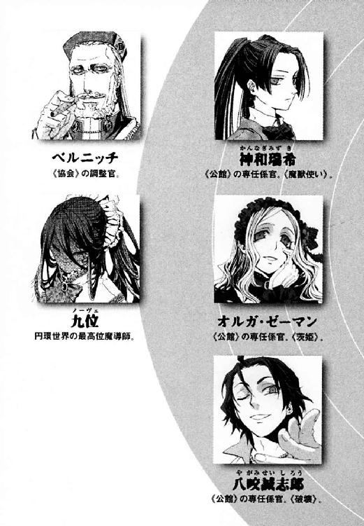
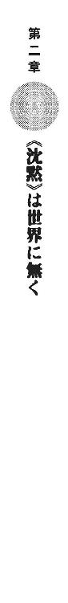

| 円環少女 ９公館陥落 (角川スニーカー文庫) | |
| 長谷 敏司 | |
| (2013) | |
円環少女
⑨公館陥落
長谷敏司

角川スニーカー文庫
本作品の全部または一部を無断で複製、転載、配信、送信したり、ホームページ上に転載することを禁止します。また、本作品の内容を無断で改変、改ざん等を行うことも禁止します。
本作品購入時にご承諾いただいた規約により、有償・無償にかかわらず本作品を第三者に譲渡することはできません。
本作品を示すサムネイルなどのイメージ画像は、再ダウンロード時に予告なく変更される場合があります。
本作品は縦書きでレイアウトされています。
また、ご覧になるリーディングシステムにより、表示の差が認められることがあります。

その日、十崎京香は世界の燃え落ちる音を聞いた。
家の居間には血臭が立ちこめて、ひどくなまぐさかった。掘りごたつの脇に、母が倒れていた。じゅうたんがべとべとになっていた。目を見開いた母は、もう息をしていなかった。
京香は、赤い世界で数をかぞえていた。今朝、出かける前にご飯を食べた場所だと思えず、頭がおかしくなってしまった気がしたからだ。思考を単純作業で塗りつぶしていないと、理性の糸がこんがらがって断線するのではないかとこわかったのだ。
じゅうたんを踏むたび、生ぬるい液体がストッキングを通して足の裏に触れた。大量のタンパク質が変質した死のにおいが、布地を伝ってはい上がってくるようだった。
この当時、大学四年生の京香は、まだ魔導師公館のことも魔法使いのことも知らなかった。だから戦いのことなど知らなかった。だから、暴力の濃密な臭気にあてられて頭が痛んだ。
「お父さん！ お父さん！」
悲鳴をあげていた。彼女の声に反応したように、ソファの陰で生き物が動いた。
「......やつらは、......どこだ」
顔を血まみれにした父だった。中年太りの父の体に、血はあまりこぼれていなかった。
そのかわりに頭が割れていた。父は眼球の焦点を失って上体をぐらぐら揺らしていた。人間は頭蓋骨が割れるとこうなるのだと、彼女ははじめて知った。
「お父さん、救急車すぐ呼ぶから」
かすかな希望が、思考をよみがえらせた。まだできることがあると思うと、恐怖の奥にかすかな光が見えた。携帯電話を取り出して一一九番にかけた。救急情報センターの職員は父の症状をたずねてきた。その声を聞くと、このどうしようもない災難が解決可能な問題に思えてきた。
「あと五分くらいで救急車来るから。それまで動かないで。お父さん、聞こえる？」
父は、じゅうたんに尻餅をついたまま背中をまるくし、頭を前後に揺らしていた。
京香は父の顔をのぞきこんだ。その彼女の手首が、突然熱い手にわしづかみにされた。
「武原くん......」
奈落の暗闇から吹き上げてくるような、うすら寒い声だった。京香は、この苦悶しうめく人が本当に父かと疑った。顔を上げ、彼女の瞳をにらみつけているのは、食卓に見る父ではなかった。
「た......け......は......ら......」
紫色になって血の泡をためた唇から、ことばが押し出された。
「お父さん！ お母さんが刺されたから電話かけたよ。救急車もう来るから」
「京香を......たのむ......」
彼女にももうわかっていた。瀕死の父が、娘を、幼なじみの武原仁と見間違えていた。あり得ない現実を前に、彼女の現実がゆがんだ。
父の血みどろの顔は土気色で、あきらかな死相を浮かばせつつあった。
「舞花ちゃんのこと......私の責任だ......。やつら......魔法使いなど......信じるべきではなかった」
「魔法？ 舞花ちゃんと関係があるの」
十崎京香は、父からこの世界に魔法があると聞いていた。仁の妹の舞花が、体を魔法に置き換えてしまう体質のせいで、学校にも行けなくなったからだ。だが、それ以上のことはどんなに聞いても教えてくれなかった。
近所の資料館に勤める父は、仕事のことを話さなかった。そこが魔法使いと日本政府との関係を管轄する魔導師公館だと、彼女は知らなかった。幼なじみの武原仁も教えてくれなかったのだ。
「わかんないよ、お父さん！ ぜんぜんわかんないよ」
血まみれの手が、彼女の手首を仁と間違えて握りしめ、離さなかった。
「......た...け......は......ら......」
京香は、憎悪だけで心臓を動かす鬼の眼光に射貫かれた。
「やつらを、殺せ」
それが、十崎京香が最後に聞いた父のことばだった。
†
そして父の死から三年後、十崎京香は魔導師公館の事務室の床に座り込んでいた。彼女は父と同じ役職につき、今日じゅうたんを汚すのは京香自身の血だった。腹を刃物で貫かれた彼女には、もはや立ち上がる力もなかった。
「いたいな......。病院に......でんわ......かけなきゃ............」
ごとりと、天井の上で大きな物音が響いた。放火された二階の屋根が燃え落ちたのだと、ぼんやり考えた。
彼女も逃げねば焼死は確実だった。一体何人殺されただろうと思った。京香には果たさねばならない仕事がたくさんあった。ふと、武原仁の妹である舞花のことに、父が断末魔に触れていたと、結局まだ伝えていないことを思い出した。
失血しすぎた彼女の上体が、振り子のように、自然に揺れていた。このままでは彼女は力尽きて死ぬのだとわかっていた。
白煙が壁の隙間からもうもうと噴き出してきた。めりめりと、屋根の梁が焼け折れたような異音が柱を伝ってきた。二階のあらゆるものが床に落ちる衝撃が、吊り照明を揺らし続けていた。頭上の天井が燃えて落ちれば、下にいる京香は圧死か蒸し焼きになるかだった。
魔導師公館の本拠である公館本館は、明治時代に建造された洋館だ。第二次大戦の爆撃すら生き残った、魔法使いたちの恐怖と憎悪の象徴が、すこしずつ崩れながら焼け落ちようとしていた。だが、彼女は、煙に巻かれても、力尽きて指一本も動かせなかった。
「......ごめん、仁ちゃん」
そして京香は、自分の体が横倒しに倒れる音を聞いた。腹部の傷口から頭まで、稲妻が走ったような衝撃が抜けた。
世界は煙の白に沈んだ。
魔導師公館の本拠は、東京は多摩川をのぞむ小高い丘の上の洋館だ。学術資料を保管した資料館の看板をかけ、視線をさえぎる林に包まれた丘は、周辺住民すらふもとを通り過ぎるだけの場所だった。
その丘自体も坂の多い複雑な地形にまぎれて、注目を受けなかったのだ。今日、もうもうたる白煙をあげて炎上するまでは、周辺住人すらそこに何もないかのように生活していた。その都会の薄闇が、好奇の目を集めていた。警察の許可を受けて、報道のヘリコプターまでがあがりはじめていた。
武原仁は、アパートの窓から大惨事をながめていた。疲れすぎて重い頭を振った。パトカーと救急車、消防車のサイレンが十台分以上も集まり、住宅街を異様な緊張に包んでいた。仁たちを置いてけぼりにして、事態は際限なく大きくなるようだった。
仁は、どうしようもない状況を前に呆然としていた。
「これだけ大挙して警察と消防が来たら、神聖騎士団も公館本館を占領し続けられないぞ。なんでここまで無茶をやったんだ？」
かつて彼は、そこで専任係官としてはたらいていた。専任係官は、《協会》と呼ばれる魔法使い集団と日本との関係を管轄する魔導師公館で、治安の維持を受け持つ役職だ。異世界人だから日本の法など守らない魔法使いたちを、最悪殺してでも止めるのが彼の仕事だった。二十四歳の彼は、解雇されるまで五年間も、魔法使いを震え上がらせた鬼のひとりだったのだ。
「京香姉ちゃんは、どうなってるんだ」
電話の子機をつかんで、仁は電話をかけ直した。相手は、彼の幼なじみの十崎京香だ。彼女は、専任係官のまとめ役をつとめる《公館》の高級官僚だ。京香の仕事場は、まさに炎上している公館本館だったのだ。
焦る仁の背後で、かわいらしい声がした。
「せんせ、どうするの？ 公館本館まで、まだ魔法で飛べるかもしれないわ」
彼の胸に、少女の舌っ足らずな声が引っかかった。
鴉木メイゼルは、魔法が存在する異世界のひとつからやってきた魔法使いだ。魔法とは、自然秩序が安定していない異世界の住人たちが持つ、自然を意志に従わせる力のことだ。この魔法は魔法世界ごとに特色を持ち、メイゼルの使う円環大系の魔法なら、ここから燃える洋館まで一瞬で位置移動することもできた。
だが、仁は首を横に振った。公館本館は黒煙だけでなく火花を高くあげていた。すでに屋根が落ちて、火事が手のつけられない状態になっている証拠だった。
「火のまわりが早すぎる。これは完全に放火だ。俺たちが、もう結果が出てるところへ魔法で飛んだら、放火の容疑者が増えて現場が混乱するだけだ。本館に生き残りがいても、もう消防に助け出されてるよ」
「そう......」
背後で、衣擦れの音が聞こえた。シャワーを浴びたばかりのメイゼルが、急いで着替え中なのだ。
「もうこっち向いていいのよ、せんせ」
「これから、人と会わなきゃいけないことになりそうだ。ちょっと風呂つかうぞ」
振り返って、仁は、アパートの自分の部屋に少女がいる華やかさに目を奪われた。
メイゼルは、リボンを選びながら、長い黒髪を手ぐしで梳いて乾いたか確かめていた。仁の胸までしか背丈がない少女は妖精めいて可憐で、そのしぐさは背伸びぎみで所帯くさかった。あめ色の瞳が、信頼しきったやわらかい視線で仁を見上げた。
身長差のせいで、少女の汗ばんだ鎖骨がちらりと覗いていた。体の前面でボタン留めする千鳥柄のワンピースが、蒸れるのか、まだボタンを二つも開けたままだった。
彼女が、薄桃色の唇を微笑ませた。
「せんせ、そんなにいそぐなら、あたしといっしょにおふろ入ればよかったのに」
「そういうこと言うな。風呂に行きにくいだろ」
「疲れてても、こういう反応ビンカンなのね。せんせって、苦しいものをわざわざ拾いあげて、人よりつらい思いをする才能があるんだわ」
メイゼルが、仁の困る様子に興奮して、内ももをこすり合わせて身をよじり、頰を紅潮させた。ちいさな魔女は、人が苦しんだり泣いたりする姿が大好きな嗜虐趣味者なのだ。
「ほら、俺が風呂に入ってる間にすこしでも休んどけ。またすぐに忙しくなるぞ」
突然、電話が鳴った。やましいことなどないのに、ふたりの空気が割れた衝撃に仁の背中がびくりと震えた。電話を取ると、自分の正しさを疑わない居丈高な口調で相手が話し出した。
〈武原元係官だな。君に、大事な話がある──〉
仁はその声を知っていた。《公館》との協力関係を強めていた警察庁警備局の副局長、清水健太郎だった。
仁も途中までは関わっていた。《公館》の事務官十崎京香は、魔法使いから治安を守る職務を改革しようとしていた。魔導師公館は、明治時代に発足してから骨格が変わっていない。だから、日本全土で起こる魔法使い犯罪と複雑化する魔法世界情勢に、対処しきれなくなっていた。なにしろ、魔法使いに関わる治安事案のすべてを、たった七人の専任係官にまかせていたのだ。
この決定的な人員不足を、京香は、警察との連携を強化して乗り切ろうとしていたのだ。
この計画を警察庁側で強く推進していたのがこの清水健太郎だ。五十歳をすでに超え、警察幹部としてキャリアの終点近くにいる彼は、髪は白髪まじりだが肩幅は広い。若い時分は腕っ節が強かったことをうかがわせるように拳はごつごつとして大きく、物腰にも男っぽい自信がうかがえた。
電話から二十分後、仁は清水と病院の薄暗い廊下を歩いていた。あれからすぐ、アパートのそばに待っていた車で府中の警察病院に連れられてきたのだ。魔導師公館は、存在自体が秘匿されている。魔法の存在自体が一般的に知られておらず、また《公館》が犯罪魔導師を裁判なしで処理しているためだ。だから、本館陥落で出た多数の負傷者を、警察は身内の腕に抱え込んだ。丘の上の洋館の正体は、マスコミに漏れてはならなかった。
仁は、消毒液の臭いがしみた廊下を、どんな顔で歩けばよいかわからなかった。顔見知りの職員たちが、処置室に入りきれず廊下で手当てを受けていた。
ひどい火傷や流血の処置を待つ人々は、足早に進む仁に気づかなかった。包帯を巻かれた被害者たちも、暴力に遭い、気力を失ったような焦点の合わない目をしていた。誰もが、苦痛と恐怖にうめいていた。皆、自分のことで手一杯だった。
「医者！ 早く医者呼んでくれよ。もう三十分も血が出っぱなしなんだよ」
何人かが警察幹部の制服を着た清水に陳情しようと顔をあげた。そして、仁に気づいて顔をこわばらせた。仁は、夏に起こった核爆弾テロ事件のとき、メイゼルを助けるために任務中に持ち場を離れて解雇された。本来、処刑されるべきところを、仁は職員たちの嘆願で命を救われたのだ。
職員たちにとって、武原仁は、彼らの善行がハッピーエンドを達成させたのだと満足してすでに終わった物語だった。だから、仁も空気を読んで礼を言うだけにとどめた。
「こないだは助かったよ、ありがとう。医者はもうすぐ来るよ」
仁の窮状にこれ以上立ち入る余裕がない職員たちが、目をそらした。
病院は、大規模災害の後のように被害者であふれていた。人々の衣服と肌にこびりついた火事のすすけた臭いが、目にしみた。腹の底に、古巣がこうも徹底的に破壊された現実が滲みてきた。怒りで、全身の毛穴が開くかのようだった。
「魔導師公館の職員に、犠牲者はどのくらい出たんだ」
「その件についての話は、ここではできない」
清水は、二階への階段をのぼり、重傷者を乗せたストレッチャーが行き来する連絡通路を通り過ぎた。仁もそのすぐ後ろを、窓から漏れ入る秋の真昼の日差しに目を細めながら付き従った。
さらにもうひとつ階段をのぼった病院の三階以上のフロアは、入院患者の病室にあてられていた。一通りの処置が終わった者しかいないから、一階の怨嗟が噓のように静かだった。
「神聖騎士団という連中は、すさまじいな。東京に機械化聖騎士師団が五千騎展開中だというが、あれはすでに軍隊だ」
清水が、歩きながらことばを押し出した。仁は、窓の外に広がる緑豊かな庭を眺めた。十崎京香の安否が不安で、話しているほうが楽だった。
「魔導師公館が交渉してた《協会》は、一千以上の魔法世界を束ねる既知魔法世界で最大の政治勢力だった。神聖騎士団は、そこと一万年も戦争を続けてる宿敵だ。弱いはずがない」
まさに数時間前、仁は、聖騎士将軍《至高の人》アンゼロッタ・ユーディナに率いられた聖騎士千騎と、魔法遺物内を舞台に《賢者の石》の争奪戦をしてきた。だが、それでもまだ四千騎もの戦力を、敵は首都に残していたのだ。
「五千騎規模なら、聖騎士の侵攻としては第二次大戦後の連合国軍占領期以来だな。あのときは公館本館が占領された。今回の陥落も順当だよ」
淡々と敗北を語る仁に、警察幹部が眉根をこわばらせた。
「《公館》を解雇されたとはいえ、ずいぶん冷静だな」
「現実を認めないと、次の戦いをはじめられない。むちゃくちゃな戦力差で勝負を迫られるなんて、《公館》じゃよくあることだ。そうなるものは、泣き叫んでも結局そうなってきた」
魔導師公館には、今、戦力がほとんど残っていない。治安を担当する専任係官が、たった六名しかいないのだ。《公館》に従う義務のある者は、そのうち四名にすぎない。《魔獣使い》神和瑞希、茨姫オルガ・ゼーマン、《破壊》八咬誠志郎。そして重鎮たる《鬼火》東郷永光。刻印魔導師も、《鬼火》配下の精鋭《鬼火衆》を除けば、信頼のおける者は数えるほどだ。
仁は、頼りない味方に比べて強烈すぎる敵を、ひとつずつ並べた。
「結局、本館をやったのはどこなんだ？ 神聖騎士団か？ 他の魔法使い勢力が日本に攻めてきたときは共闘することになってるのに、今回の聖騎士侵攻では《協会》が動いてる様子がないな。《協会》は魔導師公館を見捨てたのか？ それともワイズマンか？ 《神に近き者》グレンみたいな魔法使いがまた現れたか、それとも国城田みたいな俺たちの世界のテロリストなのか？」
返事がない沈黙を、彼らの足音が埋めた。
「清水副局長。歩きながら、ちょっといいですか」
だから仁は、清水に話しかけていた。魔導師公館を解雇された彼にとって、警察庁の頂点に近い男と並んで歩く機会など二度と無いかもしれなかったからだ。
「なんだね。突然、話し方がていねいになったな」
「警察は、これからの時代、《公館》と協力してゆくことになる。いや、公館本館が陥落した以上、《公館》が機能不全になって、たまった仕事は警察に行くはずです。だから、そのときは刻印魔導師のこと、よろしくお願いできませんか」
秋の日差しが、静かに窓から注いでいた。武原仁はメイゼルの身が心配だった。あのちいさな魔女は、史上最年少の刻印魔導師だったからだ。
「刻印魔導師のこと、ご存じですよね。《協会》が、魔法世界からこの世界に追放した極刑の罪人です。刻印魔導師は、《協会》の敵を百人討伐するまで自由になれません。魔導師公館は、彼女たちを《協会》からさげわたされて治安維持に使ってました。刻印魔導師を監督して、この国で罪を犯したら処分するのも、俺たち専任係官の仕事でした」
廊下をふたりの男がゆく。後戻りを許されない足音だけが響いていた。
清水は角張った顔をこわばらせ、何も明言しなかった。警察にとって、魔法使い問題の最大の暗部はまさに刻印魔導師だからだ。警察は、法律の枠内で治安活動を行う組織だ。人権を無視された存在など身内に持っては、彼らの正義自体が歪むのだ。
「警察が魔法使い問題に関わるなら、俺たちの歴史の泥を見なかったことにしないでほしい。刻印魔導師たちは今でも生きてるんだ」
清水の額に刻まれたしわは、五千騎の神聖騎士団の話題のとき以上に深かった。
「魔導師公館のやりかたを、我々は受け入れられない。国城田事件以来、警察は魔法使い事案に関わることを、治安に抹消箇所を作らないため必要だと考えてきた。だが、手渡されてみると重荷だな」
仁たち人間のほとんどは、魔法の存在を知らない。この世界の住人が、魔法を使えないだけでなく、見たり聞いたりした魔法を破壊してしまうためだ。だから、魔法使いたちは、仁たちを魔法の天敵たる《悪鬼》と蔑み、この世界を神と奇蹟に見捨てられた《地獄》と呼ぶ。刻印魔導師がこの世界に流刑されるのも、ここが忌むべき地だからだ。
だが、魔法使いたちは《地獄》を訪れ続ける。自然秩序が歪んだ魔法世界の住人にとって、秩序が整ったこの世界が魔法実験場として最適だからだ。なのに魔法使いたちは、古くは神話や伝承の主人公でありながら、今では歴史の表舞台から完全に排除された。魔法使いたちと《悪鬼》のいさかいの根は、おそろしく古い。清水の言うとおり、まさに重荷だった。
清水が、個室らしい病室の前で立ち止まった。そして、表情を消して制服のネクタイを整えた。
「入りたまえ。我々の罪が、我々を罰するために待っている」
病室の名札には、患者の名前がマジックで書かれていた。
〈十崎京香〉
幼なじみが、生きているのだとわかった。涙がこみあげた。
仁が病室に入ると、よく知った顔の女性がベッドに横たわっていた。顔には樹脂製の酸素マスクがかぶせられ、両腕に点滴がつながれていた。心電図が、ベッド脇の機材に表示されていた。
一歳年上の十崎京香は、仁にとっては憧れだった。頭がよくて運動ができて、自信に満ちて、そしてどんな苦境でも前を向く勇気があった。彼女が、目を閉じ顔を土気色にしていた。
彼女は、荒い息をつき続けてた。機材に表示される心拍は安定していたが、血圧が明らかに低かった。重傷だった。
「腹部の貫通創だ。きれいなものだ。小腸と子宮の間を、傷口はそれぞれ一ミリほど外れているそうだ」
声に驚いて、ここに京香とふたりきりではないことを思い出した。仁に続いて病室に入ってきた清水健太郎だった。
仁は、ほっとして京香の顔を覗き込んだ。《公館》での彼女は、磨いた鉄のように鋭い怜悧な美女だった。だが、苦痛が、彼女をすこし大ざっぱで意地っ張りな、幼なじみの京香姉ちゃんに戻していた。
「命に別状はないのか」
公館本館が燃えてまだ一時間にもならない。その短時間で集中治療室から一般病室に移された以上、もう危険はないのだ。頭でわかっても、確かめずにいられなかった。
清水が何か言うより早く、横たえられた十崎京香の睫毛が震えた。
ベッドの上の彼女が、ほぅと大きな息をついた。半透明の酸素マスクの内側を、湯気の露が覆った。仁は、白いシーツのベッドのそばに駆け寄っていた。
「京香姉ちゃん」
繊細なまぶたが、ゆっくりと薄く開いた。焦点の合わない瞳が、周囲を見渡して仁を見つけた。京香が酸素マスクの奥でかすかに微笑んだ。仁の全身から、今度こそ本当に力が抜けた。
「京香姉ちゃん。......本当によかった」
仁の背筋が震えはじめた。胸が痺れるようで、息が苦しくなった。彼は、京香を失うのがこわかったのだと知った。彼女が口を動かした。
「────」
声が小さすぎて聞こえなかった。仁は耳を寄せた。「いたい」と言っていた。そして、「メモ帳」と続けた。腹部の貫通創では、患者は必ず一度は開腹される。手術直後では声を出せないのも道理だった。
「だいじょうぶなのか？ まだ大けがしたばっかりなんだから無理するなよ」
仁は、個室の隅の棚からメモ帳と鉛筆を取って彼女にわたした。病院のピンク色の部屋着姿だと、いつものスーツ姿より親しみを感じた。彼女が手元を見もせず、筆談の文を書いた。
〈あまえるな〉
腹を刺し貫かれた重傷の京香が、憔悴した目元に生気をぎらつかせだしていた。京香が生きていたことで仁はほっとした。だが、《公館》にとって状況は最悪のままだ。公館本館は陥落し、敵は活動中なのに《公館》の職務が完全に停止している。そして京香は、専任係官のまとめ役という、《公館》の治安機能の指揮者なのだ。
彼女が点滴のチューブがついたままの腕をあげて、仁を差し招いた。
病室のカーテンは閉じられていた。窓の外の陽光は、ここからは異世界のもののように遠く感じた。魔導師公館の、冷たい意志を伝える会議室には窓がなかった。仁のよく知っているのと同じ冷気が、個室に澱みはじめていた。
京香が、痛みに震える唇で仁に告げた。
「公館本館に火をつけたのは、《鬼火》と、《鬼火衆》よ」
仁の肺から、空気が漏れているような気がした。息を吸っても吸っても、酸素が足りないように息苦しくてしかたなかった。
《鬼火》東郷永光は、十九年もの間、専任係官としてこの国を守り続けた重鎮だ。そして仁にとっては、挌技の先生でもあった。東郷は、魔導師公館の柱石だったのだ。
「東郷先生は、一芝居打ったんじゃないのか。火事が起こって公館本館に人目が集まれば、聖騎士が四千人いたって占領し続けるのは無理だ」
東郷に殺意があったなら、十崎京香は死んでいたはずだった。だが実際には、東郷は臓器に傷をつけずに刺した。配下の《鬼火衆》もこぞっての反乱なら、公館職員は皆殺しでなければおかしかった。だが、病院にいたのは、ことばをしゃべれる症状の者ばかりだった。
同じ専任係官だった仁の共感を、警察官僚の清水が打ち割った。
「それが策だったのだとしても、彼の行動はすでに反乱と言える状態にある。東郷永光は、《鬼火衆》とともに魔導師公館を離反して現在行方不明だ」
仁にも、今、まさに何が起こりつつあるのか、わかってしまった。
この病室の前に立ったとき、清水は罪と罰の話をした。仁は、この病室にメイゼルがいない意味に、寒気がした。ちいさなメイゼルは、病院の受付より奥には入れてもらえなかった。鬼火衆が破壊に関わったせいだ。今、刻印魔導師にはそれだけ信用がないのだ。
「京香姉ちゃんはさ。......魔導師公館と警察で連携するって言ってたよな。そうしたら、信用できない《協会》との協力関係に頼らなくても、治安維持の戦力が整うようになる。......けど、《協会》との関係が壊れたら、刻印魔導師は《公館》で仕事をしてても永遠に自由になれなくなるよな。《協会》と《公館》の敵は、もう共通じゃないんだから」
刻印魔導師は、日本政府にとって最悪の暗部だ。そのうえ、今やいつ《協会》の間諜になるかわからない厄介者だった。魔導師公館は、警察との連携で光のあたる場所へと歩み始めた。だが、刻印魔導師たちは、明るい場所で自らをまっとうすることはできない。道具として使われてきた罪人たちが、古い時代とともに捨てられようとしていた。
だから、この爆発はいつか起こるものだった。政府機関として役割を果たすための京香の選択と、古い魔導師公館を守ってきた《鬼火》の流儀は、衝突するべくして衝突した。
そして重鎮である東郷が去り、刻印魔導師を使役する仕組みが信用を失い、本拠地まで焼けた。それは、現体制の魔導師公館が空中分解したということだった。
自ら飛び出した古巣が崩壊した残骸を、仁はどう考えればよいかもわからなかった。
「......なんでだ。......なんでこうなるんだ。なんで〝今〟なんだ」
幾万の魔法世界で、ただひとつ魔法に見捨てられた世界。ここは地獄──この世界に神はいない。
仁のジャケットの袖を、京香がつかんだ。幼なじみは鬼の形相をしていた。それでも、仁の甘さが、傷ついた彼女のことばを聞かねばならないと駆り立てた。彼女が、酸素マスクの隙間から囁いた。
「......東郷を、撃ちなさい」
もうとっくに、世界はこういうものだとあきらめていたはずだった。だが、涙がこみあげそうになった。
「俺に、......東郷先生を殺せって言うのか」
それが魔導師公館のルールだと、彼女の偏執的な生気にぎらつく目が語っていた。
仁は、五年間専任係官の仕事をした。だが、その間に粛清対象になった専任係官は王子護ハウゼンだけで、この男は逃げ足が速かった。だから、仁が身内の討伐を命じられるのは、今日がはじめてだった。
「ムリだ。......いや、はじめてだからってわけじゃない。どうして俺なんだ」
夏に起こった核爆弾テロ事件では、仁は、東郷に裏切り者として斬られかけた。そのとき、次は決着をつけると宣告されていた。
「いつか、東郷先生とは殺し合いになった。そうなったはずだ。......それでも、俺は、もう《公館》の人間じゃない。断っても命令違反じゃないよな」
仁の答えに、京香が横たわったまま首を横に振った。明るい銅色に染めた髪が、枕の上にかすかにふくらんだ。
「こんなかたちで決着したらダメだ。聖騎士だって、まだ何千人も東京にいるんだ。ただでもすくない戦力を、同士討ちにさくようなもんだ」
顎がわなないていた。仁は、奥歯を嚙みしめて止めた。まるで、東郷を裏切り者として死ぬべきでないと思っているかのようだった。この嫌な役から逃げ切りたいだけではなかった。
「京香姉ちゃんが警察と協力するのは、仕事のしかたを変えたいからだろ。人が死にすぎて、人員不足でもう仕事が回らないから、警察と提携するんだろ。東郷先生や《鬼火衆》は、《公館》の主力だ。せめて一回くらい和解のチャンスがあっていいんじゃないのか」
「......あ、はぁ、がっ」
だが、京香は、声を出そうとして咳き込んだ。軽い咳が止まらない様子で、だが痛みでしゃべれないかわりにメモ帳に鉛筆で殴り書きした。
〈トウゴウはチカへむかった〉
破り取った紙を、京香が押しつけてきた。仁の呼吸が止まった。彼女が、次の紙に書いたことばが、もう本当に駄目なのだと眼前を閉ざした。
〈トンネルをほってゲートを目ざしている〉
仁は、病室を出ると廊下の壁にもたれかかった。十月の日差しが、空を透明に冴え渡らせてゆくようだった。報道のヘリが飛ぶ音が、病院内にも聞こえてきていた。騒がしいところにまだ騒音を加えずにいられない人間の営為が、ひどく気に障った。
胸から重い何かを押し出すように息をついた。体に宿ったどうしようもない鈍さと疲れに耐えられなくなって、ことばにして呪った。
「なんで、よりによって《門》なんだ。あんなところを攻撃したら、《公館》と魔法世界は、交渉が完全にできなくなるだろ」
東京の地下には、魔法使いたちの間で伝説として語られる遺物がある。《神人》と呼ばれる謎の魔法使いたちが遺した高度魔法遺物、《門》だ。《門》は、あらゆる魔法使いが通れる、異世界との交通路だ。そして、《協会》が管理している《門》で、この世界へ繫がるものはひとつしかない。しかも、《地獄》と呼ばれるこの世界に、遺物を使わずに侵入することはほとんど不可能なのだ。
もしも東郷がこれの魔法を破壊すれば、《協会》はこの世界へ来られなくなる。東郷は、《協会》の死活を握る最重要拠点に、討ち入りをかけようとしているのだ。
京香の病室から、またひとり客が出てきた。短髪の体格のよい中年男性だった。医者でもないのに、病院で白衣を着ていた。
《公館》嘱託の魔法学者、溝呂木京也は、公館陥落の騒ぎで、傷一つ負っていなかった。
「東郷君が《門》を目指すのは妥当だろう。東京での我々の戦いは、かならず《門》に行き着く。第二次大戦の敗戦後は、そこを狙った神聖騎士団を、《協会》が武蔵野迷宮で防ぎ止めた。《協会》と聖騎士たちの一万年の戦争でも、何度も《門》はおびやかされてきたはずだ。今回の聖騎士侵攻も、そうなったろう。──だが、最重要施設だけに、十崎事務官は、この警察と提携しようというご時世でも、東郷君を許さなかったな」
「最初から、おまえは、魔導師公館は負けるって予想だったんだな」
仁は、魔導師公館を裏切った人間だ。なのに、冷静でいようとするのもつらかった。だが溝呂木は、この大惨事にも、まったく心を動かしていなかった。九年前、仁が魔導師公館にきたときから、この男には人間はただの資料だった。
「戦力を比べれば、先々こうなる用意をしておかないと仕事にならないだろう。神聖騎士団は、公館本館を占領して《門》を目指すところまでは確実に達成したはずだ。東郷君のおかげで、結果的に、聖騎士の攻撃は一時止まったがね」
溝呂木がいつもどおり冷徹だったからこそ、改めて《公館》の敗北がしみてきた。
「武原君こそ、ここでうろうろしていていいのかね？ 他の専任係官に会ったら、殺されかねないが」
「俺を呼んだのは十崎事務官だ」
「君と十崎事務官の関係はわからないな。こんな土壇場で、十崎事務官が最初に呼ぶのがなぜ君なんだ？ 部外者に頼んで失敗したら、十崎事務官はただでは済まないぞ。君も、ここを離れた身で、今さらなぜそこまでする？」
火事の臭いがしみついた白衣のまま、溝呂木が人間はわからないとばかりに頭を搔いた。仁も、今の彼自身が恥知らずに見えるだろうことは承知の上だった。
「個人的な理由で、俺は《公館》ではたらきはじめた。出て行ったのも俺がそうしたかったからだ。だったら、手を貸すのだってそうだ。そうしたいから、そうするんだ」
ことばにして、自然と片頰がほころんだ。そう思えることが、すこしうれしかったのだ。
「舞花が死んでどうしようもなかったとき、京香姉ちゃん......十崎事務官がいなかったら、俺はどうなってたかわからない」
溝呂木が、仁に話させておきながら、話題を取り消すように両手を振った。
「もういい、結構だ。私に向かない問題に、興味を持つべきではなかった」
仁は、彼女が、ただの幼なじみの京香姉ちゃんだったころを覚えていた。妹が死んだ六年前、京香は、倉本きずながそうしていたように、仁に仕事を止めさせようとしていた。三年前に父親が死ぬまでは、鉄の女はいなかった。
そして、仁は周囲へ視線をやった。
濃い死の影を負った人間が、ぞろりと雁首をそろえていた。どこにいても風景から浮き上がるような男女が、廊下の左右から仁を包囲するように近づいてきていた。
完璧に整った顔をした高校の制服姿の少女が、大股で彼に歩み寄った。漆黒の長い髪を頭の左右で括った彼女は、白すぎる肌のせいで人形のように見えた。《魔獣使い》神和瑞希が、片手一本で仁の胸ぐらをつかんだ。
「......恥しらず。............いつまで......こんなとこ......うろちょろ...してる」
神和瑞希は、《公館》が誇る最良の狩人だ。そして、仁のもとから去った倉本きずなの同級生で親友でもある。
「きずなは......苦しんでる............おまえの......せい......」
絞め殺したそうな視線で、彼女が仁を射ていた。きずなの名前を出されると、彼にはぐうの音も出なかった。今日の昼間、仁はきずなの父親の死の真相を告げ、卑怯者とののしられたばかりだった。
瑞希が、腹立ちをぶつけるように、仁の体をコンクリートの壁に叩きつけた。
彼はいつでも修羅場の中心に飛び込んだ。そして、ふらついたまま場当たりな答えを出してきた。今、病院に留まっているのも同じだった。
「さすがは《沈黙》。これほどの苦痛の臭いを、あなたがかぎつけて来ないはずがないと信じていましたわ」
病院の壁に無様に押しつけられた仁に、やさしい声がかけられた。黒いエプロンドレスをまとった若い女性が、瑞希とは反対側の廊下から仁をはさみこむように歩いてきたのだ。やわらかくウェーブした蜂蜜色の髪をきらめかせ、上品な面差しに微笑みをたたえた彼女は茨姫オルガ・ゼーマンだ。
仁には、魔法世界人である彼女の共感がつらかった。
「そうじゃない」
「ええ、わかっていますわ。あなたは、敗戦のうっぷんのはけ口になって、鞭打たれるために来たのでしょう。わたくしも、ここでしめっぽいウンコたちの泣き言を聞きながら、あのすごい臭いの挫折がどんなふうに爆発するかばかり考えていましたもの」
オルガたち高位魔導師にとって、魔法を使えないこの世界の住人はしゃべるウンコに等しい。その彼女が専任係官をしているのは、贖罪のため《悪鬼》に命令されて命を投げ出す屈辱を受ける、巡礼者だからだ。ただし、本人以外には行き過ぎた被虐趣味者と変わりがない。
「俺はおまえのウンコ友だちじゃない」
仁は、理解の微笑みを浮かべるオルガが視界に入らないように顔をそらした。まるで本当の汚物をさわってしまったかのように、目があった瑞希が仁を突き放した。
「......あ............ちがった...」
「何が違うんだ」
胸ぐらをつかまれていたときより仁の身の置き所がなくなった。神和瑞希は、微妙に頭が悪い。
「やっぱり......首...しめる...。......おまえ......首......だせ............」
「モテるな、仁。《公館》を出ても、女の子にこんなに求められるとはね」
殺伐としながら微妙に張り詰めきらない空気に、新たな客が割って入った。廊下の椅子に、ピンクのドレスシャツの胸を大きくはだけた貴公子が、足を組んで座っていた。
《破壊》八咬誠志郎は、椅子の両脇にミニスカートの女秘書と女性看護師をはべらせていた。仁と八咬は、専任係官になるため高校時代にいっしょに訓練を受けていた。仁は、八咬だけはずっと変わらないことにほっとしていた。
「おまえ本当にこれがモテてるように見えるか」
「モテているさ。憎しみは愛情の裏返しさ」
八咬が、秀でた額に一房垂れた前髪を軽く指で払った。
「仁を呼んだのは、十崎さんなんだろう？」
窓から差した陽光が、長い影を床へ壁へと落とした。人ならぬ世界の瘴気を避けるように、病院四階の他の入院患者は病室から出てくる様子もなかった。
瑞希も、《茨姫》も、不必要なことばを発することをやめていた。専任係官が集められたのは人を殺す算段をするためだと、全員が承知していた。専任係官は、魔法に関わる人間が治安を乱したときの処分役だ。相手が誰でも、やることは決まっていた。
八咬は、これからの後ろ暗い仕事の第一歩を踏みだすように語りはじめた。
「十崎さんは重傷だそうだから、仁は細かい状況を聞いてないんじゃないか。......ああ、やっぱりか。あの火事は、機械化聖騎士師団が公館本館を包囲しようとしてた最後の防衛戦の最中だったんだ。ぼくらは敵をけん制に出てて、東郷先生と《鬼火衆》が、本館を守ってた。だけど、先生は、公館本館に火をはなったあげく、無線で犯行声明を残して行ってしまった」
仁は、救いのないパズルの空白を、それでも埋めずにいられなかった。
「東郷先生は、何を言ったんだ？」
「己は落とし前をつけに行く。この地の底に、斬らねばならん奴が居る──だってさ。東郷先生らしいだろう」
情に厚い八咬が、今日の出来事なのに、遠い昔をなつかしむように言った。
「《協会》は、八月の核テロ事件以来、《公館》と対話を打ち切ったんだ。聖騎士にぼくらが追い詰められてる間も、協力要請は無視され続けてた。今月はもう魔法使いは公館本館を引き払って避難してた。《協会》は、ぼくらを見捨てたのさ。──でも、そんなことをして、東郷先生がただで済ますと思うかい？」
嘗めたマネをした相手は、誰であろうがただではおかない。専任係官の柱石、東郷永光はそういう男だ。その論理は、いっそ清々しいほど明快だった。
「東郷先生に十崎事務官が刺されたのは、落とし前なんだろう。《公館》と警察との職務提携を、刻印魔導師に居場所がなくなるのを承知で進めたわけだからな。けど、公館職員まで病院送りにしたのは、らしくないだろ」
釈然としない仁の様子に、八咬が苦笑した。
「《鬼火衆》が、ひとり一発ずつ公館職員を殴っていったってさ。まるで卒業式の後のお礼参りみたいだったらしいね。《鬼火衆》は、命をすり減らしてこの国のために戦ってくれたんだ。鬱憤を晴して行っても、心残りを残されるよりはね」
「病院送りはやりすぎだ」
「《鬼火衆》が火災現場から職員を全員救出したから、死者は出てないんだ。日頃から好かれてた人は無傷で、奴隷とか道具あつかいしてた職員からやられてる。織田ちゃんとか、逆にお菓子とか形見をいっぱいもらってたよ」
仁にも、薄ら寒い理解が訪れた。
「そうか。東郷先生も《鬼火衆》も、はじめから地上に生きて還るつもりはないんだな」
八咬が、微笑を枯らして言葉を切った。つまり、東郷たちは片道切符を覚悟で殴り込みに出たのだ。《公館》のメンツを守るためにだ。
──そして、その東郷は粛清される。魔導師公館は、最重要施設である《門》を狙った身内に甘い処断をくだしては、《協会》との政治交渉ができなくなるからだ。
「バカな......男......」
神和瑞希がつぶやいた。瑞希にとっては、東郷はただの愚か者の反逆者だ。
仁にとって、東郷永光は魔導師公館そのものだった。命は軽く裁量は個人にまかされる前時代的な組織でどう生きるか、その見本が東郷だった。
だから、瑞希が東郷の行動を他人事のように話すことが、気に障った。
「《門》なのはともかく、東郷先生が通そうとしている筋は、まちがってはない。もしも《公館》を解雇になってなきゃ、俺も同調していたかもしれない」
東郷が打ち捨てられることがただ苦しかった。仁も、刻印魔導師であるメイゼルを救うために《公館》を飛び出したからだ。
「公館本館を失ったことの責任を、十崎事務官が問われないように、あの人ひとりで悪役になったんじゃないのか」
「............だから......何？」
今度は瑞希の制服の胸ぐらを仁がつかんでいた。ガラス玉のように澄んだ彼女の瞳が、仁を真っ正面からとらえていた。
「余計な...こと......考えようと......するな......。......やったこと...は............やったこと......。......いつまでも......ふらふら......ふらふら...と。......おまえ...見てると......気持ち悪い」
「ふらふらだと。俺がいつだ！」
どうしようもなく、仁は軽い少女の体を突き放した。確かに仁は、いつもふらついていたからだ。決断しきれず、目の前の危機や悲劇に流されてばかりだった。心を決めたつもりで、何度も同じ問いを問い直していた。
「......おまえ......やる気......ないなら............消え...ろ......。頼れも......しない......くせに......いつも......状況の......中心......いる......。中心......いるのに......おまえ......はっきり...しない......から、......まわり......人間............迷惑......する............」
静かに瑞希が怒っていた。仁の告白が遅れたせいで傷ついた倉本きずなのためにだった。一千年続く退魔の家柄に生まれた瑞希は、身内と魔導師公館の仕事を峻別している。そして、彼女にとって重要なのは友だちだった。それが瑞希のぶれない〝筋道〟だ。
「きずなちゃんはどうしてる？」
倉本きずなは、数時間前に父の死の真相を知ったばかりだった。家族のように食卓を囲んできた仁が彼女の父を殺したという、救われない真実をだ。
「............おまえに...関係......ない......」
瑞希がはねつけた。きずなの気持ちが、落ち着いているわけがなかった。
八咬がついに核心に触れた。
「仁がここにいるってことは、君が十崎事務官から東郷先生の討伐を命令されたんだろう。いや、今の君は《公館》から離れてるから、依頼を受けただけかな」
八咬たち専任係官を、魔法使いたちは《鏖殺戦鬼》と呼ぶ。狩られる側にとって専任係官はまさしく地獄の鬼だ。三人の鬼の底冷えする目が、場違いにここにいる仁へ集まった。
仁は、命がけの意地の張り合いや冷たい意志決定に、また巻き込まれていた。だが、感情では割り切れなくても、最後には理性を押し通した。
これは、仁にとって悪くない話だった。東郷には、「次は斬る」と告げられていた。そのせいで、通りでばったり会うのがこわくて《公館》に近寄らなかった。だが、今は勝負にもっとも有利な状況だった。彼の冷徹な部分は、先生が死ぬことの損得を勘定していた。
「────引き受けたよ。俺は、十崎事務官から、元専任係官東郷永光の抹殺を依頼されて、それを引き受けた」
彼は、これから何かを得て大きなものを失う。気が遠くなった。病院一階のロビーでひとり彼を待つ少女の前で、偽善者ですらいられなくなりそうだったからだ。
「そんな顔で俺を見ないでくれないか。俺は、最後には必要な引き金を引いてきた。俺は、これまでだってそうしてきた」
「また......流されて...る......だけ............。......おまえは......いつか殺る......相手......始末......つけるのに............大義名分と......《公館》......支援......つく...から...とびついた............だけ............」
瑞希が、汚れを雑巾でぬぐうように吐き捨てた。仁は、何時間か前、倉本きずなに同じような顔でののしられた。そのときと同じように、仁はおとなの論理を盾にしていた。
「それでも、生き延びなきゃ何も続かない。だから俺たちは偽善から手を切れないんだろ」
「生きのび......たいなら......最初から...出てくるな............」
仁の顔が、大事なものを彼の手で救いたい悪を指摘されて歪んだ。
「おまえはここに来て二年目だから、矛盾もなくて身ぎれいだろうな。でも、死ぬ気の東郷先生だぞ。細かい筋道にこだわって止められる相手じゃない。東郷先生には魔法は効かない。斬り合いになったら無敵だ。だったら、遠距離から俺が狙撃するのが、一番、確実だ。十崎事務官の選択は、妥当だよ」
事態がどう転んでも東郷永光は死ぬ。ことばにしていると、仁の中でも現実味を帯びてきた。
「取り込み中のところ悪いが──」
魔法学者の溝呂木が、携帯電話を片手に戻ってきていた。
「──警察からの情報で、神聖騎士団が、武蔵野地下壕で活動していることが確認された」
「............《至高の人》......は......」
「《至高の人》アンゼロッタはいないそうだ。人数はすくなくとも百人単位だ。君たちで好きにやってくれたまえ。いや、《聖霊騎士》でも出てきたらぜひ教えてくれ」
最初に立ち上がったのは、八咬誠志郎だった。秀でた額にかかった前髪を払い、貴公子が芝居がかって両手を広げた。
「さあ、みんな、行こう。公館本館の火事で、人目が集まったせいで姿を消したと思ったら、地下とはね。警察じゃ、武蔵野迷宮の深部に入られたらもうお手上げだろう」
魔導師公館に、もう頼るべき柱だった《鬼火》はいない。誰かが、彼の担っていた役割を受け継がねばならなかった。
通話を切った溝呂木の携帯電話に、また呼び出し音が鳴った。十崎京香が倒れている今、警察からの信頼がもっとも厚いのは溝呂木だからだ。溝呂木が電話口に大声で返した。
「誰か十崎事務官を起こしてくれないか。私は学者の仕事で忙しいんだ。......彼女は若い。あの程度の傷なら三週間もすれば退院だ、もうはたらかせても死にはせんよ。聞こえなかった。もう一度言いたまえ。残念だが、地下壕の地図はないぞ。あれは燃えた」
「......神和家......に......写し......ある............」
魔導師公館は修羅場を迎えて、活気づきつつあった。迷惑なことに、病院を臨時の事務所にしそうな勢いだった。溝呂木に、病院内で携帯電話を使うことを躊躇するような神経はない。
「事務員なら下にいくらでもいるだろう！ けが人でも関係あるか。私は雑用役ではなく学者だ。公館が燃えようが、私の時間をどう使うかは私の勝手だ！」
「行ってきたまえ、仁。連中はぼくらが食い止める」
飄々と人生を楽しむ男だった親友が、笑った。
目鼻立ちのはっきりした貴公子然とした面差しに、頼れる落ち着きが出はじめていた。先達として《鬼火》東郷が背後に控えてくれた時期は、もう終わった。まだ若造のつもりだった仁たちの世代が、おとなとして、おおきなものを背負わねばならないときが来ていたのだ。
†
──十崎京香は、夢を見ていた。
これが夢だとわかっていた。
この光景には、燃え落ちたはずの公館本館が登場していたからだ。
六年前の記憶だ。武原仁もまだ高校生だった。仁は、制服姿で、資料館に偽装した公館本館の門の前で段ボール箱を抱えて立ちつくしていた。ガムテープで封をされた箱に、《武原・ロッカー》と無造作にマジックで書かれていた。
京香は、道に立ちつくす仁のそばに車を停めた。アパートまで送るためだ。大学生になって免許をとったばかりだった彼女は、幼なじみをよく車に乗せていた。
舞花が事故死したと聞いて、当時の彼女もわけがわからなかった。舞花が、体を魔法化してしまう体質のせいで、人に見られると体が壊れる時期があったとは聞いていた。だが、高校に入ってからは症状も安定して、元気になっていたのだ。
「仁、荷物があるってお父さんに聞いたけどー」
車の窓から、幼なじみを呼んだ。そばに車を停めたのに、彼はドアを開けようともしなかった。目を開きながら、仁は何も見ていなかった。京香も悲しくなかったわけではなかった。ただ、仁の地面を細かく震わすような無言の慟哭を前に、金縛りにあった。
京香には、居場所がなくなると逆に軽さにしがみつくくせがついていた。
「それ、舞花ちゃんの荷物？」
「............ちがう」
仁は、抱えた段ボール箱に視線を落とした。
「舞花のじゃない。全部、俺のだ」
そして、彼と彼女の間にことばは絶えた。
京香が、魔導師公館のことをくわしく知るのは、この三年後のことだ。武原仁は、妹の体を魔法で治してもらうために《公館》に入った。そして、才能を開花させた妹のおまけとして訓練を受け、人を殺すようになった。だが、仁は結局、妹を守ってやりたいという願いを叶えられなかった。武原舞花は、専任係官として殉職した。
「ごめんな。京香姉ちゃん。これ、やっぱり、俺が、持ってなきゃいけない荷物だから。元の場所に置いてくるよ」
頑丈な門が再び内側から開いた。仁の背後に、少年が来ていた。秋も深いのに学ランのボタンを全開にして、シャツのボタンも半分はずした高校生だ。彼女が仁のアパートに行くたび、なぜか居着いている八咬誠志郎だった。
八咬が、京香に気づいて居心地悪そうに顔をこわばらせた。彼女に入れない世界が、ここにあった。
「仁、どうだい。だいじょうぶか」
「もういいんだ。もう全部終わった」
段ボールを抱えた仁が、回れ右をして門の内側に戻ろうとしていた。
そのとき、三人目の客が門を越えた。時代劇から抜け出てきたような和服姿の男だった。彼が東郷永光だと知るのは、京香が魔導師公館に入庁してからだ。
「泣くな、阿呆────」
仁と八咬が、顔を青ざめさせながらも背筋をのばして気を付けをした。目を閉じたままのその男は、仁が泣いているのだと言った。京香には、歯を食いしばった幼なじみが戦っているように見えた。
和装の武人が、顔をゆがめて耐える仁をことばで斬り捨てた。
「武原よ、貴様だけがあやつを案じていたと思ったか。貴様らのつながりは、そんなものだったか」
魔法のように、仁の目から本当に涙がこぼれた。
致命傷から血があふれるように、仁は抱えた段ボール箱に熱い涙を落とした。見かねた八咬が、かわりに荷物を丘の頂上の洋館へ運んでいった。仁が、彼女の車にのろくさ乗り込んだ。
「仁、あのサムライっぽい人、一体誰だったの？ お世話になってる人？」
「あいつら......殺してやる」
驚いて京香はバックミラーを見上げた。後部座席の仁が、顔をあげていた。死んだように光を失っていた目に、かすかな生気がともっていた。
「殺してやる」
彼女には、彼が強くなりたいと泣きわめいているように聞こえた。無言だったときの空虚さが、ことばにするたび等身大の高校生の怒りの形をとっていった。人間の残骸が、ようやく京香の知っている幼なじみに戻ってきた。
「京香姉ちゃん、なんでそんな顔してるんだよ」
「憎しみは、愛情の裏返しだって、......誰かに聞いたから。お父さんかな。......こんなときに、ごめん」
京香は、落ち込む仁の隣に、ちゃんと彼女の居場所があることにほっとしていた。父は、舞花の体が異常をきたしたとき、京香にこの世に魔法があることを教えてくれた。だが、父も仁も、みんなそれ以上のことは教えてくれなかった。
「仁ちゃん。この世界には〝魔法〟があるのに、どうしてこんなふうなのかな......」
「俺も、京香姉ちゃんも、魔法使いじゃないからだよ。だから、俺たちじゃ奇蹟になんて手が届かないんだ」
まだ大学一年生だった彼女は、三年後に十崎家の居間が血で染まると想像もしなかった。仁も、彼らの仕事のことを秘密にし続けた。だから、父が殉職するまでは、〝魔法〟とは素晴らしいものだと信じていたのだ。
「仁ちゃんは、魔法を見たことある？ 舞花ちゃん、魔法使いだったんでしょ」
「あるよ。......ある。......舞花の魔法は、空を飛んだり、壁を歩いたり、すごかったんだ。魔法は、すごいよ。でも、魔法使いにとっては、俺たちは虫けらだ」
「そっか、......でも、魔法、私も見たかったな」
ハンドルを握りながら、京香の頰がゆるんだ。けれど、彼女の目は自然にうるんできた。彼女が、他人事のように舞花のことを語っていたからだ。ちいさいころはよく遊んだのに、魔法使いだったと聞いてから疎遠になっていた。高校生になった舞花が仁の腕を折ったと聞いてからは、話をすることもなくなった。京香が仁への仕打ちに怒っただけではなかった。
魔法使いなど、彼女にとって、夢のものであって現実ではなかったのだ。
────目を覚ますと、ベッドサイドに幼なじみがいた。夢の中で高校生だった武原仁は、六年経って二十四歳のおとなになっていた。行き着くところまで来てしまっていた。彼の隣には、ちいさなメイゼルがいて、病室を物珍しそうにきょろきょろしていた。
京香は、だるい体の位置を整えて首だけで彼のほうを向いた。
「いつから見てたの？」
「五分前くらいからかな」
仁は、昔から、意識せず彼女をぎょっとさせる。横たわる彼女を、背の低いメイゼルも心配そうにのぞいていた。京香は、不格好な酸素マスクを外した。
「まだ、地下にはおりてなかったんだ？」
一眠りしたおかげで、さっきまでは傷が痛すぎてかすれ声しか出なかったが、今は弱々しいながら話ができた。仁の顔色も、マシになった気がした。
「今回は、東郷先生が通る位置を予想して、魔法で移動して待ち伏せするらしいからな。今日は《幻影城》から連戦だから、休憩時間を空けてくれたんだよ」
京香たちは、地底深層へ向かった東郷を、すぐ止めねば危険だというわけでもなかった。《協会》は、地下の探索を禁じてはいないからだ。問題は、目的が《協会》最重要施設への討ち入りなことなのだ。つまり、東郷がそこに到達するまでに勝負をつければよかった。
「そっか......。東郷さんは魔法で運んでもらえないから、歩きでおりるしかないもんね」
病室には、京香が当然いると思っていた倉本きずなの姿がなかった。
「きずなちゃんが見えないけど、どうなったの？」
「バベル事件のことを話した。きずなちゃんは、俺のところにはもう帰ってこないよ。たぶん神和のところだ」
京香に苦痛を見取られまいと隠すように、仁が目を細めた。メイゼルが仁の手をつかまえてよいタイミングなのか、あどけない指をためらわせていた。少女をうつむかせて葛藤させているのに、彼は気づいていなかった。だから京香も、仁を困らせたくなった。
「寂しい？」
「いきなり何だよ」
「家族みたいだって言ってたでしょ、きずなちゃんのこと」
「家族だって、いつでもいっしょにいられるわけじゃない。京香姉ちゃんとだって、なおさらそうだっただろ」
京香の腹の底が、ずきりと疼いた。腹筋に力を入れてしまったのだ。
彼女は忘れていなかった。京香にとって〝家族〟とくくられるにはわだかまりが多すぎた。
「仁、どうして私にそんなこと言えるの？ 仁の家族は舞花ちゃんだけよ」
鈍感な幼なじみが、顔をこわばらせた。京香の体には、傷のだるさと眠気が残っていた。そのぶん彼女も鈍感になれた。
「仁の家族になれるのは、結局舞花ちゃんだけよ。考えてみなさい、仁のやることって、みんなはじまりは舞花ちゃんじゃない。舞花ちゃんは今でも仁の神サマなのよ」
愛情と憎しみは裏表だと、京香は思う。彼女にとっての仁も、まさにそれだ。仁にとっての舞花もそうだと確信していた。
「仁はね、舞花ちゃんのことを整理しなきゃいけないのよ。高校のときの宿題を残してるから、ムリだってわかってて、『みんな家族だ』なんて言い続けてるだけ。だから、ずっとメイゼルちゃんときずなちゃんが宙ぶらりんなのよ」
メイゼルと目が合った。少女が、自分のものだと主張するように、ちいさな手でぎゅっと仁のシャツを握った。
京香は、《鬼火》の蜂起を、組織の新陳代謝だと見ていた。《公館》の面子と刻印魔導師への誠実さを守る東郷の答えは、正しかった。だが、現代社会で生きる感覚からは決定的にズレている。魔法使いとの人付き合いの狭間で、東郷は時流を無視し過ぎたのだ。
だが、そうとわかって、彼女はちいさな魔女にしがみつかれた、同じ危うさをはらむ仁を差し向ける。東郷には魔法が効かず、接近戦では無敵だからだ。勝算は、仁の遠距離からの狙撃くらいだった。
猛烈にビールが飲みたかった。腹にメスを入れたばかりでは、許可されるはずもないとわかっていた。
「そっか。ひょっとして、俺、京香姉ちゃんに──」
「何年前の話よ。そんな古い話はいいから、東郷永光を撃つ前に、整理つけときなさいよ」
京香は、苛つきながら、仁の変わらない鈍さに安心していた。仁と京香は、奇蹟に手が届かない。京香の腹の底に泣きたいほどの激痛が走った。理由はわかっていた。
「仁は、〝魔法使い側〟に軸足を移したりしないでよー。私は〝人間側〟にいるし、いつでもこっち側の理屈と利益の味方。《公館》は、私たち人間自身の、魔法使いへの恐怖と憎悪を代行してる組織でもあるのよ。なかよしするにしても節度があるわ」
この世界の住人は、すくなくとも魔法に関わる人間たちは、腹の底で魔法使いを憎んでいる。安全をおびやかされ続けながら、心を平静に保つなど無理だ。そして、嫉妬せずにいられない力の持ち主たちに、こうも蔑まれれば、憧れも怒りへと裏返る。
重傷で横たわる十崎京香には、断末魔に「やつらを殺せ」と言い残した父の憎悪がわかった。
†
武原仁は、京香の病室から呆然としたまま出た。
仁にとって妹の舞花が神サマのままなのだと、京香は言った。彼をよく知る幼なじみのことばの余韻が、体をほとんど麻痺させていた。歩いている足の裏の感覚がなかった。
「......どうなの、せんせ」
メイゼルが、上目遣いに彼を覗いていた。《鬼火衆》が公館炎上に荷担したため、刻印魔導師はついさっきまで病院の奥に入れなかった。メイゼルが京香の見舞いをできたのは、仁が狙撃を引き受けたからだ。
仁は、メイゼルを、魔法で彼を運ぶ移送役に選んだ。だから、神和瑞希が管理する刻印魔導師でありながら、少女は道具として戦わされない。だがそれは、仁の殺人の片棒をかつがせるということだった。
「どうなのって、なんなんだ」
ちいさな魔女の声には、不実な男をなじるような恨みがこもっていた。
「せんせ、あたしにもずっと『家族みたい』って言ってたわよね。でも、キョウカの言うとおりなのよ。あたしも、ずっと宙ぶらりんって、どうかって思ってたの」
仁のジャケットを、メイゼルがぎゅっとつかまえた。
だから仁も、歩幅をせまくして病院の廊下を歩く速度を合わせた。
「京香姉ちゃんの言ってることはまちがってるよ。おまえは、舞花のかわりなんかじゃない。だいたい、舞花とおまえじゃ性格だって全然ちがうしな」
「魔導師公館には魔法使いがいっぱいいるのに、せんせはあたしを選んだわ。でも、どうしてなのか、はっきりしてほしいキモチはずっとあるの。魔法が目当てなの？ あたしが目当てなの？ それとも、ただ子どもを死なせるのがイヤなだけ？」
魔導師公館は、子どもの死を見たくない偽善から、メイゼルを御陵甲小学校へ入れた。そして、仁を小学校にニセ教師として送り込んでまで彼女に目をかけた。だが、仁にとっては、少女がしあわせであることは、心の支えだった。
「一時間くらい前にそういう話したばっかりだろ。おまえ、何回も言わせるの好きだな」
「女の子はみんなそうよ。ねえ、せんせ、もう一回言って。あたしをすこしでも安心させて」
小学生は、男の子より女の子のほうがずっとマセている。
「俺はおまえを死なせたくない。人殺しもさせたくない。普通の小学生みたいに生きて欲しいんだよ。おまえは魔法使いらしく生きたいだろうけど、俺はそうなんだ」
だが、露骨にメイゼルががっかりしたように目をそらした。「その台詞じゃない」と、ダメだしされた気分だった。
ワンピースと同じ千鳥柄のリボンを髪に結んだメイゼルは、年に似合わず怒りの表情が豊かだ。
「せんせたちは、死なないってことが魔法使いのしあわせだと思ってるのね」
あどけない魔女が、仁から離れようとするかのように足を止めた。子どもらしいやわらかな頰の線が、彼女が奥歯を嚙んだことでかたくこわばっていた。
「せんせ、あたしには、せんせがいてガッコウがあるわ。でも、そうじゃなかったら、《鬼火衆》のみんなと立ち上がってたかもしれないもの。魔導師公館から居場所がなくなったら、刻印魔導師は、この世界でどうやって生きるの？」
「バカ、おまえ、そんなふうに自分をさびしいほうに置くな。魔法使いだってこと以外に、ちゃんと居場所があるだろ。明日からまた学校に通うだろ」
仁は、ちいさな手を、彼の手でつかまえた。握った少女の手が、緊張に汗ばんでいた。
「俺は、昔、妹に《公館》をやめろって腕を折られたことがあるんだ。でも、妹がなんでそこまでやったか、おとなになって思うようになった」
仁は、公館本館のロッカーに舞花の遺品を起きっぱなしにしていたことを思い出した。燃えただろう古い思い出のかわりに、メイゼルに話を聞いてもらいたかった。
「魔法使いが〝社会〟で魔法を生かせる場所なんて、この国じゃ《公館》くらいだ。妹は、俺にやめさせられるのが、こわかったんだ。......でもな、ほかの生き方はあったはずなんだ。俺が、生きてる舞花をおまえに会わせてやれる生き方だって、本当はたぶんあった」
そして、あの頃もう人殺しだった妹には、仁が変わってしまうこともこわかったのだ。そうやって仁を守ることが、魔法使いである舞花の居場所だった。仁がメイゼルを守り続けていることと似ていた。
「キョウカの言うとおりだわ。せんせにとって、マイカは、魔法使いにとっての神サマなのね。せんせは、いつかマイカに向き合いたくて戦ってるのよ」
「舞花に向き合いたい......か。そうかな、いや、ちがうと思うぞ」
仁にとって妹との関係は、ヒーローみたいになりたいと願ったはじまりだった。彼が小学校の先生を続けられた根っこでもあった。だが、彼女は死んだ。もう会うことはない。
「はやく終わらせよう。そうしたら、学校に帰ろう」
ちいさな魔女が、指で、胸の前にハートマークを作った。『大スキ』の合図だ。
「そうね、お兄ちゃん」
一瞬で、全身からわけのわからない冷や汗が噴き出た。
「......なんでお兄ちゃんなんだ」
「せんせ、あたしと『家族みたい』になりたかったんでしょ？ でも、『およめさん』じゃないのよね。だから、お兄ちゃん」
そう呼ばれるたびに、仁の脳と頭蓋骨の間でぐるぐる感情が渦巻いた。
「メイゼル、それは胸にぐさぐさ刺さる」
ちいさな魔女が胸に手を当てて、頰を紅潮させはじめた。何かを想像してうずうずしている顔つきだった。
「あたしの弟になりたいってこと？ あたしにしかられて、しつけられて、あたしごのみに育てられたいの？ せんせって、本当にはずかしいわ」
「待て、弟はそういうものじゃない」
だが、彼女の瞳には明らかに嫌がらせではない愛情がこもっていた。仁の弱くて敏感なところを見つけたから、少女は踏んだのだ。嗜虐趣味者だからだ。
「せんせは、あたしをお姉ちゃんにも妹にもしないで、どう〝家族〟にするつもりだったの？ あたしに、お姉ちゃんみたいに踏まれたりこき使われたり、ごはんのおかずを取り上げられたり肩を揉まされたりしたいんじゃないの？」
「とりあえず、おまえが思ってる姉と弟の関係はまちがってる」
メイゼルの世間はせまい。御陵甲小学校の六年一組の人間関係から、姉弟とはどういうものか学んだ様子だった。
「せんせ、思春期のお姉ちゃんに興味しんしんなのは、はずかしいことじゃないのよ？」
「六年一組の男子は、いったいお姉ちゃんにどんな目を向けてるんだ？」
廊下をすれちがった制服姿の看護師が、彼らから目をそらした。仁は、社会生命の危機に心臓が爆発しそうだった。メイゼルは、こういう状況が大好物だった。
「先生みたいじゃなくて、お兄ちゃんみたいにあたしを呼んでいいのよ？」
「それはつらいからカンベンしてくれ」
仁は、頭を抱えて転げ回りたくなった。メイゼルは、そんな苦しむ彼を、本当の愛情をこめて「お兄ちゃん」と呼ぶ。本来は人通りの多いはずの廊下の、ふと人気の絶えた短い隙間をふたりで歩いていた。そうやって、より暗いところへ向かうのが彼らの旅路だった。
「ここが一番ビンカンなところなのね、お兄ちゃん。帰ったら、せんせが屈服してあたし以外のことがどうでもよくなるまで、ここにおしおきしたげるわ」
ちいさな魔女が、舞花の匂いに焼き餅をやくように、つないだ仁の手に爪を立ててきた。メイゼルは、どんな女性に成長するのか不安になるほど情が深かった。
「あたしに『家族』だとか言っておいて、ずっと前から一番がいたなんて不誠実なのよ。せんせはあたしを何番目の女にしようとしてるの？」
《公館》と刻印魔導師の命運のかかった正念場だというのに、狂おしく胸に刺さった。どうしようもなく馬鹿馬鹿しくて、泣き笑いが止まらなかった。
「──お兄ちゃん、か」
仁は、その瞬間、メイゼルを背後にかばう位置に立ち、振り返っていた。それがメイゼルではなく野太い男の声だったからだ。一見して魔法使いだとわかる、豪奢なローブを着た中年男がそこにいた。四角い顔の顎を飾った鬚をなでさする仕草が、尊大で嫌味だった。《協会》と魔導師公館の交渉を担当する魔法使い側の役人である、調整官ベルニッチだった。
ベルニッチが太い葉巻をくわえて、魔法で火をつけた。そして、トウモロコシの匂いがする煙を吐き出した。
「忘れるがいい。ちょっと言ってみただけだ」
悪い冗談のようだった。
魔導師公館の現在の苦境は、魔法使い勢力、《協会》から一方的に交渉を断たれたことが原因だった。《鬼火》が地底へ討ち入ったこと自体が、その落とし前をつけるためだ。なのに、《協会》側の窓口を務め続けた魔導師が、公館陥落の犠牲者を治療する病院にいた。
「おまえ、なんでこんなところにいる。《協会》は、魔導師公館と完全に関係を切ったんじゃないのか」
「納得できぬという顔だな、《沈黙》。私も大いに不本意だとも」
《沈黙》は、仁が専任係官だったころの二つ名だ。魔法使いたちは、他人に大仰な異名をつけるのが好きだ。《沈黙》と英語なのは、宿敵である神聖騎士団がアメリカと結んでいるせいで、ベルニッチたちにとって英語が最低の侮蔑語だからだ。
仁には、何もかもが気に入らなかった。
「不本意なのにここにいるのは、なんでなんだ。いや、なんで何もかも終わった今さら来たんだ」
ベルニッチは、くわえた葉巻を芝居がかった仕草でふかし続けていた。この男の葉巻は鎮静剤だ。四角い顔の中年男は、赤くした目を見開き周囲へ視線を揺らすほど焦っていた。
「どうでもいいが、ベルニッチ。病院内は禁煙だ」
「そんなものは《悪鬼》同士の約束事だろう。余計な詮索も無用だ。君たち《悪鬼》の知りたいことを、我々魔法使いが教えてやるのだぞ」
調整官が携えてきた情報が何であるか、仁には想像がついた。だからこそ、なまぐささに嫌悪感がよぎった。
「《鬼火》が、今、どのあたりにいるかつかんでいるんだな。ちょっと待てよ。《門》を目指してるって言っても、そんなところに続く地下道なんて本当にあるのか？」
この男が魔法使いたちの足並みを乱してまで協力してくれる理由に、仁には心当たりがあった。ベルニッチは、現在の《協会》では非主流派の勢力に属する。そして、《協会》内での彼らの立場は苦しい。彼らは、八月の核テロ事件で、核爆弾を使って謀殺されかけたのだ。
ベルニッチが、苦り切った表情のまま葉巻を一本吸い終わった。
「《門》に続く地下壕など、魔法使いが作るものか。《鬼火》は、土竜のように新しい地下壕を掘りながら進んでいるのだ」
そして、魔法使いがローブの袂から二本目の葉巻を取り出した。仁は、この尊大な男の余裕のない姿を目にするのははじめてだった。
「なるほどな。自分で新しい道を掘るほうが、罠もないし確実かもな」
「後始末は、そちらでつけてもらわねば困る。私が、《鬼火》を待ち伏せできる場所まで魔法で送ろう。あれを、《協会》中枢部に近づく前に、早く仕留めることだ」
仁を取り巻く状況はかくのごときだった。これから元《公館》の身内同士の共食いになる。病院の空気が、まるですでに地下の闇の中にいるかのように、薄ら寒かった
「《公館》は新しい時代に入るし、俺は公館を飛び出したのにな。結局やっていることは前と同じ、古いままだ」
仁は、吐き捨てていた。彼の手が不意に熱くなった。メイゼルが彼の手をちいさな両手で包んでくれていた。そのぬくもりが、彼の全身の血をあたたかくしてくれる気がした。
「せんせ、無理なんてしなくていいのよ」
あどけない魔女が強がった笑顔を作った。だから思い出した。仁たちはベルニッチに大きな借りがあった。夏の核テロ事件のとき、撃たれて瀕死の重傷だったメイゼルを、この男が《協会》主流派の手から奪い返して治療してくれたのだ。
「無理なんかじゃない。俺は、京香姉ちゃんの依頼を引き受けたんだ。俺が生き残りながらおまえたちを守るには、《公館》とのつながりがいる。それに、《協会》とこの世界の関係が崩壊しても、得なんてない。こんなのは、俺の勝手な〝欲〟なんだよ」
仁は、彼とメイゼルたちが生き残れる環境を作るために、先生を殺す。純粋な正義感や道理ではなく、打算で仁は恩人を撃つ。仁が彼女たちを守りたい〝欲〟のための殺人だった。
仕事なのだと片付けてしまえば一番楽だった。だが、これが仕事なら、仁は《公館》を飛び出して、報酬で人を殺す殺し屋になったことになってしまう。だから、仁は、東郷に思いとどまって欲しいと思っていた。もう基準が一貫性を失って無茶苦茶だった。神和瑞希になじられた通り、仁はどこまでもふらついて定まらないのだ。
「そうだ。俺がこの仕事を受けたのは、〝欲〟のためだ。だから、おまえは、おとなのくだらない殺し合いに巻き込まれた被害者なんだよ」
言いながら、仁は目を閉じていた。闇の中に一点、光が点ったような、彼女の体温を感じていたかったからだ。まるでメイゼルが、溺れる者のつかむ藁のようだった。
彼自身がくだらない男だからこそ、同じくらいくだらない陰謀の構図がよく見えた。
「ベルニッチ、おまえら、東郷先生が突っ込んできたから、慌てて動きはじめただろ。だからおまえは、何もかも終わった今さら来たんだ」
仁は、ベルニッチの顔をぶん殴れないかわりに、そのくらいまで歪めてやりたかった。ただ、同じ魔法使いの意地汚いところをメイゼルに見せつけることになるのがこわかった。
「《協会》の反主流派も、公館が壊滅させられるのを待ってたんだ。京香たちの人手がゼロに近づくほど、刻印魔導師の供給源である《協会》が優位に立てる。戦後の主導権をにらんでたから、公館本館が陥落した今さら動くんだ」
もし《鬼火》が火をかけてでも人目を集めなければ、公館本館を陥としたのは神聖騎士団だった。そうなれば、神意を達成するためなら、聖騎士たちは子どもでも殺す。この病院にいる京香や公館事務員は全員死んでいたはずだった。ベルニッチたちはそうして専門家を失った《公館》を傀儡にするつもりでいた。仁は、許されざる一線を踏み越え、手勢を引き連れて黄泉路へ特攻した師の心のうちを思った。
「だが、そうしてる間に東郷先生が予想外の逆襲に出た。だから、おまえら一派の身が危険になった。最終的に魔導師公館との交流を回復するつもりで根回ししてたんだろ。だから、《協会》中枢部や《門》まで攻撃されたら、それまでの政治工作をたぐられて、おまえらは破滅だ。今度は主流派に間諜の疑いでもかけられて、粛清されかねない。──だからおまえらは、公館が負けて戦いは一山越えたのに、今さら来たんだ」
闇の中、ベルニッチのふかす鎮静剤の煙の匂いばかりが強くなっていった。
「共食いは、おまえたち《悪鬼》の習性と聞きおよぶがな」
仁は、彼の故郷を《地獄》だなどと思っていない。だが、純然たる事実として、この世界に神はいない。
「恥知らず！ よくそんなふうに開き直れたものね。神と世界に等しいはずの魔法使いが、奇蹟をあつかえない人たちとの約束すら守れなかったのよ」
ほとばしるように、鋭い声が飛んだ。仁が目を開けると、この世界を《地獄》ではないと言ってくれた少女が、顔を真っ赤にしてベルニッチをにらみつけていた。
仁には、誇り高く幼い魔女に、これを何と教えればよいかわからなかった。ただ、彼は少女に長生きしてほしくて、本当につまらないことを言った。
「ありがとうな。でも、おまえは、もっと自分を大切にしていいんだ。自分より下に見た相手の血が流れている間は、人間は安全なところから悲劇を見てるだけだ。ベルニッチもそうした。たいていのやつはそうする」
ぽろぽろと、仁の口からことばが余計に落ちていた。
「蔑まれるってのは、こういうことだ。ここが《地獄》で、俺たちが《悪鬼》と呼ばれ続ける限り、ここはすこしずつ本当の地獄に近づいてゆくんだ」
それで、本当にもう会話が続かなくなった。
ベルニッチが葉巻を嚙んだまま、首を横に振った。
「話では二ヶ月も狙撃用の銃を手にしていないようだな。大仕事の前に、警察の射場で練習しろということだ。それが終われば東郷の掘った地下道の入り口へゆく。......目を閉じたまえ」
《門》は東京の地下深くにあるという。かつて、第二次世界大戦が終わった直後の米軍占領期、魔法使いたちはここを守るため、地下壕に罠をしかけて大迷宮を作った。
だが、《門》の場所に当たりをつけて、地下壕を新たに掘って一直線におりてこられれば意味がない。この世界の住民は、あらゆる魔法的防御を破壊する。この世界の住民が穴掘りに荷担すれば、地底の《門》を守るのはただの岩盤だけだ。
この種の攻撃への迎撃は、魔導師公館が行っていた。だから、《鬼火》東郷永光は、公館本館を炎上させると、この口を開けた死角をついたのだ。
ベルニッチの魔法は、一瞬で仁たちを運んでいた。「目を閉じろ」と言われて、その通りにしたら、次の瞬間には警察の射撃練習場へ移動していた。たいていの高位魔導師にとっては、瞬間移動は基本技術だ。仁は、用意されていたライフル銃に、本番で使う予定の暗視装置を装備して数十発の試射を行った。安全を考えれば、刀で斬られない遠距離から気づかれる前に一発で《鬼火》を射殺したかった。
「まあ、本番はそれほど遠距離の射撃じゃないんだろ。なんとかなるさ」
仁は強がってうそぶいた。射撃練習では、二百メートル離れた標的の中心を何度狙っても三センチほど着弾点がズレたからだ。かつてはもっと長距離の狙撃を成功させてきた腕が、確実に錆び付いていた。《公館》を解雇されて二ヶ月、訓練どころかライフルに触れることもできなかったからだ。だが、勘が戻らなくても、時間切れで仕事に入らざるを得なかった。
二度目の魔法的移動は、彼らを真っ暗な場所へと移動させた。
暗闇の中、聞き慣れた声が響いた。
「せんせ、あかりをつけるわ」
大きな豆電球の光に似た、オレンジ色の光源が現れた。暗いテントの中でランタンを囲んでいるみたいに、メイゼルが秘密めいた微笑みを浮かべた。
「こんなに暗いと、ドキドキするわね」
仁は、女の子は気分を変える天才だと思った。
「服に、火事の臭いがつきそうだな」
《鬼火》が掘ったトンネルは、幅と高さが約三メートルのかまぼこ形をしていた。内部には、むせるほど強い異臭が立ちこめていた。木材や壁材、そして館内にあったプラスチック製品が燃えた臭いだった。ここは公館本館の地下だと、容易に想像できた。
「まだ上ではお館が燃えてるの？」
メイゼルが心配そうな顔をした。
仁にとっては、これは慣れた臭気だった。都市戦闘に火事はつきものだったからだ。
「あの大きさの洋館だから、鎮火にはまだかかるよ。まわりの林に類焼したら、近隣の住宅街にまで一気に燃え広がるかもしれないしな」
「それじゃ、しかたないわね」
ちいさな刻印魔導師が、もう一度笑おうとして、失敗して頰をこわばらせた。仁は、彼女の頰に指で触れた。仁は少女に救われていた。だから彼女を救ってやれると信じた。
「まだ消防がいるだろうから、これが終わったら本館を見に行こう」
「お兄ちゃん、がんばろうね」
またメイゼルが蒸し返した。不意を打たれてことばを失った仁を見上げて、少女が楽しそうに目を細めた。
「《沈黙》、この地下壕では魔法消去は使わぬことだな。《鬼火》の配下が、魔法消去に反応する罠を組んである」
ベルニッチが、仁に〝使うな〟と忠告してきた。武原仁は、魔法消去能力を〝使わない〟ことができる唯一の《悪鬼》だからだ。だから、彼は、奇蹟をみずから使えなくとも、魔法を使ってもらって恩恵を得ることができる。
「上の火事場から、〝あれ〟は持ってきてくれたか」
トンネルの奥は、立って歩けはするがかなり急な下り坂だ。まっすぐではなく、螺旋を描くように地底深くへと下りる長い道になっていた。
空から遠すぎる地底に、仁はまた帰ってきた。まだ彼が《鬼火》を師として訓練をしていた高校時代と、闇の深さは変わらなかった。変わるはずなどなかった。
ベルニッチが、親指と人差し指でつまんだ気取ったしぐさで、三本目の葉巻をくわえた。
「心配にはおよばん。それなら、これから転送されてくる手はずになっている」
魔法使いが言った意味はすぐにわかった。傾いたトンネルに、トランクらしいもののかたちが現れはじめたからだ。それは、自然にはあり得ない出現だった。元の形を輪切りに一千分割した部品が、何もない空間へと押し出されてくるように実体化しつつあった。ファクシミリで転送されてくるように、物体が魔法で送られてきたのだ。
完全な形になったトランクがひとつ、ごろりと暗い地面に転がった。続いて、二つ目のケースの転送がはじまった。二つ目が終わると三個目と、荷物が増えていった。そして最後に空間から明らかに鎧をまとった人体であるものが到着しようとしていた。
自然秩序のゆがみが生んだ幾万の魔法のひとつに、因果大系と呼ばれるものがある。この魔法は、現象の因果関係に《魔力》を見いだして操作する。今ここにあるという〝現象〟の、ここにあるという原因と結ばれている次の瞬間もここにあり続けるという結果を、因果魔術が強引に接続しなおすことで、魔法的転移が行われているのだ。輪切りにして徐々に転送するのは、失敗すると転送対象が破壊されてしまう魔法だからだ。複雑な形状のものを一度に飛ばすより、分割したほうが難易度が下がるのだ。
転送され人間の姿を取り戻したのは、象牙から彫り出したような白い女だった。
「ベルニッチ殿、用向きは果たしました」
重甲冑と優美なドレスが一体になったような騎士装束の、白い髪の美女が現れていた。オレンジ色の光に照らされ絹と得体の知れない金属の装具を鳴らす彼女は、踊り子のようにも見えた。二の腕が、本当に剣を振れない細さとやわらかさだった。
《協会》の高位魔導師なのだろう彼女は、まさにおとぎ話の住人だったのだ。
「《悪鬼》、あれを勝手にどうとでもしなさい」
現実離れした珍客は、言うことも非現実的だった。
「聞こえているのですか。私は、剣よりも重いものは持ちません」
仁は、暗いトンネルに転がった三個のトランクケースと、現れた女騎士を見比べた。話の通じなさそうな女のかわりに、ベルニッチへとたずねた。
「あの火事でも、《公館》の武器庫のあった地下室は、さすがに無事だったみたいだな」
仁は、女騎士の足下に放置されたケースに近づくと、留め具を外して開いた。
ひとつめには、思い出深い小銃が入っていた。仁が魔導師公館で使っていたレミントンＭ７００だった。練習不足で腕が落ちたぶんを、慣れた道具を使うことで埋めたかったのだ。
幾分ちいさなアタッシュケースに入っていたのは樹脂製の拳銃だった。こちらは、警察との提携で特殊急襲部隊の装備品を回してもらったのだろうグロック19だった。拳銃用の予備弾倉が三個、九ミリ弾も百発入りの紙箱が一箱用意されていた。
そして、最後の細長いケースに入っていたものを見て、仁は息を吞んだ。長さ六十センチほどの鉄棒があった。ただし、ケース内部には、刃渡り一メートル近い長剣をおさめていたかのような空洞がしつらえられていた。
「いいのか？ これは神人遺物だろう」
忘れるはずもなかった。東京地下の戦いで、王子護ハウゼンが仁へと投げて渡した《剣》だった。鉄棒の形状をしているが、魔法消去を受けると形成魔術が破壊され、黒い刃を持った長剣の姿に戻る。切れ味は常識外れで、神人遺物だから折れることもない神人の剣だ。
仁の最近の戦闘ではもっとも装備に恵まれていた。だが、だからこそ仁がこれからすることが具体的に胸にせまってきた。
武原仁は、これから人間をひとり撃つ。相手は、彼の先生で元同僚だ。単純なことだ。だが、それがどうしようもなく胸に重かった。
今日から逃避したくて、昨日の今頃はどうしていただろうと思い返した。《賢者の石》を狙って倉本きずなを追い詰めていた神聖騎士団から逃げ、元聖騎士エレオノール・ナガンのねぐらに転がり込んでいた。あれから《幻影城》で千騎の騎士と聖騎士将軍に何度も打ちのめされ、きずなと別れた。たった一日で急転にもほどがあった。
最悪の窮地の先には、最低の仕事が待っていた。神聖騎士団から逃げ延びた同じ日に、《鬼火》を射殺に向かっている。仁は前進しているのか後退しているのかわからなかった。
「メイゼル、今、しあわせか？」
言った後で、バカな質問だと思った。まだ小学生の女の子であるメイゼルは、仁より体力的にもっと苦しいはずだった。
だが、振り返った仁へと、少女は満面の笑みで答えたのだ。
「しあわせに決まってるわ、せんせ」
薄明かりに照らされた地底で、仁はただ、世界の果てにいるようだと思った。
「ベルニッチ、狙撃の具体的な手はずはどうなってる？ 十崎事務官から指示は受けてるか？」
「今回の作戦の発案者は十崎京香からではなく、私だ」
「なるほどな」
仁は、手になじんだライフルを組み立てた。今回、《鬼火》に対する切り捨ては早く、魔法使いである《鬼火衆》への対応は曖昧だ。仁が会うより早い段階で、ベルニッチと京香や清水健太郎との間に接触があったからだ。そして、魔法世界との関わりは日本の国益になるから、彼の装備は恵まれているのだ。
顔中に汗をかいていた。地上の火事の臭いが漏れてくる浅いトンネルでは、まだ内部が蒸し暑かった。仁のまわりの高位魔導師たちは、メイゼルも含めて全員汗の一滴もかいていなかった。魔法で環境を快適に保てるからだ。
仁の知っていた地上の現実は、もはや遥か遠かった。
ずしりと重い振動が、トンネルの壁面を揺らした。地震にしては短すぎて鈍すぎるそれに、仁の腹の底は冷えた。ちょうど、地下で大規模な魔法が発動して、即座に地上の住民から魔法消去を受けると、こんな振動が起こる。地底の闇で訓練をしていたころ、この感覚を覚えるたび瀕死の重傷を負わされていた。
この世界を知るベルニッチも、察しは早かった。
「聖騎士どもが接近しているようだな。待ち伏せ地点まで、早めに向かうぞ」
魔法の明かりの下、慣れた手つきで拳銃の動作を確認し、ホルスターを左脇に吊した。苦さに耐えんと奥歯を嚙んだ。
「〝待ち伏せ〟とはな。《鬼火》たちがどこへたどり着くかも承知の上だったのか」
仁たちよりも、ベルニッチたちのほうが地下の深層にくわしかった。魔導師公館がまともに機能していたグレン事件の頃までは、《協会》からの情報をもとに仁たちが討伐に向かうのが普通だったのだ。
「ずいぶんいろんなことにくわしいんだな。機械化聖騎士師団の動きも、おまえたちのほうがよく知ってそうだ」
ベルニッチの影が、岩盤を打ち貫いただけのトンネルに幽霊のように落ちていた。
「もちろんだとも。聖騎士どもは、武蔵野迷宮の浅い層を使って公館本館跡を地下から包囲している。数はおおよそ二千騎。やつらの目的も《門》だ」
「くそ、やつらの先鋒と俺たちとの距離は？」
「直線距離で三百、道のりで五百というところだ。安心したまえ。さいわい先の核爆発での放射能汚染を警戒して、騎士どもは周囲を洗浄しながら進んでいる。汚染を食い止めるために地下壕が埋められたのも、運がよかった」
耳をすませば、途方もない数の騎士たちの進撃の靴音が地響きとなって伝わってきそうだった。
地底深層への移動も、あっけないほどに一瞬で済んだ。仁は、夏に地下都市を目指したとき、何時間もかけて瀕死で地下通路をさまよった。だが、今回はベルニッチが魔法を使い、まばたきひとつした間に周囲は巨大な地下空洞だった。
ベルニッチは、かつて「質量保存やエネルギー保存の法則など、持たざる者の泣き言だ」と科学を一蹴した。これはまさに持てる者の世界だった。
地底の施設とは思えない、意味の感覚を喪失しそうなほど巨大な空洞だった。メイゼルが灯していた弱いあかりでは、果てがまったく見えなかった。ただ、障害物のない床に、おはじきのようなガラス玉が無数に転がっていた。それが、メイゼルのプラズマ光源のオレンジ色の光を屈曲させ、反射させていた。万華鏡の筒の中に迷い込んだかのようで、仁は目が回りそうだった。
「なんだここは？」
天をあおいだ。どこまでも果てなく暗く、ここは星のない夜空のようだった。
体格のよいベルニッチの姿も、ここでは空白の圧力に負けて心細そうに見えた。そして、数秒前とは明確にちがうことがもうひとつあった。ここはほとんど真夏の暑さなのだ。確実に太陽熱ではなく地熱に煽られた、地底の深層の気温だった。
「ここが、彼らの終点だ」
魔法使いのことばは、広すぎる空間に反響すらしなかった。
仁は、足下のちいさなガラス玉を蹴った。岩盤を丹念にやすりがけしたような微妙な傾斜が床全体についていて、玉は一方向にだけよく滑った。
「さっきのトンネル入り口から何メートル下りたんだ？ 迷宮深層にも、こんなだだっ広い空間があるなんて聞いたこともなかった」
「君らの下賤なモノサシを借りるなら、ここは地下八百メートルというところだ」
仁にはどう反応してよいかわからなかった。地下超深層に築かれた馬鹿げた巨大さのこの構造物も、ここまでまたたきひとつで移動したベルニッチの魔法も、彼の手には届かないものだったからだ。
顎鬚を撫でさすり、顔が汗でべたついていることを確認すると、魔法使いは言い捨てた。
「たいした深さではあらぬよ。こんなものは、真の高位魔導師にはただの遊びだ。《神に近き者》グレンや《三十六宮》なら、魔法消去さえなければ地上から一撃で撃ち貫く深度だ」
個人があつかう力の尺度がちがった。仁たちと魔法使いたちがうまくいかない最大の理由が、眼前に広がっていた。
仁の手の中にある狙撃銃が、頼りないオモチャに思えた。
だが、それでも魔法使いはこの世界で歴史の片隅に追いやられた。魔法を消去する人間たちが増えすぎたからだ。《協会》の離反の原因が、魔法を自由に使えない不満なら、そんな根強いものをどうこうできるのかと自問した。
「とにかく、今、起こっていることをどうにか治めてからだな」
ちいさな魔女の姿を捜した。彼女は、暑さでうなじにかいた汗を嫌って、長い黒髪を持ち上げていた。
「メイゼル。京香に、待ち伏せ地点に着いたことを報告しに行ってくれないか」
できることなら、《鬼火》たちとの戦闘に巻き込みたくもなかった。
「それじゃ、場所をよく覚えないとね。......せんせ、なんて顔してるの？ 円環大系の転移魔法じゃ、知らない場所には飛べないじゃない。覚えないと、ここに戻ってこられなくなるわ」
「おまえはしばらく離れたほうがいい。《鬼火衆》は刻印魔導師の最精鋭だ。俺たちは手の内を知られている」
「せんせは、《鬼火》を撃った後、どうやって逃げるつもりなの？」
ちいさな魔女が、現実的な話として今日の仕事のことを語った。仁は、ぽろりと出た生活感に戸惑った。だが少女は、鮮魚をおろせば手に血がつくのは当たり前だとばかりに、彼をしかった。
「しっかりして。せんせは《鬼火》と死ぬんじゃなくて、生き残ってあたしと晩ごはんを食べるのよ」
気づくと、仁は《鬼火》を撃つことばかり考えていた。その先のことが、すっぽり頭から抜け落ちていた。
「せんせ、今日は、どんな晩ごはんを食べたいの？」
「まいったな。何も考えてなかった」
だが、晩飯の心配をしながら人を撃つのだと思うと、その軽さに反対におののいた。
仁は、薄暗い闇から気持ちを引き抜きたくて、あえてメイゼルに道理を説いた。
「たぶん、こんなだから人殺しは罪が深いんだろうな。相手の人生はそこで終わるのに、やったほうにとってはただの通過点だ。魔導師公館は、こうやって問題を捨ててきたから、組織の中で信頼関係が作れなくなって、東郷先生の反乱をまねいたんだ。因果応報だな」
仁と周囲には、人を殺して物事を闇に葬った弊害が山積みだった。そうして罪人ばかりになって、後ろ暗い魔導師公館は光の下に出られなくなった。
ここでも一服しようとしたベルニッチの口元から、仁は鎮静剤の葉巻をむしり取った。
「《鬼火》の嗅覚をなめるな。狙撃地点に生活臭をつけたら、一発で気づかれるぞ」
仁は羞恥した。彼は、子どもらしい張りを体じゅうの肌にみなぎらせるメイゼルに、人殺しなどさせたくなかった。だが、彼がしていることはまったく逆だった。
「ごめん、晩ごはんのことは終わってから考えよう」
武原仁という男が一貫性を取り戻せるのは、戦いが終わって家にいる間だけだ。ちいさな食卓を囲んで、どうでもいいようなことを話したかった。だから、早く帰りたくてしかたなかった。
「この場所の情報を教えてくれ。すこしでも仕事を確実にしたい」
少女が、仁に寄り添った。髪を洗ったばかりのシャンプーの匂いが、汗ばんだ空気に花開いた。
「だったら、ここを忘れられない思い出の場所にするのよ。いつでもここに魔法的転移で戻ってこなくちゃいけないでしょ？」
そして、これから戦闘の舞台になる地底の空洞に煌々と輝く吊り照明が生まれた。ベルニッチがローブの右袖をまくりあげ、天井に手のひらをかざしていた。
ベルニッチのあつかう精霊大系は、自分自身という枠が曖昧で肉体からはみ出る世界で発達した。精霊魔導師はあらゆるものに《魔力》を見いだし、精霊と呼ばれる疑似人格を与えて操作する。ベルニッチは大気の固まりを《風精》として覚醒させ、低温のプラズマを作って発光させたのだ。伝説に言う人魂、鬼火のたぐいは精霊魔導師の照明であることが多い。
地底の空洞は、ひたすら巨大で何もない施設だった。床は、直径三百メートルを超える円形で、見渡す限り何も設置されていなかった。伏せたお椀をかぶせたように、壁面と天井はひと連なりの半球状だった。あるものはといえば、床で光を反射する無数のガラス玉だけだ。
白い燐火を束ねた魔法の照明が、天井に何十と並んで壮麗に地底を照らしていた。空洞は巨大なのに、息苦しかった。出入り口がない完全な密閉空間だったからだ。ここが待ち伏せとして成立するなら、《鬼火》たちは壁を破って侵入してくるということだった。
だが、仁の目に、ここには待ち伏せ場所として重要な欠陥があった。
「狙撃するにも、俺が隠れる場所がないぞ。そもそも、入り口がないんじゃ、《鬼火》がどこの壁を破ってくるかわからない」
「そのことなら心得ているとも。この実験場には、身を隠して狙うのにうってつけの観測室がある」
「俺の目にはそんなものは見えないが。また魔法で跳躍する場所か？」
「人を入れたくない場所には、高い能力を持たねば入れないようにしておくものだ。それが一番単純な保安手段だ」
「魔法使いの考えかたはわからんな。それじゃ、ある程度の能力があるヤツは入り放題だろ」
「《沈黙》よ、通れぬ通廊を突破してくる相手に、鍵など作るだけ無駄だ。君ら《悪鬼》の、誰にでも通れる通路をつくっておいて、厳重な扉と鍵でふさぐやり口こそ矛盾している」
ベルニッチと話をしていると、常識がひっくり返りそうだった。だが、そのズレかたは、仁にとってなじみのあるものだった。メイゼルがこの世界で衝突するズレに似ていたからだ。
魔法で、三度目の跳躍が行われた。新しい場所はまた暗い空間だった。今度は、ベルニッチに先を越される前にメイゼルが光をともした。地上の製品らしいパイプ椅子が五脚置かれた殺風景な部屋が、オレンジ色の明かりに浮かんだ。
広さはせいぜい大きめの居間と同じくらいだった。十二畳の部屋だと考えればしっくりくる程度のものでしかなかった。野球場より大きな空間を見た後では、牢獄に閉じこめられたようだった。この部屋にも出入り口がなかったからだ。
「ここの換気は大丈夫なのか？ 酸欠で死ねるぞ」
ベルニッチが親指で、あそこを見ろとばかりに部屋の壁を指し示した。壁面に、長方形をした、ここから銃で狙えとばかりに不自然なくぼみがあった。仁が向かうより前に、ちいさな魔女がとことこ歩いていった。
「せんせ、ここから外が見えるのね。変なつくりかたね」
「ここはいったい何の施設なんだ？」
仁も、背の低いメイゼルの頭の上から、銃眼のようなその覗き穴をのぞいた。外に広がっていたのは、さっきまでいた巨大な空洞だった。ここからは、空洞の床面のほとんどを監視できた。部屋は、その空洞壁面の上部をくりぬいて設置されていたのだ。
調整官が、小窓から空洞壁面の一点を、確信をこめて指し示した。
「《鬼火》たちがやってくるのは、おそらくそこからだ」
指されたのは見通しがよく、ライフルで狙える位置関係の場所だった。標的が現れるその予測地点まで距離は約三百メートル、本来の技倆なら必中の距離だった。そして、仁は、地下空洞の内部からはこの小部屋の存在にまったく気づかなかった。
ベルニッチが仁の様子を見て満足げにうなずいた。
「狙撃のために申し分ない隠れ場所だと理解してもらえたようだな。ここでなら、葉巻を吸ってもかまわんかね？」
「なんだ、おまえ、俺にほめてほしいのか？」
ベルニッチがむせ返った。つけかけた葉巻の煙が、固まりになって口から吐き出された。
「なっ、なにを言うか」
メイゼルが、手持ちぶさたに千鳥柄のリボンをいじっていた。冷たい目をしていた。
「あたしが思い出がほしいって言ってるのに、そんなヒゲにかまうの？ せんせがいったい何をしたいのか、ときどきわからないわ」
仁は、手に《鬼火》を撃つためのライフルを握ったまま、おかしみに胸をあたためた。彼らがどんな冷たい仕事の算段をしているのか、忘れてしまいそうだった。
「そんなヒゲと仲良くなって、どんなしあわせがくるっていうの？」
メイゼルはむやみに元気だった。仁には、少女の神経が参り始めているように見えた。今日一日で、彼女は取り壊し中のマンションで仁と戦い、《幻影城》で一千騎の聖騎士に包囲された。そしてすぐに、公館陥落と、この狙撃だった。
「ちょっと休むか？ 疲れてるんじゃないか」
「つかれてなんかないわ」
だが、少女は、ムキになって踊るような足取りで椅子に腰を下ろした。あんまり無造作に座ったものだから、その勢いで埃が舞った。
「なんだか、きずなとかとゼンゼンあつかいがちがうわ。せんせは、どうしてあたしにドキドキしないの？ やっぱり、おっぱいとか料理とか、お母さんっぽいカンジのほうが、せんせって弱いのかしら」
彼女が、ここでイチャイチャして思い出を作れとばかりに、両手を広げた。少女とちがう世界を見ているかのようで、仁の背中がこそばゆくなった。
「せんせって、命があぶないときとかじゃないと、あたしに抱きつけないの？」
「思い出とやら、早く作ってやるがいい。見ているこちらがはずかしい。魔法に必要なことなのだ。そのくらいのことはやってみせるのが男というものだ」
「ベルニッチ殿、罪人とはいえ相手は《悪鬼》。不浄です。不浄きわまります！」
調整官と護衛の騎士が、盛り上がっていた。仁は、どうにもならない暑さに、頭がおかしくなりそうだった。
メイゼルの円環大系は、振動や回転といった周期運動が不安定になる世界で発達した。円環魔術は、周期運動するものに《魔力》を見いだしてあやつる。この魔法の魔法的転移は性質が特殊だ。視界内の任意の場所か、よく知っている場所へしか転移できないのだ。
「待てよ。要するに、メイゼルがこの部屋から転移した後に戻ってこられるように印象づけておかないと、病院まで報告に行けない。それだけだろ」
薄桃色の唇をとがらせ、少女が椅子に腰掛けたまま、空元気で、行儀悪く足をぱたぱたさせていた。
「あたし、今日がんばったのに、ごほうびだってもらってないわ」
仁はライフルを壁に立てかけると、部屋の端へと向かった。端から室内を見渡すと、椅子が五脚しかないちいさな教室のようにも見えた。
彼は、闇の中だからこそ、彼女に〝日常〟を取り戻してやりたかった。だから、銃を置いて空っぽになった両手を打ち鳴らす。
「さあ、授業をはじめるぞ」
「せんせ、どうしてそうなるの？」
「おまえ、今日、学校を午前中で早引けしてきただろ。いい機会だから、今のうちに取り戻しとけ。範囲はどこだった？」
仁自身も、〝日常〟を失うまいと必死だった。この仕事を終えた後、彼らがどんな日々を送ってゆくのか、いまだに想像できなかったのだ。
メイゼルが、教え子を戦場に連れてきたニセ教師である仁を、試すように微笑んだ。
「五時間目は英語よ」
「やめてもらえないか。ここには我々もいるのだぞ」
ベルニッチが、空いていた席について腕を組んでいた。英語は、《協会》圏の魔法使いたちにとって最低の罵倒語なのだ。
「じゃあ、英語はやめよう。六時間目の授業は何だった？」
「せんせが、時間割を覚えてないのって、どうかと思うわ。日本史よ」
仁が六年一組の副担任として教壇に立った回数は、メイゼルが登校した日数の半分もない。それでも、何かを伝えてやりたかった。今日が最後になるかもしれなかったからだ。
「それじゃ、出欠をとります。鴉木メイゼルー」
仁が呼ぶと、メイゼルが慣れたぶんだらけた調子で返事をした。
そして仁の視線は、凝った刺繡の入った黒いローブをまとう顎鬚の魔法使いへ泳いだ。彼はベルニッチのフルネームを知らなかったのを思い出した。
「《協会》で主席調整官をつとめている。ベルニッチ・シファキスだ」
その隣の椅子には、白い髪に白い肌の、全身が白い女騎士が座っていた。
「応報騎士団が第二席、《逆天》ユリア・シュバールです」
大物だらけだった。
「それでは、日本史の授業をはじめるぞ。教科書はないので、あれだ、わからないことがあったら何でもすぐに先生に聞いてください」
挑みかかるように、鬚の魔導師が部屋でひとり立つ仁を見上げていた。
「えー、ベルニッチ君」
ベルニッチが、顎鬚を親指と人差し指でつまむように撫でながら、ほくそえんでいた。
「......ふ、『ベルニッチ君』か。......無礼な獣も、教壇に立てば最低限の礼儀をわきまえるようだな、《沈黙》」
ベルニッチは、名前が〝君〟づけになったことによろこんでいた。
「あー、特に質問がなければ、授業を続けていいか？ 鎌倉時代は、それまでの公家の時代とはちがった武士の時代で────」
この国の政府との関係を職掌とした魔法使いが、「どうだ」とばかりに真上に手をあげていた。仁に「ベルニッチ君」と呼ばせたいらしかった。
「ベルニッチ君、何か質問ですか？」
「おまえの言うこの国の歴史とやらは、デタラメだ。その時代を語るなら、まず我が《協会》との関わりの話だろう？ そこは《協会》とこの国の実権が密接だった時代だ」
ほとんど不死の高位魔導師たちは、見てきたように歴史を語る。
「魔法使いのことは、今じゃ存在自体が秘密なんだ。そんな話できるか」
「関係を変えたいと言いながら、子どもに正しいことを教えないとは不誠実だな。この国では、《門》に近く《協会》の加護を受けた東側と、この地に根を下ろした魔法使いたちの西側地域とが、ずっと争ってきた。おまえたちの《公館》は、約百五十年前に、神聖騎士団に対抗するために東西合一した組織ではないか」
「あー、そういう話もあったらしいな」
「《沈黙》よ、おのれの古巣の歴史くらい覚えておくものだ。《公館》は、そのとき、聖騎士どもに壊滅させられた関東側の同様の組織を吸収した。神和家と神下樹家、《魔獣使い》のふたつの血統が、定員十二名の専任係官の中に二席を占めるのもこのためだ」
調整官であるベルニッチのほうが、仁よりもこの国の歴史にくわしいかのようだった。
「そういえば、あの黒船と開国の時期にも、《協会》はこの国の政府から手を引いているな。おまえたちは関係に切れ目がなかったと勘違いしているようだが、《協会》が悪鬼の国と断交することは、めずらしくはないのだ」
仁は、話題が込み入ってきたうえに〝日常〟からズレつつあることに頭を搔いた。メイゼルが、自慢のペットを応援するように表情をとろけさせていた。六年一組での仁も、こんなふうによく生徒に突っ込まれていたからだ。
「せんせ、がんばって！」
「......あれだ、俺たちの世界の歴史を、この世界の住人に焦点をしぼって話して何が悪い。異文化と関わってようが、人間が自分たちの歴史を特別に見るのは当たり前のことだろ。そこをとやかく言うのは、先生は、魔法使いの自意識過剰だと思うぞ」
自意識過剰と指摘され、ベルニッチが鼻を鳴らした。
「魔法使いと、魔法の天敵たる《悪鬼》がわかり合うのは、難しいということだ」
馬鹿げたことをしているとわかっていた。仁は、来るべき狙撃のため、機械のように精密に冷たいものになるべきだった。人間に戻るのは、弾丸が《鬼火》に当たった後でも十分だったからだ。
仁は、少女の反応が気になって、たずねてみた。
「鴉木さんはどう思いますか」
「せんせの弱ってる顔って、いじわるされた子犬みたいで、とってもかわいいわ」
「私は、疑問でならなかったのだが」
鬚の中年魔導師が、また手を挙げていた。学者気質か、メイゼルより微妙に授業に積極的だった。仁は、この授業の趣旨がわからなくなってきていた。
「......俺はいったいベルニッチをどうしたいんだろう」
「くやしければこの私を教育してみたまえ。おまえたち悪鬼は、なぜ『人を殺す』という選択肢を禁忌にする？ そのわりに、おまえたちの戦争では、破壊は徹底的だ」
「なんか微妙に小学生っぽい質問だな」
仁は、ベルニッチと同じ質問を、かつて王子護ハウゼンにしたことがあった。仁に魔法使いの歴史を教えたのは、核テロ事件の首謀者だったもうひとりの〝先生〟だった。
「俺たち──おまえらの言う《悪鬼》が、人殺しが〝悪〟になる社会を組み立ててきたのは、王子護に言わせると、そうでない社会が淘汰されて滅びたからだ」
仁は、壁に立てかけた銃を指さした。
「これだよ。俺たちの歴史は戦争の繰り返しだ。戦争はいい武器を持っていて、大勢で組織されてるほうが勝つ。腕っ節が強い兵隊をそろえても、遠くから組織的に飛び道具を撃ちまくられたら負けだ。だから俺たちは、命と財産が保障される〝社会〟が、いい武器を大量に用意するために必要なんだ。俺たち個人より、俺たちの〝社会〟が人殺しを許さない」
大量の武器を組織的に運用できなかった社会は、淘汰されて滅んできた。王子護に言わせれば、今も淘汰の過程は進行中だった。
ベルニッチが、学生らしからぬ堂々とした手つきでローブの袂から葉巻を取り出した。仁は、思わず歩み寄って魔法使いの手から奪い取っていた。
「小学校の教室は禁煙だ」
「無様なものだな。群れの理屈で縛られて、何の人生だ」
「おとなのことをな、......あれだ、俺たちは社会人って言うんだよ。魔法使いの世界では、人間はひとりで世界とケンカをする。俺たちの世界では、人間は個人じゃ弱い。寄り集まらないとサルだから、人間が人間を殺すことは〝寄り集まれる安心〟をぶちこわす〝悪〟だ」
そして、メイゼルが手も挙げずに立ち上がった。
「本当に《鬼火》が来るまで授業を続けるつもり？ せんせは、いっつも一番大事なことがわかってないわ。そんなヒゲだいじにしても意味ないのよ。せんせ、おっぱいだけじゃなくて、ヒゲでもいいの？」
仁とメイゼルの〝好意〟の差も、彼らと魔法使いの差異から出るものだった。魔法世界と仁たちの社会は、人権に対する切実さがちがう。メイゼルを子どもあつかいせず彼女個人として見ようとしても、どうしても〝社会〟を断ち切れなかった。
「おっぱいとヒゲが同列に並ぶわけないだろ！ ちがう、そうじゃない。俺の言いたかったことはそんなことじゃない。鎌倉時代が、気がついたらおっぱいだよ」
教室なら、委員長の寒川紀子に「授業を進めてください」と、冷たく注意されているところだった。そのかわりに白い女騎士ユリアが押し黙っていた。彼女の胸も控えめだった。
仁は、彼の生徒の反応を覗いた。少女は、興奮にのぼせて赤くなり、汗ばんだワンピースの胸元を何度も引っ張って空気を入れていた。目をそらした仁は、嗜虐的にとろけた少女の声を聞いた。
「......そういえばあんたたち、ずいぶん静かじゃない」
メイゼルが、彼ではなく《協会》の魔法使いたちを見下ろしていた。痛みと苦しみをよろこびだと言う彼女が、歌うように腹の底から声を絞った。
「まるでイリーズの呪い────」
そのときメイゼルが、仁の目には知らない少女のように映った。彼女が故郷の魔法世界で極刑を受けた理由すら、仁は知らない。
「あんたたちが黙ってるのは、せんせのお話聞いてて、思い出したからでしょう？ お母様は正しかったのよ。同じこと言う人、たくさんいるじゃない」
メイゼルの母イリーズ・アリューシャの名を呼ぶとき、異世界人たちは平静でいられない。尊大なベルニッチも例外ではなかった。
「イリーズは真に奇蹟に愛された者だった。だが、あれは魔法使いの領分を踏み外した」
白い女騎士ユリアもまた、ゆっくりと立ち上がった。
「《憎悪の女王》がどれほどの魔法使いを迷わせたか。彼女がもしも正しかったなら、誰が《大崩落》の責任を取るのですか？」
ふたりの高位魔導師が顔をこわばらせていた。巨大な何かに対して〝恐怖〟していた。ベルニッチが席を立ち、震える手でちいさな魔女の肩をつかんだ。
「イリーズの娘。母が『正しかった』などとは口が裂けても言わぬことだ。《九》の恨みが晴れることなど永遠にない」
「あたしは戦いをあきらめてないのよ？ 百人討伐を果たせば、神判はあたしが正しかったことになるの。それがどういうことなのか、わかるでしょ」
「おまえの役目は、刻印魔導師として生きて、不名誉を背負って死ぬことだ。イリーズの名誉を取り戻そうとすれば《三十六宮》が敵になる。万が一、百人討伐を首尾よく果たせそうになっても、《九位》その人に討たれるだけだ」
仁の知らなかった〝怪物〟が、暗い秘密の水面の下で確かに息づいていた。調整官が、メイゼルの華奢な肩を揺さぶった。
「──おまえは百人討伐を果たせない。おまえが生きているのは、イリーズの娘が刻印魔導師として野良犬のように死ぬときを、あの方が待っているからにすぎん」
少女がくすくすと笑い出した。薄闇の中で、彼女こそ苦痛と恐怖の上に設えられた王座に座す姫君であるかのように。
「ねえ、すっごく変なハナシだってわかってる？ あたしが死ぬって決まってるなら、あいつにおびえて息をひそめる意味だってないのよ。誰だって死ぬのは一度きりだもの」
この半年ずっと死のすぐそばにいたメイゼルが、濃い影を床に落として、踊るようにくるりと回った。
「想像しただけで、すっごくステキじゃない？ あの女、仮面の下で、どんな顔であたしを恨んでるのかしら。お母様の痕跡を消し去りたくても、《三十六宮》なんて余計な名前を背負ってるから、身分違いのあたしに戦いを挑めないのよ」
だが、あどけない魔女の両膝はわなないていた。仁は、ベルニッチの手を少女から払いのけていた。メイゼルが、体からは力が抜けてゆくのに、笑い声の音量だけをあげていった。
「ああ、おかしいわ。《憎悪の女王》に迷わされた魔法使いですって？ それならあの女、まっ先に──」
ベルニッチが、ついにまなじりをつり上げ憤怒の形相に転じた。
「やめろ！ あのお方が戦い続けなければ、円環大系はどうなったと思っている？ 不敬にあたるぞ!!」
足腰がついに立たなくなって、メイゼルが尻餅をつきかけた。仁は、少女を危ういところで抱き上げた。彼女の体温に、仁の胸板は慣れてしまっていた。なのに、不吉な予感に、背筋に冷たいものが走った。
「もう死ぬとか、そういうことを前提に話すな。俺がいるだろ。どんなことをしても、俺が助けてやるって言っただろ」
少女の体が、母親のことに触れたショックか、震えていた。あどけない顔は蒼白で、このまま心臓が止まってしまいそうなほど息も絶え絶えだった。目尻に涙がたまっていた。彼女は気丈に、重すぎる何かに耐えていた。
「せんせ、もっとしあわせそうに笑って。......きっとあいつ、今もあたしを見てるわ。......だから、あたしが、今、世界で一番しあわせな女の子だって教えたげて」
仁の両手は、彼自身と彼女のことでふさがっていた。仁自身のこととは、いつの間にか引き抜いていた拳銃だ。メイゼルのこととは、抱きしめられず空っぽで残った手だ。ちいさな手が、仁の手を探り当てた。汗ばんだ指が、幸福を嚙みしめるように仁の指にからんだ。
彼女を本当に幸福にしてやりたかった。仁は先生でメイゼルは生徒だ。だから、彼女をいつか本当に救って、仁のことを卒業させてやりたかった。そのとき、彼の手には銃が残る。そして、もう片一方の手は空っぽになる。それが仁と彼女のゴールであるように思った。
「メイゼル、おまえの敵のことを教えてくれないか」
こころの底に、泥のようにこびりついて引き剝がせなかった疑問を、ようやくことばにできた。
だが、少女が口を開く前に、尊大な態度をかなぐり捨てベルニッチが怒号をあげた。
「聞くな、《沈黙》！ おまえの敵は《鬼火》だ。余計なことを知る必要はない」
仁の腕の中には、メイゼルがいた。頭をもたせかけてきた彼女の体温と匂いが、彼の衝動を駆り立てた。少女が汗をかいたぶん、彼女の甘い感触が強くなっていた。彼女が体をひねって仁を見上げると、夢見るようにまぶたを閉じた。
「......ないしょ」
そして、死を望まれた少女が、おおきな秘密を抱えたまま、微笑んだ。
仁は身勝手な男だった。だから、彼女を残して死にたくない欲が、胸に迫った。東郷永光の屍を踏み越えても、生き延びて彼女を救ってやりたいと願った。
だから、彼はそっとメイゼルの肩を押して密着していた体を離すと、壁に立てかけた狙撃銃へと向かった。ふと、厳しい人だった《鬼火》とのことを思い出した。
東郷先生は、おのが筋を貫き、立ち塞がるものを切り捨ててきた人だった。その結果、〝社会〟と決裂し、死へ向かう一本道を泰然と歩んでここに来る。おとなになった仁の道は、東郷その人を撃った先にしか続いていない。
仁は、拳銃をジャケットの下のホルスターに戻し、狙撃銃を手に取った。
そしてついに、そのときはやってきた。《逆天》ユリアが、耳に手を当てて囁いた。
「──来ました」
仁は、小窓から巨大な空洞を見下ろしてライフルを構えた。拡大鏡を覗くと、すべてが撃つべきものとそうでないものに、単純に色分けされたようだった。このただ広いだけの空間が、大規模な実験施設のように思えてきた。この小部屋が実験を観察するために隔離された監視室だとしたら、奇妙な配置も納得できた。魔法使いがここで何の実験をしていたか、ベルニッチは知っているはずだった。だが、一言も触れなかった。
仁は手早く指示を出す。
「明かりを落とせ──。俺が合図をしたら、地下空洞内に火力の高い魔法攻撃を撃ち込め」
すべてが闇に包まれた。
ベルニッチが、ここより奥は覗くなとばかりに命令を押し出した。
「......仕事を果たせ、《沈黙》」
暗所でのライフル狙撃に不可欠な暗視装置は、現在三世代まで開発されている。
もっとも古い第一世代の装置は、赤外線ライトで対象を照らして像を見る。これは赤外線を発するため、魔法使いに居場所を知られるおそれが高かった。第二世代の暗視装置は、微弱な可視光線を増幅する。これは増幅する光自体がない地底では心許ない。最新の第三世代は、人体が発する赤外線を可視光線の像に変換する。これは、急には調達できなかった。
仁は、結局、命中率をとって暗視装置自体を使わないことにした。魔法攻撃を《鬼火》へかけてもらい、それが消去されたときの反応光を、照明に利用することにしたのだ。魔法消去によって魔法が破壊されるとき、消去した当人には見えない光が周囲に散る。《魔炎》と呼ばれるこの光は、日中ですら確認できるほど明るいのだ。この《魔炎》が、射撃時に銃口から散る銃火を隠してもくれるはずだった。
ガツン──と、地下空洞に大きな音が反響した。
それは、地下八百メートルという深度まで東郷永光たちが到達した証だった。
そして、仁が覗く照準鏡のうちに、鮮やかな光が漏れ入ってきた。オレンジ色の光の洪水だった。
色のなかった空っぽの舞台に、夜明けが来たようだと思った。洋服姿に和服姿、あるいは故郷の民族衣装に身を包んだ刻印魔導師たちが、壁面に空いた侵入口から飛び出してきた。魔導師公館の最精鋭、《鬼火衆》だった。
仁が指示して魔法を撃ってもらうまでもなかった。隠れもせず隠しすらせず、《鬼火》は、魔炎で魔法を焼きながら悠然とやってきたのだ。
ベルニッチが、仁の背後でうめいていた。
「......馬鹿な。《鬼火》ともあろう者が、罠を疑わぬのか」
仁は、彼と鬼火の〝ちがい〟を前にして、愕然としていた。《鬼火》は、魔炎の灯明を灯して堂々とやってきた。これがまさに、仁の、先人に比べて未熟なところだった。
「東郷先生は、《鬼火衆》の頭だ。だから、後ろに続く手下を鼓舞してるんだ。魔炎を見つけて右往左往するような小物を、東郷先生は相手にしてない」
手下である刻印魔導師たちの動きはきびきびとして、その士気の高さを感じさせた。
和服の武人が、無人の野を行くように地下空洞に歩み入ってきた。黒髪を総髪茶筅にまとめた東郷永光は、目を閉じ続けていた。彼にはほとんど視力がないのだ。家紋の入った黒い羽織の下に絣の着物をつけ、銀の文様を散らした袴を穿いていた。腰には愛刀、肥前国忠吉の大小を差している。
仁が構えた銃の照準鏡のせまい視界を覆うように、陽炎が魔炎の光を乱反射させていた。無色の高温煙幕だった。《鬼火衆》が、敵対する魔法使いの待ち伏せにそなえて空洞内の環境を攪乱しているのだ。
東郷の手下たちは、対魔法使い戦術のベテランだ。彼らが罠をつぶし環境を支配するため、周辺空間を高熱で焼き払ったのだ。仁は、こめかみを伝う脂汗を感じていた。
「ベルニッチ、連中が無効化に成功した感覚はどれだ？」
「君らのことばで言うなら、赤外線、紫外線、化学物質伝達のたぐいは飽和して正常に伝わらない。有効なのは、可視光線と音だけだと思うことだ」
ベルニッチの声も緊張していた。
「硝子を操作できる魔導師がいるぞ。あの〝霧〟は、生きている」
仁は、改めて狙撃銃を構えなおした。東郷たちが《協会》の高位魔導師たちを突破して《門》に到達することなどあり得ないと、わかっていた。なのに、東郷ならと期待してしまった。隠れている仁自身が、ひどく卑小に思えた。
狙撃は、小物が大きな標的を倒すための戦い方だ。だから、仁のごとき小物は、ただ引き金を引けばよかった。だが、彼の全身は訓練で身につけた正確さを失っていた。
弾丸が当たれば鬼火は死ぬ。これきりで終いになる。その喪失の予感が、はじめて人を撃ったとき穿たれた胸の古傷から、血を噴き出させていた。すぐそばにメイゼルがいた。恥ずかしくて皮膚が燃えそうだった。
撃つべき理由はそろっていた。感情もそうしろと囁いていた。だが仁はねじ切れるような疑いを、彼自身の感情へ向けた。メイゼルを守り続けるために東郷を殺すことは、地下におりるとき、とっくに決めていた。タイミングよく感情が囁いてくれること自体が噓だった。
彼が自分をだますためについた噓が、殺せと囁いているのだ。
暗闇の中、指がはやって引き金を引く呼吸がつかめなかった。今日、神和瑞希に「ふらついている」と指摘されたことに、大きな意味がある気がした。仁は、先生を殺す選択をした基準を再整理してしまった。彼は、行動を、選べる可能性の中から場合に応じて優先順位の高いもの順に並べることで決めてきた。空恐ろしくなった。仁がもっとも優先しているものは、メイゼルでもきずなでもないかもしれなかった。
危険を承知で、理由をつけてメイゼルをそばに置いていることが、矛盾していたからだ。きずなに別れを告げられるまで、彼女も手放せなかった。メイゼルときずなを仁自身が助け続けられることが、彼の本当の一番なら、矛盾につじつまがあった。
仁の選択の優先順位はただ〝欲〟で選ばれ、一貫性はない。彼がそうしたい戦いを最優先──二番目に、おとなより子どもの命──三番目に、他人より身内の命──。そんな身勝手な基準で殺す相手を振り分けるから、他人からはふらついて見えたのだ。
引き金にかかった人差し指が震えていた。全身に脂汗がにじんだ。その場の雰囲気に乗って、人を殺してまで欲を通してきたなら、仁こそ〝悪〟だった。報いのように、肘がぶれはじめた。結局は仁も、言い訳をしながら死なせてよいと思った相手を殺してきただけだ。
圧倒的に優位な仁が、狙撃銃を構えたまま金縛りに遭っていた。東郷先生は、罠の口に入ったと知っているはずなのに、揺らがなかった。地底の空洞は、赤みの強い魔炎に埋め尽くされていた。すでに三十人近い《鬼火衆》が、広い空間に展開していた。
仁は、救う相手をメイゼルときずなのふたりという最小限度まで絞りこんだ。《鬼火》は、彼を慕って集まった刻印魔導師まで救いの手を広げた。だから、仁は社会に残る。人間的に立派だった東郷は狩られる。こんなものは、彼の夢見たヒーローの仕事ではなかった。だが、誰も死なずに済む第三の道などなかった。《鬼火》東郷永光は、仁より強い。一方的に撃ち倒せるワンチャンスを逃せば、彼は死ぬ。
地下の闇は真夏の暑さなのに、凍えそうだった。だから、メイゼルとの教室ごっこが楽しかった。出会った頃、ちいさな魔女を助けてやりたくなったのも、仕事がつらかったからだった。だから、よいことに逃げたかった。公館職員のほとんども偽善者になった。
照準鏡を覗きながら、簡単な射撃さえ正確にできる気がしなかった。失敗など、プロゴルファーが三十センチメートルのパットを外すくらいあり得ないことだった。だが、この単純作業を成功できるイメージがわかなかった。
ついに体が不自然に震えはじめた仁に、ベルニッチが背後から声をかけた。
「何をしている。早く撃て！」
仁は目をそらさず照準鏡を覗き続けていた。人殺しとして、彼は廃棄物も同然に思えた。仁の右腕は、核テロ事件で東郷先生に切り落とされたのを魔法で強引につけたものだ。あのとき、決定的な損傷が起こっていたのかと疑った。それほど、なにも出来なかった。
《蛍》が、二匹三匹と、ふうわりと飛んでいた。その《蛍》は、妹──武原舞花の肉体の、魔法化された断片だった。地底でかつて見た悪夢が、この実験場にも漂っていた。
《鬼火》が、それを察知したように手を伸ばした。仁は、妹が魔炎に燃え散る恐怖にかられて、引き金を引いていた。
銃声が、慟哭のように細く轟いた。
仁は、呼吸を乱したまま照準鏡を覗いていた。《鬼火》は、抜刀して、だが地面をしっかりと草履で踏みしめていた。人の形をした死そのものがそこにいた。
弾丸は外れた。狙撃は失敗したのだ。
銃声の後の静けさが、空気を針のようにとがらせた。
《公館》最精鋭の刻印魔導師集団が、はげしく動きはじめた。
《鬼火衆》が、狩りのための群れへと変貌を遂げていった。
光の網が、地下空洞の天蓋一面に走った。
仁たちの隠れる観測室が蠢動した。
ベルニッチが仁を小声で急かした。
「壁面の奥の密度を探られた。この部屋の位置が割れたぞ！」
仁が東郷を仕果たせば、後は終わることだった。
照準鏡の中心にとらえたと確信した。
引き金を引いた。
次弾も外れた。
人差し指で引き金を絞るという熟達したはずの動作を、失敗し続けた。
サンショウウオのように太って手足の短い男が、四つんばいになった。
同時に、その口から猛烈な勢いで土砂が噴き出した。
《大食らい》の二つ名で呼ばれる、完全大系の魔導師だった。《大食らい》は、魔法で口の中に無限にものを飲み込んでそれを吐き出す。鬼火衆は、《大食らい》に土砂を食わせながらトンネルを掘り抜いてきたのだ。
感覚が摩耗したように、仁が何もできないまま時間はこぼれ落ちた。
《大食らい》が手足を踏ん張って、体重の何千倍何万倍という土砂を吐きだしていた。
「せんせ、あいつ、ここへのぼってくる足場を作ってるわ！」
土は見る間に積み上がり、観測室の真下に高さ十メートルの小山ができていた。
「刻印魔導師どもは、《鬼火》の魔法消去で、なぜ自分の魔法を破壊されない!?」
《鬼火衆》の組織戦に、ベルニッチがおびえながらも興味を引かれていた。
硝子の霧が、温度を下げて無数の薄いガラス板に固まっていた。東郷は、そうしてできた透明な檻の中にいた。この檻が、《大食らい》の立てる音と臭いを東郷から遮断していたのだ。極限の修練で、彼は感覚を鋭敏にとぎすます以外にも、鈍らせて魔法をある程度許容もできる。
仁は、狙撃銃の機関部を支えていた右手を離した。
ユリアに合図を出すためだ。魔法で、《大食らい》が足場を作りきるまでに仕留めてもらいたかったのだ。
「......わかった」
ユリアが答えたと同時に、猛烈な風が地下空洞を吹き払った。硝子の檻が割れて、吹き散らされた。
攻撃を受けた蜂の巣のように、《鬼火衆》は騒然となった。だが、倒れた者はなかった。峰の部分に鬼の顔をつけた刀を持つ美少年が、横薙ぎに払ったばかりの剣を構え直した。最強の刻印魔導師、虎坂井レイが、ユリアの突風を遮断したのだ。
その近くでは、ガスマスクをつけた軍服の魔女が小突かれていた。マスクをずらされて、子どもの嫌がらせのように鼻に小学生の体操服を押しつけられていた。御陵甲小学校の生徒会長選挙のときに出会った、臭いと味で魔法を使う刻印魔導師、瀬利ニガッタだった。《鬼火衆》が、仁たちの潜む壁面を指さし、ニガッタに魔法で何かを探らせようとしていた。
メイゼルも、窓の外のニガッタの姿に憤慨していた。
「あの子、あたしの飼い犬になりたいって言ったのよ!? ナニくら替えしてるの？」
仁にはその騒がしさに心を動かす余裕もなかった。
彼はいまだ仕事をできていなかったからだ。
仁は、魔導師公館を解雇されてもずっと優秀な人狩りだった。その彼が、簡単な射撃を外し続けていた。取り柄すらなくして、自分がいなくなったように感じた。
時間の流れがいつもとはちがっているようで、足場すらあやふやだった。
やさしく、戦わないでいいと言ってくれたきずなのことが、頭によぎった。仁は、きずなをまた逃げ道にしかけていた。
ついに、《大食らい》が積み上げた何千トンという土砂のふもとに、東郷が到達した。
吐き出された土の足場は、もう壁面の仁たちがいる観測室の高さになっていた。
「──征くぞ」
静かな声が、魔炎にきらびやかに焼かれた大気を断ち割った。
そして、東郷が、猛虎の狩りのように一気に駆け上がってきた。
音もなく、砂の跳ねすらあげず、踏み固められていない土の崩れやすい足場を風のごとく駆ける。
だが仁は、石材の壁にあいた直径数センチの小窓の前を、動かなかった。
《鬼火》の武器は刀だった。刀で厚さ十センチを超える石は斬れない。一太刀で切り裂けたとしても、人間が通れる大きさの穴は開かない。
だから仁は、落ち着いて眼前に来た東郷先生を射殺するだけだった。外しようがなかった。
だが、一瞬ごとに近づき姿が大きく見えるようになってきた剣客が、のぞき窓のせまい視界から消えた。
スポンジのように押せば沈む足場で、達人が跳躍したのだ。
そして、白刃の切っ先がきらめいた残光が、石壁の奥からはっきり見えた。
肥前国忠吉の名刀は、分厚い石壁を斬ったとき、澄んだ音をひとつ立てた。
仁は、それでも半歩さがっただけで、のぞき窓から東郷を狙い続けた。
和装の残像しか映らなかった。
次はのぞき窓を横一文字に銀光が裂いた。東郷が、野菜でも切るように、ただ達人の技をもって石を切り裂いた。この軟弱な足場で渾身の一撃を放つこと自体があり得ない、極限の修練が生んだ奇蹟だった。
仁は、神技に引き寄せられるように、次弾を装塡しては引き金を引き続けた。魔法のように、袖口や肌をかすめただけで、至近距離だというのに命中しなかった。
壁一枚を挟んで、東郷先生は引かずに斬りつけた。仁も取り憑かれたように撃った。
刀と銃弾でかわす会話のように、そのリズムに昂揚して体が熱くなった。
仁は、腰の後ろに挿した今は鉄棒の形の《剣》を意識していた。神人遺物である《剣》は、魔法消去を受けると形成魔術を失い、真の姿を取り戻す。《剣》の切れ味なら、仁の腕でも石壁を両断できた。彼の武器を銃だと思っている《鬼火》を、石壁ごと真っ二つにできた。
だが、タイミングをはかっていた仁は、予想していなかったことばを聞いた。
「もう限界です」
白い魔法騎士《逆天》ユリアが吐き捨てた。
因果魔導師は、構造体にかかる応力の向きを変えることで、重い人造物に簡単に穴を開けられる。彼女もそうした。観測室の壁面の一角に、音もなく巨大な穴が空いた。
魔法は東郷の消去で減衰し、不完全にしか壁も壊れなかった。それでも、ユリアとベルニッチの脱出口には十分だった。
「あなたにもう命は預けられません。こちらは撤退させてもらいます」
《協会》の高位魔導師たちが、《鬼火》に接近されることを避けた。
ユリアたちには、銃を震えさせ失敗を続ける仁が丸見えだった。だから見限られたのだ。
もはや密室ではなくなった観測室に、地下空洞の魔炎の明るい光が飛び込んできた。そして、あらたに開いた脱出口は、四十人近い《鬼火衆》から集中砲火を浴びる位置にあった。
「メイゼル、俺の後ろに来い！」
仁は、立ちつくしていた少女の体を抱き寄せると、そのまま腹の下にかばって伏せた。
魔法消去を発動したのと、仁の背中をすさまじい衝撃が焼いたのは同時だった。
観測室に開いた大穴は、魔法攻撃を撃てば内側に破壊力がこもる撃ちごろの標的だった。だから、《鬼火衆》は遠慮無くそうしてきたのだ。
仁の体は、少女を抱えたまま爆風に転がされていた。
視界が裏返ったように、ぐるぐる回っていた。四つん這いのまま狙撃銃を手元に捜した。
メイゼルが、銃を拾い上げて手渡してくれた。かいがいしく気を遣われて、仁は泣きたくなった。
ちいさな魔女の長い黒髪がすこし焦げていた。少女は眉をつり上げておかんむりだった。
「あいつ、どうして勝手ににげるの？」
「ユリアの役目は、たぶんベルニッチの護衛だ。東郷先生に壁を破られて魔法で飛べなくなったら本当に袋のネズミになって死ぬしかない。......当然の、判断だ」
ここが、東郷永光ではなく彼自身の終点だった気がした。
「メイゼル、逃げろ」
だが、少女は不敵にひらべったい胸に手を当てた。
「前に言ったでしょ。刻印魔導師にとっては、このくらいのこと、当たり前なのよ」
巻き起こった風にリボンと髪をあそばれた彼女は、仁のそばから離れなかった。
広大な地下空洞では、猛烈な光と突風が起こり、そのたびに魔法消去を受けて魔炎を噴き上げていた。ベルニッチとユリアが戦っていた。《鬼火》の魔法消去で移動魔術を破壊されない距離まで撤退するには、《鬼火衆》の包囲を突破せねばならなかったからだ。
「せんせは、キモチがふらふらしてるんじゃないわ。つらくて、痛くてしかたないの。キモチが大ケガしてるのに前に進むんだから、まっすぐ歩けるはずがないのよ。その苦しい顔をいつもおいしく味わってるあたしが言うんだから、まちがいないわ」
《鬼火》の魔炎の輝きに照らされた少女が、こわいはずなのに、彼を勇気づけてくれた。
「せんせは、失敗したって死んでないんだから、まだ本当に負けてはいないの。あたしだってそうだもの、まだ負けてないわ」
全身の骨に鋭く差し込むように、ちいさな魔女がただ愛おしかった。
このかわいらしく勇敢なものが彼の巻き添えで死ぬと思うと、立ち上がらずにいられなかった。
「さがっててくれメイゼル。やれるだけのことを、やってみよう」
地下空洞の魔法使いたちは、魔法を満足に使えなかった。《鬼火》が、ベルニッチたちを逃がさないように感覚を鋭敏にしているからだ。
仁は、彼の狙撃失敗が招いた窮地から、《協会》の協力者を救ってやる必要があった。
だから、ライフルを壁に立てかけて、腰の後ろから《剣》を抜いた。
東郷に感覚された魔法消去で仮の姿を破壊され、鉄棒が五倍以上も重くなった。現れたものは、魔炎に包まれた刃渡り一メートルの黒い刃だ。
仁は、東郷先生が斬りつけていた覗き窓の壁へ、重すぎて刃筋を通すのも難しい黒刃を打ち込んだ。
神人遺物の常識外れに鋭い刃が、豆腐でも切るようにするりと石壁に潜り込む。振り抜いた後で、ズシリと重い音が応えた。
斬り込みを入れられていた壁が、人間の頭ほどのいくつもの破片になってこぼれ落ちたのだ。
踏み固められていない土の山が、石の重みと衝撃でちいさな雪崩を起こしていた。
二度、三度と斬ると、そのたびに石材の塊が落ちた。仁が通れるほどの大穴が開いた。
《鬼火》の姿は正面になく、見下ろせば土の急坂とそのふもとの修羅場しかなかった。
仁自身の失敗を、戦って取り戻すときだと心が定まった。
「いくら東郷先生でも、俺に集中している間に、周囲に感覚を広く巡らせるのはムリだ。魔法消去はかならず範囲がせばまる。だから、おまえはここに残って、隙を見て魔法で逃げろ」
「......でもせんせ」
「京香姉ちゃんに、狙撃の失敗を伝えないと、《公館》は善後策を練れない。このままベルニッチたちが逃げたら、応援に来るやつをここまで連れてこられるのもおまえだけだ」
単なる言い訳だと、仁自身が一番わかっていた。ここにひとりで残れば彼は死ぬ。
メイゼルにもそういう判断ができた。半年間、少女は華奢な体で生き残ってきたのだ。
「『次はかならず斬る』って、核爆弾の事件で、せんせとあいつが戦ったとき言われたじゃない！ あいつには魔法消去なんて意味ないのよ？ せんせだって、わかってるんでしょ？ どうしてせんせを、ひとりにできるの？」
「......そっか、俺は、最近ちょっと頼りないとこしか見せられてないから、不安だよな。......それじゃメイゼルの〝お兄ちゃん〟としても、頼むよ。俺は、家族みたいなものなんだろ？ 二回も妹をなくしたくないんだ」
精一杯に、仁は笑った。
罪人が、罰を受けるときがきたのだと納得した。積年の疑問がひとつほどけた。
「ああ......そうか。......こういう戦いを、舞花にもしてやりたかったのかもな」
ちいさな魔女が力いっぱい握りしめたワンピースの裾から、ボタンが飛んだ。
「こんなとき、他の女の名前を出さないで」
「ごめん」
仁は分厚い壁に開いた穴をくぐって、土の足場へ飛び降りた。
靴を履いた足が、かたまっていない土山の斜面を踏み崩した。四つんばいにならずに立つことも困難なほど、坂は急角度だった。五十メートル以上の滑り台を滑落して、そのまま床に転がって勢いを殺した。
立ち上がったときは、汗まみれだった全身が泥だらけになっていた。
わんわんと、空洞内に反響する怒号や戦場の音を怪しんで上を見た。
光の届かない、無明の闇があった。
ここが〝終点〟なのかとはっきり腑に落ちた。
全身が揺れているようだった。三半規管の異常ではなく、人々の立ち上らせるむっとした熱気のせいだった。
地下空洞には、夏までいっしょにはたらいてきた《鬼火衆》の刻印魔導師たちがいた。
仁の姿を前に、魔法使いたちがざわめき、ためらった。虎坂井レイが顔をこわばらせた。ニガッタが、メイゼルもそばにいるのではないかときょろきょろしていた。
武原仁は、《公館》時代は刻印魔導師を死なせない専任係官だった。そして、戦いをやめた罪人たちをこの世界で暮らさせるための、便宜上の管理者でもあった。《鬼火衆》の刻印魔導師たちには、できる限り戦いたくない相手だったのだ。
《鬼火衆》の筆頭である虎坂井レイが、手にした魔剣の切っ先をだらりと下げた。
「どうして武原さんがここにいるんですか」
《公館》を解雇になったはずだろうと、彼らの顔が言っていた。
刻印魔導師たちも、追っ手がかかることは承知していたはずだった。だが、その相手はもっと心情的に戦いやすい茨姫か《魔獣使い》だと予想していたのだ。相手が誰でも、彼らは斃して前進するしかない。だが、魔法使いたちも偽善から自由ではなかった。
ずいと和装の武人が割って入った。
「──己との約束があったな。そうだろう」
頭の中では、勝手にもう死ぬことにしていた東郷と、現実で顔を見合わせた。死ぬべき人として見下ろしていた先生と、仁は同じ目の高さで対面していた。
「東郷先生──」
それでも、剣を握らずにいられなかった。
監視室にまだメイゼルが残っていると、《鬼火衆》は気づいてないはずだった。だから声に出せず、こころの中で「逃げろ」と叫んだ。身勝手でも、そう叫んだ。彼自身の空っぽな中に、最後に反響することばはそれだった。
「正直、こんなに待ってくれると思いませんでした」
「貴様のほうから酒でもひっさげてやってくるとまでは、期待せなんだわ」
東郷先生は、この地底でも、どこまでも自由な、洒脱の人であり逸脱の人だった。
仁は、ばったり通りで《鬼火》に会いたくなくて、公館に近寄らなかった。殺されるのがこわかったからだ。そして、勝ったとしても、それは仁自身の手で先生を斃すことだ。つまり、《公館》から見れば専任係官殺害犯になった仁は、徹底的に追い詰められることになる。彼にとっては不毛すぎたのだ。
そして剣鬼が、善悪を超越して闊達に笑った。
「──だが、おかげで古巣に火を放つのが愉快だったぞ。今ならば、貴様も、心おきなく己を斬れよう」
仁にも、薄々わかってはいたことだった。東郷永光は、自分を斃せば仁が社会的に破滅すると承知していたのだ。だから、すぐそばに生活圏がありながら師弟は今日まで会わなかった。いつか斬り合うときを、めぐりあわせにまかせたのだ。
「いささか口が滑ったか。野暮だったな」
洒落者の師が、刀を床に突き立て、羽織の土を払った。この先生の討伐を引き受ける前の、余裕のない仁自身と比べてしまった。それは、歴然とした器量の差だった。
落ちた無数の硝子の固まりが、魔炎を屈曲して、床一面に万華鏡のように光の絵を作っていた。角度を変えただけで転変する状況の中に、彼らはいた。
「今日は、夏のときとは立場が逆ですね」
仁は、手の中の重い黒刃を中段に構えた。鬼火は、銀光を冴え冴えと照り返す刀を自然体に下段に構えた。
「男がおのれの立つところを他人に問うな。おのれの肚に聞けば足りる」
いつしか仁と東郷を、《鬼火衆》の刻印魔導師たちが取り囲んでいた。誰が声を発せずとも、勝負をふたりでつける空気が出来上がっていた。
《鬼火》東郷の剣は目にとまらない。止まった状態からの加速が急激すぎて、動体視力が追いつかないのだ。
仁は、間合いをはかりながら、《鬼火》の足の位置を確かめていた。受けに回って勝てるはずもなかった。だが、不用意に打ちかかれる相手ではなかった。ひどく死に近い場所に、仁は立っていた。
だからこそ、仁は足を一歩踏み出した。足の裏が地面を踏んだ瞬間、意識していなかった緊張が全身をしびれさせた。仁が、無意識に戦う相手を選んできたのは、彼が勝てない相手に本当に勝てないからだ。仁に奇蹟は起こせない。
それでも仁は《剣》を思い切り、《鬼火》へとたたきつけた。一瞬後には死んでいるとしても、ほかにできることなどなかった。魔法を使えない《悪鬼》同士の戦いでは、駆け引きも狭い距離での深いやりとりに収束する。《鬼火》が一歩さがって、額を狙った上段の打ち下ろしを、余裕をもって受け流した。
仁にも見えたわけではない。直感だった。
「かはぁっ！」
仁は肺から息が完全に抜けるほど烈しく息を吐き、上体を無理矢理後ろにそらした。疾風が横殴りに吹き抜け、彼の前髪が散った。頭が元の位置にあったなら、仁の額は脳みそごと輪切りにされていた。
かつての先生が、血振りをして今度は青眼に愛刀をかまえなおした。
「悪くはない。──が、工夫もない」
仁の手にある神人遺物の《剣》は重い。その切れ味は人間の鍛えたあらゆる刃物を凌駕するが、取り回しが悪かった。
「おおおおおおぉぉッ！」
雄叫びとともに、仁は今度は袈裟懸けに黒刃で斬りつけた。《鬼火》は、訓練時代、動きに寸評をつけるや殺気のこもった打ち込みで弟子が気を失うまで攻め立てたからだ。真剣を持っている今は、それは待っていては殺されるということだ。
一打ちして、流されてまたちいさな傷を作られた。《鬼火》が踏み込んできたその羽織の黒が、仁の視界を覆った。肉薄されれば、重い剣では振ることすらできなくなる。仁は、修練が生んだ勘で飛びずさりながら思い切り横に薙いだ。
腰の入っていない、腕だけで放った一振りだった。だが、神人遺物の刃は、この速度でも肉に潜り骨を断つ。《鬼火》は刃を立ててそれを受け止めた。
キリキリと、弦楽器を鳴らすような緊張した音が鳴った。十文字に交差した二本の剣が、長い口づけをするように互いを押しつけ合った。
名残を惜しむような余韻の一瞬後、仁と《鬼火》は同時に返し刃をたたきつけ、銀光と黒い線がふたたび衝突した。単純な腕力と速度では、若い仁のほうが師匠に勝る。だから、勢いを利用できる状況に持ってゆきたかった。だが、次は簡単に受け流されて体勢を崩された。
仁は、無様に転がって鬼火の剣をかわした。散らばっていたガラス玉がその拍子に弾かれて、土まみれの床に落ちた魔炎の光の絵をゆがめた。
順当に実力負けして、仁は、そうなるべくして追い詰められていた。汗で肌にシャツが張り付いて気持ち悪かった。左脇の下にホルスターはつり下げてあるが、そこから拳銃を抜く隙がなかった。
立ち上がった仁の首を落としにきた斬撃を、また体を投げ出してよけた。いつ四肢を切り落とされてもおかしくなかった。床に墜落する直前に体をまるめて、前転の勢いで跳ね起きる。
「くそっ」
仁は、立ち上がる際につかんだおはじき大のガラス玉を、《鬼火》の顔へと投じた。そのまま、目くらましが効果を発したかも確かめず、全身でぶち当たるように上段から切り下げた。
渾身の一撃は、肌に一筋の傷を作ることもできず《鬼火》の刀に受け止められていた。
「己に目つぶしなど効くか──」
万華鏡の舞台にあって、ただ《鬼火》だけが瞑目していた。視力以外の透徹した何かで、この人だけが闇の底を見据えていた。
だったら精神的に揺さぶれと、仁の中の底意地悪いものが囁いた。
「東郷先生、──その目、一体、どこの魔法使いにやられたんですか？」
「この目か。命はやれなんだが、己の女に呉れてやった」
《鬼火》が、両のまぶたをゆっくり開いた。東郷のふたつの眼球には、横一文字に生々しい傷跡が走っていた。
彼も、《鬼火衆》の刻印魔導師たちも絶句した。同じ傷を仁もみずからの目に刻んだことがあった。視覚による魔法消去は、広い範囲を一瞬でとらえるもっとも有効な消去手段だ。だが、まぶたが薄いため、強い光をともなう魔法に対しては、目を閉じても消去が止まらない。《鬼火》は、この視覚の消去を、目を潰して完全に封じたことがあるのだ。
純粋な悪鬼である東郷は、そうして視力を一生涯失った。魔法治療のできるアテがあった仁とは覚悟がちがった。目の前の先生は、仁より情の厚さも上手だった。
出所がわからない緊張が、握る剣に熱を伝えていた。仁のほかにも魔法使いのために目を捨てる人がいた。そのことに体が高ぶった。
「ここは《地獄》じゃない。ここは......《地獄》なんかじゃなかった」
仁が東郷討伐を引き受けた動機は、頭で組み立てたものだった。だから、殺し合う現実をこころの底から恨んだとき、理屈は土台から崩れた。東郷に憧れた記憶が、ヒーローみたいなものに救われたかった弱さを目覚めさせた。そして、ひとりの人間の命を奪おうとしている厳しさを仁は見失った。
真っ二つに裂かれた眼球をさらしたまま、《鬼火》が大上段に愛刀を構えた。
「心が求めたゆえ、そうしただけのこと。武原よ、理に走れば、その台詞は言い訳になるぞ」
引き寄せられるように、仁も《鬼火》と同じ大上段の構えを取ってしまった。
仁の中の〝少年〟は、この人から認められたいと思ってしまった。こころが、すべてをぶつけて剣を振るおうと決めてしまった。
それは定まったようで、どちらかが死ぬ事実から目をそらして、ふらついただけだった。そのとき仁は、《鬼火》と対等のおとなではなくなった。こういう戦いをしたい〝欲〟へ、努力の方向をズラした。彼が背後に守る〝たいせつなもの〟をほんの数秒間忘れた。
罪には罰が与えられる。
一直線になりすぎた仁の打ち込みは、実力差どおり、備前国忠吉の刃の上を滑らされた。想いをこめた一刀が水のように流されたとき、仁は、訓練時代の圧倒的な敗北の感覚を思い出した。
「甘えるな小僧ッ」
すべてが空白になった刹那、最後に東郷の一喝が聞こえた。
真剣が左肩に食い込み、肋骨を切り裂きながら左脇腹へ抜けた瞬間、仁は懐かしい思い出を見た。
「〝魔法〟がうらやましい」と、仁は不平を言った。地下で訓練をしていた高校時代で、まわりは無明の闇だった。仁は、世界にとって彼が何物でもないと、そのときもたたきのめされて思い知らされたばかりだった。
随行の《鬼火衆》が灯させてくれた魔炎で、暗すぎる世界にほのかな光が戻った。
東郷先生がいた。
「妹とおのれを比べて卑屈になるな。あれはあれ、貴様は貴様だ」
「こんな思いしたって、高位魔導師になんか勝てるわけないだろ！ あいつら、暗くても目が見えるんだぞ。空だって飛ぶんだぞ。刀を振り回す練習なんかしてどうなるんだよ！」
だが、仁の泣き言に、武人は、堂々と「それがどうした」と返したのだ。
「魔法使いだ《悪鬼》だと。道をはばむ相手を斬れぬなら、おのが業前の未熟を恥じろ」
どれほど、時が経ったのかわからなかった。
仁は、仰向けに床に倒れていた。手元に《剣》はなかった。地底なのに雨が降る音が聞こえた。仁自身の左肩口から血が噴き出していた。のたうち回りたいほど苦しいのに、その力すら残っていなかった。
とっくに隙を見て魔法で逃げているはずのメイゼルが、彼の体にしがみついていた。
彼女が、母が子どもをかばうように、細い腕を回して横たわる仁の体をかき抱いてきた。少女の服が、どんどん血で染まっていった。
魔炎が、仁の顔の前で噴き上がった。致命傷を負った体の生命維持をしようとした魔法が《鬼火》に灼かれたのだ。
「に......げ......ろ......」
ようやく声になったのはそれだけだった。仁は、メイゼルが死ぬところを見たくなかった。
「せんせ......」
彼女は、涙をいっぱいに目のふちにため、ひどくやさしい顔をしていた。あどけない頰を血に汚し、熟しはじめた情愛をうるんだ瞳に宿していた。
二人折り重って屍を晒すよりなかったそのとき、《鬼火衆》から、ひとつ影が奔った。
軍服を着た、短髪の魔法使いが、メイゼルと東郷の間に割って入ったのだ。飼い主を守ろうとする番犬のように、背中を丸めて相手を威嚇していた。
血を失いすぎた仁は、それが誰か思い出せなかった。視界の色が薄れ、どんどん現実が苦痛に溶けて平板になっていった。
興を削がれたように、《鬼火》が剣を納めた。
「驚き入った。──己のもとから女を奪うか」
仁は、暗くなってゆく世界で、そんな声を最後に聞いた。
そして武原仁は、生涯、《鬼火》東郷永光に勝つことはなかった。

《鬼火》東郷永光は、眠りの中では夢を見ない。
山犬のように睡眠が浅いのだ。
東郷家では、屋敷の敷地に異世界人の奉公人を置いている。はたらき忠実な者のみを選ぶのだが、《公館》の役目上まるきり信頼するわけにもいかない。自然、当主である永光の生活は、安眠とほど遠いものになる。
そのかわり、永光はよく酒を吞んだ。肴は折々の旬のものを選び、酒杯を囲むのは刻印魔導師と呼ばれる魔法使いだった。心のうちから血の腥さを清めるかのように、はたらいたものに酒と食とを振る舞った。
永光は視力を失っている。人を斬ることはできてもこまかな包丁さばきは専門外だ。東郷家の食事を切り盛りするのもまた、ひとりの刻印魔導師であった。
東郷永光が両目を失ったのは、十三年も前のことだ。当時、《箱船》と呼ばれる神人遺物をめぐる大きな戦いがあった。その中で、異世界の罪人であった妻女をなくすまいと、おのが眼球を切り裂いたのだ。
刻印魔導師の半数を失ったこの決戦の後にも、東郷家で酒宴がひらかれた。
「この目は、二度と見えませんな」
書斎で、真っ二つになった双眼を診た医者が言った。東郷家の刻印魔導師衆のかかりつけ医で、人体に刻まれるあらゆる傷を診た男のことばだから、永光は信用した。
「もとより覚悟の上」
「ご妻女のことは、残念でしたな」
「あれは、最後まで戦い抜いた。本望だったろう」
永光の目が最後に見たのは、妻にと望んだ女の姿だった。無明の闇に、野菊のように可憐でしぶとかったその姿が焼き付いていた。妻女の死に様も、その骸も、すでに眼球を断ち割った赤黒い闇の中の夢だ。
「心残りは、両の眼とともに置いてきた」
東郷家には仏間も神棚もない。この世界には神も仏もないと、家人が知り抜いているからだ。
永光は、書斎の障子を開けさせて庭に遊ぶそよ風の薫りをかいだ。桜が盛りになっていた。
台所から、魚の脂と酒粕が焦げる匂いがした。鱈の粕漬けは、ここに帰ってこられなかった女の好物だった。料理番が気を利かせたのだ。
生き残った東郷家の刻印魔導師たちが、三々五々集まってきていた。この世界に根を下ろして戦いをやめた者たちが、酒を差し入れてくれていた。
となれば、酒宴の客はといえば元は気の荒い罪人ばかりである。酒の匂いを嗅いでお預けをくわされては、気もそぞろになる。陽はまだ高いというのに、体の大きな男どもが廊下に庭にとのそのそ歩きだした。
最初の酒杯は永光がとった。
「かまわん、もうはじめてしまえ。この目では、どのみち夜も昼もない」
しめやかで不謹慎な宴がはじまった。
魔法使いたちは、待ってましたと杯をかたむけだす。台所からは料理番が嵐のような勢いで皿を運ばせるがとても間に合わない。しまいには、適当に食えるものを奪ってくるものまで現れた。視力をなくした闇の中、永遠に、花に酔い続けられそうだった。
「桜はどうだ」
立ち去りどきを失した医者が、永光の杯を受けた。
「見事です」
「そうだろう。己の目にはしっかと見える」
かわるがわる、手下の刻印魔導師たちが永光のところへやってきて酒を吞んだ。戦いの話に燃え残した血潮をたぎらせ、あるいは斃れた友の思い出を酌み交わした。
「夢のようだ」
妻女をなくしたばかりの永光が笑った。ひとりの老いた元盗賊が、ちびちびと猪口の上で酒器のしずくを振り落としていた。煮物の小鉢と鱈の粕漬けの置かれた主人の右の席は、空席だった。そこには誰もおらず、永光にだけ見える夢が座っていた。
老いた魔法使いが、つまんだ猪口をぐいと煽って景気づけた。
「この世界が《地獄》なのは、魔法使いに夢がねえからでしょう。魔法使いはみんなそうだ。奇蹟にすがりついてなきゃ息だってできゃしねえ。誰が奇蹟の主人だかねえ」
「人を斬り、酒を吞み友と語らう。どこに奇蹟が要るものか」
永光の目にもはや光はない。誰と彼とを顔かたちで区別することも、顔色を見ることもない。だが、鍛え上げた耳に、鼻に、肌へと触れる感触や熱に、彼を取り巻く世界は鮮やかに浮かび上がった。
「先生は、魔法がなくても思うまま生きられるっていう、夢を見せてくれなさる。だから、奇蹟のねえ荒れ野に追いやられたあっしたちにも、先生は夢になったんですぜ」
酒に酔った老魔法使いが、鼻水をすすっていた。その息は消化管を病んで腥く、酔いが回って舌も怪しかった。
「だから、あっしらには、この世界は《地獄》じゃねえんですよ。そこんとこ、よく覚えておいてくんなまし」
永光は、眠って夢を見ない。ただ、こびりついた血の臭いを酒で洗い清めるのみだ。
「己は、夢に空の高さを求めぬ。己が見せられる夢など、碌なものではないぞ」
《鬼火》東郷永光の視力は、医者のことばどおり時を経ても戻らなかった。彼は、盲目の永夜を十三年歩いた。多くのものが斃れ、数限りなく東郷家で宴席がもたれたが、不思議と永光の感じる宴の客の気配は減らなかった。
四十歳の坂を越えても眠りは浅く、夢は見なかった。ただ、さめてみる夢幻の中で、酒をくみかわした者が生者か死者か迷うことが増えた。
刻印魔導師が、気安い足取りで死地へ向かう永光に声をかけた。
「──先生は、武原さんを斬ってしまってよかったんですか」
虎坂井レイは、おそるべき手練れだがまだ少年である。顔見知りの生死を割り切るには若かった。
夢中で生き抜いた十九年、永光に思い残すことはなかった。弟子を持ち、おのれのもとを巣立たせた。魔導師公館とは、過去から受け継いで後人に託して生き残ってきた組織だからだ。そして、その弟子を最後に斬った。永光はこころの望むままに歩み、立ち塞がるものを斬り伏せてきたからだ。
弟子をなくしたばかりの永光が笑った。
「元より専任係官とは、そういう縁だ」
奇蹟に心奪われることを無粋として、一刀をひっさげて自由に生きた男がいた。笑い、悲しみ、思うがまま怒り、斬りたい人間を斬った。厳しいが一度ふところに招き入れれば、この世界の者も魔法使いもない。刻印魔導師たちに慕われた男がいた。夢のように生きた男がいた。その東郷永光の終着点が〝ここ〟なのだ。
そういう男は、せめてもう百年早く生まれるべきだった。
†
《笑い顔》虎坂井レイは、《鬼火》が武原仁を斃した光景に衝撃を受けた。彼にとって、この魔法から解放された世界の人間が殺し合うことは、人間存在への背信に等しいからだ。
最強の刻印魔導師と呼ばれる彼は、二面性の強い魔法使いだ。彼は《地獄》礼賛派のテロリストとして、魔法世界で多くの破壊と死を振りまいた。なのに、この奇蹟なき世界では忠実で優秀な少年魔導師だ。
どんな世界にも、落ちこぼれてしまう人間はかならず現れる。だから、魔法世界にあって魔法になじめない人間も当然いる。こうした者は、《地獄》礼賛派になる。虎坂井には魔法のない世界が理想郷で、まさに刻印魔導師として堕とされるためテロリストになったのだ。
「先生、これからも《公館》からの追っ手は来るでしょうか？」
《鬼火衆》は、着々と地底の《協会》中枢部へ近付きつつあると信じていた。さっきの巨大な地下空洞から通路を掘り進めること百メートルほどで、彼らは人造の構造物に到達した。地底深層の、見事に加工された廊下にぶち当たったのだ。
《鬼火》東郷は、納刀した刀の柄にだらりと手首をひっかけたまま、返した。
「来るな。《協会》の魔導師どもは逃げた。十崎は抜いた剣を斬らずにおさめる女ではない」
武原仁を斬ったばかりだというのに、その人はもう過去を忘れたように見えた。
虎坂井の目にも、仁は致命傷だった。《鬼火》は、止めを刺さずに去った。だから、助かる可能性はあったが、あくまで運がよければだ。出血の具合からして心臓は割れていないが、普通なら出血性ショックで死に至る動脈が切れていた。
「そうですか。来るなら、先を急がないといけませんね」
地下深層の廊下にも、照明や空調はなかった。そのくらいのものは自前の魔法で用意するのが高位魔導師の常識だ。
《鬼火》が魔法を灼いた魔炎が、彼らの唯一の明かりだった。だから、虎坂井と東郷先生は自然と《鬼火衆》の注意を惹いていた。そして、虎坂井へ向けられる視線は好意的なものだけではなかった。
《地獄》礼賛派は魔法世界で悪名が高い。悪鬼の心臓や目玉を崇拝して取引していることを理由に、取り締まられることも多い。虎坂井は、《鬼火衆》に来た頃は警戒され監視を受けていた。《鬼火衆》筆頭の座は、集団の意志などではなく実力でもぎ取ったのだ。刻印魔導師は考え方も様々で、まとまっているのは東郷永光という頭目がいるからにすぎない。
虎坂井は、きっちり上まで留めたボタンを外すかわりに、ハンカチに汗を吸わせた。《鬼火》の近くでは魔法が破壊される。精霊大系の達人である彼ですら、体温調整すらままならなかった。
「人を殺めるのは嫌か」
「人間が奇蹟に振り回されずに人間でいられるこの世界は、ぼくらの理想郷ですから」
《地獄》礼賛派である虎坂井の返答に、《鬼火》は苦笑した。
「貴様はこの世界が好きか」
「ぼくは好きですよ。そりゃあ魔法世界で夢見てたみたいじゃないけど、一番大事なことは外れてなかった」
彼らの頭領である《鬼火》が、屈託無く笑った。引き比べて、刻印魔導師たちは追い詰められて顔をこわばらせてだった。
一行の誰もがわかっていた。公館本館に火を放たせたのは東郷だ。だが、決起するほど追い詰められていたのは、この人ではなく刻印魔導師たちだった。
「今度のことはぼくらの問題でした。昨日の晩、屋敷の中庭に集まって先生に談判したのだって、筋違いです。だって、十崎さんが進めてた魔導師公館の改革で居場所がなくなるのはぼくら刻印魔導師だけなんですから」
昨夜、《鬼火衆》の何人かが、十崎京香が警察官僚と話しているのを盗み聞いた。「この国の治安を維持するには、刻印魔導師という道具に頼る体制を抜本的に変える必要がある」という話だ。
「魔導師公館にとって刻印魔導師は道具です。だから、あるじが道具を持ち替えるっていうなら抵抗はできません。ぼくらは、道具あつかいされるために堕とされた罪人です。今度の神聖騎士団との決戦で、どんなふうに使い捨てられたって、それをこわがるのも無念に思うのも筋違いです」
だが《鬼火》は、月をあおいで「頃合いか」と言ってくれたのだ。
「生意気を言うな。貴様らが己を動かしたのではない。己のこころが動いたのだ」
「先生は気前がよすぎるんですよ。そうやって頓着なさらないから、地の底ばかりを歩くんです」
虎坂井には、この自由人はおのれの戦った時代に殉じるのだと感じられた。十崎京香の新しい魔導師公館に、古い時代の暗部である虎坂井たちは連れてゆけない。だから、東郷が見定めた真の敵へ死に値するケンカを仕掛けて、刻印魔導師がおのれ自身でいられた時代とともに彼らは消えるのだ。
「夢の中にいるようだな」
華々しいが無謀な討ち入りへ向かう虎坂井たちの胸に、東郷のことばがすぅと入った。
善悪と是非とを去って自由におのが道を歩き、勝てないからと闘争をやめることはない。近代国家に残った異形の機関の、古い専任係官の流儀だった。最後までそれを貫く東郷は、虎坂井たちにとっても、かく生きたい夢だった。
「今の時代に、思うがまま己でいられた。己ほどの果報者はおるまい」
†
暗い夢の中心は、地底ではなく地上の都市にあった。
武蔵野迷宮から遠く離れた、東京池袋の高層マンションの三十二階に、円環大系の魔女アラクネ・ショージァはいた。魔法使いとしては三流の彼女が、今回の事態を管理するこの部屋のあるじだった。
かつては拘束衣を着せられ車いすに乗せられていたが、今は栄養がよくなって体重が十キログラムも増えていた。両手の指には豪華な指輪がいくつもはまっていた。だが、ごわごわの白髪に色が戻ることはない。彼女が身に刻んだ恐怖と衝撃を、数ヶ月の贅沢で埋めることなどとうてい不可能だった。
目の下に真っ黒なくまを作った彼女は、神経質にノートパソコンのキーをたたいていた。彼女のマシンからは、通信ケーブルがサーバマシンに接続されていた。サーバは、また複雑なシステムを構築しながら部屋に散在するマシンへと繫がっている。４ＬＤＫの広い間取りの中心を占める二十畳のリビングは、コンピュータだらけだった。
掃除をする者などなく、部屋はほこりだらけだった。角質化した皮膚の小片や、こすった目垢や体毛が、布地から飛んだ繊維と渾然一体になって、そこかしこで灰色のかたまりになっていた。
アラクネは、ののしり声をあげ、ひとりごとを発し続けた。彼女の話し相手は、椅子の周りに何枚も設置された液晶画面だ。画面には、それぞれアラビア語や中国語、英語やロシア語など様々な言語が表示されていた。アラクネは、ネットワークを介して、世界中の様々な〝地下〟と連絡を取り合っていた。
《協会》の調整官ベルニッチは、日本政府とだけ折衝をした。だが、彼女の交渉相手は世界中にいた。円環世界で《地獄》研究者だったアラクネは、地球の歴史や社会の知識と語学力を買われて、交渉役をまかされた。だから、通信環境を構築するのが至難な地底深層ではなく、危険な地上が陰謀の中心だったのだ。
〈原子爆弾。爆発力一メガトン。起爆用コンピュータに命令コードを送信することにより、ネットワークから起爆可能。一発、五千万ドル〉
書き言葉なら五ヶ国語に通じるアラクネには、英語への禁忌もない。
「日本円だと今のレートで五十億円チョットでスか。お得デスね。十発用意するのモ六百億円いりまセンヨ」
小動物のように休み無くはたらく彼女の手元を、白いスーツを着た男がのぞきこんだ。白い頭蓋骨が丸出しになった怪物から、アラクネは顔をそらした。骸骨に肉と皮膚のかわりに盛りあげた、造形用粘土の臭いが嫌いだったのだ。
「これ、ちょっと安スギませんカ？ これじゃワイズマンの値段の三分の一ですヨ。戦闘機一機買う感覚で核爆弾が買えちゃったラ、ありがたみナイでショ」
「いいいいいくらでも、核爆弾なんて量産できるかられぇ。《九位》さまは、バラマキなさりたいのさ。だから、貧乏で憎しみいっぱいの過激な連中が、やばい橋わたれば買える値段が最高なのさ」
《協会》権力の最高位、《三十六宮》の一角たる《九位》が、この世界の住民に核戦争を起こさせることを望んでいた。だから、アラクネたち円環魔導師は、一丸となって最高位魔導師たる《九位》を支えている。
「のののの《九位》さまは、頭のいいお人さ。あのかたが、円環魔導師を《協会》の意志の主流にのっけてくださる。《三十六宮》が最前線に出てたら、臆病な老人たちは震え上がるしかないのさ。反対派を見てみるといいのさ。一枚岩じゃないから、無様なものなのさ」
「ベルニッチ君たちは、負ける将棋につきあわされてほとんど詰んでマスね。ご老体たちは動きが遅いんデスよ。根回しトカ意見調整シテる間に《公館》が陥落なんて、お笑いデス。あの調子ジャ、核爆弾のことつかんでてモ、《三十六宮》にケンカ売って《公館》に情報を出す度胸ナイでショウ」
彼女は、骸骨が何かというと《公館》の名前を出すのがイヤでたまらなかった。魔導師公館は、追い詰められるとどう反応するかわからない理不尽のかたまりだからだ。アラクネ自身、夏の核テロ事件で《沈黙》武原仁が地下都市住民側に寝返ったときは、呆然とした。
「こここ《公館》もおしまいさ。取り締まる側は、いつだって手が足りないさ。だから、もう無理だってあきらめるまで仕事を飽和させたいのさ。憎しみを大惨事につなげるコストを、お手軽に安くしてあげたいのさ。取り締まる側を絶望させれば、道徳はさがるのさ。道徳がさがれば、《悪鬼》の国家同士も紛争に核爆弾を使いはじめるのさ」
まわりはじめると彼女の口は止まらない。麻薬を使っているせいだ。円環大系の魔女であるアラクネは、口腔内で化学物質を合成する魔法を得意とする。眠くなると口の中で覚醒剤を魔法合成することで、彼女は二日に四時間睡眠ではたらき続けているのだ。
骸骨の口調は、話題は大量死なのに不謹慎なほど軽い。
「《九位》さまさまデスね。円環大系世界、この公共事業でうるおってるデショ？」
この部屋に詰めているのは、アラクネだけではなかった。もしものとき、核兵器取引の証拠を破壊もしくは魔法移送するため、円環大系の魔法騎士団、電磁騎士団が四人いた。
「それ以上は他所者に話すな。また焼けた鉄で仕置きをされたいか」
甲冑に身をよろった禿頭の兄弟が、アラクネへ赤熱した硬貨を弾いた。ここいる騎士たちは、魔法でたばこに火をつけたり、室内で気安く火をあつかう。床が焦げようが可燃物に燃え移ろうが、《悪鬼》に観測されなければ魔法で処理できるからだ。
アラクネの目から、もう彼女にも理由がわからない涙がぼろぼろこぼれだした。
「圧政がはじまるよ、圧政がはじまるよ、資源の奪い合いが本格的になるよ。飢えたりまわりが敵だらけのストレス状態だと、《悪鬼》たちは人間を殺しはじめるのさ。ひゅーどどどどっどどどどおおぉん！」
あまりにも暗い〝夢〟が渦巻いていた。救いのない〝悪〟がここにあった。
《悪鬼》が何億人死のうと、魔法使いには基本的に関係がない。ベルニッチたちの危機意識も、中心は《協会》内部の権力闘争だ。地上に六十億人いる《悪鬼》が死滅してくれるものなら、《地獄》が荒廃してもよい。魔法世界の世論は、そう傾きつつあった。かつて《協会》がヨーロッパでの拠点を失い《連盟》独立を許した魔女狩りの時代が再来すると、《九位》が恐怖を煽っているのだ。
アラクネが口の端からよだれを垂らしながら、天井をあおいだ。彼女は魔法使いとしてはこの部屋を守る電磁騎士たちより格下だ。だから、薬がきれると、騎士たちに取り囲まれているストレスで体が震えはじめる。電磁騎士団の役目には、最悪の場合、麻薬中毒の魔女の口をふさぐことも含まれているからだ。
「くすり......くすり......わたしをしあわせにする、くすり......はぁ、......きらららららら、はあ、......わらしが、ちょっと話したってくらいなんだっていうんだい......」
だからアラクネは、おびえに追いつかれるたび口内で麻薬を合成する。根拠のない自信がわきあがってきて、彼女は思い切りデスクを両手でぶったたいた。
「君は立派デスヨ。君がガンバッてるからなんとかなっテルのに、ここのミンナは冷たいデスネ」
「地下の施設も、稼働してるの、この部屋から確認できてるさ。今だって、八百発以上も爆弾の備蓄があるのさ。神聖騎士団が五千騎もの大戦力を動かすのに米軍の協力をとりつけられたのも、核を探すことが交換条件に決まってるのさ。うちの顧客には、テロリストのフリをしたＣＩＡのスパイもいるのさ。でも、ほしがるやつ全員にばらまくのが《九位》の意志なのさ」
話題が明らかに危険な情報に触れすぎていた。知りすぎた骸骨の男を、電磁騎士のうち三人が取り囲む。さっきアラクネに嫌がらせをした禿頭の兄弟が、往生際の悪い骸骨にも、赤熱した硬貨を弾いた。
「あんまり余計なことに首突っ込まれちゃ困るんだよ」
頭蓋骨の男は、右目につけた銀の眼帯を骨しかない指でほんのわずかズラした。その瞬間、空中を浮遊していた十円玉が跡形もなく消え去った。
「ぼくだって、会社の取引先の情報、外に流したりしねーデスよ。だいたい、ゼンブ、聖騎士たちがソコに到達したラ、秘密ジャなくなるンでショ？」
その身も蓋もない〝魔術師〟は、地下空洞で、核の炎に灼かれたはずだった。王子護ハウゼンは、元《公館》の専任係官で、今は魔法使いの経済的自立を目指すワイズマン警備調査会社の社員だ。
「君たち円環大系の商売は、ひでーデスよ。せっかくぼくらが販路を作ったら、製造元の君たちが、ワイズマンの半値以下で顧客に直接販売するって言うンですカラ。これで商売に嚙めなかったら、ぼくらだって暴れマスヨ」
王子護の笑顔は、頭蓋骨から肉が剝がれ落ちても軽薄なままだ。アラクネは、数日前にこの男が商売の仲介役として押しかけてきたとき、死体が動いていると思ったものだった。
部屋の騒ぎをひとり離れて眺めていた若者が、壁にもたれたまま冷ややかな声を投げた。
「ワイズマンとて、《公館》側にも連絡役を送っている。たしか、《神に近き者》グレンの弟でケイツとかいう男だ」
「ヤなこと思い出させないでくだサイ。でないと、ぼくも君にヤなこと思い出させちゃいマスよ、偉大なる《雷神》クレペンス」
細身だが鍛え抜かれた体軀に多くの傷を刻んだその若者は、Ｔシャツにジーンズの楽な装いだ。だが、この部屋の誰よりも近寄りがたい。白髪でも灰色でもない、自然には存在しない完全な銀色の髪をした魔法使い。これが《雷神》クレペンス、電磁騎士団の騎士団長だ。
「ワイズマンはほら吹きだが、《公館》は最悪だ。都合の悪い者を皆殺しにして秩序をよそおうなど、強者のやることではない。そんなものに荷担していた魔法使いを信用などできぬ」
《魔術師》王子護が、骸骨の右目にかけた眼帯を指で搔いた。
「魔導師公館は、《悪鬼》が作ったくせに、どんな魔法使い組織より正しく〝魔法使い〟的なだけデスヨ。《公館》の本質は、秩序とはまるっきり逆デス」
アラクネに、魔導師公館は理不尽だがわかりやすい組織だった。《公館》の力の論理の明快さは、おそらく内部や近い場所にいるより、敵として対したほうが理解しやすい。
《雷神》クレペンスは、まだ魔導師公館とぶつかったことがなかった。
「《公館》をほめているのか」
「ほめるヨウな組織なら、逃げまセンヨ。君たちだって、誰よりも〝魔法使い〟的だったイリーズより《九位》を選んだでショ。組織の論理ガ魔法使い的スギたラ、魔法使いダッテ悲鳴あげて逃げるシカねーでスヨ」
麻薬で理性の摩耗したアラクネに、摩耗を通り越して異形として磨き上げられた王子護が笑いかけた。
「君はどうナルと思いマスか？ このままだト、《九位》の仕掛けでは神聖騎士団が来るハズだった場所に、《鬼火》が先に到達しマス。《鬼火》ノ作った不測の事態、《公館》は生かせるでしょうかネ」
†
魔導師公館の専任係官、八咬誠志郎もまた暗闇のさなかにあった。懐中電灯しか明かりのない暗いトンネルは、ひどく寂しかった。
彼はこの地底の迷宮が嫌いだった。高校時代、同い年の武原仁といっしょにひどい目に遭った訓練時代を思い出すからだ。
愚痴ることができないのは、彼がひとりではないからだ。両脇に、いつもどおり秘書と女性看護師がひかえていた。八咬の魔法、《破壊》は、観測したものを破壊する。この魔法は彼の体をも容赦なくむしばむから、普段は魔法消去を受けていないとまともに生活できない。だから、戦闘直前までふたりにそばにいてもらっているのだ。
「こんなところまで、すまないね。でも、あいつらを仁と東郷先生のところへは行かせたくないんだ」
彼のねぎらいのことばが、地下の浅い層の寒さで、白い湯気になった。
秘書が、ゴージャスな毛皮の前をかき合わせた。
「ヤガミ。あやまるくらいなら、そろそろ人生を真剣に考えてください」
八咬は、真冬なみの気温の地底でも、ドレスシャツの前ボタンを三つ開けていた。この格好で風邪をひかないのは彼の頭が悪いからではない。使い捨てカイロを、ジャケットの裏地にべたべた貼りつけているからだ。
薄ピンク色の看護師制服の上にダウンジャケットを着た看護師も、あきれ果てていた。
「ヤガミ。医者も看護師も、患者の頭の悪さは治しようがありません」
「ぼくの友と先生が、命を賭けて決着をつけようとしてるんだ。ここでぼくだけ利口者になったら、あのふたりに笑われてしまうよ」
八咬が《公館》から受けた任務は、地底へと向かう神聖騎士団を食い止めることだった。彼は、聖騎士たちの目的地を、地底の《門》だと思っていたのだ。
八咬誠志郎も知らなかった。夏の核テロ事件で回収された核爆弾は、《協会》の魔導師が作ったものだとほぼ断定されていた。日本政府は、この情報を、同盟関係にあるアメリカに対して明確には伝えていなかった。神聖騎士団がアメリカと歴史的な協力関係にあるためだ。
日本は、アメリカが聖騎士たちをかばうことを恐れたのだ。《協会》の暴走の元凶は、この世界の住民全体との摩擦だ。だが、地球人国家が神聖騎士団や他の魔法使い集団をかばうと、日本だけが《協会》との関係の責任を追及されてしまう。数百年分の魔法世界の鬱憤の責任を、日本一国がとらされてしまう。だから、《協会》だけでなく神聖騎士団を含めた魔法使いたちをどうするかという、広範な国際問題に育てるタイミングを計っていたのだ。
だが、日本政府の対応の遅さに、アメリカが業を煮やした。そして、《賢者の石》を奪わんとする神聖騎士団の大規模駐留に協力した。アメリカは、核危機の情報と意志決定を完全に日本から取り上げて管理したかった。そのために、聖騎士たちに、日本政府をねじふせられるだけの物証を固めさせようとしたのだ。
この通路で何人が血泥に沈もうと、巨大で救いのない絵の一部でしかなかった。だが、身の丈の情のために戦うことを、《鬼火》東郷の弟子たちは、師の背中から学んできた。
遠くからの生暖かい空気と異音が、八咬の肌に伝わってきた。彼が陣取ったのは、奥へ進むにはここを通るしかない幅三メートルほどの一本道だ。
だから、無数の騎士たちの足音が、長い通廊の奥から津波のように押し出されてきた。
「「「「「「おおおおおおおおおおおおっ！」」」」」」
反響し合成されて人間の声に聞こえない咆哮が、八咬を打った。
「ここから先は、ぼくだけでやれるよ。いつも、ぼくのカッコイイところを見せられなくて悪いと思ってるんだけどね」
八咬は、ジャケットを秘書に預けた。裏地に、微妙にかっこ悪い使い捨てカイロが貼ってあった。
ずぼらな彼の身の回りの管理をする美人秘書が、バッグから手帳を出して確認した。
「ヤガミ、本日は夜十時より、先日に声をかけた女の子と待ち合わせをしてすっぽかされる仕事が残っています」
看護師が、ミニワンピースの制服の裾近くまで重いカバンを持ち上げた。
「ヤガミ、輸血用の血液は用意しています。ぶざまに大ケガをしても、それなりに生き残る可能性はあります」
「ぼくがぶざまなわけがないだろう。ぼくは、待ち合わせをすっぽかされても、血まみれになっても、いつだってカッコイイのさ」
ふたりが、八咬の主張を無視して背中を向け、密閉型の大きなヘッドフォンをかけた。携帯型の音楽プレイヤーを操作すると、音漏れするほど大音量で音楽が流れだす。こうして彼女たちは視覚と聴覚をふさぐ。かくして魔法消去から《破壊》は解放され、鞘から刀を抜くように、八咬の感覚を凶器に変える。
彼は、目をとじて、怒号と潮騒のごとき足音が轟くほうへ歩きだした。戦いの前、八咬の心は瞑想の最中のように色を失う。光は消え、音は死に、肌は風を忘れる。
感覚は、現在を離れ、地下で戦闘訓練をさせられた高校時代の思い出を歩くようだった。あのころ、八咬のそばには《鬼火》東郷がいた。武原仁がいた。仁の妹の舞花が、追いつくべき目標として活躍していた。神和瑞希の母親も現役だった。《魔術師》王子護ハウゼンがいた。
だが、《鬼火》は、彼にも真意を語らず討ち入りを決行した。王子護は《公館》を去り、舞花も仁を残して死んだ。だが、八咬は寂しがりだから、みんなと離れたくなかった。
──彼は、大切な思い出であり、今、愛おしく思う魔導師公館を守りたかった。
八咬が目を開いた。その瞬間、彼が感覚するすべてが壊れた。八咬に見られたものが、ことごとく魔術に喰われて消失した。
わずか三メートルまで、抜剣した聖騎士たちは殺到してきていた。だから、もっとも運の悪い数人は八咬誠志郎と目が合った。同時に騎士たちの眼球が破壊された。
「目が、目がぁ！」
すこし運が良かった者は、視線が合わなかったかわりに、露出した顔の肌を見られて砕かれた。
もっとも幸運だった者は、息を吞み声を失った。声をあげることは、八咬誠志郎の前では死を意味したからだ。
「ひぁああああぁぁあぁあ......ごひゅぅ、──」
悲鳴をあげた者が全員そのまま血を吐いて昏倒した。八咬に音を聞かれて、声の発生源である喉を破壊されたのだ。《破壊》の魔法は、観測したものを消失させるとき青白い炎のような光をあげる。騎士たちが、喉から漏れる苦悶の声から喉も舌も鼻腔も肺も破壊され、焼かれる芋虫のように身をよじりながら死んだ。
明かりを作る魔法も破壊され、周囲は《破壊》の蒼い炎があがるとき以外は、完全な暗闇だった。先鋒を務めた精鋭の絶命したありさまに、騎士たちが恐慌状態に陥った。恐怖に眼球を剝き、構えを忘れ剣を取り落として、口を手でふさいだ。そして、これもまた愚策だった。音もなく間合いを詰めた《破壊》がたやすく打てるほど隙だらけだったからだ。
八咬誠志郎は三歳のとき東郷永光に弟子入りした。幼少より鍛えられた八咬の武術の腕前は、武原仁に数段勝る。
触れた次の瞬間には、魔法使いは致命傷を受けて死んでいた。回し蹴りが頭をとらえれば、触覚で木っ端微塵に首から上が消失する。拳が胴に風穴を開け、その指先が喉を搔けば首が飛ぶ。八咬自身は自分の体が立てる音で我が身を破壊しないため、足音も呼吸音も立てない。無音の死が騎士たちを容赦なく擂り潰した。
平騎士も上級聖騎士も関係なく、一分で三十名近い聖騎士の命を奪った。
《破壊》は、対象によって影響の強さがちがう。魔法は抵抗力がないに等しく、異世界のものが次に脆弱だ。だから、八咬の足が踏んだ魔法使いの体も、簡単に泥人形のように砕け散った。
聖騎士たちも無抵抗だったわけではなかった。散発的に魔法が飛んだ。そして、そのたびに奇蹟は《破壊》の蒼い炎に喰われて消えた。魔法は散発的だった。騎士たちの神音魔術は、音を聞いて奇蹟を呼び出す。だから、安定して魔法を発動させるため楽器を使う。八咬が音を聞くとこの神音楽器が砕けるため、機械化騎士の強みである魔法の連射ができなかった。
暗闇の中、無音の死が交錯した。騎士の肉体と命がつくった津波を、八咬誠志郎は押し返していた。
息を殺した熱い沈黙を裂いて、剣が彼へとたたきつけられた。八咬が剣風を感じながらかわすと同時に、その剣自体が青白い炎を噴いて削れた。
八咬に近づかれた勇士たちが震えた。《破壊》の密着距離にいる間、魔法使いは体温を感じられることで体表の血管を破壊され、体表面が冷たくなってゆくのだ。
「退けぇ！ だでなおぜああぁごぼぁっ！ あ、──────」
血を吐きながら勇気ある現場指揮官が絶叫した。そしてそのまま喉をつぶされ、すぐさま部下たちに引きずられて後退していった。その足鎧の踵が床をこする音を八咬が聞くと、蒼炎をまとって装備が砕け肉と骨が擂りおろされた。
だが、暗闇の中で死闘を繰り広げる彼らが知りようもないことが、もうひとつあった。
《九位》が設定した場所に神聖騎士団が到達すれば、このゲームは円環大系の勝ちで終わる。
だから、八咬のこの足止めには、意味があった。
†
病室で、十崎京香は、今後の方針を決める会議に参加していた。
《協会》の魔導師ユリア・シュバールが戻ってきたのは、十五分ほど前のことだった。武原仁が瀕死の重傷を負い、《鬼火》狙撃は失敗した。最悪の展開だった。
ユリアたちは、《鬼火》へ新たな討伐者を出すことを要請した。だが、その人員を、神聖騎士団を食い止めている戦力から引き抜くことは反対した。京香たちは、戦力が枯渇した状態で、《鬼火》と聖騎士の両方と戦うことを求められていた。
公館炎上から三時間が経過していた。ベッドから起き上がれないまま、京香は時折休んでは為すべき仕事をした。現状、魔法使い問題と向き合ってきた指揮者は彼女だけだからだ。
「私は、《鬼火》東郷永光の討伐よりも、一度、状況を整理するべきだと思います」
病室に設置された小型のウェブカメラとマイクを通して、彼女は発言した。
ノートパソコンの画面には、警察庁の会議室で行われている会議の様子が映っていた。専門家として意見を求められて回線をつないだが、彼女への反応は悪かった。そもそも、警察が公館本館から人員を引き揚げたきっかけである上野公園の爆発事件も、まだ解決していないのだ。だが、重傷の京香は、彼らを説得するには消耗しすぎていた。
「ユリア・シュバールの要求は、筋が通りません。彼女は、《鬼火》の討伐と、神聖騎士団を食い止めることという、二つの別のことを要求しています。このうち《鬼火》の裏切りは《公館》の不祥事ですが、聖騎士の侵攻には《協会》も一昨日から脅かされていました。聖騎士がそこまで差し迫った脅威なら、打診はそのときにあったはずです。つまり、状況は単純ではなく、重大な何かが隠されているのです」
京香は、すでに警察にも打診し、地下迷宮へ警官を投入できないと返答されていた。夏の事件で地下深層が核爆発を起こしたため、迷宮全域に放射能汚染の疑いがあるからだ。
「魔導師公館は、戦力が増強できないことをユリア・シュバールに説明しました。その上で、どちらを優先するかたずねました。先方は両方を止めることを主張しました。いかに魔法使いとはいえ、事態ここに至ってまだ妥協がないのは、両方が本当に致命的なのだと考えられます。ただ、問題は、それでも魔法使い側が事情を我々に明かさないことです」
〈事情を探ろうにも、魔導師公館に人員の余剰はないんだろう。十崎事務官は、今後、事態にどう対応したいと考えているのかね〉
警察庁次長の龍堂巌が、議長として警察庁側の疑問をまとめた。つまり、魔法使い問題をどう収束させるかという、警察独自のビジョンがまだないのだ。
「我々は────」
京香は、魔導師公館を代表して「我々」と言った。
「──我々だけでなく、魔法使い側にも血を流させます。今回の状況は、我々だけではなく、魔法使い側の利害もからんでいます。だから、我々の血に見合うだけ、彼らからも情報と、せめて労働力を出させます」
病室の窓の向こうは、もう夕焼け空だった。京香は、夕日に染まった部屋のベッドに横たわっていた。彼女は、たぶん両親が死んだ三年前の、あの赤い部屋を見ていた。
「我々、魔導師公館は、魔法使い側のことばをそのまま信じるわけではありません。ですが、彼女たちとの関係構築を急務だと考えます」
警察の代弁者である清水健太郎が、官僚らしい注文をつけた。
〈話がそれているようだが、十崎君、東郷永光を放置されては困る。対策本部を東郷の問題で立てた以上は、この案件は〝東郷事件〟だ。十崎君の言う事情も、対象の身柄を確保して取り調べることだ。
まずは東郷の身柄を押さえるための、人員の手配をやり直すべきだろう〉
警察はあくまでも枠組みにこだわった。そして、事態が東郷の死で終結すると認めなかった。この旧体制とはちがう甘いルールが、京香が望んだ、魔法使いも普通の日本人のようにあつかわれる新しい魔導師公館だ。
だが、だからこそ、彼女は昨日までのやり方を忘れてはならなかった。道理で止まらない魔導師を黙らせる古い流儀でしか対処できない問題も、まだ残っていた。
「清水警備副局長。魔導師公館の慣習で言うならば、《鬼火》へ向ける人員はいます」
会議の無言の緊張が、ノートパソコンのちいさな画面越しでも痛いほど伝わってきた。
「武原仁に、やってもらいます。し損じた仕事は、自分で片付けるのが筋合いです」
会議室から声が消えた。ついに警察官僚のひとりが悲鳴をあげた。
〈君たち《公館》は頭がおかしいのか？ 清水警備副局長彼女たちは人間を『討伐』するらしいぞ！ 法律に従って警察が行うのは討伐ではなく逮捕だ。だいたい、武原元係官は勤務中に受傷して、現在瀕死の状態ではないのか〉
「魔導師公館では、単純な討伐任務が失敗したとみなすのは三つの場合だけです。ひとつ、標的を完全に喪失したとき、ふたつ、討伐者が戦闘不能になったとき、みっつ、討伐者の心が折れたときです。現状、標的である東郷永光は逃げておらず、討伐者である武原仁は戦闘能力を魔法治療で回復できます。心についてですが、一度でも専任係官の肩書きを持った人間に、死にかけた程度で折れる者はいません」
彼女は、病室のベッドから、本当は何度も折れただろう幼なじみを再び死地へ送り込む。
「以上、東郷永光の討伐には、再度、武原仁をあてることを提案します。反論はきっとおありでしょうが、どなたか代替案がありますでしょうか？」
そして、疲れで顔面を蒼白にした京香は、会議から接続を切ることをゆるされた。高級官僚では唯一の専門家だから、体調を心配されたのだ。
だが、京香は歯を食いしばって上半身を起こした。もうひとつ仕事が残っていたからだ。
ウェブカメラのせまいフレームに入らない病室の隅に、白一色の美女がいたのだ。白い肌の上に白い鎧をまとった、ひとりの魔女が一部始終を傍観していた。京香が話題にあげたユリア・シュバールその人だった。
重傷の彼女の苦痛と意地を、騎士であるユリアは眉一つ動かさず見守った。
「仲間同士で殺し合うのが《悪鬼》だと思いましたが、まともな者たちもいるのですね」
京香は脂汗をたらしながら、微笑んだ。魔導師公館とは、死の瞬間まで敵を呪い、恐れる者を嗤う、恐怖の象徴だからだ。
「あなたがた魔法使いと交渉する我々は、まともではない仕事中毒の人殺しですが」
哀れむように、ユリアが首を横に振った。
「ここを《地獄》と蔑むのは私たちです。ですが、ここを真正の地獄にしているのは、あなたたち自身です」
「《公館》は、この国と住民を守る、敵を選べない戦いを引き受ける組織です。ですから、我々の戦いを『真正の地獄』と恐れていただけることは本望です」
魔法使いたちはこの世界の住人を見下している。京香たちは魔法使いを信用できない。だから、率直に思うところをぶつけ合えば当たり前に衝突した。
「私たちは、真正の地獄になど巻き込まれたくはありません。あなたは血を要求していますが、あなたも、あのお方も、すべて不愉快です」
白い魔法使いが怒っていた。京香にはそれが読み取れた。
「〝あのお方〟という魔法使いの情報は、いただけないのでしょうね」
「それは不可能です」
「ですが、私は、あなたがもしも今、理不尽へ怒っているなら、この苦境を乗り越えられると思っています。怒りは、魔法使いと《悪鬼》とがかかる共通の病です。たとえ我々がお互いに信じ合えなくても、同じ怒りを抱いているなら、それを払いのけるために協力し合えると信じます」
京香の腹の底にも、怒りがくすぶっていた。《鬼火》や仁のような、死を賭して組織の裏切り者になる戦いを、彼女は理解できなかった。
「怒り、ですか」
夕焼けが血のように部屋を赤く染めていた。三年前、十崎理五郎は、娘である京香を武原仁と間違えて「魔法使いを殺せ」と命じた。彼女の、悪鬼と蔑まれる人々の怒りの代行者としての魔導師公館は、あの日こころの底に築かれた。
「ユリア・シュバール。今このときから、我々はあなたがたの要請通りに血を流しましょう。ですが、あなたがたは我々に何をしてくれるのですか？」
†
追加の輸血用血液とメモが転送されてきたのは、メイゼルの涙が乾いたころだった。
《鬼火》が去って、胸を断ち割られた武原仁が残されたとき、少女は世界が真っ暗になった思いだった。一秒ごとに広がってゆく血だまりをただ止めたくて、生命維持魔法を使い続けた。そのたびに、まだ近くにいる《鬼火》に感覚されて砕かれ、奇蹟は鮮やかなオレンジ色の魔炎に散った。
「ご主人、その男、動いています」
瀬利ニガッタが、いつの間にか犬の座に居座っていた。ガスマスクを外したニガッタの額が、電灯のように光っていた。まわりは魔炎の明かりを失って本当に真っ暗になっていた。使うたび燃え散っていた魔法が、ついに正常に発動したのだ。
メイゼルと仁の命を救ったこの《鬼火衆》とは、秋に一度会って以来だった。《砂の猟犬》瀬利ニガッタは、かつてメイゼルが小学校の生徒会選挙に立候補したとき、飼ってくれと押しかけてきたのだ。だが、こんなふうに慕われるのは悪い気分ではなかった。
死にかけのまま生命の円環を固定された彼女の先生が、腕を持ち上げつつあった。目すら見えていない様子で、ただ本能で何かをつかもうとしていた。それでも生きていた。
熱い涙が、わけのわからない笑いといっしょくたになって、頰にこぼれた。
「かわいい。せんせ、赤ちゃんみたい」
メイゼルは血まみれの手をそっとつかまえた。彼女が助けてやらねば、この人は死んでしまうのだと思うと、やさしい気持ちになった。きゅっと、胸の奥がつかまれた気がした。
「せんせ、あたしがお母さんよ」
赤ん坊が母を求めるように、彼の手がしっかり少女の細い指をつかんだ。
「つかんでる！ 見える？ せんせが、あたしの指、つかんでるわ」
「ご主人、......痙攣していますが、治療しないとまずいのでは」
少女が大きな手に感極まって口づけの雨を降らせていると、遠慮がちにニガッタが言った。さすがに正気に戻った。
ワンピースの裾から鮮血をしたたらせ、頰と唇を血で汚したメイゼルが現れて、病院の職員は騒然となった。
簡単な報告を京香にすませると、その足で輸血用の血液を一抱えぶん受け取って帰った。円環大系の位置移動魔術は、視界内かよく知っている場所を目標点にとる。地下空洞は、もはやメイゼルにとって忘れたくても忘れられないものになっていた
ちいさな魔女は、闇の底に戻ると、輸血用の針を思い切りよく仁の右腕に刺した。
そして、じっとニガッタの魔法しか光源のない地の底で待ち続けた。メイゼルが明かりを作ろうとすると、飼い犬に「仕事をとらないでほしい」と泣きつかれたのだ。
「せんせ、今、ぴくってまぶたを動かしたわ。鼻が動いてる。息してるだけでかわいいって、何なのかしら？ あたし、ちっちゃい子って苦手かもしれないって思ってたのよ。でも、こうしてると、きっと赤ちゃんがうまれても、かわいがれると思うの」
ニガッタが、空洞に突然発した違和感の方向へ首を向けた。
「ややっ、魔法で何か送られてきましたよ」
武原仁の《剣》が送られてきたときと同じ、因果大系の高位魔導師による転送魔術だった。メイゼルの知らないところで、《協会》の魔導師が協力してくれたようだった。
魔法で強引に注入した輸血用血液が、瀕死だった仁の頰に赤みを取り戻させていた。
「せんせ、お母さんってよんでみて」
死体のように静かに横たわる武原仁が、音に反応するように口を動かした。
「やや、ご主人、この男、口を動かしましたよ！ ご主人の指を吸っていますよ。ところでご主人、なんで指をこの男の口に突っ込んだのですか？」
「せんせの夢に、あたしは出てくるのかしら。出てきたらいいわね。本当に、いっそせんせのお母さんが本当にあたしだったらよかったのにね。せんせにとって、あたしは何なのかしら」
本物の赤ん坊にはない苦悶の相を見せる頰を、彼女は愛おしく指でなぜた。鴉木メイゼルは、泣き顔や苦しんでいる顔に興奮する嗜虐趣味者だからだ。
彼が瀕死でせっぱ詰まっているから、気持ちが露骨なことばになった。そして、彼が聞く能力すら失っているからこそ、ことばが恥ずかしいほど甘くなった。
「せんせが、あたしのこと、あたしがスキなみたいに大スキだったら、こんな気持ちにならなかったわ。せんせがこんなになってまで戦ってくれたの、あたしのためよね。でも、せんせは、《鬼火》やほかの誰かじゃなくって、あたしと戦わなきゃダメなのよ。最後には、あたしがせんせを奪うか、せんせがあたしを奪うかしかないんだもの」
「誰か他の女に奪われるという可能性はないのですか────」
「あたし、主人に嚙みつく飼い犬ってキライよ。助けてもらったお礼に見逃したげるけど、次は、靴を見たらなめたくなるくらいきつく躾けたげるわ」
メイゼルは、傷を本格的に治療することにした。もっと強い反応がほしくなったからだ。そのためには、彼女ひとりでは手が足りなかった。
魔法大系には、《化身》と呼ばれる、術者自身を魔法で記述する高等技法が存在する。円環大系のそれは、術者自身とまったく同じ存在を作り出す《破滅の化身》だ。術者自身という円環を位相幾何学的に変形させて、円環魔導師は、理論上は無数に自分の分身を作ることができるのだ。
メイゼルは、《破滅の化身》の分身を、ひとつ作った。分身は彼女自身とまったく等価で、意志や感情を別個に持つ別人だ。だから、好き勝手なことを言いはじめる。
「せんせ、あたしのこと、お姉ちゃんって呼んでいいのよ」
さっき作った分身が、勝手に《破滅の化身》をもうひとり増やした。三人目のメイゼルが、仁の唇を人差し指でなぞった。
「せんせ、あたしは、かわいい妹になって、お兄ちゃんに甘えたげるわ」
三人に増えたメイゼルが、胸にぱっくり傷をあけた武原仁を取り囲んだ。そして、どのメイゼルともなしにつぶやいた。
「家族みたいになりたいって、こういうことだったのかしら」
ままごとの家族のようだった。そう思っている間にもうひとり《破滅の化身》が増えて、メイゼルは四人になった。
「せんせのこと、お父さんって呼んでみていい？」
今度現れたメイゼルは、娘役におさまった。
四人のメイゼルで顔を見合わせると、自然にくすくす笑いが漏れた。みんなが、それぞれ満ち足りた顔をしていたからだ。
メイゼルは、それが、万能を男性に求めてしまう初恋の無邪気さだと気づいていなかった。
犬のように群れの序列に過敏なニガッタだけが、冷や汗を垂らして混乱していた。
「ご主人が四人になると、誰の命令を聞けばよいのだ」
母親役のメイゼルと姉のメイゼルが力尽きた仁の左手に、妹のメイゼルと娘のメイゼルが右手に口づけした。
────ごつり。
三秒後、仁の頭の上で、四人のメイゼルの頭が衝突した。全員が額を押さえて同時に声をあげた。
「せんせが動けない間にナニするつもりだったの、はずかしい！」
四人のメイゼルが顔を赤くした。みんなくちづけを求めるように桜色の唇を突き出していたからだ。
気まずくても、今さら《破滅の化身》を引っ込められなかった。円環大系の魔法治癒では、この世界の医療と同じで、患者自身の自然治癒力が主役だ。そして、魔法で自然治癒を加速できるぶん、この世界の医者より短期間で患者を回復させられる。だが、魔法治癒としては、神なき世界の医療行為のように複雑で人手がかかった。
メイゼルと《破滅の化身》たちは、熱を使って患部を切り取り消毒する外科医役や、熱消毒した金属糸で傷口を縫合する役、局所的に治癒速度をあげて欠損を再生する役と、役割を分担して作業をはじめた。残りのひとりは、生命維持を担当する麻酔医役だ。四人の自分でけん制し合って仁にイタズラできなくなって、メイゼルがため息をついた。
「せんせが、あたしの赤ちゃんで、お父さんで、お兄ちゃんで、弟で、恋人だったらステキなのにね」
ふわりと、メイゼルたちの鼻先に、白金色の泡のようなものが下りてきた。それは、蛇の女王と呼ばれる特殊な魔法使いだった武原舞花の肉体の破片だ。核爆弾に引き寄せられる性質を持った《蛍》が、兄を慕うように降ってきたのだ。
そのまま血管を修復し肋骨を接合した傷口に、そっと舞い降りた。まるで水滴が地面で弾けるように、金色の光の粒になって音もなく消えた。
少女は、出所のわからない寒気に身を縮めた。
メイゼルにとって彼がかけがえのないものであるように、武原舞花にも兄は大切なものだった気がした。けれど、彼女の先生からは、武原舞花のことをほとんど聞いたことがなかった。もしも愛情の痕すらも、死ねば癒えた傷口のように薄れるのだとしたら、それは震えるほどこわかった。
こんな怒りと失望を引きずり人間を嚙み潰しながら、魔導師公館の戦いは回ってきた。メイゼルは、人を好きにならなければ、こんなものを抱えずに済んだはずだった。
刻印魔導師として堕とされた少女がはじめて知る、それは暗く深いこころの穴だった。
†
武原仁は、そのとき、遠くなつかしく、決して手が届かない夢を見ていた。
記憶を直接注ぎ込まれたような、それは死人の夢だった。
夢の中で、彼は妹の目で地底の闇を見ていた。それは、普通の人間にはあり得ない超常の視覚だった。仁は、周囲が光源のない完全な暗黒だとわかるのに、同時にもののかたちも完璧に把握できたのだ。
仁は、脳髄に染み入ってくるようなその像が現実かどうか考える判断力もなかった。武原舞花が死んでもう六年近くになることも、そのときは思い出せなかった。
武原舞花は、魔法を制御できるようになって眠りが浅くなった。
肉体自体が《蛇の女王》と呼ばれる魔法で構成されている彼女には、もう睡眠をとる必要がなかったのだ。
舞花は、すでに何年も普通の暮らしをしていなかった。食事や水をとらないこともしょっちゅうだった。高校に入学はしたが、まわりは魔法を破壊する魔法消去者ばかりで危なくて、ほとんど学校へ行かなかった。武原家には、二年前の夏、兄に《公館》ではたらくことをあきらめさせたくて腕を折ってしまってから、帰っていなかった。
先行きの暗いおとぎ話を作ることもやめていた。我が身を哀れみ続けるには、専任係官として人を殺すという体験は鮮烈で重すぎた。彼女は、引きこもるように武蔵野迷宮に潜った。体が弱かった彼女の現実は、住んでいたアパートにしかなかった。その家を兄ごと切り捨てて、もう居場所は職場だけだった。
今、舞花はひとりで地底にいた。武蔵野迷宮の地下壕群ではなく、アリの巣穴のようなごつごつしたトンネルだ。彼女が、一直線に地底深くまで掘り下げたのだ。
「そろそろ、たぶんここなんじゃないかと思うんだけどさ」
専任係官として舞花が受けた任務は、地底の特定ポイントの調査だった。そこで大規模実験が続いて、そのたび地震のようなかすかな揺れが地表まで伝わっていたのだ。《協会》の魔法使いが地底で実験を行うことはよくあった。だが、地表まで影響があがってくるとなると無視できなかった。地下の浅い層でやれば市街が吹っ飛ぶ規模の実験かもしれないからだ。
舞花の足下には、薄い岩盤があった。その向こう側には広い空間がある様子だった。灰色のそれを軽く蹴ると、返ってくる感触が変わったのだ。
不随意運動を完全におさえられるはずの彼女の指が、震えていた。
魔法使いである舞花にとっての魔導師公館は、兄のそれとはちがう。舞花は、〝魔法使いだからこそ〟犯罪魔導師からこの世界の人間を守った。彼女には、《公館》しか彼女自身でいられる場所がなかったからだ。《協会》の高位魔導師たちには魔法世界という故郷がある。けれど、舞花には、魔法使いには苦しすぎるこの世界しかなかった。
専任係官のまとめ役である十崎理五郎を信用できなくても、舞花はやるしかなかった。
「十崎のおじさんは、なんで変なことを聞くのかなあ。どうして、私にウソばっかりつくのかなあ」
この任務に入るとき、理五郎は、彼女がどのくらいの攻撃に耐えられるのかたずねた。そのときも、舞花の高校一年生から成長していない姿を見ようとしなかった。
「十崎のおじさん、本当は魔法使いがキライなんじゃないかな」
地底のあたたかい岩盤に舞花は頰を押し当てた。
理五郎から言いわたされる任務は、地下に潜るものばかりだった。父の親友だった理五郎は、ずっと魔導師公館ではたらいていた。なのに、舞花が魔法の暴走で苦しんで死にかけていた間、助けてくれなかったのだ。もしも理五郎が魔法使いを紹介してくれていたら、兄が彼女のために《公館》に関わることもなかった。
「お兄ちゃんも、魔法使いがキライなのかな。お兄ちゃんも、私と同じでけっこうお人よしだから、魔法使いにつらい目にあわされたのかな。......そうでなかったらいいな」
兄は、王子護預かりの研修生の身で、すでに多数の魔法使いを狙撃していた。専任係官でもないのに、魔法使いたちに《沈黙》の二つ名で恐れられはじめていた。
掘削速度を重視してかろうじてかがんで通れる広さで作ったトンネルで、舞花は祈る。魔導師公館を支えているのは、この世界の住人と魔法使いというふたつの祈りの輪だった。奇蹟を使う者と壊す者は、決して同じものではない。それでも、手を取りあえるはずだった。
闇の底から未知の空間へと、危険でも進まなければ何もはじまらなかった。
「がんばらなきゃ。私ががんばったら、危ない魔法使いが減って、お兄ちゃんはそれだけ戦わなくてよくなるよ」
この仕事が終わったら、アパートに謝りに行こうと思った。悩んで本当に大事なことを後ろへ引き延ばせば、結局は相手を傷つけるからだ。舞花は、兄と性格が似ていた。
「私はダメかもしれないけどさ、お兄ちゃんには、京香お姉ちゃんか誰かしっかりしたカノジョなんかできてさ......。そしたら《公館》なんか、やめてくれるよね」
彼女は、あの夏、兄と別れるとき言ったことばをお守りのように繰り返す。
「お兄ちゃんはきっとハッピーエンドになるよ」
──夢を見ていた。
──夢を見ている仁には、この先が、妹の最後の場所だったのだとわかった。
妹が、足下の岩盤を破った。見覚えのある、差し渡しが三百メートルを超えるドーム型の空間が広がっていた。地底にこんな巨大な構造物があるのは、あまりにも異様だった。
仁が斃れた、あの巨大な地下空洞だった。
意を決して、百メートル近い高さを飛び降りる寸前、舞花はつぶやいた。
「たぶん、ここは《地獄》じゃないよ」
そして〝夢〟は唐突に、恐慌と恐怖の波にさらわれて途切れる。
武原仁は、生まれなおしたように叫びながら目を覚ました。
それが恐怖の絶叫か泣き声なのか、彼にもわからなかった。夢の風景が真っ白に塗りつぶされて苦痛と恐慌に押し流され、ただ逃れたくてもがいた。
目の前が揺れていた。仁は、遠くに見通せない闇を見ていた。どこまでも暗く巨大なその空間は、彼が《鬼火》に負けて斃れた地下空洞だった。
そして仁は、ここを今、夢に見て知っていた。最後に妹が見た風景は、〝ここ〟に似ていた。
横たわる彼のまわりの地面には、ガラス玉が散らばっていた。激情にかられて濁った半透明の玉をひっつかんだ。よく見ると、玉には熱で土がへばりついていた。武原舞花は、核爆弾の爆発を食い止めようとして死んだ。ここの床に無数のガラス玉を作った熱源が核爆弾なら、ぴたりと符合した。高熱で地面が溶けて、表面張力でちいさな玉のかたちに集まったのだ。
手元からぽろぽろと、固いしずくがこぼれ落ちて床に跳ねた。
さっきまでの夢は、魔法化された妹の記憶だった。《鬼火》がこの地下空洞に短時間で到達できたことも、舞花の作ったトンネルが存在するなら説明できた。トンネル跡をなぞって穴を広げるだけでよいなら、道筋に迷うことはない。
地下空洞には、《蛍》が舞っていた。核爆弾に引き寄せられる妹の肉体の断片がここにもあった。さっきまでの妹の夢が、《蛇の女王》にたくわえられていた記憶の幻影に思えた。
武原舞花は、ここで死んだ。
彼の妹は、ここで死んだ。
地下におりる仁へ、幼なじみの十崎京香は、舞花が今も仁の神サマなのだと言った。ここが、舞花が殉職した補充として専任係官になった仁のはじまった場所だ。
横たわる仁のうるんだ目と天井の間に、黒髪の少女が顔をだした。
「せんせ、おはよ」
今の彼を引きずり回している小悪魔が、目の前にいた。
仁は、手を動かして左胸に触れた。そこは、彼が《鬼火》に斬られた傷口だった。痛みがほとんどなく、血も止まっていた。
「おまえが治してくれたんだな」
ちいさなメイゼルは、きれいな千鳥柄だった服をかわいた血で赤黒くよごしていた。
「なおしたんじゃなくて、せんせの傷口にあたしを詰めこんだのよ。前にエレオノールに串刺しにされたときより、今度は上手でしょ。モレてくるものを止めるんじゃなくて、傷口に愛情をつめこむつもりでやるのがコツだったのね」
男と女の関係としては、仁はこのかわいらしい女の子を見られなかった。ただ、それでも薄闇の中、夢が続いているようだと思った。
「なんか万能だな、愛情」
だから、体ごとぶつかるような少女の圧力に負けていた。彼女のやわらかな唇の端に、長い黒髪が一本、なまめかしく引っかかっていた。
「そうよ。スキになって、スキになられて、いっしょにいて、相手のあいてる穴に自分をぎゅうぎゅう押しこみあって。......あとは戦いだけよね、生きてるって」
あどけない表情の子どもには重い言葉だと思った。だが、修羅場から生還した血まみれの少女には、奇妙な説得力があった。
「ありがとうな」
仁が意識を失っている間、メイゼルはずっといろんなことを考えていたのかもしれなかった。その証拠に、少女の話は止まらなかった。
「せんせが目を覚まさない間、ずっと考えてたの。せんせは、家族だか友だちだか恋人だか、あたしへのキモチを嚙みしめながら『ありがとう』を言うべきだと思うのね」
「ありがとうって、むずかしいな」
「あたしとせんせは、友だちになんてなれないのよ？ だって、あたしが、ちがうふうにスキになっちゃったんだもの」
ボタンを引きちぎってしまったメイゼルのワンピースの裾から、膝小僧が覗いていた。皮の伸びきっていないしなやかな膝が幼くて、仁は目をそらした。
ちいさな魔女の勇気が、おとなになった彼にはまぶしかった。本当に、メイゼルのリボンを結んだ頭の向こうに光源があった。
そちらに目をこらして、仁は思わず立ちあがりかけた。
「わっ、なんだ」
おでこの光った変態が、無言で正座していた。
軍服姿でガスマスクをかぶった中性的な女性が、嚙みつきそうに警戒していた。刻印魔導師、瀬利ニガッタは、飼ってくれと小学校のメイゼルのところへ押しかけた変態だ。
「ニガッタ、おすわり」
ニガッタが、命令通りにびしりと勢いをつけて座り直した。しっぽを振らんばかりに目をキラキラさせて、変態魔導師がメイゼルを見上げた。見事な飼い慣らされっぷりだった。
「俺が倒れてる間にいったいナニがあったんだ？」
「いろいろよ」
明かりをきらきら照り返すメイゼルの頰にも、血の汚れがかすかに残っていた。仁の腕には輸血用の管がつながれていた。少女の秋物の服が、血を吸って布地がかたくなっていた。
「服、俺の血で汚しちゃったな」
あたたかさが胸に息づいていた。ちいさな魔女に命を救われるのは何度目だろうと感謝した。輸血用の血液は、魔導師公館が出してくれたものだとしか思えなかった。
「下着はかえたから、そんなに気持ち悪くはないわ。......せんせの下着ももらってきたけど、はきかえる？」
横になって話していると、空気が甘くて気恥ずかしかった。だから、右手で体重を支えながら上半身を慎重に起こしてみた。違和感はあったが体は動いた。
「状況はどうなってるんだ？」
「《鬼火》は行った。その後で、おまえをご主人が治したのだ」
ニガッタが返答を奪うと、ほとんど四つんばいでメイゼルの足下に移動した。仁を、微妙に警戒していた。
「おまえよく東郷先生に斬られなかったな」
記憶をたどって、仁はニガッタと前にどう別れたか思い出した。
「待て。おまえ生徒会選挙のときに逮捕して《公館》に引き渡したはずだぞ。それがなんで《鬼火衆》なんだ？」
ここは戦場で、彼は命拾いした以上は、また《鬼火》を斃しに行かねばならない。なのに、妙に空気があたたかかった。
「そんなことか。小学校に忍びこむのは軽犯罪だから、さすがに殺されなかっただけのこと。逮捕されてから、ワタシは『根性をたたき直せ』と、《鬼火衆》へたたきこまれたのだ。ふふふ、体育会系のあの秩序は素晴らしかったが、主人とイヌの関係は単純でなければな」
《鬼火衆》が刻印魔導師の矯正を引き受けるのはよくあることだった。だが、何か違和感が残った。
「東郷先生は、半月前に小学校で上履き喰ってたやつを、無理矢理こんな蜂起に引っ張り込む人じゃない」
ニガッタが、額の魔法光をきらめかせ、先輩面で返した。
「理由などない。上が黒と言えば白いものも黒になるのがタテ社会だから、ついてくるに決まっている。こんな簡単なこともわからないから、おまえは捨て犬になるのだ」
「戦力差が何百倍じゃきかない、間違いなく死ぬ討ち入りだぞ。そんな理由で簡単に飛び込んでくるなよ。これだから魔法使いって連中は......」
暖かさが痛かった。けれど、彼自身はもうだいじょうぶだと思った。メイゼルがいるから、もうだいじょうぶだと思った。
「お兄ちゃんはハッピーエンドになるよ」と、妹が言った。仁の痛い記憶で、妹も傷ついていた。痛みが、昔と今の仁を結びあわせているようだった。そして、その塩辛い糸が彼をかけがえのない人間関係と繫いでいた。
メイゼルが立ち上がった。もう次の戦いがはじまる時間だった。彼は、逃れたのではなかった。再び厳しい現実に投げ出されただけだ。
「体はどう？ 骨はもうちょっと待ったほうがいいけど、だいたい回復したはずだわ、お兄ちゃん」
メイゼルが赤黒い服のまま、くるりとかわいらしく回った。ごわごわで重くなったワンピースが、勢いよく裾を広げた。生々しい鉄さびじみた血の臭いが風に乗って舞った。
「お兄ちゃん......か。まだそれ、続いてたんだな」
嗜虐趣味者のメイゼルが、挑発するようにまた仁の敏感なところをくすぐる。
「イヤだったら、あたしのこと、お母さんって呼んでもいいのよ」
「俺はおまえの〝先生〟だよ」
心から仁はそう言った。なのに泣きそうになっていた。大切なものに踏み入ってこられたような、本当の苦痛があった。
体を起こした彼をメイゼルが覗いていた。ちいさな魔女が生きて、笑ってくれているだけで救われる気がした。だから、ずっと前にわかっているべきだったことを確信した。専任係官だったころの妹が仁を護ろうとした〝欲〟は、彼がメイゼルへ向ける気持ちと似ていた。
仁と気持ちが共振したように、メイゼルがやさしく彼へと手を差し伸べた。
「せんせ、すごい苦しそうな顔してるわ。なんだかキョウカが正しいみたい」
幼なじみの京香は、彼にとって妹が神サマなのだと告げた。舞花も、組織の中で自分の居場所を見つけようとしていた。彼女自身の良心を組織に添わせようとしていた。組織の中で、精一杯によいことをしようとしていた。《公館》時代の仁と同じだった。
「苦しくはないよ。俺は、《公館》を離れて、一番やりたいことをやってる。この戦いだってきちんとやり遂げて、かならずおまえを助けてやる」
彼は、メイゼルといると、お互いの魂を天秤ばかりにのせて比べ続けている気分になることがある。勇敢さをはかるなら、少女は仁よりずっと重かった。
「せんせはね、神サマにするならあたしを選ぶべきなのよ。そしたら、びっくりするくらいの刺激で、せんせを毎日おどろかせたげるわ」
傷だらけで、けれど誇り高く少女は立っていた。ちいさな体にくわえられた体験すべてを、屈服させてきたかのように。
何度も何度も、難しい問いを問い直されて、彼は試されるようだった。それでも、彼女がそばにいてくれれば、仁は自分が大丈夫な気がした。
命を救ってもらって、心を支えてもらって、仁はまた立ち上がろうとしていた。
彼女に情けない男だと思われたくなかった。
仁は、まだ子どもの彼女にそばにいて救ってもらったのではない。メイゼルに救われたくて、そばから手放さなかったかのようだった。
闇の底で、すでに彼自身が決定的な一歩を踏み出し、奈落へ落ちている最中だと気づいた。
仁は、危険と知りながらメイゼルをそばに置いて戦っている。
あたたかい時間の中、仁の胸に氷点下の理解が滑り込んだ。
彼は「しあわせになりたい」のだ。
そう把握した途端、仁の世界は凍り付き暗転した。
「あ、あ、あ、あ......」
仁の胸の奥には、摘み取りがたい〝悪〟があった。メイゼルを彼の手で救いたいという〝悪〟だ。彼は、これのために古巣を捨て、仕事という名分をなくしても戦い続けた。
みずからの身勝手な〝悪〟に突き動かされて、仁は敵を最後には斃してきた。意志を押し通すために死体の山を積み上げてきた。
だから彼自身の目的が「しあわせになりたい」であってはならなかった。彼自身の私腹を肥やすそんなものであることが許せなかった。
武原仁という男の何もかもが、すべてぴたりと符合してしまった。これは、正解を出してはならないパズルだったのだとわかった。
彼の行動は「ふらついて」一貫しなかった。社会との間で答えを探りながらはたらいてきたのに、メイゼルが撃たれると魔導師公館を捨てた。メイゼルを助けるために地底へ下り、そして少女の命を拾うや、地下都市住民を救うため刻印魔導師を殺した。
そして、家に帰ると食卓をかこんだ。戦いに巻き込みたくないなら、彼女たちを遠ざけるべきだった。団らんの食卓を戦場のそばに置いたら、危険は増すに決まっていた。
仁は彼女を見ていられなくて、血だらけの両手で顔を覆った。
「こんなもんが、本当の答えだったのか？ こんな正解だから、正面から見たくないから、何回も何回も同じ問題をひっくり返してたのか」
魔導師公館すら、社会の役に立っているという言い訳だった。妹を守りたい〝欲〟を満たしたくて仁は《公館》に来た。そして、仁自身の摘み取りがたい〝悪〟を、社会の〝悪〟に隠してくれる隠れ蓑にした。
彼は、やりたいようにやってしまった。
それでもしあわせになりたいと思ってしまった。
気がつけば、奈落の底にいた。
武原仁は、もはや〝偽善者〟ですらなかった。この夏、彼は地下都市で王子護ハウゼンに、「自分の欲のために他人を踏みつけにするのは〝悪〟だ」と言った。そのことばが、そのまま反射していた。しあわせになりたい欲のために、立ち塞がる者を排除する仁自身が、悪人だった。
座り込んだまま、全身にどう力を入れれば立てるのかわからず、震えた。彼は今回も〝欲〟で戦う相手を選んだ。立ち上がれば、彼は自覚した悪人として東郷先生を殺しに行く。
感情は、この答えはひどすぎるとわめいた。だが、理性は明晰だった。武原仁という男から、気持ちという雑音を無視して行動だけを拾い上げれば、彼は立派に人殺しの〝悪人〟だった。
自然に全身がわなないて、汗腺がぞわりとひらいた。苦い汗がわきあがってきた。
彼がなんとか守ってきた少女が、せっぱ詰まった好意をこめて彼を抱いた。
「せんせ、悲しいの？」
仁は、意識をようやくまわりに向けられた。彼が地底へ連れてきてしまった女の子が、床に膝を立て、不安げにおとなの体に額を押しつけていた。
彼は、泣けなかった。おとなだからではない、男だからだった。メイゼルたちを守ってきたことを恨む気はなかった。これからもこうしたいと思った。
ぎこちなくごそごそと衣擦れの音を立て、彼の首に少女がしがみついてきた。感情を、しぐさに翻訳してからでないとことばにできなかった。仁は、少女の背中に腕を回して抱き寄せ、その体のぬくもりにおののいた。
「いいんだ。これは、高校生のとき、もっと前にわかってなきゃいけなかったものだった」
この静かな闇にいないからこそ、倉本きずなのことを思い出した。メイゼルやきずなに作ってもらった、泣き笑いのあたたかい輪の匂いを覚えていた。
「ありがとうメイゼル。ほら、もう立てるよ。だいじょうぶだろ。支えてくれなくて、俺はだいじょうぶなんだよ」
仁はおとなだから、子どもの前で、やせがまんでも立ち上がって余裕を見せねばならなかった。
「せんせ、まだつらそう。せんせのつらい顔、大スキよ。けど、そういうむずかしいのは、どうつらいか教えてくれないと楽しめないわ」
「先生は、いつだって生徒に問題を出すんだ。いつか、おまえにもわかるようになるよ」
メイゼルの人生にとって、仁は通過点であってゴールではない。それが先生と生徒という関係だった。いつか仁はこのちいさな魔女を完全に救い出して、彼の手から送り出す。卒業まで看取って、はじめてニセ教師、武原仁の仕事は終わる。
ちいさな魔女が、仁が差し出した手を取って立つと、むくれた顔で膝小僧の土ぼこりを払った。
「いつもの『おとなになったら』ね。でも、せんせ、おとなってきっと、けっこうたいしたことないと思うわ」
「本当に、たいしたことはないよ」
笑顔を作って、仁は武器を捜した。
それが彼そのものであるかのように、手元にないことに違和感があったからだ。
彼の仕事は、武器がないと何もはじまらなかった。
《剣》は、魔法消去が止まって黒い剣から鉄棒へと再形成されていた。仁は歩いて行ってそれを拾い上げ、軽く振ってみた。メイゼルの言うとおり、体にほとんど痛みはなかった。
「銃は......上の監視場か」
ひどく汗をかいていた。地熱で真夏も同然の気温だから、気が高ぶっていっそジャケットを脱いでしまいたい気分だった。
「メイゼル、十崎事務官に連絡をつけてくれないか？ ここから東郷先生が開けてるはずのトンネルをそのまま追いかけていいのか。あるなら情報がほしい。ベルニッチたちはもっと情報を持ってるはずだ」
「情報ね。それなら手配はついてるって」
手配が何を意味しているか、すぐにわかった。
突然、空中にクマのぬいぐるみがすこしずつ現実化しはじめたのだ。そのクマの額には、無造作にメモ用紙がピン留めされていた。ぬいぐるみは単にメモに気づかせるための目印だ。
因果魔術による転送魔術だった。仁は、実体化したクマからメモ用紙を引きはがした。彼にはなじみ深い十崎京香の筆跡だった。
〈因果魔導師に協力をとりつけました。この書き付けは、五分後に転送魔術で回収します。必要事項は裏面に書いて。十崎〉
電波をさえぎられる地下では、電話が通じない。だから京香は、転送魔術でメモを回覧する情報伝達手段を作り上げたのだ。
「きっかり十分おきに回ってくるのよ、これ」
《協会》の魔法使いの協力があるのだと思うと、が然、心強くなった。
仁は、メモに引っ付いていた鉛筆で、太ももをテーブル代わりに手早く書いた。
〈体は回復した。これから東郷永光を追跡再開する。①東郷の現在位置②地下迷宮の深層についてベルニッチたちから現状伝わっていること③メモは、俺たちが移動しても受け取れるのか。以上の三項目、五分以内に回答たのむ。武原〉
《鬼火》東郷永光は、彼が倒れている間に、さらに奥へと侵入したはずだった。ベルニッチたちはこの地下空洞で勝負をつけたがっていた以上、今ごろ、かなり焦っているはずだった。
「俺が斬られてから何分経ってるんだ？」
「一時間くらいかしら」
その短時間で回復させたことに、メイゼルが得意げだった。
仁は、さっきの斬り合いでの体たらくが恥ずかしくてたまらなかった。東郷先生は、仁が知る〝先生〟のままだった。決して無責任な男ではなかった東郷が、生きて還れぬ道を選んだ。それはつまり、仁たち若い世代が《公館》を託されたということでもあった。
「よかった。ちゃんと追いつきそうだな。東郷先生にあんな醜態しか見せられなかったら、俺は一生後悔しなきゃいけなかった」
東郷永光という人は、これからいなくなる。
その静かであまりに固い実感が、胸を引きつらせた。
そして、因果魔術でじりじりと、仁の書いたメモ用紙が引き戻されはじめた。
千切りにされてすこしずつ消えてゆくように、紙が徐々に転送されてゆく。
このメモへの返事が、京香に協力する魔法使いから戻ってきたら、仁は討伐を再開する。
完全に紙が虚空へ消えたころ、東郷とはちがう修羅道を歩む少女が、仁に寄り添ってきた。
「せんせ、あたしがもしも死んでも忘れないで」
「忘れるわけないだろ。一生、たぶん忘れないよ」
メイゼルはいつでも彼女自身という王国を支配する女王だった。だが、今日は陰を帯びてひどくはかなかった。
「神のない世界で死んだら、人間ってどうなるのかしら。どんなに大切に思ってたとしても、思い出も薄れてゆくのかしら」
メイゼルが彼をたぶらかしたわけではなかった。仁が、求められてもいないのに、こころが動いて戦ってきたのだ。だからこそ、メイゼルのためにどこまでのことをしてやるのかと、ふと空恐ろしくなった。本当はメイゼルを救うという戦いを仁がしたい〝欲〟だった、彼は傲慢な悪人だった。
彼女が、無邪気な信頼をこめて仁を見上げてきた。
仁とメイゼルの間には、冷たくて遠い一線があった。彼は、戦いに、報いを求めてはならなかった。メイゼルに愛されたくて〝悪〟を為すようになったら、本当に彼女の足下に屈服したことになってしまうからだ。そのときこれまでの仁の戦いも、ちいさな女王のために英雄の命を捧げ仲間を裏切った、卑屈な奉仕へと意味を変える。仁とメイゼルの世界は、救いのないかたちで閉じてしまう。
彼はおとなで社会人だった。だから、どこまで行っても、ちいさな魔女と彼の感情は交わらないと知っていた。
メイゼルの頭に手をのせた。仁は、きれいなリボンを乱さないように、彼女の黒髪に爪を立てた。
「俺は、おまえを忘れないよ。おまえがおとなになっても、ずっとだ。だから、おまえがこわい思いをしなくていいんだ」
うんと、安心した子どものように、大きく少女が首を縦に振った。
お互いの魂をのせて、天秤は揺れ続けている。
仁は、東郷のような先生になるだろうかと考えた。そこまで厳しくはなれそうもなかった。
じりじりと、また薄暗い大気の澱みがさざ波だった。クマのぬいぐるみが新しく転送されてきた。額に走り書きのメモが刺さっていた。そして今度は、ぬいぐるみを抱いた魔法使いまでいっしょに転送されてきた。
「なんでメモだけじゃなくて、人間ごと来るんだ!?」
呆然として口が半開きの仁へ、白い魔法騎士《逆天》ユリアはメモをとって読みあげた。
「十崎京香からの書き付けの内容を伝えます。
時間的猶予なし。すぐ追跡再開のこと。キミツ性が高いため、書き付けは一分で引き戻す。
トウゴウはそこより三百メートル下。すでにある深層区画に穴をあけながら進んでいる。現状、順路通りに追いかけて可。詳細こちらから誘導する。
ベルニッチより追加情報なし。現在、公館はムサシノ迷宮で聖騎士と交戦中。《逆天》ユリア・シュバールがそばにいるため、情報取得の努力は続行中。
書き付けはショウキョ圏外ならどこへでも送れる。ベルニッチに広域探査マ術を使える者を手配した。カカリカン全員と現状ジョウホウ共有アリ。十崎」
「おまえもうどこから突っ込んだらいいんだ？ ていうか、《逆天》ユリアっておまえのことだろ！ それ以前に、本人が来たならもっとくわしく伝えろよ!!」
クマのぬいぐるみを抱いたまま、鎧が大きく見えるほど華奢な魔法騎士が、冷静に受け流した。
「では、大事な伝達事項だから、もう一度読みましょう。読みますよ。......時間的猶予なし。すぐ追跡再開のこと。キミツ性が高いため、書き付けは一分で────あ」
読み返している間に、時間切れでメモが引き戻されはじめた。
《逆天》ユリアが、困ったように声をあげた。返送されるメモつきのぬいぐるみを抱いていたせいで、ユリア自身まで因果魔術で送還されはじめたのだ。
「一番いらん情報を読んでる間に......」
「ついうっかり」
「おまえ何しにきたんだよ」
「安心しなさい。私とベルニッチ殿は生き残りました。今は、《公館》と協力関係を深めて、広域探査魔術の使える魔法使いを手配して、あなたがたを追跡させています。この魔法通信網も私と部下たちが担当していますので、すべて盤石────」
ベルトコンベアに載ってやってきた部品がそのまま遠くへ流されてゆくように、彼女は消えた。
仁は頭を抱えた。むしろ、現れてくれないほうが頼りにできた。高位魔導師は、魔法の腕さえあれば地位を与えられるため、いろいろ難がある人間が多い。
「............不安だ」
仁は、今まで京香の仕事を信じていただけに、胸を揺らす動悸を止められなかった。
頭を切り換えたくて、道具の確認をすることにした。道具は、かけた手間を裏切らないからだ。
ジャケットを脱いで、肩にかけていたホルスターと拳銃を確かめた。ジャケットが裂け目をおおきくした。革製のホルスターが削れていたが、拳銃は無事だった。スライドを引いて、給弾が正常にできるかを確認する。彼ら人類の人殺しの道具は、優秀だった。
「あとは狙撃用の装備か。......いや、たぶん狙撃は、今回は〝ちがう〟な」
仁たち後進に東郷先生は未来を託した。感知されない遠くから射殺すれば、仁は本当に踏み越えてはならない一線を失う気がした。東郷以外の敵に、狙撃銃は必要だった。だが、合理的で「ふらつき」やすい彼は、持てば使うとわかっていた。
「出発しよう」
さらに危険で暗い場所だと承知で、仁はちいさな魔女に手を差し伸べた。悪人である彼には、事実を、倫理とは別の話として切り分けられた。
彼には、メイゼルが必要だった。
ドレスの裾をつまむ姫君のように、血まみれのワンピースを背伸びぎみの魔女がさばいた。
「よろこんで、せんせ」
刻印魔導師としてあつかわれることを、彼女はいつも望み続けてきた。だから、彼女は誇らしく頰を上気させていた。おいしいお菓子を手につかんだように、あめ色の瞳がよろこびと期待に輝いていた。
《鬼火衆》の立ち去った傷跡は、地下空洞に大きく刻まれていた。
その一角に、乗用車でも乗り入れられるサイズの穴が開いていたのだ。魔法で無理矢理トンネルを打ち貫いた、急な下り坂だった。《鬼火》たちはここを通って、この迷宮深層のさらへ奥へと降りたのだ。
仁は、先が見えない暗い穴へと足を踏み入れた。ちいさな魔女が、仁のぼろぼろのジャケットをつかんで、にこつきながら後に続いた。
ふたりの前に、転げるようにニガッタが進み出た。長身で細身の彼女が、体をちいさくしてうずくまっていた。
「お待ちください。偵察はワタシにおまかせを！ ワタシは、堕とされる前、元の世界で密偵をしていました」
主人にボールを投げてもらうのを待つ犬のように、メイゼルの反応をうかがっていた。
戦闘の専門家として、仁は釘を刺した。
「やめとけ。《協会》中枢部も近づいてくるし、このあたりは俺たち《公館》の探査もまったく入ってない。単独行動は自殺行為だ」
仁は、舞花の〝夢〟を思い返して、腹の底が冷たくなった。
「俺の妹は、地下のここでやられてる。魔導師公館にだって、この深さの情報はない。要するに、この深さから生きて還ったヤツがいないってことだ」
だが、ニガッタはまっすぐに見上げてきた。
「イヌの忠義は、理屈ではないのだ。実力差を思い知らされて、なお《鬼火》殿に挑むおまえに、この理屈ではない衝動がわからぬとは言わせぬぞ」
仁は、なぜ変態たちが彼を仲間扱いしようとするのか、腑に落ちなかった。
「東郷先生だって、今度見たらおまえを斬るぞ。おまえ、変態だって斬られたら死ぬんだぞ」
女主人は、戦うという者を止めなかった。
「わかったわ。行きなさい」
「せめて五分待て。次の連絡がきたら、おまえのところにも情報を回させるように言っとく」
「隠密行動ゆえ、やめていただきたい。隠れているときにぬいぐるみが出てきて敵に発見されるのは、ちょっとイヤなので」
「......どうするんだ。賢猟大系の魔法的転移は、覚えた匂いのところへ戻る性質だろ。別れた後の合流場所も、さすがにここに戻って来るのは手間だぞ」
メイゼルが、血まみれのワンピースの裾を魔法の電熱メスで切り取った。
「あぶなくなったら、これで、あたしの匂いのところに飛んできなさい。特別に、あたしの服を嗅いで味わうことを許したげるわ」
あるじの服の切れ端を片膝を立てていただくと、ニガッタが鼻に押し当てて肺いっぱいに吸い込んだ。「ありがたきしあわせ」と何度も繰り返し、匂いを封じ込めるように息を止めたままガスマスクをはめた。マスク越しに、くぐもった声が自信たっぷりに返した。
「ワタシがお役に立つところをお見せしますとも」
仁は、大のおとなが小学生の匂いで陶酔している異様な空気に、頭がぐらぐらした。
「おまえ、おとなとしていろいろなんかダメだからな。死なれると寝覚めが悪いけど、あんまりメイゼルの匂いをかぐようなら家では飼わないからな」
耳をぴんと立てるように、変態が声をはずませた。
「なんと憧れの室内飼い！ ワタシが猟犬としても番犬としても優秀であること、是非ともお見せせねばっ」
仁は、彼と少女が最後にどこへ行き着くのかまったく見えなくなった。
ニガッタが、暗いトンネルから影のように消えた。彼女の魔法、賢猟大系は身体強化を特徴とする。ある程度の技倆を持っていれば、その身体能力は野生動物を凌駕する。
メイゼルが浮かべたちいさな光球に照らされた、さびしいトンネルだけが残った。
仁たちは、立ち止まることを許されず、歩き出した。彼らのためにはたらこうとしてくれる魔法使いがはじめて現れた。そのことが、すこし誇らしかった。
「せんせ、あの子、飼っていいでしょ？」
「犬を飼うみたいに気安く言うな。あと、あれだ。うちに客用布団はふたつしかない。きずなちゃんの布団は使えないから、いろいろ買わないとな」
「あの子、着替えの服とか持ってるのかしら？ あたし、着せてみたい服とかあったの」
メイゼルは、弾むような足取りで楽しそうに鼻歌をうたっていた。足下が暗い急な下り坂だから危なっかしくて、嫌な予感がした。
「犬あつかいするなよ。ご近所さんの目があるからな」
「わかってるわ。そういうのは、ちゃんと夜に人気がなくなってからするから、せんせは心配しないで」
それでも、無条件に誰かに好かれることが心地よかった。手に入れることは失うことと裏表だから、よいことばかりではない。だが、それでも、これまではなかった幸運だったから、何かが変わりそうな気がした。
魔法で打ち貫いたトンネルは、百メートルも進んだところで終わった。明らかに整備された区画に到達したのだ。
風の匂いが変わった。武蔵野迷宮上層の、旧日本軍との共同作業だった地下壕とは、明らかに壁の細工がちがった。壁は、手仕事の空気感が極限までおさえられ、時代性も文化性もなくつるりと平板だった。
壁面にも天井にも継ぎ目がない、高度な細工の通路だった。メイゼルが灯した暖色のプラズマが、白い壁面に反射して、周囲が一気にまぶしくなった。反射効率がおそろしく高いのだ。
「メイゼル、ここは魔法使いの施設か？」
ちいさな魔女が、蛍光灯に照らされた居間くらいの明るさになった通路に、懐かしそうに目を細めた。
「《協会》の施設だわ。《協会》の建物って、いろんな世界から来た魔法使いが、照明とかで自分が落ち着く雰囲気にしやすいように、壁が白いの」
壁材と床や天井の間にも、まったく継ぎ目がなかった。巨大な石材からくりぬいたようなこの加工のせいで、影ができず明るいのだ。
マンションのショウルームにも似た、どこか浮ついた明快さだった。明かりひとつで快適さを演出できるわりに、廊下は広すぎて長すぎた。幅も高さも小型トラックがすれ違えるほどあるし、彼から見て左右へのびる奥行きもそれぞれ五十メートル以上あった。
《鬼火衆》の泥足の足跡は、仁の左側へと続いていた。仁は迷いなく、何十という人間の臭気が立つそちらを選んだ。
気持ちははやった。だが、メイゼルは子どもの速さでしか歩けない。少女に合わせていたら、おとなだけの《鬼火衆》の進軍には絶対に追いつかなかった。
「メイゼル。ここの通路の広さでも魔法で飛べるか？ 一気に距離をつめたい」
「わかったわ」
メイゼルの円環大系は、電気をあやつることを得意とする。
返事と同時に、少女の足下に魔法陣が浮かびあがっていた。円環大系の魔法使いが周囲の空間に干渉するとき、自然の歪みの影として、この魔法陣が現れる。
「せんせは、どのくらいこわいのがスキ？」
「罠や見張りは、全部東郷先生たちが排除してるはずだ。後ろを追いかけてる限りは、俺たちに危険はほとんどない」
床に展開した魔法陣が、仁たちの体を磁力の反発で浮き上がらせた。力の釣り合う位置を探して、空中で、見えない力で上下左右に微妙に動かされた。
そして仁と、彼の腰にしがみついたメイゼルは加速を開始した。音もなく、ただ風そのものになったような高速からさらに容赦なく速度をあげた。レールガンの弾体になったようなものだった。つまり、少女がその気になれば、速度は容易に音速を超える。
あっという間に通路が折れ曲がるポイントまで進み、壁が迫ってきた。正面の壁に魔法陣が浮いて、急減速がはじまった。
「とりあえず、音速は超えさせるな。東郷先生に聞かれるか床の振動を感覚されるかしたら、魔法消去を受ける」
「魔法消去で制御がきかなくなったら、あたしとせんせ、壁にぶつかってぐちゃぐちゃね。でも、血も肉も骨もふたりでみんな混じり合うなら、そんなにこわくないわ」
メイゼルの加速能力なら、五十メートル進むのに一秒かからなかった。
曲がり角にさしかかるたび急減速するのが、彼女には楽しくなった様子だった。殺しきれなかった慣性力で、仁の腹には、脂肪の薄い少女の体の線や体温がぎゅうぎゅう押しつけられた。
「ほんとに、おまえ、いつもそんなことばっかり考えてるのか」
三秒に一度は壁に激突しそうになっていた。そのたびに仁は自分の体をクッションにするよう、抱き合ったまま体を入れ替えた。嗜虐的な少女が、緊張と恐怖で吐きそうな仁の腹筋をくすぐるように囁いた。
「せんせ、今、暗いところであたしとふたりっきりだってわかってる？」
甘い陶酔にひたっていたメイゼルが、全身をこわばらせた。
「うそっ!?」
ひときわ長い廊下に、魔法使いの死体が四つ転がっていた。修羅の道程であることを示すように、廊下に死体が並び始めていた。鮮血が壁や天井にしぶき、床は血だまりになり血で押した足跡がさらに奥へと続いていた。まさに鬼の所行だった。
高位魔導師か、そうでない小物か、死体となってはもうわからなかった。
「これ、あたしたちの世界の電磁騎士団だわ」
その上を通り過ぎるとき、空気の乱流ができてボウと押さえつけるような異音が立った。気流に巻かれて、四肢をバラバラにされていた魔法使いの体が跳ね回った。
直後、通路の空中を弾丸さながらに飛ぶ仁たちの、飛翔軌道が大きく乱れた。死体が床を転がった振動が《鬼火》に察知され、噴火するように、すさまじい魔炎があがったのだ。
「せんせ、《鬼火》がそばにいるわ！」
床に胴体着陸しそうになりながら、メイゼルがすんでのところで飛行軌道を立て直した。仁は、その一瞬、割り切った〝悪人〟の選択をした。
「メイゼル、次の交差点で東郷先生がいないほうへ行け！ 東郷先生には、もう好きなとき追いつける。この施設を、とりあえず十分間使って捜索する」
仁は、彼自身が悪人だと知った。だからこそ、そう悟ったことをプラスに転じなければ、やりきれなかった。彼は、悪人らしく、敵がもっとも嫌がることをしてやろうと思った。それには、敵の正体を見極める必要があった。
白い迷宮が三叉路に到達したとき、メイゼルが脇道へ軌道をねじ曲げた。
「それでいいの？ せんせ、迷わずに《鬼火》に追いつけるの？」
「東郷先生は追跡なんか気にしてもないから、これだけ速度差があったらどうとでもなる。それより、今回のことは、どうもちぐはぐで気持ちが悪い。だから、どこかに俺たちを嗤っている〝敵〟がいるんだ。そいつを、探られたくない腹を探って嫌がらせてやりたい」
魔導師公館は、東郷の討伐を続行する。なのに、限界ギリギリの戦力を二つに割って、聖騎士とまで戦いはじめた。仁には、《公館》が不利な戦いを強いられた原因が、東郷が掘った迷宮深層への直通トンネルであるように見えた。
東郷のトンネルの奥にあるのは、高速で通路を飛び続けても何もないこの区画だけだった。
「勝負に負けない方法は、ひとつじゃない。《どうなったら負けか》の条件さえわかったら、負ける条件が成立しないようにする手だってある」
探知魔法でベルニッチたちが迷宮を監視していた。だから、本当にタイムリミットなら警告をよこすはずだった。
メイゼルが、新しい通路に入ったことで罠を警戒して、飛行速度を半分以下に落とした。それでも、真っ白な壁と天井が高速で背後へと流れていった。
「あたし、いちおう魔導師公館の人だから言うけど、せんせって自由よね。たのまれたお仕事ほうりだして、関係ないことしてないかしら」
「メイゼル、先生として言うけど、おまえは協調性を身につけろよ。ふらつくやつがいてよかったなんて、ふつう認めてもらえないからな。たいていは俺みたいに組織を解雇になる」
迷宮のこの階層が舞花の最期の地だとしたら、妹が死なねばならなかった理由もすぐそばにあると思った。核爆発にたまたま巻き込まれるなど、ありえなかった。妹の死の原因を知りたい〝欲〟が、胸の奥でひっそりと咲いていた。
「せんせのわがままで生き残れた子だっているわ。そんなふうに言わないで」
冷静なつもりだったのに、仁の体はだんだん震えだしていた。
「どうも静かすぎないか。舞花が死んだ核の実験場がここにあったのも、ベルニッチたちがここまで協力的になったのも、絶対に何かあるんだ。最初は、俺も京香姉ちゃんも、《門》なんだと思っていた。でも、だったらこんな静かなはずがない」
弾丸のように、仁たちは広い通路を飛び続けていた。その弾丸が何に出合って何に当たるか、彼らは知らなかった。
地下施設は、ほとんど無意味に広大であるように見えた。人造物である以上、建造された意図があるはずなのに、それが感じられなかったのだ。五十メートルも百メートルも続くまっすぐな通路が、罠すらなく何本も設置されていた。
光がよく反射して明るい通路だからこそ、かえってのっぺらぼうな異様さが際だった。
「俺たちはいったい本当はどこにいるんだ？ 《門》のそばなら《協会》中枢のはずなのに、こんな通路しかないはずがない」
仁が知る限り、こんな深層が、武蔵野迷宮のように神聖騎士団に攻め込まれた記録はなかった。迷路を作る意味がないはずなのに、廊下だけがあって部屋がなかった。
磁力で仁たちの体を飛ばせていたメイゼルが、ついに減速を開始して空中に静止した。
「《協会》中枢のことなんて、本当に限られた魔法使いしか知らないわ。そんなこと言っても、現に何もないんじゃ、五分や十分さがしたって意味ないわ」
少女の声に、焦りがにじみはじめていた。メイゼルの緊張がありありと伝わってきた。彼女は、仁が斬られるところを目の前で見ていた。強がっていても《鬼火》に恐怖を感じていないはずがなかった。
「いや、今こうして余計なことをやってるのに、意味はあるんだ」
仁は、余裕を失っている彼女を安心させるように、黒髪の乱れた頭に手を置いてやった。顔や首筋に浮かんだ汗が、彼女の肌に白く照り返していた。
「ここは誰が見たって怪しいし、東郷先生のことが終わっても残り続ける。それに、聖騎士に占領されたら、もう二度とこの区画を調査できないかもしれない。誰も出来ないことをやってるんだから、俺たちが作った五分間に自信を持っていいんだよ」
メイゼルが、ついに磁力で体を浮かせることもやめた。足の裏が、床の感触を取り戻した。
「せんせ、ちょっと雰囲気変わったわ。夏に地下へ降りたときは、あたしといっしょに焦ってかわいかったのに。......開きなおったのかしら？ ぐいぐいあたしを引っ張るせんせって、なんかシンセンね」
「おとなだから、おまえの先を歩いてやれないとな」
まだ幼い彼女の前で、仁は拳銃を抜いた。これまで何度も見せてきた姿を、改めてさらすのが恥ずかしかった。
「何するの？」
「こんな地底にただ通路だけなんかつくるはずがない。壁かどこかに魔法で何か隠してあるほうが、まだ自然だ。一度、魔法消去を試してみる」
仁は魔法消去を発動した。魔法の明かりは霧消し、光源を失った周囲は真っ暗になった。彼がしようとしているのは、魔法消去を利用した音響探査だった。大きな音がほしくて、拳銃を通路の奥へと向けると無造作に引き金を引いた。
銃火がまたたき、銃声が通路に反響して何重にも木霊をかえした。もしも壁面や天井に本当は入り口があって、それが魔法でふさがれているなら、仁の聴覚に異常が感知される。
仁が魔法消去を止めると、耳を指でふさぎながらメイゼルがあかりをつけてくれた。
「《魔炎》は、どこかであがったか？ 魔法が働いてたら、さっきので壊れたはずなんだけどな」
ちいさな魔女が、首を横に振った。
「ここから見えなかったとこも確かめてみよう。空を飛んでくれ」
ベルニッチは、ものを隠したければ魔法使いは入り口を作らないと言った。だが、地表に近い武蔵野迷宮では、誰でも通れる通路を敷いて罠を多数設置した。迷宮が聖騎士たちとの決戦のために拡張されたからだ。戦闘に、高位魔導師だけでなく刻印魔導師たちも参加したから、実力に劣る者でも通れないと不便だったのだ。
仁には、ここも、実力に劣る者がはたらいているからこその通路に見えた。
「こんなに長い通路を造った意味が、どこかにあるはずだ。通路がやたら長いのも、たとえば壁の中に五十メートル百メートルのデカい施設が埋まってたら、つじつまが合う」
「せんせ、やっぱり目の前のお仕事、先にかたづけたほうがいいんじゃないかしら。本当に何かあるなら、とっくに警備の魔法使いが《鬼火》を攻撃してるはずよ」
仁は、立ちつくす純粋な少女の瞳から、目をそらした。
「そうじゃない。メイゼル、今回の戦いは団体戦なんだ。聖騎士たちと《協会》と、ベルニッチたち反主流派と魔導師公館、まず組織が生き残ろうとしている。未来がない個人戦を戦ってるのは、東郷先生たちだけだ」
仁は、東郷永光の動機に共感できるからこそ切なかった。《鬼火衆》は、まわりが見えていなかった《公館》からの攻撃のほか、ほとんど妨害を受けていない。これが、東郷というカモを、禿鷹たちが利用して、敵対陣営から多くをむしり取ることを競う戦いだからだ。
「今回の事件のなりゆきに注目してるやつらにとって、東郷先生と俺はちがう。俺の後ろには、この仕事を頼んできた《公館》とこの国がある。だから、やつらにとって俺は、ここから情報を掘り返したとき日本が動く判断材料になる、国の手先だ」
仁たちの動きは広域探知で筒抜けのはずなのに、ベルニッチたちも黙認していた。ここに《協会》反主流派が口に出せない何かがあって、それを見つけてほしいというメッセージだと思った。
この長い通路ばかりの区画が、大火事を起こす火種かもしれなかった。仁の妹は、まさにこの区画の入り口になる地下空洞で命を落とした。
「掘り返してやる。絶対にここには、それだけの理由が隠れてるはずだ」
ことばにすると、胸の中で整理したはずだったものから苦みが滲んだ。知ることすらできず大切なものを奪われた怒りだった。
拳銃を握った仁の手に、戸惑うようにちいさな手が触れた。
「せんせ？ どうしたの、さっきからずっとこわい顔してる」
仁を悪人として開きなおらせないものが、かわいらしく誇り高いものが、そばにいた。
おのれを直視するほどに、彼女に手を触れられなくなるようだった。
「おまえはこわくないのか？ 俺だって〝悪人〟のほうだ。考えてみたら、おまえのまわりは、子どものそばにいないほうがいい、こわいおとなばっかりだ」
「でも、あたしだって〝悪い子〟だわ」
少女が意を決したように勢いをつけて、仁の手を痛いくらい強くつかんだ。彼女も、故郷の世界で極刑を受けて、刻印魔導師として堕とされてきたのだ。
「あたしのお母様も、せんせより百万倍も罪深い〝悪人〟よ。でも、あたし、お母様のこと大スキよ。どんなに悪い人だって、愛されるし人をスキになるんだもの」
「おまえが、お母さんのこと俺に話してくれたの、はじめてじゃないか」
そして、少女が突然、肌がまるだしだと気づいたかのように身を縮めた。深い泥の底へ誘うように、あめ色の瞳がまっすぐ彼を見上げていた。
「せんせは、悪い人のまま、恥ずかしげもなく人をスキになっていいの。でないと、せんせより悪い子をスキになれなくなるでしょ」
恵まれすぎなほど何度も聞いた「スキ」の中でも、今度のは驚くほどしっとりと濡れていた。仁がことばを失っていると、彼と乙女の体がふわりと浮かんだ。足下には円環魔術の魔法陣が現れていた。
メイゼルが首筋まで真っ赤になっていた。
「......せんせ、......次はどこへ行けばいいの？」
答えを聞く前に、磁力に弾かれて仁たちの体は高速で飛翔しはじめた。どこかに走ってゆきたいほど恥ずかしくても、仁ごと飛んでいるのだからメイゼルは逃げるどころではない。結果、彼らの体は猛烈な加速で通路をすっ飛んでゆくことになった。
──だから、攻撃への対処が一瞬遅れた。
最初に、感覚したものは爆発音だった。次に目に入ったのは、崩れる天井だった。
メイゼルが飛翔軌道をずらし、同時に猛烈な加速をした。仁は、落ちてくる石材の雪崩から少女の体を護ろうと、覆い被さるように抱きかかえた。
ボールが低く跳ねるように、何度もメイゼルが床面に張った磁力の壁に衝突して転がった。交通事故のようなその衝撃をやわらげるため、仁は肩や首、腰をまんべんなく打撲した。そして、少女が無事か確かめようとしたとき、土煙の中にその男は現れた。
細身だが筋肉質で、顔貌も精悍な若い男だった。髪は自然には存在しない金属質の銀色で、肌は白く、Ｔシャツにデニムを穿いた魔法使いらしからぬ格好をしていた。
だが、仁は決してその男の危険さを見誤ることはなかった。天井が崩落した白い粉塵の中、青白い雷光を、むき出しの皮膚に這わせていたからだ。
無造作に、男が仁たちへ声をかけた。
「《雷神》クレペンスと呼べ」
二つ名に《神》の文字を持つ魔法使いは、《神に近き者》グレンがそうだったように、ほぼ例外なく超高位魔導師だ。
円環大系の高位魔導師であるメイゼルの体が、仁の腕の中でびくりと跳ねた。
次の瞬間、仁は少女の体を後ろへ突き飛ばしていた。同時に、クレペンスを凝視しながら魔法消去を発動させた。《雷神》が雷光を仁たちへ投じたのも、まったく同じタイミングだった。
魔法の明かりが消えた闇の中、雷火が仁たちの姿を青白く焼き付けた。
壁面に落雷し、伝った電流が仁とクレペンス双方を感電させた。
だが、太ももから下の感覚がなくなって膝をついた仁とちがって、クレペンスは軽々と立ち上がった。
魔法消去の不意打ちに驚いた様子もなく、薄い青のデニムを焦がした男がたずねてきた。
「《真なる悪鬼》。貴様が《沈黙》だな」
クレペンスが円環魔導師であることは間違いなかった。円環大系の魔導師たちは、神話や伝承が語られた古代にこの世界で活躍し、雷神の祖型になったのだ。
「せんせ、消去を止めて！」
仁は、魔法の専門家の声に従った。背後から、メイゼルが軌道まで完璧に制御した稲光が伸びて白銀の髪の男をたたいた。
「メイゼル殿。ご健勝のようで何より」
《雷神》を名乗った魔法使いが、雷撃で斃れることはなかった。少女の手元から放たれた雷光が、固形物になったように空中に固定されたのだ。人工稲妻が、魔法で捕獲されたのだ。
仁は戦慄した。
この男が、落雷の先駆放電がはじまった段階から反応し、主雷撃の電流を止めているなら、その瞬発力はもはや人知を超越していた。
「お返しする」
そして、クレペンスが軽く腕を振り、仁の体ははじき飛ばされた。円環魔導師が操る電気自体は、魔法ではなく自然現象だ。だから、魔法消去で完全に消去しきることができない。
自分の筋肉の急激な収縮でスッ転んだ仁が、生きのびたのは、メイゼルが心臓の筋肉の痙攣を取り除いてくれたからだった。
「なんだこの化け物は。雷を、つかまえて、投げ返したぞ、こいつ。......メイゼル、知り合いか」
少女は怒っていた。触れたら嚙みつかれそうなほど、形のよい眉をつり上げていた。
「あんたがどうして、こんな汚れ仕事に手を貸してるの？」
そして誇り高い姫君が、仁の視線に気づき、「ごめんなさい」と目を伏せた。クレペンスが行く手を阻みに現れたことが、彼女の責任であるかのように悔しげだった。
「《雷神》クレペンス。あたしのいた円環世界の魔法騎士団、電磁騎士団の騎士団長よ」
異世界から来たちいさな魔女が、正真正銘の異世界を仁に紹介した。メイゼルまでが、仁の知らない少女に見えた。
ここがメイゼルにとっての「本当の居場所」ではないように思えた。
†
武原仁が銃声で行った探査は、陰謀者たちにとって重大な一手だった。
とある施設の入り口をふさいでいた魔法の壁が、異常を感覚されて破損したのだ。武原仁から直線距離で三百メートル。仁たちからは見えない死角でのことだった。
百メートル近くも続く一本道の、奥側の壁のほぼ真ん中に、魔炎とともに幅五メートルほどの通路が開いた。そして光が消えても、新しい道が消え去ることはなかった。
続いて静かな闇の底に、二人組の甲冑姿の騎士が現れた。隠された通路の奥から来た騎士たちは、抜剣して、ゴーグルのような器具を目に当てていた。そして、無言のまま、魔法消去を行ったものがいないか丹念に周囲を確認した。
そして、ゴーグルの騎士たちは、通路の奥へと戻っていった。穴をふさぐ壁を彼らでは作り直せなかったのだ。
地下通路には、無明の暗黒と、魔法壁を失った施設への道だけが残された。
だが、その魔法が砕けた魔炎を目にしていた者がいた。仁たちと別れて偵察に出ていた《砂の猟犬》ニガッタである。身を隠す場所のない通路の天井に、彼女は蜘蛛のように張り付いたのだ。
彼女の使う賢猟大系には、身体能力を野生動物以上に引き上げる魔法が数多くある。ニガッタは、ずっと《鬼火衆》のそれとはちがう人間の臭いを、犬のように追いかけていたのだ。彼女にとって、この区画の長い廊下は「何もない場所」ではなかった。追ってきた人間の臭いの跡が、壁の内側へ続いていた奇妙な場所だったからだ。
そしてニガッタの前には、あまりにも危険な一本の通路があった。ガスマスクを外したまま、鼻をひくつかせて風の臭いを嗅ぎ取った。嗅いだこともない鈍い異臭と、男の体臭が六つあった。
強化された嗅覚を持つ今の彼女に、暗さは探索のさまたげではなかった。そしてニガッタは、手柄を立てて飼い主にほめてもらうことを夢想していた。
だから、密偵だった経験を生かして音を立てぬように魔法の壁の奥へ侵入した。
ニガッタは、半分幸運で、半分不運だった。彼女の幸運は、銃声に興味を惹かれて、施設の警備をまかされた《雷神》クレペンスが去っていたことだ。超高位魔導師が残っていれば、ニガッタは即座に発見されていた。
そして彼女の不幸は、ここが本当に重要な施設だったことだ。
三十メートルも続いた廊下を、彼女は天井に四つんばいで張り付いてじりじりと進んだ。魔法の壁が破壊されたことで警備が増強される前に、偵察を終えたかったからだ。
一メートル進むごとに、闇の大気の鈍い振動と強くなる臭気にひるんだ。臭いから奇蹟を引き出す賢猟魔術の誤発動を防ぐため、ガスマスクをはめた。それでも前に進んだ。彼女にとっても、やりがいのある仕事だったからだ。
あの人は、きっとほめてくれると期待した。軍服のポケットに、あの人の服の裾を感じて、体の芯が熱くなった。
仕事を終えて、この服の薫りを胸いっぱいに吸い込むときが待ち遠しかった。賢猟大系の転移魔術は、匂いを着点の目印にした瞬間移動だ。だから、移動しているものを追いかけられる、希有な長所を持っている。服を嗅いで転移魔法を発動させて戻った彼女に、あの人はごほうびをくれるかもしれないと妄想した。
通路の最奥には、巨大な空洞が広がっていた。青い薄明かりの中、鉄骨とコンクリートだけの施設が死体のように横たわっているのが見えた。天井はそう高くなかったから、一基の大型クレーンの先端が背中にかすりそうだった。
這いながら天井から見下ろすと、クレーンのそばに、地面を深く掘って大量の水をたくわえた巨大なプールがあった。
異様な静けさの水面の底が、淡い光の光源だった。
水中に整然と沈められた〝棒状のもの〟の周囲で、水が蒼い光を放っていたのだ。
ニガッタには、これが使用済み核燃料を沈めた貯蔵プールだという知識がなかった。だからその正体を知ろうと更に天井を進んだ。
貯蔵プールの更に奥には、コンクリートの無骨な建物があった。ここがクレーンで引き揚げた使用済み核燃料からプルトニウムを精製する、再処理工場であることなど、彼女に類推する知識はなかった。
彼女の誤りは、さっさと切り上げて逃げなかったことだった。
天井のニガッタは、背中に衝撃を見舞われて叩き落とされたのだ。床まで十メートルほども墜落して、足から着地するのがやっとだった。出口側に、甲冑姿の騎士が三人現れていた。この三人を突破しないと、この施設から逃げられない位置取りだった。
「気づいていないと思ったか、間抜け」
魔法使いは、それぞれ見えている世界がちがう。電子を《魔力》として観測する円環魔導師たちにとって、奥の再処理工場から膨大な電子が放射されているこの環境は、大気中に《魔力》が満ちた状態だ。
円環魔導師にしか見えない膨大な《魔力》の照明に、ニガッタは照らされ続けていた。
「──これは不覚をとった。このような仕事ぶりでは、ご主人に顔向けできぬ」
「《地獄》の服を着てやがる。魔導師公館だな。《公館》が聖騎士と組んだってのは、本当なのか。それとも王子護のヤロウがふかしやがったデタラメか」
「早く片付けるぞ。陽動だったらどうするんだ」
さらにゴーグルをつけたふたりの騎士が、魔法的転移で彼女の両脇をふさいだ。円環大系の魔法的転移では、視界内になら一瞬で移動できる。
「《鬼火》の手の者かァ？ 《雷神》様はなにやってんだよォ」
再処理施設のドアが開き、更に髪をソフトモヒカンにした騎士が、距離を詰めてきた。ほんの数秒でニガッタは六人もの敵に囲まれていた。
密偵の彼女に、六人の電磁騎士を相手に戦う力などなかった。服の切れ端を引っ張り出すと、主人の匂いをかぐためガスマスクを顔から引きはがした。
「犬だぞ、こいつ」
ニガッタは歓喜に震える手で鼻の穴に詰めこまんばかりに布きれを押しつけ──。
血を吐いた。
騎士たちが、床に鮮血まじりの嘔吐をした彼女をあざ笑った。彼女の腹に、円環魔術で射出された剣が刺さっていた。
「たいしたこたないぜ、こいつ、六人もいらねえよ」
ニガッタは、宝物のように、主人の服を両手で血がつかないように捧げ持って転んだ。汚さずに済んだことに、痙攣する唇に思わず笑みがこぼれた。
「──はやく、かえら────」
戻った彼女を、あの人はほめてくれるにちがいないと思えた。プールに背を向け、ニガッタはよろけて壁に体をぶつけながら、必死に逃げた。
背中に熱い刃物がもう一本突き刺さった。そして、彼女の肉と骨を飛び散らせながら爆発した。
「血でもバラまかせたほうが、仕事が早く終わってイイんじゃねーの」
臭いと味から奇蹟を引き出す賢猟大系には、致命的な弱点がある。原始的な感覚である嗅覚や味覚は精密に感覚することが難しく、強力な魔法を引き出すのが難しいのだ。
血を吐いた口腔で、彼女はもう血の味で発動する以外の魔法を発動させられなかった。
足を引きずってあるじのもとへ帰ろうとする彼女に、騎士のひとりが声を投げかけた。
「うわ。こいつ、まだ動くぞ」
ニガッタの足下に、鮮血がぼとぼとと落ちていた。それが逃げる彼女の足跡のように、通路に一本の点線を引いていた。
「イ～イ目印じゃね？ こういうのがあったら、すぐに見つけてくれんじゃね？」
彼女の目は、もうかすんで見えなかった。
「《鬼火》に見つかるとコトだ。あんまり遊ぶなよ」
臭いが、彼女が施設の廊下を出て、元の通路へ戻ったことを教えていた。あの人の匂いがした。帰ってきた彼女を、あの人はほめてくれるにちがいないと思えた。
「クレペンスもいねえしなー。ヨォ、姉ちゃん、遊んでやっゾ」
彼女は、自分の見たものの意味を理解していなかった。彼女を、ただ衝動が支配していた。
ニガッタは、血の跡を引きずりながら駆けた。痛みと苦しさと憔悴の中、思考は単純になっていった。
ただ祈るように、彼女は飼い主のもとへ走り続けた。
†
仁たちは、《雷神》クレペンスを前に、完全に打つべき手を失っていた。
敵を切り崩す手段がなかったのではない。生き延びるだけで精一杯だったのだ。メイゼルもクレペンスと同じ円環魔導師だから、防御しきれているに過ぎなかった。
仁は、魔法消去を使うタイミングすら与えてもらえず、ひたすら耐えるばかりだった。
メイゼルが、一撃、魔法をさばきそこなえば死ぬ実力差に、冷や汗を全身に浮かべていた。
「せんせ、下がって！」
白銀の男、《雷神》クレペンスは、褪せた青のジーンズのポケットに手を突っ込んだままだ。
仁たちとクレペンスは、逃げ隠れする場所がない一直線の通路で鉢合わせた。だから、退くことすらできないガチンコのたたき合いになっていた。
「くそ、なんでこんなにこいつは防御が固いんだ!?」
仁は、メイゼルとクレペンスが打ち合う雷撃の嵐の中で、魔法消去を使えなかった。
メイゼルとクレペンスの間に横たわる三十メートルの空間に、メイゼルが撃った人工稲妻がすべて捕獲されていたからだ。高位の円環魔導師なら、分子から無理矢理電子を抜き取ってプラズマを作り出すくらいはやる。だが、この至近距離で雷撃を受け止めるのは、銃弾を手づかみするに等しい超反応だった。
「こいつ、プラズマの制御能力が神業なのよ！ でなきゃ、《雷神》なんて呼ばれないわ」
空中に電荷が流れて現れる雷光が、メイゼルが稲妻を放つたび、白銀の男に白羽取りするように固定された。だから、攻撃をしても、《雷神》のまわりに青白い雷光の弾丸をストックされるに等しかった。
仁は、たまらず拳銃を抜いて三発、続けざまに撃った。せめて流れを変えるけん制になるかと考えたのだ。
だが、その銃声の余韻が消えたとき、銀の《雷神》は無傷で嘲笑を浮かべていた。
「小人めが──」
クレペンスが捕獲した雷光が、溶け合わさって光の壁へと変形していた。そのまばゆい壁にからめとられて、拳銃弾が蒼い太陽に浮かんだ黒点のように空中に浮かんでいた。
円環大系は、既知魔法で最大級の超出力と、防御力の弱さで知られている。だが、この男が使うプラズマの可変防御壁は、飛んできたものを熱で焼き尽くして無力化できた。燃やし切れないものでも、無理矢理電気を通してしまえば、近づくものを磁力で受け止められた。
仁は、クレペンスがとてつもない強敵だと認めざるを得なかった。
「便利だな、この光の盾。もし円環大系の防御魔術に〝正解〟があるなら、こいつだろ」
「《無尽の光壁》は、円環魔術の到達点のひとつだ」
誇る様子もなく、クレペンスが告げた。
「だが、円環大系はどこまでも深遠だ。貴様ら《悪鬼》を真に絶望させる魔導師は、《三十六宮》たる《九位》だ」
「ありがたい予言だよ」
仁は、降って湧いた災難のような強敵を前に、内臓が焼けそうな焦りを感じていた。これほどの強者がこの区画にいたこと自体が、重大な秘密を示している気がした。
「おまえも《協会》の人間なら、教えてくれないか。おまえみたいなのがいるなら、なんで神聖騎士団が暴れてる間に出てこなかった？」
魔導師公館で五年もの間、専任係官としてはたらいた経験が告げていた。《雷神》クレペンスは、仁が見たうちでは最強の円環魔導師だ。聖騎士将軍《至高の人》アンゼロッタと戦っても、勝つ可能性が十分あるように思えた。
だからこそ、考えるほど、苦い唾と鈍い怒りがわいてきた。
「なんで、なんだ？ なんでおまえはここにいた」
この男が戦列に加わってくれていたら、魔導師公館は燃え落ちることはなかったかもしれなかった。
東郷永光に、聖騎士たちが一万年戦争して届かない《門》を陥とせる望みは元よりなかった。だが、これほどの魔導師が、東郷の挑戦を素通ししたことが、更に腹立たしかった。
そのとき、空中に、クマのぬいぐるみの断片が出現しはじめた。《公館》との、五分ごとに折り返される定期連絡のメモだった。因果魔術で転送されてきたクマが、メモを釘で額に打ち付けられたまま床に落ちた。
仁は、飛びつくようにそれを拾い上げた。ぬいぐるみからメモを引きはがす。京香の文字で現状の経緯が記されていた。
〈《魔獣使い》と式神が、聖騎士三個小隊を後退させた。戦線は安定。《至高の人》アンゼロッタおよび参謀ベレーノ・ネロの姿は確認されていない。京香〉
クレペンスが風に白銀の髪を遊ばせ、楽しげに目を細めた。
「メイゼル殿、《公館》も遊んでいるわけではないようだ」
《雷神》の操るプラズマの盾が、まばゆい太陽の壁へと変形した。青白い光の塊が、通路を完全にふさぐ超巨大プラズマ弾に転じたのだ。一直線の通路では、仁とメイゼルに逃げ場などなかった。
「あなたは、一体この半年で、どれほどの魔法使いになられたかな」
逆巻く光の向こう側から、《雷神》の声がした。高圧の電流が空気を弾けさせる音が、音量をあげていった。
この閃光の壁がどれほどの破壊力を秘めているかも測りようがなかった。
「せんせ、あたしに引っ付いて！」
メイゼルの悲鳴と、雷光の洪水が押し寄せだしたのはほぼ同時だった。
光が咆哮した。まぶたを閉じて目を手で覆った仁の、指の間から、まだ閃光が差し込んだ。
プラズマの嵐はその超高速のため一瞬で去った。
熱で変質した通路の破片が、天井から剝がれ落ちた。雹が降るような落下音が、仁の緊張で鋭くなりすぎた聴覚に障った。
《雷神》の姿が陽炎の向こうにあった。すぐには動けなかった仁を、メイゼルが背筋から首筋までを緊張させたまま振り返った。
「せんせ、くま抱いてるわ」
クマのぬいぐるみを、仁は無意識にぎゅっと抱きしめていた。
「せんせ、ほかに抱きしめなきゃいけないものがあったでしょ」
「これ、持つか？」
「もう！ ヒゲとかくまとか、せんせは、よけいなものばっかり」
軽口をたたきながら、仁は必死に考えた。電磁騎士団の騎士団長だという《雷神》クレペンスがここにいること自体に、意味があるはずだった。
《門》を目指して進む東郷永光ではなく、この区画を探索した仁の前にクレペンスは現れた。そのことこそ重大なはずだった。
「メイゼル。いったん戻るぞ。これはもう立て直したほうが確実だ」
信じられないとばかりに目を見開き、少女がたずねてきた。
「戻るって、魔法的転移なの？ 今さらどこへ行くの？」
「病院まで一気に戻る。状況を伝えて一度戦況を整理してから、集められる援軍といっしょにあの地下空洞まで戻る。あそこになら飛べるだろ？ 東郷先生を追うのも、地下空洞から追いかけ直したって、速度差から考えたら誤差範囲だ」
今、受け取ったクマのぬいぐるみが、東郷の追跡をはじめてから最初の定時連絡だった。つまり追跡開始からまだ五分だった。これから地下空洞に戻って再スタートしても、徒歩で五分ぶんしか東郷たちは前に進めていない。見失うはずもなかった。
「でも、ニガッタがまだここにいるのよ。あの子に、ここを探れって命令したの、あたしなのよ？」
仁のおとなの判断に、メイゼルが食い下がってきた。
「冷静になれ。賢猟大系の魔法的転移なら、おまえがどこにいたって戻ってこられる」
ニガッタはメイゼルのワンピースの切れ端を持って行った。だから、その匂いの場所へ魔法で飛んでこられるはずだった。
「だから────」
説得のことばを、仁はそれ以上続けることができなかった。
仁の背後で、足音がした。
そして液体がこぼれる鈍い音と、血の臭いがした。
クレペンスから目をそらしてでも、振り返らずにいられなかった。仁たちの背後へ続く一本道の奥から、軍服姿の女が歩み寄って来ていた。
ニガッタの胴に、剣が三本刺さっていた。
《雷神》クレペンスが、ほとんど曲がらない棒のような膝でよろけながら歩くニガッタの姿に、眉をひそめた。
「無惨な」
ぞわりと、仁の背中が粟だった。
「メイゼル、撃たせるな！」
クレペンスの、ニガッタに止めを刺そうとした雷撃の軌道がそれた。円環大系の人工稲妻は、標的から電子を奪って落雷しやすい状態にすることで照準をつける。裏を返せば、電子を十分に注ぎ足して魔法的な絶縁体にしてやれば、照準が狂う。
最後の力を無駄に振り絞って、瀕死のニガッタがうれしそうに叫んだ。
「ご主人、見つけました！」
仁は、拳銃を抜いたままニガッタへと駆けた。逃げてきた彼女の体には、剣の切っ先が、背中から腹へと突き抜けていた。それは背中から嬲られたということで、追っ手がいることを意味していた。
「ニガッタ、しゃべるな。メイゼル、後退だ！ ニガッタを連れて病院まで戻るぞ」
威嚇のため、まだ見えていない背後の敵へと二発撃った。ニガッタは、明らかに内臓を損傷して、治療が遅れれば死ぬ状態に見えた。
「そこに隠れてるやつら、出てこい！」
〝悪人〟を自覚した仁は、心配より先に、冷静に判断した。騎士団長クレペンスだけでなく電磁騎士団が集まっているなら、この区画に《九位》が関わっている可能性が高かった。電磁騎士団が円環大系の最高位魔導師に従うのは、自然だったからだ。
ベルニッチたち《協会》反主流派の行動もその結論を指していた。《公館》に《逆天》ユリアが魔法で協力しているのに、情報はくれないことも、《九位》が裏にいたなら納得がいった。《三十六宮》のはかりごとの情報を漏らせば、ベルニッチたちは情報漏洩の罪を問われてしまう。京香に手を貸すほうなら、まだ聖騎士と戦うためと言い訳できる。
そして、本当に《雷神》のプラズマの明かりの下に、ふたりの騎士が現れた。
「発見、発見～～」
甲冑姿で抜いた剣を乱暴にかつぎ、髪を茶髪に染めた騎士が、ニガッタの鮮血のしずくを確認して笑っていた。
「遠くまで来たんじゃね？ 床、焦げてるし」
猫っ毛をソフトモヒカンにまとめた騎士と、仁の目が合った。優位を確信しているように、剣を構えるかわりに肩をすくめられた。
仁は、新たな騎士たちがクレペンスの仲間と思えないほど下卑た面構えだったから、即座に射殺しそこねた。
「魔導師公館の人かなー。その姉ちゃん、こっちわたしてくれっかな？ 痛い目、遭いたくないっショ」
「おぉ、こいつ笑ってんぞ？ いっしょに死体にして晒してやったらどうよ」
騎士たちは、いつでも殺せそうなニガッタを嬲っていた。仁には、電磁騎士たちが、のたうつ彼女を釣りエサ扱いしているように見えた。そして、仁たちも、釣りたい獲物ではない下魚扱いだった。
瀕死のニガッタが倒れたのは、クレペンスの巨大プラズマ弾で焼けた床だった。彼女は大火傷に身をよじった。
仁は思わず駆け寄っていた。その彼の手から、ニガッタが《公館》のメモ用紙を奪い取った。
「......ご主人、......見つけました」
彼女は、仁を見てなどいなかった。忠実な刻印魔導師が、この期に及んで、指についた血でメモに線を引いていた。密偵の本能か、見てきた地図を痙攣する指で書いていたのだ。
「おい、何を見た？ 何がやつらの仕掛けたモノなんだ？」
仁は、ニガッタの体を床が焼けていない場所へと引きずりながら、耳元に怒鳴った。今、迷宮下層を目指している戦力は三陣営あった。そのうち、《鬼火》たちは、この区画を素通りしようとしていた。仁たちは、《雷神》クレペンスに探索を阻止されている。つまり、電磁騎士たちが釣りたい相手は、神聖騎士団しかなかった。
ジュウジュウと、異音がして、焦げ臭い煙があがっていた。
刻印魔導師の鮮血が、鉄板の上に置かれたように沸騰して泡を立て、乾く音だった。
通路にあふれるものは、熱と光だ。オーブンの中で炙られているようなものだった。
だが、空気は、死の気配に底冷えしつつあった。仁にはなじみ深い臭気だった。彼自身も悪人だと思うと、なおさら怒りがわいた。この地底を出て息継ぎをしたくてたまらなかった。
「メイゼル、転移だ！ こいつは、治療しないともうもたない」
だが、クレペンスの猛威を防ぐ壁になったメイゼルは、その場を動けなかった。メイゼルたちは、電子を《魔力》としてあやつる円環魔導師だ。つまり、同じ《魔力》資源を奪い合っている以上、休まず《魔力》を集めなければクレペンスの大魔術がすぐにでも飛んでくる。
「お笑いね。こんなものが今の騎士なの？ こんなのといっしょに《九位》にしっぽを振って恥ずかしくないの？」
メイゼルは全身から汗をしたたらせ、服を肌に張り付かせながら拳を握った。
クレペンスは、魔法世界の深奥の秘密を前に、鋼の壁のように立ちはだかり続けた。
仁には手がつけられなかった。彼の握るものは《剣》や拳銃であって、人を癒す奇蹟ではなかった。
ただ時間だけが過ぎ、死にゆく者は順当に衰弱しつつあった。
ニガッタが、メモ用紙を握ったその手を震わせていた。そして、手の中に大切にずっと握って離さなかった布きれを鼻に押し当てた。メイゼルのワンピースの切れ端だった。
「......ご主...人......。......ワタシを......なでて......」
賢猟魔導師は、口腔内の味や臭いで魔法が揺れてしまう。血を吐いたニガッタに、まともに魔法の発動などできない。それでも、ニガッタは主人にと望んだ少女の匂いをかぎ続けた。
ニガッタは、忠誠は理屈ではないと言った。人間が最後にすがるものは理屈ではなかった。
仁は、こんな、戦場にあって人間が戦場を忘れる瞬間を何度も見てきた。
そして、それが別れのときであることを知っていた。
仁は、教えてやらねばならなかった。
「メイゼル......」
ニガッタはもう動いていなかった。腹の傷から血が落ちて、熱された床の上で沸騰していた。皮膚の奥の肉まで焼かれても、刻印魔導師はぴくりとも反応しなかった。
「メイゼル、ニガッタを、ほめてやれ」
こうして、惚れ込んだようにメイゼルへ純粋な好意を向けた魔法使いは、死んだ。
クレペンスと烈しく人工稲妻をぶつけ合いながら、メイゼルが振り返った。
飼っていた犬を亡くした子どものように、あどけない表情でたずねた。
「ウソよね？ せんせ」
仁は、「死んだ」とことばにできず、首を横に振った。
生き物が死ぬことが信じられないように、メイゼルが目に涙をためた。はじめて人間の死体を見たように、恐怖に顔をゆがめていた。
「せんせ、おかしいわ。どうしてこんなに簡単に、この子が死ぬの？ あたし、ちょっと前にこの子とお話ししたばっかりなのよ」
ちいさな魔女の顔がはっきり見えた途端、ニガッタを嬲ったふたりの騎士が硬直した。円環魔導師全員が、メイゼルを前にすると恐れに襲われるかのようだった。
ひときわおおきな雷鳴とともに、クレペンスの雷が、集中力の途切れたメイゼルの右腕を打った。
少女が、長い黒髪を振り乱してよろめいた。ちいさな拳を握って足を踏ん張った。
だが、少女は、戦闘に意識を集中するかわりに、仁たちを瞠目させる選択をした。彼女は、《破滅の化身》でふたりに増えた。そして、分身をニガッタへ歩み寄らせたのだ。
それは無謀な選択だった。《破滅の化身》の分身は傷つけば死ぬ。全員が術者本人だから、まったく同一であるべき術者本人の間に差異ができると、ひとりの人間としてあり続けるという円環が壊れるのだ。
クレペンスともうひとりのメイゼルの間に、雷鳴は、嵐のように轟き続けていた。
「あんた、起きなさい」
分身のメイゼルが、焼けた床に倒れたニガッタの額を見下ろすようにしゃがみこんだ。
ニガッタは、少女のワンピースの切れ端を鼻に押し当てて、微笑みながら逝っていた。
高位の円環魔導師は、人間の生命活動自体をひとつの周期運動として観測できる。メイゼルには、ニガッタの生命の円環が止まっていることが見えているはずだった。
思い切りのよい魔女は、泣きながら戦うかわりに、自分を戦う彼女と目に涙を浮かべる彼女のふたりに分けたのだ。
「あんた、あたしに飼われたいって言ったじゃない。ここまでがんばられたら、あたし、飼えないじゃない！」
「病院に一回戻ろう。ニガッタをこのまま置いてゆくのはおまえもイヤだろう」
だが少女は、仁の声にすら反応しなかった。
「あたしが、あんたに行ってこいなんて言ったからこうなったの？ あたしが命令したから」
プラズマの盾に護られた《雷神》が、失われた宝物を惜しんだ。
「メイゼル殿。それは無謀な《化身》の増やし方だ。生きる意志にあふれていたあなたらしくもない。死ぬための魔法だ」
「「あたしが、情けない女になったですって？」」
クレペンスの雷撃を弾いていたメイゼルと、悲しみに取り乱すメイゼル、ふたりが同時に奥歯を嚙んだ。
「────殺したげるわ」
ニガッタのかたわらから立ち上がった《破滅の化身》の分身が、クレペンスへ右手をかざした。
雷鳴が、ふたつほぼ同時に轟いた。
無造作に、ふたりのメイゼルが同時に人工稲妻を放ったのだ。
白銀の男が真っ正面から雷撃を打ち返した。
メイゼルの《破滅の化身》の分身が、二人から四人に増えた。そして、純粋な手数で《雷神》の攻撃を弾きながら同時に反撃を撃ち込んだ。危険が大きすぎる狂気の沙汰だった。
「殺したげるわ！ 殺したげるわ！」
泣き声をあげず、涙をこぼさずに、メイゼルが泣いていた。
ときにはまるでおとなのような姿を見せる少女が、子どもらしく顔を真っ赤にして洟をすすっていた。
戦場に幼い子どもがいた。彼女をここに連れてきたのは仁自身だった。握り潰されたように体が冷えた。
メイゼルは《雷神》のように人工稲妻のエネルギーを捕獲はできない。だから、稲妻はかならずどこかには落雷するせいで、壁も天井も穴だらけだった。そのとき石材の破片が雨のように飛び散り、空を裂き床へと落ちていた。
この飛んでくる小石に、肌にかすり傷一つつけられただけで、メイゼルは死ぬ。なのに彼女が《破滅の化身》を八人まで増やした。
「お母様に殺されずに済んで生き残ったあんたたちが、あたしのイヌを殺すですって？ そんなことして、このあたしがゆるすとでも思ってるの？ 答えなさい！ このあたしの前で、ことばにして言ってごらんなさい!!」
ついに、メイゼルが十六人まで増殖した。《魔力》を集める手が十六倍になって、横殴りの嵐のように雷光が途絶えることなく《雷神》を打った。
「みんな死ねばいいわ。みんな苦しめばいい、みんな悲しい思いをすればいい！ あんたの一番大事なものも、スキな人も、みんな失えばいいわ！」
だが、メイゼルが投げた数百本の雷を、《雷神》は受け止めた。
時間の凍ったように、嵐のような雷光の紫電が空間に固定されていた。
「答えなさい！ どうしてあんたたち円環大系の魔法使いがこの世界にいるの？ どうしてよその世界に迷惑をかけて、そんな偉そうな顔をしてるの？ そんなに死にたいなら、殺したげるわ！ 死ねばいいわ!!」
「メイゼル殿の腕前で、私を殺すのは不可能だ」
《雷神》クレペンスは、プラズマ制御の達人だ。だから、この捕獲された雷を逆用して、また逃げ場のない攻撃がはなたれる。それどころか、次はもっと高出力の防ぎようのないものになっているかもしれなかった。
「下がるぞ！ 冷静になれ、正面からこんなものとぶつかるな!!」
幅五メートルの通路に整列した十六人のメイゼルが、女王のように誇り高く、やわらかな薔薇の刺のような声で吠えた。
「あたしは、イリーズ・アリューシャの娘よ！ はい上がったげるわ。あんたの幸運が一瞬の夢だったってわかるように、あんたたちの大事なものを残らず踏みつぶしたげるわ」
仁は、そのときニガッタを殺した騎士たちが動いたのを視界にとらえた。クレペンスに集中していたメイゼルの背中を貫かんと、影が飛んだ。仁は、スラックスに挿していた鉄棒状態の《剣》を抜き打っていた。
ガリリと鈍い音を立てて、手首に重い手応えがあった。仁が叩き落としたのは、高速で射出された一本の剣だった。円環魔術で打ち出されたこれが、ニガッタを串刺しにしたのだ。
し損じた騎士が、舌打ちして背負っていた剣をもう一本引き抜いた。二発目の準備に入った仲間を援護するため、茶髪のほうの騎士が空中にカミソリの刃をまいた。
「イリーズの最後の呪いだぞ！ そんなモン生かしといてどうすんだよォ」
ちいさな刃物の嵐が、少女の背中へ吹き下ろした。《破滅の化身》展開中のメイゼルには、これですら致命傷だった。
仁は刃物に真っ向から突っ込んで、まとめて受け止めた。ニガッタの死体を前に、命を惜しむのが恥ずかしかった。首だけを左腕でかばいながら、拳銃に持ち替えて二発撃った。
円環魔導師は一般的に、物理攻撃への防御が弱い。ふたりの騎士の額を至近距離から狙ったのに、首筋と鼻にそれぞれ命中した。
「勘弁してくれ。拳銃までこの不調かよ」
仁は、血だらけになったジャケットの左腕をおろして嘆息した。軽い刃は、仁の服に無数に突き立ったが、どれもかすり傷だった。
あっけないほど簡単に騎士たちは倒れていた。敵の危険さをはかれない程度の腕の魔法使いだったということだった。
メイゼルは、仁に背中を預けきって、振り返らなかった。
雷鳴は止まなかった。
魔法消去を発動すれば暴発した力で全員が黒こげになる、仁には関われない世界がそこにあった。
「イリーズの娘は、いつか円環世界に帰るわ。覚えときなさい。あんたたちの悪い夢は、永久に終わりなんてしないのよ」
十六人に分裂したメイゼルが、きれいに縦一列に整列していた。
そして同一人物である全員がそれぞれクレペンスにちいさな拳をつきつけた。
仁はそのとき気づいた。雷撃の応酬のあおりで破損した壁や天井の破片が、床の上になかった。魔法で起こされた気流で集められ、メイゼル十六人の列の最後尾に溜められていたのだ。
電気を通された瓦礫が、磁力で浮き上がっていた。最近メイゼルが得意としている、石の弾丸を磁力ではじき飛ばす魔法レールガンだった。仁は、まさに公館が燃える一時間ほど前、取り壊し中のマンションで、嫉妬で心中しようとしたメイゼルのこれで死にかけたのだ。
メイゼルのレールガンは、ひとりの状態で撃っても瓦礫を音速まで加速する。十六人のメイゼルがバトンしたこれの運動エネルギーは、もはや一発一発が戦車砲弾を凌駕していた。
「アリューシャ家の最後の魔法使いに、何ができるか教えたげるわ」
初弾として握り拳ほどの石材が射出された。磁力の砲身から射出されたそのとき、猛烈な音が風になって大気を震わせ、空気との摩擦で赤熱した弾体が大気を貫いた。
「ちィッ！」
たまらず、《雷神》が、固定した稲妻を変形させて盾にした。かわすことを考えられる速度ではなかった。
青白い閃光の盾が、超高速のレールガンの弾体の直撃にたわんだ。プラズマの盾は、超音速の弾体の運動エネルギーを磁力で受け止めていた。自然秩序に沿った法則で構成されている以上、単純な衝撃に無敵ではあり得ない。
二発、三発、四発五発六発七発────。
まるで流星雨だった。
魔法レールガンの猛射が《雷神》へと浴びせられた。超音速の弾丸が着弾するたび、クレペンスの魔法で繫ぎ止めきれなくなった雷光の破片が、花火のように散った。
地震が起こったように床は震え、大気が爆発に拍動した。
砕けて散った岩塊が、赤熱したしずくになってそのまま飛び抜けていった。
弾切れで射撃が終わったとき、赤熱した粉塵の煙の向こうにまだ人影があった。
《雷神》は、まだ生きていた。
「さすが。《光壁》を完全に突破するとは」
レールガンが身体に着弾したか、上半身は裸だった。《公館》に残る資料では、超高位の円環魔導師は、〝みずからが存在し続けるという円環〟を強化して攻撃の影響を遮断する。仁も、実際に見るのははじめてだった。クレペンスは砲弾に耐えきったのだ。
《破滅の化身》を解除して、ちいさな魔女がひとりに戻った。メイゼルは、体力が尽きて虚脱したように荒い息をついていた。だが、空っぽになったような彼女が、ふたたび激情に顔を真っ赤に染めた。
「苦しめたげるわ！ 悲しませたげるわ！ もう二度と泣き顔以外の顔ができないくらい、責め抜いたげるわ！」
仁には、十六人からひとりを残すとき、メイゼルたちがもっともニガッタの死を怒っている彼女自身を選んだように思えた。彼女は、十六人の列の中で、もっともニガッタの近くにいたメイゼルだったからだ。
幼くも純粋な憎しみに、クレペンスは表情ひとつ変えなかった。
ただ、戦闘を続ける様子もなく、仁たちに背を向けた。
「おい、逃げるのか？」
仁は《雷神》を呼び止めていた。戦いを続ける意志はなかった。ただ、不可解な後退の理由を知っておきたかった。この白銀の男は、遭遇するシチュエーション次第では打つ手なく殺されるほど絶望的な敵だからだ。
クレペンスは、振り返ると仁ではなくメイゼルへと返した。
「メイゼル殿。あなたを殺す許可を、《九位》はまだ出していない」
そして、現れたときと同じくらい唐突に、《雷神》クレペンスは消えてしまった。円環大系の魔法的転移は、難易度こそ高いが撤退にはおそろしく便利だ。
ただ、仁たちには何も片付いていなかった。ニガッタの死体とともに取り残されて、どうしてよいかわからなかったからだ。
メイゼルが呆然と立ちつくしていた。クレペンスの雷光のまばゆい明かりはなく、崩れかけた通路を照らすのは彼女が作ったほのかな球電だけになっていた。
「あたしのせいだわ。あたしがやれなんて言ったから、この子は死んだのよ」
少女が、ニガッタの死体へ、じっと視線を注いでいた。子どもと責任あるおとなの間を行き惑うように、奥歯を強く嚙んであどけない頰をこわばらせていた。
仁たちが荒野にいるのだと、無惨に命を奪われたニガッタの骸が、横っ面をひっぱたいて思い知らせるようだった。彼らがおのれ自身や仕事に忠実であるには、高い能力を要求される。そして、負ければ、こうやって助からない。
なのに、仁は、肩肘を張り続けるちいさな魔女を守りたかった。
仁は、彼女の肩に手を置いた。気休めだとわかっていて、恥知らずでもことばをかけずにいられなかった。
「こいつはおとなだった。おとなが、自分の意志で決めた生き方だ。それで死んでも、おまえが責任を感じることじゃない」
子どもは守られるべきだという以上に、メイゼルの経験と能力には限界があった。彼女は、ひとりの人間として戦うことはできた。だが、みずから命じた結果としてのニガッタの死に、まだ子どもの彼女は耐えられていなかった。
「おまえのせいじゃない」
「ちがうわ、あたしのせいよ。あたし、......ニガッタにやれるかなんて......わからなかったのに......。あたしがやれって言ったのよ」
意地っ張りな魔女が、ついに涙をこぼしはじめた。顔をぐしゃぐしゃにした彼女は、年相応のただの子どもだった。
「俺が、おまえがそんなふうに泣いてる顔を見るのは、二回目だ」
少女が、気の強い吊り目を、何かに負けまいとするかのように見開いた。
「あたし、せんせの前で泣いたことなんてないわ」
そして彼女が、何か思い出したか、決まり悪そうにやわらかな唇を突き出した。
「あっても、せんせが死にそうになってたときくらいよ。そんなときまで、あたしの顔しげしげ見てるの、悪趣味だわ」
仁は覚えていた。出会ってすぐのころ、メイゼルは、浅利ケイツに洗脳されそうになって、お母さんを呼んで泣き叫んでいた。そのときの顔にそっくりだった。
「俺がケガしたときじゃないよ。覚えてないかな。おまえとはじめて会ったころだ。おまえが、まだこの世界をあんまり好きじゃなくて、俺のことを信用してなかったころだ」
かつてメイゼルは、刻印魔導師の試練をひとりで戦おうとしていた。少女の立ち姿は、世界にひとりきりであるかのように孤独だった。
「おまえは、どんなときでもひとりじゃない。おまえに罪があるなら、それは俺も悪いんだ」
だが、仁たちは何度も試される。
メイゼルが顔をあげて、そのまま硬直した。少女の視線の先にあったのは醜悪で生々しい生命だった。
ニガッタを串刺しにして殺した張本人の騎士が、苦悶に体をよじり、床を這っていた。仁が撃った首の銃創から、魔法使いは大量の失血をしていた。それでも、生命の円環を固定して生き延びていたのだ。
ちいさな魔女が、あめ色の瞳を肉食獣のように輝かせた。犬歯を剝いたその美しくもおそろしい形相に、仁は呼吸を忘れた。
「どうしたの、あんた、それでも騎士なの？ 女を背中から刺すだけなの？」
息があった騎士を、少女が挑発した。
《雷神》クレペンスがいた位置からなら、この男が生きているとわかっていたはずだった。それでも白銀の男は立ち去った。つまり、プライドの高い超高位魔導師に見捨てられたのだ。
仁には、それが、おそろしく命の軽い魔法使いの世界からの挑戦に思えた。
少女の白い手首を、仁はつかまえていた。メイゼルの指先に、こっそり電荷を集めていた証拠の火花が散っていた。
「やめろメイゼル。殺すな」
彼女が、炎のようにはげしく感情をたたきつけてきた。
「離して、せんせ！ あたしは、あの子のカタキを取らなきゃいけないわ。だってあたし、あの子の飼い主なのよ」
「そんなことをおまえがしなくていいんだ」
仁は、苦さを嚙みしめた。ヒーローのようなものになりたかったのに、彼の気持ちは動かなかったからだ。仁にはニガッタをあきらめられた。メイゼルのような怒りも絶望もなかった。彼はヒーローからほど遠い、それを夢見る哀れな〝悪人〟だった。
メイゼルが、じっと彼を見上げていた。だから、先にこの騎士を射殺してしまおうとしていた指が固まった。魔法使いの女の子に、この世界を試されている気がしたからだ。
「あたしがカタキをうたなくてどうするの。あたしは魔法使いなのよ」
それでも仁には、《公館》の積み上げた憎悪と報復の列に、子どもまでが並ぶのは耐えられなかった。
「おまえは魔法使いである前に、ただのメイゼルだ。小学校にかよってるおまえだって、おまえだ。こんなことしなくても、おまえはおまえだ」
力を入れすぎた仁の手を、少女が顔をゆがめて引きはがそうとした。ワンピースの襟が乱れ、鎖骨が大きく覗いた。
「離して！ あたしのこと、勝手に決めないで」
「おとなを見るな。おまえは子どもなんだ。だから、同い年の友だちを見ろ。おまえに本当にこの世界を教えてくれるのは、俺たちおとなじゃなくて、同い年の友だちなんだ」
暴れる彼女の腕をつかまえながら、いろいろなことがよみがえってきた。仁は、妹が生きていたころ、舞花の友だちにひとりも会ったことがなかった。今にして、仁が八咬誠志郎といっしょに訓練していた時代、何が足りなかったのか胸にしみた。
「おまえに本当に大事なのは、寒川や六年一組の友だちなんだ。今のおまえには、ニガッタが死んだことにきちんと答えを出す下地がまだないんだ」
「あたしが小学生だから、あたしから一番しなきゃいけないことを取り上げるの？ せんせ、ヒキョウだわ！」
仁には、返すことばがなかった。ニガッタに義理があるのはメイゼルではなく、むしろ命を救われた仁自身だった。さっき斬られたとき、もしニガッタが飛び出してこなければ、仁は東郷に生き残るチャンスを与えてもらえなかった。
「泣いてやるだけでいいんだ。今日のことの答えを出すのは、せめて三年待て」
死という現実がすべてを覆い隠してしまっていた。
「今、カタキをうたなくても、ニガッタのことが軽くなるわけじゃない。あいつは、忠誠に見返りも求めなかった。そういう相手には一生に何人も出会えない。そんな相手をすぐになくして悲しくないはずがない。殺してやりたいくらいこの男を憎んでいることは、正しい」
仁は暴れるメイゼルの手首を離さなかった。今、高校時代に仁の腕を折った妹の気持ちが、本当にわかった。憎まれても、ここで退いたら大切なものを永遠になくすと思ったのだ。
「それでも、殺すな」
「せんせ、この子は立派だったわ。こわかったはずなのに、ひとりで自分の仕事をしたわ。だから、あたし、この子は勝ったと思うの」
故郷から極刑の罪人として堕とされてきた少女が、血に汚れた細い足を踏ん張っていた。
「ねえ、せんせ。魔法使いだって、戦うのも人を傷つけるのもこわいのよ。でも、あたし、大事なものの中で自分がうすれていきたくないの。死んだあと、誰もあたしを覚えていないのは、それよりももっとこわいわ」
彼女は、この半年で驚くほどに成長した。仁が、おとなの力で彼女を押さえつけているのが恥ずかしくなるほど、立派に女の子になった。
「だから、あたしをこの世界に刻みつけるための戦いなら、最後までやれるわ。ねえ、せんせ、この子は勝ったのよ。だって、生きてる限り、あたし、この子のこと忘れないもの」
「もっと時間をかけよう。思い出は、血や傷で書いて覚えるものじゃないんだ」
「この子の居場所を、あたしの中に消えないように作ったげたいの。ねえ、せんせが、こんなキモチをあたしに教えたのよ？」
仁は、まっすぐで激しいものをぶつけられてたじろいだ。それでも、カタキを打つという結論だけは認められなかった。
「メイゼル、おまえは立派だ。俺たちが戦ってきた魔法使いたちだってみんな、すごいやつらばっかりだった。......それでも、この世界では人を殺しちゃ駄目なんだよ。くだらないことを言ってるように思うかもしれないけど、結局、それで俺たちこの世界の人間と、おまえたち魔法使いが衝突してるんだ」
今日、仁はベルニッチに「なぜこの世界の住人は殺人を嫌がるのか」とたずねられた。この質問自体が、魔法使いがよく犯罪事件を起こす、本質を突いていた。魔法使いは、おのれを貫こうとするとこの世界の社会とぶつかって、自然に犯罪者になってしまうのだ。
「せんせ、あたしは魔法使いの側なのよ」
何度も言ってきたように、かわいらしい魔女が宣言した。
「ダメだ。それでも、俺は、おまえに人を殺させない」
魔法使いと仁たちの世界は、根本的に共存がむずかしい。だから、ここまで魔法世界情勢が緊迫してしまったのだと、やりきれなくなった。
「離して、せんせ。何度も同じ話をして、いっつも同じ答えが出て......また同じ問題が出て、くりかえすだけ。わかってるでしょ。やっぱり、あたしはせんせといっしょにやってられないわ」
仁の体に衝撃としびれが走った。メイゼルが、魔法で電流を流したのだ。
仁は魔法消去を使わなかった。発動させれば、ニガッタを殺した騎士の命をつないだ生命維持魔法を破壊してしまうからだ。
ちいさな魔女が、本気で嫌がってもぎ離そうとしていた。
「離して！ 離して！ なんでそこまで、大事なことで全部せんせに従わなくちゃいけないの？」
仁は納得させようがないから、少女が暴れるのを力ずくでつかまえた。メイゼルの、前面でボタン留めしたワンピースの、一番上のボタンがちぎれて飛んだ。彼女が、歯並びのよい歯で仁の右腕に嚙みついた。仁とメイゼルの間で、腕力しか頼れなくなるのははじめてだった。
彼のやることは矛盾ばかりだった。だが、これだけは、理屈ではなく体で覚えた真実だった。
「それでも、人は殺すな」
悪人である仁が、胸の奥にしまった大切なものが、そう言わせた。昔、両親に失踪され妹と取り残されたころ、彼は助けてくれるヒーローのようなものがほしかった。だから、自分がそうなろうと思った。〝それ〟は、好きになりかけた人のカタキを討とうとしている少女を、黙って見過ごすはずがなかった。きっと、「人を殺すな」と言うにちがいなかった。
「せんせだってたくさん人を殺してきたじゃない！ 人殺しじゃない!! よくあたしにだけ恥ずかしげもなく言えたものね」
「そんなことしたって、おまえが背負った問題は何も解決しない。俺が保証してやる。......いいか、俺を見ろ。人を何人殺したって、俺が背負った問題はそんなことじゃ解決してない」
ことばにして、古傷をえぐる心地がした。仁と舞花は、たぶん失敗したのだ。だが、メイゼルはまだ人を殺したことがない。
「それでも、人を殺しちゃいけないんだ。人が死ぬから、ぶつかった後、許してもらうことも和解することもできなくなる。死んだ人は生き返らないから、ぶつかった後の落としどころがなくなるんだ」
去来したのは、今日の昼に別れて、もうここにいない倉本きずなの泣き顔だった。四ヶ月前のあのとき、死が唯一の解決手段だと思った。だが、もしも仁が倉本慈雄を殺さずに止められていたら、きずなとの関係にこんな破綻はなかった。
このまま、少女がずっとそんな罪に手を染めずに生きてゆけたら、素晴らしいだろうと思った。
仁は、そのとき、後悔と苦しさの底に、夢を見た。青春の時期に克服して捨て去っているべき妄想だった。だが、それが彼の答えならいいと願った。
「おまえが、魔法使いの責務だから戦うって言うなら、俺が、そんなものをなくしてやる」
「できっこないわ。つとめがなくなるってことは、世界が変わるってことよ」
少女は正しかった。人間が集団で生きている限り、責務はなくならない。だから、社会が根っこから変わらない限りはなくならない。
「おまえが、戦わなくても魔法使いでいられる世界を、俺が作ってやる」
ことばにしてしまって、体が震えた。世界を変える夢など、おとなが持つものではなかった。どうしようもない恐怖と空に昇るような昂揚で、全身に鳥肌が立った。
「そんなのただの夢よ」
メイゼルが、彼の手に額を押し当てた。仁は、魔法使いとして戦うことにこだわる少女に、殴られると思っていた。だから、不意に感じた少女の体温に呼吸を乱された。
彼女は、戦うことはこわいと言った。
仁には、クレペンスにあれほどの啖呵を切った少女が向けてくれる好意が、まぶしかった。メイゼルは矛盾していた。だが、仁には、彼女が揺れていることが胸に響いた。彼女は、刻印魔導師で、万が一その試練を達成しても円環世界は敵だらけだ。彼女にとって、おのれをまっとうするとは処刑台の階段をのぼるという意味なのだ。
そんな少女に夢を見せられなくて、何の〝おとなの男〟かと思った。
「実現するためにはたらくって決めたら、それはもう夢じゃない。理想だよ」
青臭いにもほどがあった。何より、《沈黙》武原仁が築いてきた死体の山の上に打ち立てるには、きれいすぎた。
「せんせが言ってるのは、ニガッタも、《鬼火衆》のみんなも、内藤サミュエルみたいな刻印魔導師だって、みんな戦わなくても魔法使いらしく生きさせてやるってことよ。せんせ、そんなのありえないわ」
「俺たちは、おまえが思ってるほど不自由な世界にいるわけじゃない」
仁は噓をついていた。実現できる可能性など、ほとんどなかった。だが、生き残るためふらついてきた仁が、生き方を定めようとしていた。
ここが彼の、男の正念場だった。仁の〝先生〟である東郷は、颯爽と歩を進め、生きて還ることはない。魔導師公館は燃えた。地上で彼の知っている常識は崩れ去った。
だから、ここで決めたように仁は生きるのだという予感があった。
「────約束するよ」
はじめてしまえば、東郷が道に殉じようとしているように、方向転換はむずかしかった。それでも、彼が魔法使いたちと最後まで歩んでやるなら、道はここだけだった。
「おまえひとりだけ助けられるのがイヤなら、おまえが助かる世界を作ってやる」
高校生の仁からつながって、二十四歳の彼はここに立っていた。多くのものを失い、王子護や東郷に導かれ、八咬や京香に支えられ、武原仁はここにたどり着いた。
「どうして、せんせは、できないことばっかり言うの？」
「子どもの前で理想を言うのは、おとなの仕事なんだよ」
社会に参画するおとななのに、仁はおとなにしかできない戦いをしてこなかった。刻印魔導師の百人討伐を勝ち抜くことが絶望的だと、彼は知っていた。だったら、仁は、もっと早くから他の手段で彼女の居場所を作ってやるべきだった。複雑な魔法使い情勢の中で、狡猾にメイゼルの場所を作ってやれるはずだった。彼は悪人だからだ。
メイゼルが、ニガッタへやさしく切ない視線を注いでいた。
純粋な怒りに我を失った少女が、野放図な夢に心を揺らしていた。彼女が、きらきらと輝いて見えた。
そんなちいさな魔女が、仁には、望んだ「ヒーローのようなもの」みたいに映った。少女が成長しておとなになったとき、彼よりもっとよい答えを出してくれると信じられた。
「約束する。おまえが戦わなくても魔法使いらしくいられる世界を、俺が作ってやる」
いつか、仁が、まさに《鬼火》のように後事を託して仕事を締めくくるなら、その相手はメイゼルかもしれないと思えた。ちいさな魔女を、次代をまかせられるときまで、大切に守ってやりたかった。
「おまえは、だから人を殺すな」
ひどく愛おしいものを彼は前にしていた。
仁はおとなで、メイゼルは子どもだ。〝先生〟は生徒にとっては卒業して巣立つもので、たどりつくゴールではない。彼は、いつか、このちいさな魔女を失う。そのとき静かに去ってゆけるなら、それでいいと思えた。
「せんせ？」
メイゼルに呼ばれて、仁は、少女のちいさな肩を見下ろした。
もしも彼がそばにいなくなっても、誇り高い魔女に彼女らしくいてほしかった。
「俺は、おまえが来てからもう一回生きはじめたんだ。おまえが来て、小学校の先生になって、きずなちゃんが来て、京香姉ちゃんの家でメシ喰って、そんなことがはじまって、ようやく俺はマシな人間になりはじめたんだ」
仁は、ちいさな魔女の手首を離した。
メイゼルが、足下にいたニガッタの頭をのぞきこむように、そっとしゃがみこんだ。そして、死んだ女のまぶたを閉じてやっていた。
「バカね。あんた、もうちょっとだけ生きてたら、ワクワクするようなお仕事ができたのよ。せんせが、あたしたち刻印魔導師が戦わなくても生きられる世界を作ってくれるって。きっと、またボロボロにされて、今度は立ち上がれないくらいひどい目にあうわ。でも、......きっと、そうなっても、あたししあわせだと思うわ」
仁には、ここで彼女と泣く資格はなかったから、俗な仕事を進めた。
彼は、生き残った電磁騎士の甲冑をつかんで引きずった。
「おまえには、ひとはたらき、〝向こうで〟しっかりはたらいてもらうぞ」
瀕死の騎士の体を、力尽きた〝メイゼルの魔法使い〟の上にのせた。
ニガッタの死体が、断片化されて転送されはじめた。ニガッタが、《公館》のメモ用紙を握っていたためだった。《公館》からのメモは、五分間すると因果魔術で引き戻される。そのとき、地下空洞で《逆天》ユリアが運ばれて行ったように、メモに触れていたものも転送に巻き込まれる。
死んだ元密偵が血で描いた地図も、その死体も、まだ息がある電磁騎士も、すべてが《逆天》ユリアや十崎京香のもとに送られた。
だから、仁は、メモには《雷神》クレペンスのことを書き添えただけだった。実際、彼はクレペンスに襲われただけで、何も情報を手に入れていない。必要な情報は、ニガッタの死体と血染めの地図が十分に語るはずだった。
「そういえば、はじめて会ったころ、この世界で生きてみないかって、おまえに言ったんだったな」
仁は、自然に少女の手を握った。
「そうね。せんせ、あのときから〝おとなの男のひと〟らしかったわ」
ニガッタが転送されてしまって寂しくなった通廊から、彼らはまた東郷を追いはじめる。
少女の細い手首には、仁がつかまえたときできたあざが、真っ赤に残っていた。仁の手首には、メイゼルが嚙んだきれいな嚙み痕があった。
ふたつ並ぶと、妙に意味深で、気恥ずかしくなった。
「おそろいみたいね」
あどけない頰を、彼女が微笑ませた。
はじめてメイゼルと手をつないだときと、仁たちの関係はずいぶん変わった。
そして、嗜虐的な少女が、この痛みを悦びに変えようとするように、白い歯を見せて笑った。
「せんせ、指輪みたいに、指にも歯形つけていい？」
手をつなぐたび、痛みが多かった。問題が繰り返すように、答えもまた幾たびも戻ってくる。だから、すこしずつ意味を変え複雑に気持ちをからませながら、仁たちは何度も手をつなぐのだ。
「早くこのあたりを離れるぞ」
ちいさな魔女が、一瞬、思い詰めたような顔をした。
「そうね。決着をつけないと」
「いや、たぶんこれからの京香姉ちゃんの決断は早い。さっさと逃げないと巻き込まれる」
†
実際、十崎京香の決断は早かった。
京香は、ベッドの上半身を起こした背もたれに体を預けながら、ファイルを確認していた。
病室の客は医者でもないのに病院でも白衣の、まぎらわしい男だ。《公館》嘱託の魔法学者、溝呂木京也は、物騒な役所に関わりだして十年以上いつも白衣姿だという。
「搬送されてきた刻印魔導師瀬利ニガッタの死体だな。まだ解剖中だが、一報が来た。胃の内容物が放射線に被曝している。彼女を被曝させた放射線源は、彼女が描いた地図にある施設だと考えていいだろう。ひどい安全基準の施設だな」
十月になって日が落ちるのは早くなった。空は青黒い夜の暗さになり、あまりに多くのことがあった今日の終わりを告げていた。
「《協会》反主流派の魔法使いに、その地図のポイントを魔法で検索してもらいました。大量の水をたくわえたプールのような施設があるそうです。その奥には、建造物があります。これが、おそらく──」
溝呂木が京香のことばを継いだ。
「プルトニウムを抽出するための再処理工場だろう。プールには、原子炉から出た使用済み燃料棒を貯蔵していたということだな。おそらく、例の区画に原子炉......たぶん黒鉛炉があるだろう。核兵器自体の生産工場まで、あるものかな......」
溝呂木は、病室のパイプ椅子にどっしりと腰をおろし、脇に抱えていたノートパソコンをひらいた。
「八月の国城田事件では、魔法使いが作った核爆弾が使われていた。だが、テロリストの国城田義一はこの世界の住人だ。だから核爆弾の制御は、魔法を一切介在しない電子機器でやるしかない。そして、電子機器の作成にもっとも長けた魔法は、電子を《魔力》としてあやつる円環大系だ」
溝呂木が、京香の考えていたことを先回りした。彼女は、魔法学者の肌に浮かんだかすかな加齢のしみを見た。溝呂木は、《鬼火》や、京香の父、十崎理五郎の同僚でもあった。
「考えがあったなら、教えてくださればよかったのに。いつから予測していたのですか？」
彼女の手元には一冊のファイルがあった。理五郎が、六年前に、当時も魔導師公館と協力関係にあった警察へ出した報告書だった。
「当時の魔導師公館の事務官、十崎理五郎は、六年前に地底深層での大きな爆発を確認していたのですね。これが武原仁が東郷たちと交戦した地下空洞での地下核実験なら、今回発見された核施設も、最低六年間は稼働していたのでしょう」
「そのレポートを書いたのは私だ」
そして武原仁の妹は殉職した。三年前の理五郎の死にも、関わりがあるかもしれなかった。
「溝呂木さん。どうして十崎理五郎は、《蛇の女王》武原舞花の殉職の後、調査を打ち切ったのでしょうか」
「なぜそんなことが今さら気になる」
「東郷永光が、地底の空洞へ到達できたのは、武原舞花の侵入経路を利用したためです。ですが、六年前から道はあったのですよね。魔導師公館は、道も繫がっているのに、専任係官を殉職させられて簡単に引き下がるような組織ではないはずです」
刺されて体力をごっそり削られ、眠気に負けたら三日は目が覚めなさそうだった。それでも、京香は執念で仕事にしがみついていた。
前世代から一線ではたらく最後の主要スタッフになった溝呂木が、コンピュータの画面ではなく彼女の顔をじっと確かめていた。
「地底深層には、《協会》が決して詳細を我々に教えることがない〝何者か〟がいた。十年以上前から、地底深層の探索は、提案されては様々な場所からの圧力でつぶされていた」
研究のため人体実験すら厭わない変態科学者が、人間らしいしわをその目元に刻んでいた。
「武原舞花のときは、彼女の偵察結果をまとめて国家公安委員会に提出するはずだった。だが、非科学的な呪いにでもかかったように、地底深層に手を出そうとすると問題が起こる。三年前の聖騎士侵攻もそうだった」
「溝呂木さんらしくもありませんね。私もその〝呪い〟で命を落とすと、忌避なさったのですか」
「どうだかな。だが、最後の仕事に地底深層への討ち入りを選んだのは、東郷君らしいけじめだとは思うがね」
東郷と年齢も近い、多くの修羅場をバックアップしてきた魔法学者のことばが、重く響いた。
これが、彼女が振り捨ててゆく古い魔導師公館の最後の戦いであるように思えてきた。
病室をノックする音がした。そして、返事を聞かずに客が入ってきた。鎧と豪奢な衣服が一体になったような騎士装束の魔法使いだった。《逆天》ユリアの部下だという魔法騎士は、身につけたものがほとんど黄色一色だった。
騎士が、定時連絡のメモ用紙を京香に手渡した。京香は、文面に目を走らせ、ため息をおさえることができなかった。
「新たに調査に向かわせた《魔獣使い》神和瑞希から、連絡が来ました。再処理工場から北へ約百五十メートルの位置に、原子炉を発見しました。原子炉の護衛六名は、殺害してしまったそうです」
騎士は彼女たちの会話を耳に入れることを恐れるように、早々に去った。京香は、絶望的な予測を淡々と語った。
「彼らは核爆弾の量産体制に入っていたと考えられます」
「そうか」
学生の発表を聞く担当教授のように、溝呂木が身振りで京香に発言をうながした。
「ですが、《協会》が核施設の警護にかけた人員はすくなすぎます。これはおそらく、《協会》には核施設を守る意図がないということです。
つまりは、東郷永光は《協会》にとってイレギュラーだったのです。戦力差を考えると、東郷が放火をしなければ、聖騎士は公館本館を陥落させたはずです。その場合、我々ではなくこの核施設を神聖騎士団が発見していたでしょう」
京香は、自分の仕事ぶりを父に披露することはなかった。溝呂木に家族を感じたことはないが、彼女たちの世代の魔導師公館が万全だと見せつけてやりたかった。
溝呂木はなおも問う。
「《協会》は、なぜ神聖騎士団に発見させたかったのかね」
「神聖騎士団が発見すれば、情報は米軍に伝わります。地底の核兵器工場の存在を知れば、アメリカが本格的に乗り出してきます。この世界の国家にやるように、魔法使いが相手でもやるでしょう。《協会》は、この世界と戦争寸前の緊張状態を作り出したいのです」
「政治は専門外だから、私は見当違いのことを言っているかもしれないがね。君の口ぶりでは、東京の地下から最終戦争でもはじまるように聞こえるな」
溝呂木は魔法学者だ。だから、魔法使いがこの世界の軍隊に勝てないと熟知していた。むしろ、よく知りすぎていたからこそ可能性を除外していた。
「《協会》は、......円環大系世界は戦争がしたいのです」
「飛躍しすぎているぞ。《協会》は、この世界に疎かったグレン・アザレイとはちがう。負けがわかっている戦争をするには、魔法世界の情勢は複雑すぎる。君も、彼らのまとまりのなさをよく承知しているではないか」
「溝呂木さん──」
彼女は、今回の事件に広がるもっとも救いのない闇に、おぼれそうな心地がした。
「実際に殺し合うのは、魔法使いと《悪鬼》ではなく、我々この世界の住人同士です。今年の夏のワイズマン狩猟魔導師中隊や《魔法使いの弾丸》の事件と、今回の核施設をつなげて考えてください。
《協会》は、この核施設の核爆弾を我々に売るだけですよ。そうして自分たちの手は汚さずに、憎み合っている者同士を戦わせたいのです。我々の世界自体の矛盾が、国城田事件のような核テロが世界中で起こるかたちで火を噴きます。その戦いに《魔法使いの聖戦》という看板を、魔法世界向けの宣伝としてつけるのでしょう。魔法使いがこの世界で迫害されるようになっても、困るのは良好な関係を米軍と築けている神聖騎士団です。
溝呂木さん。《協会》は、この世界を荒廃させる焦土戦術に出たんです」
京香は、父を殺したのは《協会》の魔法使いだと思っていた。だが、夏からの混沌を見る限り、そうではないかもしれなかった。この世界には、魔法使いの力を求めている者が数限りなくいた。そして、戦争がもたらす利益が欲しい者や、おおきな敵がいること自体が動かす大金目当ての者もだ。この世界は〝悪〟に満ちあふれている。
それでも、絶望して立ち止まってはいられなかった。彼女は世界をになう〝おとな〟だからだ。
「東郷永光に感謝しましょう。彼が古いやり方を通さなければ、我々は、戦うどころか本当の戦場がどこにあるかも知らずに負けるところでした」
そして、彼女の分析を聞いた溝呂木が、乾いた拍手をした。
溝呂木京也としては最大級の賛辞だった。
「ところで十崎事務官、新しい《公館》としては、どうするんだね。武蔵野迷宮に展開した神聖騎士団を、もう長くは食い止めておけまい。三時間以上も戦い詰めでは、さすがの《破壊》も体力の限界だろう。あと一時間ともたないのではないか」
「今すぐ核施設を焼き払います。神聖騎士団が到達した時点で、核施設だとわからないほど完全に破壊されていれば、戦争を引き寄せる材料になりません。ひとまず《協会》のはかりごとは瓦解します」
それは、せっかく協力態勢をつくった警察に無断で、核施設を破壊するということだった。人類全体のことを考えての選択ではなかった。この国を守らねばならない官僚としての判断だった。首都東京が焼け野原になって人類が魔法使いから守られましたという結末は、彼女たちには大敗北だ。
露見すれば京香ひとりの進退ではおさまらない。だが、もはや会議を開いて意見調整していては間に合わなかった。
「溝呂木さん。茨姫の魔法砲撃の最大出力は、どれくらいですか」
古い世代の魔法学者が、心が通じ合ったように声を弾ませた。
「そう来ると思ったよ。それでこそ魔導師公館だ」
京香も、新しい世代とはいえ、《鬼火》と同じ魔導師公館の人間だった。
本当に必要と判断すれば、すべてを闇に葬るのだ。
†
地底は、〝怪物〟の激突する戦場と化していた。
専任係官、《魔獣使い》神和瑞希は、十崎京香へ原子炉を発見したことを報告した。だが、彼女の身にふりかかっていた現実は、それだけではない。
「まったく次から次へと。魔導師公館にまだ偵察などしている余力があったとはな」
細い金属糸のような銀色の髪をした男が、呆れたように肩をすくめた。《雷神》クレペンスが、瑞希が原子炉を発見したとほぼ同時に現れたのだ。
《公館》最高撃墜数の狩人の決断は早かった。彼女は、偵察は刻印魔導師にまかせて、クレペンスを押さえることに集中したのだ。神和家は、刻印魔導師を、たいていは人質を取って脅すことで支配している。東郷の反乱に乗じる心配はなかった。
「......やっかい」
つぶやいた黒髪の狩人の巫女装束は、破れだらけ焼け焦げだらけになっていた。円環大系のすべてを超える火力のせいだった。
《魔獣使い》の魔法は自然物を無制限に生み出す。
瑞希が狼の群れを、原子炉のパイプや計器の陰で生成した。即座にプラズマで焼き払われ、原子炉施設内に異臭が立ちこめた。
クレペンスが吸い込んだ《気》を、《魔獣使い》の魔法で蝶の群れに変成した。その口から炎が漏れ、たばこの紫煙のように細く煙が吐き出された。
「なるほど。おもしろい芸だが、ある段階に達した円環魔導師に呼吸は必要ない」
距離をとって突風を吹かせた。熱プラズマの盾に気流をねじまげられて、《雷神》の銀の前髪を揺らすこともできなかった。
稲妻をたたきつけた。メイゼルがやられたときと同じように、雷光がぴたりと捕獲された。
体重を自由に変え、風すら足場にして敵を討つ彼女の体術も封じられていた。太陽の衣をまとったような白銀の男に突っ込めば、焼け死ぬだけだからだ。
「......なんだ......この............インチキな......いきもの」
だが、それでも作り物のように整った瑞希の表情は変わらなかった。
神和瑞希は、生まれたときから魔導師公館ではたらくことを運命づけられていた。神和家は千年の退魔の家系で、瑞希は専任係官だった母の一人娘だからだ。友だちの倉本きずなに出会うまでは、彼女は戦う人形も同然だった。
《雷神》クレペンスが、指を弾いて鳴らした。同時に、稲妻やプラズマ弾を撃ち込まれて、圧力ポンプや循環パイプが爆発した。
「............警備......なら...もうちょっと......施設......たいせつ......しろ」
だが、炎の影に埋もれて、巫女装束の緋袴もまた揺らがなかった。
クレペンスの周囲の気温は摂氏千度を超え、床材自体すら赤熱していた。
「かわいらしいが、まったくしぶとい」
《魔獣使い》が誇る汎用防御魔術、《気盾》はおそろしく強固なうえに修復が容易だ。クレペンスの火力をもってしても、その防御をそうそう削りきれない。
「だが、貴様の魔法の出力では《無尽の光壁》を突破できない」
《雷神》が無造作に、瑞希へ向かって足を進める。一歩ごとに、溶けかけた床に足形がくっきりと押された。だが、本来燃えざるものが炎をあげる中、なおも瑞希は立ち続ける。
「これでは、貴様にできるのはせいぜい足止めというところだな」
「......そう、私の、......仕事......それだけ」
陽炎の地底に、完全に水蒸気になっているべき霧が立ちこめはじめていた。地獄特有魔法、《魔獣使い》の遣い手のみが呼び出す、物質以前の原初の息気だ。
それは、地の底に瑞希の《気盾》の原料が潤沢に準備されているということだった。
遠くからどんな攻撃がこの区画を貫いても、彼女はその中心で生き延びられるということだった。
†
専任係官《茨姫》オルガ・ゼーマンにとって、魔導師公館は、みずから飛び込んだ修行場だった。彼女は、苦痛と汚濁を求めてこの世界にやってきた贖罪の苦行者だった。
そして、東郷のトンネル入り口に連行されたオルガは、今まさに苦痛にさいなまれていた。
乳房まで垂らした蜂蜜色の髪を振り乱し、品のある面差しを、苦悶に歪めていた。羞恥と息苦しさから、全身にうっすらと冷や汗を浮かべていた。
オルガは、《公館》の防御線が守る地底深層への一本道の入り口にいた。ここは真っ暗だが、地表から深さ十メートルほどで、まだ裸では凍死する気温ではなかった。彼女の身を縛る、革とワイヤーが一体になった拘束衣に、体をあたためる効果はない。
彼女は、十分近くもここにひとりで放置されていた。
深窓の令嬢然としたオルガに、破廉恥な革の衣装はひどく不釣り合いだった。だからこそ、オルガのすこし腰回りがだらしない体の線が肉感的に強調されていた。
オルガが右耳につけたヘッドセットに、呼び出し音が入った。拘束衣の開発者である、《公館》嘱託の魔法学者、溝呂木京也からだった。地下の浅い層であるここでは、まだ中継局を使えば、携帯電話が繫がる。
〈新型の拘束衣の調子はどうだね〉
溝呂木は、彼女の体調心境その他一切についてたずねなかった。
彼女の特殊拘束衣、《茨》は、警察との連携を機会に新調され強化されていた。黒を基調にした色調は同じだが、よりデザインが鋭角的になり、より露出がきわどくなっていた。
オルガのことばづかいが、彼女におさえきれない下品な熱を帯びていた。
「ありがとうございます。こんなに恥ずかしくて、はしたなくて、こわくって、生きてることを後悔させてくださるなんて！」
新しい《茨》の、もっとも大きな変化は腰の後ろに備え付けられた発動機だった。
〈《茨・高速型》は、少々泥水をかぶっても大丈夫になったうえ、出力は十五馬力も上がっている。まさに拘束衣の次元を超えた、全自動磔刑器と、君は一体になっているのだよ〉
変態科学者の息は、話しながら興奮してきたように荒くなっていた。さっきまで溝呂木が十崎京香とかわしていた、いたってまじめな会話を、オルガは知らない。
《茨姫》オルガは、触覚や痛覚から奇蹟を引き出す聖痕大系の高位魔導師だ。特殊拘束衣《茨》は、魔法につながる正確な刺激を与えるための補助具だった。
《茨》をまとった彼女は、羞恥心による血圧上昇まで計算された機械化魔導師となる。彼女は決して、ただの一線を超えた被虐趣味者ではない。
オルガが、新しくなった発動機を、操作盤を、熱っぽく指でなぜた。
〈その過給器は、滅多なことでコントローラーのダイヤルをひねってはならんぞ。ギアも、六速以上はまだ検証が終わっていない。リミッターの解除は、私の承認が必要だ〉
「博士、新型の拘束衣には、どうして『使ってはいけない』仕掛けがたくさんおありですの」
変態科学者の声が、贖罪者の心の底に眠る聖痕魔導師の魂をぞくりと震わせた。
〈見てみたくはないかね、苦痛の......限界を〉
オルガのおののきに触れもせず、溝呂木が一方的に通話を切った。
地上で魔導師公館に完勝した聖騎士たちは、今まさに地下をも占領しつつあった。その敵の軍勢を食い止めるため、魔導師公館は残存勢力をかき集めて防御線を維持していた。
彼女に大魔術を撃たせるための時間が、危険をおかして作られたものだと知っていた。《魔獣使い》神和瑞希は、《雷神》クレペンスを引きつける陽動を担当している。《魔獣使い》が抜けた穴を、《破壊》八咬誠志郎が獅子奮迅のはたらきで埋めていた。報告では、八咬の今日の殺害人数は、すでに百人を超えていた。
「さあ、参りましょう。苦痛の果てまで！」
彼女はセルモーターを回してエンジンを始動した。馬力のあがった発動機が、ワイヤーと革紐を引いて彼女の関節を逆にひねり、骨を折りはじめる。
「ひぃああああああああああああああああああっ!!」
従来の《茨》に比べて、拷問具の立ち上がりから太い大腿骨をねじり折る速度が十五秒も短縮されていた。テンポよく骨が折れ腱がちぎれ、オルガの体は工場の歯車に巻き込まれたように簡単に人体ではあり得ない姿勢にねじ曲げられてゆく。
これまでにない猛烈な激痛の嵐に彼女は意識をさらわれかけていた。食肉工場の肉になったように、生皮を剝かれ、新たな杭に彼女の肉は穴を開けられてゆく。複雑な砲撃魔術の照準が構成され、空中を飛翔し放射性元素に反応して炸裂する疑似知性が編み上げられた。圧倒的な速度感が、《茨姫》を翻弄していた。
「きぁ、きぁ、いぎぎぎぎぎぎぎぎぎっぎぎぎぎぎぎいぎ」
だが、これほどの怪物拷問具の、秘めたる可能性を十分の一も引き出せていない実感があった。敗北感が彼女の身を焦がした。
オルガの脳裏に、雑音まじりの声の記憶がよみがえった。
〈見てみたくはないかね、苦痛の......限界を〉
────見たい、苦痛の限界を。
彼女の極限を求める本能が、禁断のダイヤルを回させていた。
過給器がエンジンの出力を跳ね上げ、その排気音が彼女の体にしびれとなって伝わり、意識を覚醒させた。
そして彼女の肉体を、これまで経験したこともない高速の衝撃が支配した。
皮膚を押し破り肉を裂き内臓を粉砕した鉄杭が、ガコンガコンと轟音を立てて律動しはじめたのだ。無機質な電子音声のアナウンスが聞こえた。
〈過給圧限界突破、過給圧限界突破、心拍停止危険域まで、残り四十五秒──〉
「ひぃ！ !! だぶ、 !!」
!!」
理性が、絶頂を突き破った痛覚に踏みつぶされた。高速で回り続ける発動機の回転音と、鉄杭の作動音だけが聞こえる、静かな世界にオルガはいた。
それが人間の尊厳を突破した、純粋な苦痛の世界の入り口だった。
舌を限界を超えて突き出し、オルガは肺を痙攣させ呼吸すら止まっていた。
聖痕魔術が極限の痛苦から呼び出したのは、咆哮する光の渦だった。空中から堰を切ったように排出された烈しい光が、衝撃もなく揺れも伝えずトンネルを貫いた。温度のない光は、その触れたものを音に変換して周囲にまき散らす。運動エネルギーを一切発しない魔法砲撃は、遮音さえ完璧なら地上から観測されようがなかった。
超高出力の砲撃魔術が、《鬼火》の進んだ地底の道を、断末魔の絶叫で満たしながら通り過ぎた。
壁面を削りながら、一キロメートル以上の距離を約一秒で到達し、ニガッタが発見した核施設に着弾した。曖昧な狙いをおぎなうように、輝く混沌は、着弾点で自爆して苦悶の悲鳴をあげる無数の光のシャワーとなる。
同時に、オルガの胸の中心に金属杭が打ち込まれた。聖痕魔術には、その感覚で健康な状態の術者を呼び出し、完全に健康な状態を取り戻させる治癒魔術があった。
失った血液量まで完全に元の状態に、オルガは復旧した。体中の穴という穴から体液を振り絞った苦行者の体を、もう一度、内臓脂肪のこびりついた金属杭が貫いた。
第二波砲撃────。
核施設を守る《雷神》クレペンスの戦闘能力は、卓絶していた。底の見えない超大出力による破壊力に、鉄壁の防御力を兼ね備え、耐久力でも人間の規格外の領域にある。
だが、本物の超人は、拠点防御には向かない。
全力のクレペンスのそばにあって破壊されない強度の拠点ならば、防御の必要もないからだ。
《茨姫》の輝く混沌すら、《破滅の化身》の分身を解放すれば彼になら焼き払えた。
だが、その火力でまっさきに破壊されるのは、守っている核施設だった。
そして、絶叫する光の爆発が、逃げ遅れた魔法使い全員ごと地底を大きくえぐった。
†
魔法砲撃の一分ほど前、東郷を追う仁たちの前に、またぬいぐるみが転送されてきた。
今度は、メモのかわりに全裸の女がおまけについてきた。
「さすが、《協会》の高位魔導師が協力してくれると援護が充実するな」
仁は思わず感心していた。魔法使いたちが、地底で簡単に作った輸送と情報管理の網は、電波が通じる地上より便利そうだった。
全裸が制服の《無双剣》セラ・バラードが、クマのぬいぐるみを抱いたまま得意げにうなずいた。
「そうだろう、そうだろう。魔法使いの力が、おまえにもわかってきたようだな」
セラは、〝もの〟と〝もの〟の間に魔力をみいだす錬金大系の魔導師だ。服を着ていないのは、そういう風習の世界の人間だからだ。
ぬいぐるみをしっかり抱いた姿が、まるで乳房を隠しているようで妙に新鮮だった。
「好きなのか、ぬいぐるみ。裸族なのに」
元は《協会》の高位魔導師だった彼女と、会うのは約一週間ぶりだった。そのときは六年一組の寒川紀子のニセ母親だったセラが、今は魔導師公館に身を寄せている様子だった。
「ぬいぐるみは衣服ではないと、法律で認められている。戦士とて、ぬいぐるみでこころを癒してよいのだ。それに、用が済めば、私はこのぬいぐるみごと送還される手はずだ」
白金色の髪を揺らして、セラがぬいぐるみが気に入ったようにぎゅっと腕で締め付けた。やわらかい乳房が微妙に変形して、横から見える面積がこころもち増えた。
「せんせ、そんなにスキなの、ぬいぐるみ？」
仁の胃のあたりで、シャツが引っ張られた。ちいさなメイゼルが、彼を見上げていた。
「あたしももらおうかしら、ぬいぐるみ」
薄桃色だった唇を赤くして、股間が縮み上がりそうな、ものすごい目つきをしていた。
「いや、別におっぱいじゃないからな。くそ、おまえだ！ なんでおまえ、見るたびに人生に流されてんだよ!!」
そのとき、遠く響いた何万人もの人間が拷問に遭っているような絶叫が、仁たちから時間の感覚を奪った。床が音圧でかすかに縦揺れしていた。
叫びが、耳を打ち肌から血液に浸透するようだった。汚れた血を体の中から搔き出したくなった。
これは魔法だった。
魔導師公館に今、こんなことができる人間はひとりしかいない。茨姫の魔法砲撃だ。
「ちぃ！」
セラが振り返ると同時に、一本道の通路に、影が立ち上がったような漆黒の壁ができた。
仁は、悲鳴のやわらいだ通路に立ちつくしていた。セラが、ぬいぐるみを小脇に抱えて、絶叫が訪れた通路をにらんでいた。彼女が、錬金大系の《聖別の化身》で通路をふさいで、音を遮断してくれたのだ。
彼女が、ぴしりとのびたおとなの背中と、高い位置にある尻を仁へ向けたまま、鋭く警告した。
「行け！ 十崎京香から伝言だ。『この区画の核施設は、魔法砲撃で破壊する』だそうだ。私も持ち場を空けているゆえ、ここをそう長く守るわけではないぞ。せいぜい、この砲撃の余波がおさまるくらいまでだ」
セラは見事に京香にだまされていた。核施設は、一般的にかなり大きなものになる。これを完全に破壊するような力を炸裂させたら、影響がおさまるまで五分や十分では足りない。
「悪いな、恩に着る！」
仁は、メイゼルの手を引いて走り出していた。
義理堅いセラが、ここまでやる必要はないのに、《公館》のために働いてくれていた。人のつながりが、本当なら共に歩まないはずのものを結び合わせていた。彼からは見えない場所でも、みんな戦っていた。
これが、東郷に対する今の魔導師公館の返答だった。
「メイゼル！ 最後にひとっ走り飛んでくれ！ このあたりは一本道だ。通路があるってことは、たぶん先に何かある。そこで東郷先生をつかまえる！」
そして少女は、彼の手を離すと磁力で体を浮かばせた。
仁とメイゼルを追い越したぬるい風が、通路のはるか奥で魔炎に燃えた。そこに《鬼火》がいると示していた。
「行くぞ」
闇の中でも混迷の中でも、やるべきことがはっきり照らし出されている気がした。
「ごめんなさい、せんせ」
だが、少女は思い詰めた微笑みを浮かべた。仁がのばした手を、メイゼルはとらなかった。
「おい、メイゼル！」
彼が声をかけたとき、ちいさな魔女はすでに磁力で体を弾いてすっ飛んでしまっていた。
仁を置いて、ひとりで戦うつもりだった。
そう悟ったとき、彼もまた走り出していた。遠く、魔炎のオレンジの明かりが、爆発するように閃いていた。
汗だくで、何度も転びそうになりながら駆けた。
腰の後ろに差していた《剣》を抜いた。《鬼火》との決着は、斬り合いになる気がしていた。
「メイゼル！ 早まるな、待ってろメイゼル!!」
ちいさな刻印魔導師は、仁の約束を受け取ってくれた。だが、彼女自身を責め続けて、許してはいなかったのだ。
下り坂の通路は、三百メートルほどで終点になった。行き止まりになったのではない。
「......なんだ、これは」
悪趣味な陰謀の迷宮の最下層に、予想外のものがあった。
そこは劇場のように見えた。
幅十メートルほどの通路から急激に世界が広がったように、巨大な空間が広がっていた。通路の終着点にあったのは、救いのない殺人劇の終幕を飾るための劇場だった。
円筒型の空洞の中心に、直径百メートルほどの平らな円形の舞台があった。その周囲には、同心円を描くように外縁へと向かうにつれて高くなる階段状の客席があった。
劇場の主役たる舞台へつながる入り口は、仁がくぐってきた入場門ただひとつだった。仁たちが来た通路は、舞台へ続く花道だったのだ。
《公館》の専任係官同士の殺し合いを観戦しようと、奇蹟のあるじたちの視線が注がれていた。階段席に座った百人を超える騎士と魔法使いが、牢獄の鉄格子さながら彼らを見張っていた。
「悪趣味だろ、これは」
仁は、悪趣味さに思わず吐き捨てていた。
円形舞台に、《鬼火》東郷永光と《鬼火衆》の刻印魔導師三十人あまりが到着していた。
かがり火のように、死の劇場を照らすのは魔炎のあかりだった。
舞台の一番奥に、扉のような板が一枚置かれていた。その板に《鬼火》の魔法消去が魔炎をあげさせていた。
魔法が砕かれている証である炎が、いつまでも消えなかった。仁は、その反応をよく知っていた。彼が持つ神人遺物の《剣》も、魔法消去で形成魔術を破壊されることで、本来の姿を取り戻す。このとき、黒い刀身は魔炎に包まれ続ける。
無尽蔵に魔法を取り戻し続けるのは、神人遺物の特性だった。
この《扉》が最重要遺物である《門》かと、目を疑った。こんな無防備に置かれているはずがなかった。さりとて、神人遺物である《扉》がなにものでもないはずがなかった。
異様な気配の中に、仁はゆっくりと歩み入った。そこに、明日を拓くため戦わねばならない先達がいるからだ。すぐそこにメイゼルのちいさな背中があるからだ。
「やめなさい！ その《扉》を攻撃でもして、その向こう側の空間に《協会》の重要施設でも繫がってたら、魔導師公館がそこに攻撃したことになんのよ！ まわりの客席の魔法使いたちが、みんなであんたたちを撃つに決まってるわ」
予想外の光景にのまれていたメイゼルが、正気を取り戻して叫んだ。
メイゼルは、ニガッタを死なせたぶん、また背伸びをしていた。だが、歴戦のおとなたちは、この舞台が罠で、周囲の魔法使いはむしろ獲物を逃がさないためにいるのだから、《扉》こそ最悪の場所だと承知していた。だから、一生懸命な少女が空回りしていた。
和装の武人が、静かに抜刀した。肥前国忠吉の名刀が、魔炎の輝きを血のように照り返した。
「──よぅ」
生死の境にあって洒脱に、東郷が笑った。取り囲まれ追い詰められて足を止めていたのではなかった。鬼は、この場の誰から斬るか品定めしていたのだ。
少女が、肉付きの薄い背筋を震わせた。そして、一瞬だけ仁を振り返り、右手に電荷を集めはじめた。
「メイゼル！」
仁は、腰から《剣》を抜きつつ全力で疾駆した。風のように、この身が軽くなればよいのにと奇蹟を願った。
少女が、風で空気の破裂音を隠しながら人工稲妻を東郷に落雷させんとしていた。
メイゼルと東郷の距離はまだ十メートル。《鬼火衆》は、周囲の魔法使いたちを警戒して、少女への対応が遅れていた。
ジャケットが風を巻いてはためく音が聞こえた気がした。仁の極限まで鋭敏になった感覚が、東郷の草履が床を蹴ったかすれをとらえた。
──瞬間、銀光の軌道上の風が死んだ。
あっけにとられたように、メイゼルが見開いた目元をかすかに痙攣させていた。
その幼い首もとに、研ぎ抜かれた東郷の白刃があった。がっきと、仁が差し込んだ《剣》が、あと数センチの位置でそれを受け止めていた。
奇蹟に見捨てられた《悪鬼》が練りあげてきた武術は、魔法使いの身体への常識を軽く凌駕する。仁が割って入らねば、少女は気づく間すらなく首を切り落とされていた。
「東郷先生──！」
「武原よ、次に会えば斬るとは言ったが、そのまた次があるとはな」
東郷が刃を返して、重い黒刃を跳ね上げた。そのまま仁の額を狙って一直線に突き込んできた。
疾風の一撃に、仁は真っ向勝負を挑んだ。腰を低くして全身の力で泳ぎかけた《剣》を振り下ろし、東郷の突きを弾き落とした。
たたらをふんだ剣客の羽織が翻ったと同時に、銀光が奔った。仁が立てた刃が、盾のように東郷の斬撃を食い止めた。
「顔つきが変わりおったか」
師弟が同時に一歩さがって間合いをとった。同時に、左手で猫の子をつかむようにメイゼルをつかまえ、仁は背後に突き飛ばした。
「......せんせ、あたし」
少女の声が湿っていた。刻印魔導師の運命はあまりに儚かった。
東郷が仁へ向けて左足をにじらせた。間合い一歩ぶんだけ地獄の蓋が開いたような感覚に、手のうちに汗がにじんだ。
「下がれメイゼル──」
悪趣味な舞台を取り巻く魔法使いたちがどよめいた。高い位置の客席から、剣闘士の殺し合いを観戦するように、熱気に浮かされた視線を注いでいた。
「おるわ、おるわ。日の当たる場所に出られん妖どもが──」
東郷が、じわりじわりと足をにじらせ、唇の端をつり上げた。《鬼火》東郷永光は、仁にとって魔導師公館の専任係官そのものだった。仁は、高校生だった訓練時代、毅然としたその背中に憧れた。
だが、おとなになった彼の目に映るものは違った。闇の底の、《鬼火衆》の刻印魔導師たちの顔つきの悲壮も、メイゼルの追い詰められた瞳も、見落とさなかった。
「満足か。東郷先生、......それで満足かよ」
「幾つまで囀っているつもりだ、ひよっこが──」
武原仁は〝悪人〟だ。行動をつなげてゆけば、彼は偽善者ですらない。なのに、彼は甘っちょろいことばを吐かずにいられなかった。
「ここまで来たのは東郷先生の戦いだ。刻印魔導師には、この世界で生きる場所がない。大将が死ぬってったら、嫌でもついて来るだろうがよ！」
仁は、何度も残酷な問いをぶつけられ続けてきた。答えても答えても難問ばかりにさいなまれた。だが仁の胸には今、彼自身が世界へたたきつける問いがあった。
「なんで刻印魔導師が死ななきゃならないんだ？」
だから、仁は、《鬼火衆》の刻印魔導師たちへと語りかけた。
「俺が、おまえらの生きられる場所を作ってやる。だから、おまえらは、生きろ」
東郷と同じく地底に死に場を求めた者が、《鬼火衆》には確実に一定数以上いた。だが、時代に殉じて仕事を締めくくりたいという動機は、専任係官を十九年つとめた東郷独自のものだ。異世界から堕とされてきた刻印魔導師たちに、そんな〝欲〟が起こるはずがない。
だから、他にこの世界に頼りがないからここに来た者もいるはずだった。《鬼火衆》の行く末に身を預けるしかなかった魔法使いに、生に未練がないはずがなかった。
刻印魔導師たちが、戸惑ったように呼吸を乱しはじめた。ようやく、仁が、東郷ではなく彼らに話しているのだと気づいたのだ。
仁は、世界を変えてやると、ちいさな魔女と約束した。
彼が変えるのは世界だった。だから、メイゼルときずなだけではなく、《鬼火衆》の刻印魔導師たちも救われねばならなかった。
「魔法使いが、俺たちの世界で、魔法使いらしく生きられる場所を、この俺が作ってやる！ だから、おまえたちは生きろ!!」
仁は、《公館》を解雇されても、メイゼルたちを守ってやりたかった。そのために、命を懸けてもよいと思った。だから、人生をこの道に定めても悔いはないはずだった。
剣を構えたまま咆哮した。
「俺が、夢を見せてやる！ おまえたちの仲間の犠牲が、おまえたちが戦ってきたことが無駄でなかったって思える世界を俺が作ってやる。だから、俺についてこい!!」
ふらついていた仁が、まっすぐな道に立っていた。
仁は、気迫で負けまいと、奥歯を嚙んで《鬼火衆》をにらんだ。この世界で献身的に戦ってきた刻印魔導師の精鋭たちが、彼に鋭い視線を注いでいた。
彼も顔を知っている細身の宣名魔導師が、仁の不実をなじった。
「ペテン師にだまされるな。可能性なんざ無に等しいのに、よくもこんな。大将を見捨てろなんざ、もはや破廉恥だぞ、《沈黙》！」
だが、〝悪人〟だから、仁はそれでも大きな夢を語れた。
「だったら、俺についてきたいやつだけついて来い。想像したこともない、夢みたいな世界を俺といっしょに作らせてやるよ」
仁は覚えていた。あの瀬利ニガッタが仁のもとに来たとき、《鬼火衆》は裏切り者に制裁を加えなかった。《鬼火衆》自体の意志がひとつではないからだ。新たな道を見つけた彼女を、刻印魔導師たちはどこかで祝福していたからだ。
だから、希望を鼻先につり下げられて、死を前にした刻印魔導師たちが揺れた。
「図々しくも、よくも言いおったわ」
鬼火が、豪放に笑った。
「妹をなくして世をすねておっただけの餓鬼が、大きくなりおった」
仁は、気迫に圧されて、神人遺物の黒刃を握り直した。《剣》は刃渡り約一メートル、重さが約三キログラムある。刀剣として長い以上に、材質の比重のためおそろしく重い。
「この世界は地獄じゃないってな、もう俺たちが教えなきゃだろ。東郷先生が降りるなら、俺たちが大きくならなきゃ、俺たちの時代がショボくなっちまうだろうが！」
踏み込んで叩きつけた。黒刃が、鏡のように炎を映す日本刀にあっさりと受け流された。
東郷の肥前国忠吉は刃長八十センチメートルに満たないが、重さも一キログラムほどしかない。技倆の差もあわせて、速度は東郷が数段勝っていた。
「貴様ら、この勝負に手出しすることまかりならん」
剣客が、一対一の勝負を宣言した。
「大将！」
「吠えるな」
《鬼火衆》からあがった声を、東郷は一喝をもって封じた。
魔炎の光が、仁たちを照らしていた。東郷は自由人だが、人の縁の上にあったからこそ破滅を選んだ。
「それが、貴様の命の使い道か」
「そうじゃない。命は使うんじゃない。歩いてゆくんだよ、いっしょに」
ニセ教師として子どもたちと関わりちいさなメイゼルとぶつかり合う中で、体にしみついて、このことばはただの願いではなくなったのだ。
「ここはそういう場所じゃあ、《地獄》じゃないんだよ！」
仁は、重い刃に全身の力をのせてたたきつけた。風を巻くように《剣》が闇を裂いた。その斬撃が、名刀の鋼にぴたりと受け止められていた。
「ここは《地獄》ではない──か。小僧が、嘗めるなよ」
東郷の刃先を、じわりと仁の刃が滑りはじめた。
腕の差は覆らない。この剣豪の域に、生涯かけても到達できないことはよくわかっていた。
「貴様らが《地獄》のどうこうと、生ぬるいことをほざいていたのは──」
東郷がその目を見開いた。疾風がかわしきれなかった仁の顎を切り裂いた。
「この己や、神和の先代、貴様の妹、そして十崎理五郎が、命を賭して勝ち取った場所だッ！」
それでも信じて《剣》を叩きつけた。
金属音を立てながら、火花を散らしながら、刃が受け流された。
東郷の断ち割られた盲目の両眼が、充血していた。猛虎の形相だった。仁自身も、似たような顔をしているにちがいなかった。
「貴様や十崎が、〝己たちの場所〟より前に進めるというなら、そう変えて見せい！」
メイゼルが背後で立ち上がる気配がした。仁にも、後ろに背負うものがあった。
これは、自分の力を試す勝負ではない、負けてはならない男の戦いだった。
「変えてやるよ、今からなぁ！」
恩師に、仁はあえて不遜に対等の口をきいた。無謀で野放図な目標だとしても「世界を変え」たかった。これは誰か他のおとなに援助してもらうことが前提の、少年の夢ではない。
東郷の刃が、魔炎の赤い光をぬめりと照り返しながら闇を断った。間合いをほんのわずか間違えていた仁ののど笛が、全力で飛びすさってなお数ミリ切り裂かれた。
「それでもなぁぁぁ！」
仁は、彼自身より圧倒的にすぐれたものと戦い抜かねばならなかった。そして守り勝ち取らねばならなかった。
透明なほど愚直な一振りをもって、仁は〝先生〟へと返した。
受け止めた肥前国忠吉の大業物が、ゴムでできたオモチャのようにたわんだ。最高の刀だからこそ、限界を超えた衝撃でも折れずに力を逃がしたのだ。足を引いて体勢を立てなおした東郷が、体の泳いだ仁に斬りつけてきたとき、刀は元の形を取り戻していた。
頸動脈を狙った切っ先を、仁は左回旋して数ミリの差ですり抜けた。延髄に食い込みかけた東郷の刀が、仁の後ろ髪を斬り飛ばし皮膚を裂いた。その回転の力を衝突させるように、重すぎる《剣》を逆に打ち込んだ。
当たり前のように、東郷先生が捨て身の斬撃すら受け止めた。
鈍い音が響いた。
刃と刃の衝突の瞬間、ふたたび刀身がたわんだ。今度は火花に混じって魔炎の舞台に鋼のしぶきが散った。神人遺物の硬度に負けて、肥前国忠吉の大業物がわずかに欠けたのだ。
「東郷先生！ どうやら、獲物の頑丈さはこっちが上みたいだな」
刀身が二十センチほど長いだけだが、《剣》は普通の刀の三倍も重い。重量が生んだ威力が予想を超えていたか、東郷が押しこまれて、踏ん張った。
草履を床にすべらせて東郷が構えを下段に変えた。その背中側へ回り込むように、仁は、大きく踏み出して追い打ちに胴を横一文字に薙いだ。
「かぁッ！」
呼気の爆発とともに、東郷の羽織の背中が消えていた。
次の瞬間、仁は脇腹を切り裂かれていた。
残像も残らない神速の踏み込みだった。もはや人の動きではなかった。
「くそ......。なんだよこれ、年齢考えろよ。東郷先生、四十歳過ぎてんだろ......」
かろうじて倒れずに踏ん張った。腸をぶちまけずにすんだのは、左脇のホルスターに吊していた拳銃に刀が当たったからだ。仁の身代わりになった銃が、銃身とホルスターの半分を床に落下させた。
脇腹から生あたたかい血があふれ、ベルトの腰のあたりにたまった。仁のスラックスの下の股を伝って、床に血がしたたり落ちた。
「おぅ、若僧──。魔導師公館の新しい時代とやら、泣き言の時代にするつもりか」
専任係官として東郷は十九年を勤め上げた。人斬り稼業をそれほど長く続けるなど、刃の上を歩き続けるようなものだったはずだ。
「まさか。ここにいる魔法使いどもにも、見せつけてやんよ！」
だから仁は、実力で遥かに勝る敵へと、堂々と一歩足を踏み出した。
おとなは未来を子どもに託す。だが、何もできないとわかっている子どもに、やり残した仕事を押しつけるのは、ただの無責任だ。仁が東郷にできることはひとつだった。
斬り合う仁たちを、魔法使いたちが見下ろしていた。手配書や《公館》資料にあった顔もあれば、まったくはじめての顔もあった。闘犬でも見るように、目を血走らせて血みどろのショウを観戦していた。
飢え渇く虎の笑みを、両眼を失った東郷が浮かべた。そのとき、魔法使いがようやく悟ったかのように静まりかえった。舞台と客席の間には壁一つなく、彼らの刀は〝そこ〟まで届く。
「嗤うな、妖ども。此奴を斬ったら、次は貴様らだ」
魔炎のあかりは煌々と地底を焦がし続けていた。
「この世界は《地獄》にあらず。だが、《地獄の鬼》なら、〝ここ〟にいるぞ！」
東郷が腹の底から押し出した咆哮が、魔法使いたちを震え上がらせた。
「ここにいるぞ！」
魔導師公館の専任係官を、魔法使いたちは《鏖殺戦鬼》と呼ぶ。襲い来る者を鏖殺しにして、大切なものを守る鬼だ。この世界で罪をなせば取って喰うぞと脅す鬼だ。
仁は、恐怖の中、それでも敵から一刀足の間合いであえてたばこを取り出して一服つけた。
「こいつら、全員、これから俺たちの戦ってゆく敵だったな」
指がまだかすかに震えていた。一秒後には目の前の鬼に首を落とされているかもしれない緊張の中、紫煙を吐き出した。
ぴりぴりと痺れるような緊張感の中、仁はこれでよいのかと疑うほどの充足感に満たされていた。
「へへ......」
子どもっぽいくらいだらしない笑いが、鼻から漏れてしまった。仁は、〝きちんとしたおとな〟の仕事を託せる、おとなとして見てもらえたのだ。彼は、ヒーローのようになりたかった夢と決定的にズレてしまっていた。だが、どうしようもない現実を前に、なにも出来ない小僧ではない。
「せんせ、がんばりなさい！ 勝ちなさい!! せんせは、女に夢を見せるって言ったのよ」
仁が守る少女が、彼にハッパをかけてきた。彼は、メイゼルと出会って、あきらめていられなくなった。
仁にとって、今が正念場だった。見返さなければならないとしたら、それは今なのだ。
「東郷先生──」
「正直、これほどとは思わなんだぞ」
師弟が、同時に構えを取った。
誰もが息を吞んでいた。
静かだった。
現実そのものなのに夢の中にいるかのような、奇妙に温かい風景がここにあった。
真っ向から刃鉄をぶつけ合った。
──ここは地獄じゃないよ。
仁を《公館》へと導いた舞花は、そう夢の中でつぶやいた。仁と舞花は、人を踏み潰して欲を達成しようとした〝悪〟のかたちも似ていた。
「夢ってのは、繫がってゆくもんらしいな。気がついたら、兄妹そろって同じ夢を見てるなんてな」
眠っても夢を見ることがない東郷が刃の破片の向こうで言う。
「今このとき、死にものぐるいで生きておれば、夢もうつつも変わりはせぬ」
鉄の欠ける火花が飛び、血が跳ね散り、汗が落ちた。そのすべてが刃の後ろに付き従った。
《悪鬼》である彼らの戦いを、奇蹟は支配しなかった。傷つくことも、どちらかの死も、すべて心技体を打ち合わせた必然だった。
鏡のように、魔炎の朱を東郷の斬撃が照り返した。形成魔術を破壊され続ける《剣》が、黒い刃から噴き上げた魔炎の軌跡を残した。そして、ふたつの意地が真っ向から衝突した。
東郷の突きが、風の隙間を縫い止めるように打ち込まれてきた。退くか押すかを選ぶ生命の刹那、仁の体は考えるより早く突っ込んでいた。斜め上に差し出した黒刃の上を、日本刀の刃先が滑った。
「おおおおおおおおおおおぉぉォッ！」
仁が持ち上げた《剣》とともに、東郷の剣が跳ね上がった。
死に体になった二本の刀を、ふたりの剣士が渾身の力と意地で上段斬りに切り返した。
砕けるような異音とともに疾風が巻いた。
──そして、一本の《剣》だけが残り、ひとりだけが立っていた。
仁が狙ったのは、東郷の愛刀、肥前国忠吉だった。それが、技倆で圧倒的に劣る武原仁の見た勝機だった。
再三の過負荷に耐えかねて、ついに刃が砕けた。銀色の死が折れ飛んだ。
道具の優劣がついたと同時に、拳が仁の顎をとらえていた。東郷の大きな手が握った拳が、仁をたたきのめしていた。
刀をへし折られても東郷先生は動じず、徒手の格闘に切り替えた。吹っ飛ばされて、仁の体は、気がつけばほこりっぽい床に転がっていた。ひとり立つ東郷を、倒れたまま見上げるしかなかった。
「ははは、......くそ」
貫禄の差だった。思いを振り切って一歩前に進んだところで、仁がまだヒヨッコであることは変わりなかった。
仁の第一歩は、それでもやはり敗北からはじまる。
萎えた足を拳で叩きながら、仁は荒い息をつき立ち上がった。
予想に反して、東郷が彼に止めを刺すことはなかった。
天をあおぐと、客席の魔法使いたちがどよめいていた。
今回の陰謀の最後の罠に参加した観客たちは、仁たちを見てはいなかった。彼らの視線を一身に受けているのは、ひとりの魔法使いだった。
《協会》の調整官ベルニッチが、舞台の締めに現れた大物俳優さながら、仁たちのすぐそばまで歩み入って来ていたのだ。
ベルニッチが、高官らしい尊大さで魔導師たちに呼ばわった。
「《協会》の同志諸氏に告ぐ。誤解を解くためにこの私が来たのだ！ 口を閉じ、私のことばを聞きたまえ」
核施設のさらに奥で《扉》をすえた舞台は、誰も逃さない構えの罠だった。百人の客の半分は電磁騎士だった。もう半分も、後ろ暗い野望に積極的に参加した《協会》主流派だ。だが、策謀のどん底にあっても魔法使いにとって、同じ《協会》の高位魔導師のことばは、獣のことばではない。
もはや観客たちには脇役あつかいの仁は、ベルニッチの角張った顎を見上げた。
「......おい、おまえ大丈夫なのか。ここは、《協会》っても主流派の巣みたいなもんだろ」
電飾甲冑の電磁騎士たちが、剣に手をかけていた。
護衛として付き従っていた《逆天》ユリアが、飾り鞘におさめたままの剣で、舞台をどんと突いた。
「静まりなさい！ 《協会》調整官の権威を、愚弄するつもりですか」
高位の魔法使いは一般的に、命の危険をおかさない。
だからこそベルニッチの来訪は、《協会》魔導師たちに大きな衝撃を与えていた。
「この私、《協会》調整官であるベルニッチ・シファキスが、この場に集まった者たちに伝える！ この戦いは、魔導師公館の命を受けた《沈黙》武原仁による、《鬼火》東郷永光の討伐である!!」
顎鬚をなでさする姿と、鎮静剤の葉巻をふかす姿ばかり見てきたベルニッチが、堂々たる大物に見えた。
大音声に痺れたように、大気が静かな熱を持っていた。広い劇場の観客たちは新しい役者に釘付けだった。
「《鬼火》東郷永光は、神聖騎士団に攻め込まれている魔導師公館を裏切って公館本館に放火し、手勢を連れて地下へと逃亡した！ 魔導師公館の掟では、敵前逃亡した専任係官は死罪の罪人となる。ゆえに！ 魔導師公館は、意志の代行をこの武原仁に命じたのだ」
東郷の動機の説明は、噓っぱちだった。だが、知らなければそうとしか見えなかった。
「私、調整官ベルニッチは、魔導師公館の依頼を受け、立会人としてここに来た！ 《協会》が、《三十六宮》、《九位》の命により魔導師公館と断交していることは、皆も承知の通りである。だが、魔法使いとこの《地獄》の住人は、まだ戦争状態にあるわけではない！ そのときまで、私、調整官ベルニッチは、この《地獄》との交渉役の任をまっとうするものである!!」
ベルニッチは、《九位》の息がかかった核施設のことは触れなかった。調整官よりも《三十六宮》のほうがはるかに地位が高いからだ。
調整官は、東郷が《公館》とすでに敵対関係にある敵だと、観客たちに納得させんと必死だった。ベルニッチは、だから、東郷に一秒でも早く死んでほしがっていたのだ。《公館》との交流を《九位》に粛清の口実として使われることが、彼にとっての最悪の展開だったからだ。
千両役者にして道化師である鬚の魔法使いが、ここまでの烈しい口調と印象をがらりと変えて、おだやかに語りかけた。
「最後に、《鬼火衆》の刻印魔導師への、十崎京香からの伝言を伝える。魔導師公館は、今回の一件は東郷永光の責任であり、専任係官の決定にさからえない刻印魔導師に責任能力はないと考えている。よって、帰参した《鬼火衆》の罪は、一切問わない」
仁の頭も冷えた。道化は彼自身も同じだったからだ。
東郷を見つけた途端、決着をつけることしか頭になくなっていた。そんな彼が放置した東郷永光討伐の道理を、こちらが死活問題であるベルニッチが通してくれたのだ。客席の《協会》魔導師たちは、彼にとって、ただの敵ではなく事態の生き証人でもあった。
東郷の命運はもう尽きていた。
そして、ふっと光を弱めた魔炎のかがり火のもと、武人がかすかに口元をゆるめた。
「それでよい」
普段、あまりにも厳しい人のやさしい表情に、仁は慄然とした。ここで終わりなのだと確信したからだ。
仁の気力が萎え、肩から力が抜けた。未練だとわかっていて、ことばにせずにいられなかった。
「この戦いは、俺たちに必要なものだった。これがなきゃ、俺たちは何も知らない間にとんでもないことになってた。東郷先生が火をつけなきゃ何も動かなかった」
すべての汚名をかぶって、彼の先生は飄然と笑った。
「無粋だ、言うな」
東郷永光は、反逆の刃を抜いて公館本館を燃やす前に、すでに死に場所を見つけていた。だから、これが戦い続けた鬼の終着点なのだ。
そして、朗々と唄うように、ベルニッチの宣告は締めくくられた。
「それでは、《鬼火衆》の面々は、この場にて、《鬼火》と魔導師公館のどちらにつくかを明らかにせよ！」
そして、鬼の弟子たちは、生命の選択を突きつけられて沈黙した。
《鬼火衆》には、刻印魔導師集団として特徴がある。それぞれこの世界で生きることを模索しながら、誰も東郷ほど自由ではないことだ。
だが、《鬼火衆》から疑問の声や泣き言は一切あがらなかった。そんな無様をさらしたら、東郷に叩き斬られるからだ。
最初に答えを出したのは、《笑い顔》虎坂井レイだった。まだ頰にまるみの残る高校生魔導師が、《鬼火衆》筆頭として、口火を切るという役責を果たした。
「すみません。東郷先生、ぼくは生きて、まだ夢が見たいです」
虎坂井は、ゆっくりと仁とベルニッチのほうへ歩いて来た。東郷を振り返らなかった。みずから捨てた居場所と恩師を背にして、声を殺して泣いていた。虎坂井が、悪人を恨むように、仁へ強い眼光を向けていた。
「ぼくらは極刑の罪人だ。故郷の世界で、それだけのことを、ぼくはやってきた。罪は罪だ。この世界の人たちがどう思ってくれても、ぼくはそれに甘えちゃいけない」
かつて仁が出会った刻印魔導師内藤サミュエルは、「まともな人間になればなるほど、この世界で罪をつぐなわずに生きるのがつらくなる」と言った。まだ高校生の虎坂井が、内藤サミュエルと同じ苦悶に身を焼かれ、歯を食いしばって耐えていた。
「でも、生きたい」
そして、いっせいに足音が立ちはじめた。理想と生々しい生命、欲と感情に突き動かされながら、選択が三十あまり行われた。東郷に鍛えられた罪人たちの決断は早かった。
東郷のもとに残った《鬼火衆》は、二十二人まで減っていた。後ろ暗さを引きずって生き残ることを選んだ者は、十二人だった。
「この裁決、なかなか悪くないぞ」
快活に、東郷が笑った。
東郷にとっての《公館》とは、決して嘗められてはならない奇蹟なき民の誇りだ。十九年、専任係官として東郷は戦い抜いた。その男が、とてつもない長距離走を完走したランナーのように、恥じることなくそこに立っていた。
東郷は、観客席の魔法使いたちを斬らなかった。神人遺物である《扉》にも手を出さなかった。彼が攻撃すれば《鬼火衆》も同調することになるからだ。刻印魔導師たちが自由になる条件は、《協会》の敵を百人討伐することだ。《協会》の役職者や重要遺物に手を出せば、刻印魔導師たちは永遠に自由になれないおそれがあった。
最後まで東郷は、《鬼火衆》のよき頭目だった。
「ご覧の通りだ、これは己が勝手にしでかしたこと。魔導師公館とは何の関わりもない──」
東郷が、舞台の奥を振り返った。そこには魔炎をあげる、神人遺物の《扉》があった。
《扉》の前に、《九位》がいた。
どこから来たのかは、誰にもわからなかった。ただ、今、《扉》は開いていた。
のっぺりした黒い仮面で顔を隠した魔女がいた。細い手足を漆黒の鎧で覆い、生身の肌はまったく見えなかった。人間の痕跡を見せるのは、結い上げた黒髪と、華やかな衣装だけだった。黒い鉄人形のような身に、複雑なレースに飾られた白いドレスをまとっていた。
メイゼルと同じ円環大系の最高位魔導師、《九位》を、仁ははじめて見た。とてつもない重圧感だった。
天上の住人である《九位》が、ゴミ屑を睥睨するようにこの場の全員を見下ろした。のっぺらぼうの仮面が、はっきりと彼らをあざけっていた。
「無様ナモノヨ。命ヲ捨テテヤッテ来テ、《公館》ヤ手下ニマデ見捨テラレルトハ。ヒトリキリデ、愚カサノ報イヲ受ケル。汝ラノ言葉デハ、〝犬死ニ〟トイウノダロウ」
ひとり東郷のみが、魔法使いの頂点に気圧されなかった。
「《三十六宮》か──。出会ったのは貴様で五人目だが、どやつもこやつも己たちと変わらぬ凡愚よ。この己が、ひとりに見えているのか」
鬼が、逆に、奇蹟の王者を鼻で笑った。
「《九位》とやら。奇蹟は見えても、人の縁は見えぬか」
ベルニッチと劇場の魔導師たちが、東郷の物怖じのなさに焦っていた。彼らにとっては、野良犬が王に吠えかかるのと同じだったからだ。
「ソレモ、奇蹟ナキ者ノ泣キ言。ソノ泣キ言ノウチデ、汝ハ捨テラレル役ヲ割リ振ラレタ」
平板な電子音声が、計算結果のように冷たい答えを弾き出した。
「時代は変わる。魔導師公館は、もう新しい世代が動かしているのだ。葉桜の季節に古い桜花が枝に散り残っていては、格好がつくまいよ」
東郷のことばに、仁は姿勢を正した。この戦いが、魔導師公館という組織へ向けた東郷の情愛である気がしたのだ。東郷永光は、本館の洋館を焼くことで、結果として〝そこ〟の魂たる人々と戦う意志を公館崩壊から救い出したのだ。そして、彼は逝く。東郷が情愛を捧げた《公館》は崩壊した過去の〝そこ〟で、京香が作る新しい〝そこ〟ではないからだ。
刀で語る男である東郷が、最期を迎えようという今は、おのれの痕跡をすこしでも留めようとするかのように言葉を残していた。
「己はな、斬りたい者を斬って生きてきた。斬るものは、常にこころで決めてきた。それが己の〝筋〟だ」
仁の胸に、予感が氷の針のように突き刺さった。東郷は、すべて承知でここまでたどりついた。つまり、東郷の戦いはまだ終わっていないのだ。
東郷は古い時代の侍と同じ二本差しだ。だから、刀が折れても、脇差しが腰に残っていた。
「地底の闇のもっとも深い奥底にこそ、己が斬らねばならん奴がいる」
《鬼火》東郷永光の抜刀は、不気味なほど音を立てない。鞘を抜き払ったその男の目は閉じられていた。だが、眼光よりもはっきりと、刀の冴えが鬼の心を映した。
誰も止められなかった。目にも留まらなかったからだ。
東郷が五メートル近い距離を一息に踏み込み、上段から一刀を振り抜くそのときまで、音すら立たなかった。
剣客の生涯にあっても会心の一振りであったろう、見事な一撃だった。
《三十六宮》たる最高位魔導師、《九位》は、斬られても微動すらできなかった。
──《九位》は揺るぎもしなかった。
最高位魔導師の左肩から右腰へと一刀両断にドレスが断ち割られて、ばさりと翻った。
「吾ガ、汝ノ終点ダ」
《九位》の肩口に、折れた剣が食い込んでいた。
それだけだった。
最高位魔導師のドレスの下の肉体は、人間のそれではなかった。女性のようななまめかしい腰から胸への曲線を持つ、一体成形の金属鎧だった。
防御魔術が剣を止めたのではなかった。そんなものは《悪鬼》である東郷が触れれば砕け散り無効化されるはずだった。《三十六宮》の一角たる超高位魔導師は、入神の剣技を正面から〝装甲で〟受けきったのだ。
そして、東郷の羽織の背中が内側から爆発するようにはじけ飛んだ。仁は、その羽織の中心に開いた、炎をあげて焦げた大穴をはっきりと見た。
超高出力のレーザー光線のようなものが、鬼火の体を貫きその傷口を炭化させたかのようだった。
「東郷先生ッ！」
仁は叫んでいた。だが、戦って生き残ってきた本能が《九位》へ足を向かわせなかった。
敵の攻撃の弱点なり特徴なりを把握できなければ、彼自身も死ぬからだ。あんな攻撃は魔法消去環境下で放ててはならなかった。そもそも、あの攻撃では魔炎すら散っていなかった。
後ろに三歩、東郷がそれでも足を踏ん張ろうとよろめいた。その手から脇差しが落ちた。そして、鬼が、魔炎ではない炎を背負って崩れた。
そのとき得心がいった。魔炎が発生しなかった以上、このレーザーは魔法ではない。
「......ってことは、俺たち人間と同じ科学の産物だってことだ......。魔法使いがそりゃ反則だろ。そんなのありかよ」
「電気ヲアヤツル円環大系、ソノ一万年ヲ超エル研鑽ノ果テタル技術。......汝ラ悪鬼ノ〝科学力〟ナドニ、劣ルト思ウタカ」
〝電子音声〟が鈍く響いた。
彼女は、仁たち人間が知る科学技術を遥かに凌駕した、超技術の産物に身を固めていた。円環大系最高位の超高度魔法を操る、超科学の大魔女。究極の機械化魔導師がここにいた。
「円環魔術ヲ効率ヨク運用スルコトヲ突キ詰メレバ、体ヲ機械化スルノハ当然ノ理」
仁たちは、こんなものの存在などまったく知らなかった。同じ魔法使いですら正確には把握できないよう、《協会》は先端知識を秘匿する。裏返せば、先端知識こそ力だから、《協会》とこの世界の摩擦はなくならないのだ。
《九位》は、精密実験場であるこの世界を握るため、手段を選ばなかった。
「コレハ、ドウイウコトカ？」
東郷に斬りつけられて肩に食い込んだ刀を、《九位》が指し示した。
「調整官ベルニッチ、汝、魔導師公館ト、コソコソ交渉ヲ持ッテイタナ」
ベルニッチの全身が、猛獣に襲われた小動物のように縮み上がった。
魔法使いたちの政治には、仁たちの世界とまったくちがう点が一点ある。魔法世界で最強の軍事力とは魔法使い自身だ。だから政治的な要職につくのも、たいていは最強の魔法使いたちだ。弱い魔導師が百人がかりでも、ベルニッチに傷一つつけられない。だが、同じ実力差が《三十六宮》とベルニッチの間にもある。
だから、《九位》は、おのれが倒れれば自陣営が崩壊することを承知でここに来た。こういう指導者がいるから、《協会》の現在の主流派は急進的で強気なのだ。
「吾ヲ暗殺セント企テオッタカ」
それはこの場にいる、彼女の味方以外の全員への処刑宣告に等しかった。
ベルニッチが片膝をつき、震える声で主張した。
「これはすべて、《鬼火》ひとりの乱心であります。ここにいる魔法使いの全員、魔導師公館の全員、電磁騎士団の全員が証人にございます」
芝居がかった登場とのベルニッチの落差から、《九位》が現れないと考えていたのは明白だった。ここには仁と東郷がいた。《三十六宮》は殺される危険のある場所に来ないと踏んでいたに違いなかった。
だが、権力者がその傲慢さを見せつけるのは、これからだった。
「証人──。ソノヨウナモノ、汝ラガ、全員死ネバ同ジコト──」
周囲にいた魔法使いのうち、電磁騎士団は約半数の五十人ほどだった。その騎士たちがいっせいに抜剣した。
「此処ニ到達スルノハ、神聖騎士団デアル手ハズデアッタ。──ガ、問題ハナイ。待ッテオレバ、《公館》ノ守リヲ突破シテ、聖騎士ドモモ押シ寄セテ来ヨウ」
どこに繫がっているかわからない《扉》が、舞台にまだ残っていた。だが、こちらを解決するには《九位》を排除しなければならなかった。
仁はメイゼルを振り返った。そして、首がこわばった。すでに彼が守るべきは、メイゼルひとりではなかった。彼の背後には、《笑い顔》虎坂井レイたち、生きることを選んだ《鬼火衆》十二人がいた。
「メイゼル、退くぞ！ 魔導師公館まで転移しろ。おまえらもこっちに集まれ。まとめて転移する」
訓練された動きで、虎坂井たちが集まってきた。仁も《扉》を放置してよいか迷った。だが、魔法産物サイボーグである《九位》は、罠の中心で戦って勝てる相手に思えなかった。
ちいさな魔女の姿がぶれた。
「ダメ！ 空間をつなげられてるわ」
観客席の魔法使いたちが、一気に動きはじめていた。彼らも必死だった。はたらきが悪ければ、《九位》に粛清されかねないからだ。
「メイゼル、こいつら全員死なせるつもりか!!」
「《再帰迷宮》だわ。円環大系に、転移魔法の着点と出発点を円環につなげて、同じところに戻ってこさせる魔法があるの」
仁は、はっとしてベルニッチのほうを確認した。
護衛についた白い魔法騎士、《逆天》ユリアも逃げられずにいた。彼女ですら、魔法では跳べていなかった。
ろうそくの炎が消えるように、世界は真の闇に閉ざされた。
そのどうしようもない喪失感を、仁と《鬼火衆》全員が共有した。
彼らの舞台を照らしていたのは、神人遺物の《扉》を焼いた魔炎だった。
それが消えたとは、東郷永光が、もう何も感じていないということだった。
東郷の命が、今、静かに尽きたのだと悟った。
「うわああああああああぁぁぁ！」
漆黒の暗闇の底に、絶叫があがった。いくつも、いくつもだ。それは東郷の薫陶を受けた弟子たちの咆哮だった。
仁は、転移魔術を封じた《再帰迷宮》を破壊するため、魔法消去を発動した。そしてもう一度、刻印魔導師たちを預かった彼は命じた。
「明かりをつけろ！ もう一度、転移を試すぞ」
また、メイゼルの体が点滅するようにぶれた。だが移動はできなかった。
「せんせ、《再帰迷宮》が魔法消去に耐えるのは、転移魔術にしか反応しないからよ。入ってきた道から歩いて出たほうが早いわ」
高位魔導師である少女の知恵を、仁は信じた。
だが、そのとき、最悪の底からさらに人を突き落とす罠に気づいたのだ。
「行くな！ そこが一番危ない罠だ!!」
仁の叫びに反応して、走り始めていた刻印魔導師たちが足を止めた。
「いい勘だ。......《悪鬼》」
この舞台への道は一本道だった。だから、止めを刺すものがそこから現れれば、中に閉じこめられた者は袋のねずみになる。
仁は見た。
舞台への一本道を悠然と歩いて来る者は、自然にはない金属質の銀色の髪をしていた。
「神聖騎士団がここに押し寄せてくる予定だったのだぞ。何者が来てもここで消せるつもりで、準備くらいしている」
《雷神》クレペンスが、破れた服から肌を覗かせ近づいて来ていた。核施設を焼き払うための茨姫の魔法砲撃にすら、その肉体は無傷だった。
舞台奥には《九位》、舞台入り口からは《雷神》クレペンス。そして、客席からは電磁騎士団の騎士たちを中心に魔法使いたちが殺到しつつあった。
地獄がここにあった。
仁の中の、当たり前の弱さが、これは無理だと泣き言を吐いた。東郷先生が立ち上がって助けてくれることを、彼だけでなく誰もが一瞬夢想した。
だが、そばにいる者に命令を下せるのは、仁だけだった。
「何でもいい！ そのあたりにあるものを魔法で燃やせ。魔法消去を発動させても明かりが消えないようにしろ！ 消去が来ると思わせるだけでも、十分、相手には圧力になる！」
電磁騎士がふたり、仁の左右を挟み込むように、空中を突っ込んできた。
仁は魔法消去を発動した。明かりは、劇場の椅子や壁を高熱で赤熱させ、手近な魔法使いの服を炎上させて、即座に作られていた。
騎士たちの飛翔魔法は破壊された。人体がふたつ、空中で死に体になった。
血しぶきが舞った。仁が斬り上げた《剣》は、騎士を鎧ごと股間から頭頂まで両断していた。その勢いで回旋しつつたたき込んだ横切りが、二人目の首をきれいに飛ばした。神人遺物の刃は、押せば食い込み引けば切れ、おまけに下手な斧より重い。
一呼吸の間にふたりの仲間を解体されて、舞台に突進して来る敵の勢いが止まった。
生き残らんとする十二人の《鬼火衆》と、メイゼルと、仁の目が合った。
《笑い顔》虎坂井レイが、彼の目を真っ正面から見据えてきた。
「指示を、......指示をください」
ここは死地だった。だが、東郷先生なら、あえて笑うはずだった。だから、彼もそうした。
彼に従う《鬼火衆》十二人にも、東郷の教えは浸透していた。
鬼の面のような壮絶な笑顔の虎坂井に、仁は咆哮する。
「魔導師公館にイイとこ見せとけ！ 拓くのは血路だ。刃向かう奴は、片っ端から叩き潰せ!!」
「「「「応」」」」
歓喜を唄うような声が、十二人ぶん唱和した。
風のように、元のあるじを失った刻印魔導師たちが周囲の敵に魔法を撃ちまくった。
東郷はもっとも業深い人斬りだった。だからこそ、夢に空の高さを求めなかった。ただ、ともに酒を酌み交わす友を愛した。人を斬り、〝悪〟を恐れず、世界を愛し、人を愛した。
だからこそ、残された仁たちは、夢のような余韻に片足を突っ込んでいた。
仁の隣にいた《鬼火衆》の刻印魔導師が、たたずむ《九位》をにらんだ。そして、仲間へ向けるような距離感で、仁へ熱に浮かされた声をかけた。
「東郷先生の敵討ちですね」
仁は思わずその魔導師の胸ぐらをつかんでいた。彼自身にもあった、東郷永光という男の思い出にひたりたい気分に無性に腹が立った。
「敵討ちだと？ 偉くなったもんだな？」
魔法射撃の轟音が響く中でも、仁の怒声は妙に聞きやすく通った。
「東郷先生の〝筋〟は、あの人だけのものだ。おまえらは、おまえらだけの了見で戦え。自分のための道を選んでおいて、今さら東郷先生に甘えるな」
仁は、〝悪人〟で、東郷から鬼の仕事を託されたひとりのおとなだった。だから、魔導師公館の人間ではなくとも、受け継いだ恐怖を茶番にできなかった。
「「「「応」」」」
生き残ることを選んだ《鬼火衆》たちが、再度、唱和した。恥を背負う〝悪人〟たちの声には、焼き入れした鉄のような、鈍く静かな覚悟があった。
《雷神》クレペンスと、観客席の電磁騎士団が、舞台上へと人工稲妻を嵐のごとく降らせていた。
だが、舞台をきれいに包囲していた階段席の魔導師たちから、勢いは消えていた。魔法使いたちを凍り付かせる恐怖こそが、魔導師公館が積み上げてきた最大の財産だった。この重い沈黙が、仁の妹や東郷が生きてきた証だった。
そして、敵の勢いが停滞した機を、もう一方の戦いの専門家も見逃さなかった。
「階段席の小物を一掃します。《公館》の者は客席から退きなさい」
《逆天》ユリアが、いつの間にか仁たちのそばにいた。《九位》たちが抹殺したい本命は、仁や刻印魔導師たちではなく、《協会》調整官であるベルニッチだった。
「ベルニッチ殿は防御魔術を──。《公館》の二流どもでは、集団戦には習熟できても魔法防御が穴だらけです」
ユリアの指示に、ベルニッチが素直に従った。それほどの瀬戸際だったのだ。
「この私が守ってやるのだ。せいぜいはたらけよ、刻印魔導師ども。そちらのバカども！ ちょろちょろ動くな!!」
舞台の半分近い範囲を、ベルニッチの精霊魔術の防壁が覆った。ユリアの魔法は、その壊滅的な威力とは不釣り合いに、即座に発動した。
ひらめく雷光を除いて光源が消えた。突風が、客席に燃えていた照明を一瞬で吹き散らしたのだ。白く不気味に浮き上がる視界を、数秒間、血しぶきが赤い霧になって覆った。悲鳴すら聞こえなかった。大気が、音を伝達できる状態ではなくなったからだ。
因果魔導師であるユリアが、無数の気圧差の断層を発生させたのだと、仁は察した。《逆天》の名の通り、彼女が重力を逆転したのだ。大気圧そのものを魔法が制御して、超高精度で、重力の逆転箇所と順方向の箇所の縞模様ができた。それは大気の井戸の底にいる人間たちを、竜巻どころか爆弾の爆発より悲惨な破壊に巻き込んだ。
流体の女王が支配した空間で、生物は生き残れない。
観客席にいた魔法使いのほとんどが、大気の乱流にホコリのように飛ばされた。嵐が止んだとき、壁面は崩れかけ、赤く化粧されていた。発生した真空が、魔法使いたちの身体から血液を噴き出させた後、すべてスプレーのように壁と天井に吹き付けたのだ。百人のほとんどが、風圧で最終的には超高速で天井か壁に叩きつけられて、肉体を押し潰されていた。仁は、真の高位魔導師の力を改めて思い知らされていた。
「ここまで簡単に、大魔術を使えるもんなのか」
そして、それは裏を返せば、この荒れ狂う力の奔流を耐えきった魔法使いは強者だということだった。
《九位》と《雷神》クレペンスは当然のごとく無傷だった。
「見事ナモノダ。汝ヘノ最期ノ手向ケニ、新シイ明カリハ吾ガ灯シテヤロウ」
《九位》が明かりの炎をつけ直した。そのとき、メイゼルが仁の上着をつかんでちいさく悲鳴をあげた。
最高位魔導師は、壁にへばりつき脱水された電磁騎士の死体に、火をつけたのだ。人体の名残をとどめた赤黒い肉と鎧の断片は、ぱちぱちと脂の焼ける音を立ててよく燃えた。
歴戦の《鬼火衆》たちですら、味方を松明扱いにした凄惨な光景に顔色を失った。〝恐怖〟を武器として利用するのは、魔導師公館だけではなかった。
「吾ガ電磁騎士団ダケデハ、明カリガマダ少シ寂シイヨウダ」
《九位》の電子音声が響いた。
次の瞬間、仁のそばに寄っていた《鬼火衆》のひとりが、頭を燃え上がらせて絶命した。即座に、隣にいた別の刻印魔導師が同じように頭を失って死んだ。
仁は、ベルニッチのほうを振り返った。精霊魔術の魔法障壁は、まだ張りっぱなしだったからだ。
「おい、魔法障壁を張ってるんだろ！ なんであいつの攻撃だけが貫通してくる!?」
中年魔導師が、恐怖に震える唇に鎮静剤の葉巻をくわえた。
「お手上げだよ、さっぱりわからん。これが《三十六宮》との実力差なのだろうな」
ユリアも、撃たれるごとに色の違う魔法壁を張り替えるだけで、打って出ようとはしなかった。絶体絶命だというのに、《協会》の高位魔導師たちは不気味なほど落ち着いていた。それは、敗北を認めたような深い脱力だった。
仁たちは、《九位》からほとんど逃げられていなかった。十メートルほどの、撃てば当たる近距離に《九位》がまだいた。舞台の入り口側からは《雷神》クレペンスが迫っているのだから、後退しても地獄だった。
「客席の連中をいくら片付けたって、肝心の化け物ふたりが無傷なんだぞ！ みんなが挟まれてやばいってのに、ひとりで勝手にあきらめんなよ」
だが、ベルニッチが、死の瞬間まで尊大さを貫こうとするかのように、トウモロコシの匂いの煙を吐いた。
「魔法で敗れた魔法使いは死ぬ。どうにもならん」
そして、葉巻をくわえたまま、自嘲するように肩をすくめた。
「《沈黙》よ、最後の一服くらい落ち着いて吸わせてくれ」
「......長老ドモモ、スグニ後ヲ追ウ」
ついに《九位》が、鉄の左手をベルニッチへ向けた。
濃密な死の気配を、仁は嗅いだ。
こうなるだろうと誰もが予想したように、ローブ姿の魔法使いの頭が燃えた。そして、炭化した頭蓋骨が燃える乾いた音を立てながら斃れた。
仁たちの誰も予想しなかったことが、ひとつあった。犠牲者はベルニッチではなかった。
《鬼火衆》の刻印魔導師のひとりだった。それも、東郷とともにここで屍となることを選んだ者だった。その、命をとうに捨てた刻印魔導師が、ベルニッチを押し倒して身代わりに撃たれていた。
そして、小太りの刻印魔導師、《大食らい》が、次に《九位》と仁たちの間に立ちはだかった。
「東郷先生は、は、ぼくらの、の、夢だったあ、あ」
《大食らい》が大きく口を開けた。トンネルを掘って出た大量の土砂を飲み込んだ、魔法の大口だった。《九位》が左手を刻印魔導師に向けた。だが、レーザーすら吸い込んで《大食らい》は斃れなかった。
「と、東郷先生は、は、ゆ、夢を背負って、こ、ここまで来てくれたんだあ、あ」
仁が知る東郷は、他人の夢のために死を選ぶような感傷的な男ではなかった。もっと拍子抜けするほど単純な理由で命を彼らに呉れてやったのだと、仁は思った。だが、東郷の夢と共に斃れることを選んだ男たちを前に、そんな分析は無粋だった。
踏ん切りは早くついた。ベルニッチが《九位》の攻撃を受け止められないという事実だけは、はっきりしていたからだ。
仁も、刻印魔導師である《鬼火衆》に、魔法世界の最高権力者を殺せとは命じられなかった。
「やつは俺が片付ける！ おまえらは、メイゼルを連れて、全員でクレペンスのほうの出口から脱出しろ」
勇敢な《大食らい》の脇を抜けて、《九位》へと突っ込んだ。斃れた東郷には甘いと笑われるにちがいなかった。だが、仁にはそうしかできなかった。
撃たれた後でレーザーをよけることなど不可能だった。だが、射撃を五発も見れば、機械化された体のどこからレーザーを撃っているかは把握できた。左手首の手のひら側に、砲門があった。
鉄の大魔女が、仁へ向けて左腕を振った。
「おおおおおぉォッ！」
仁は、床に転がってその軌道から逃げた。レーザー光線は人間に見えるかたちで光を発しない。無音で不可視の死が、仁の髪を焼き切りながら通り過ぎた。出力に制限などないかのように、間合い無限大の光条の剣が空間を薙ぎ払った。
続いて、転がった彼を両断するように《九位》の左腕が振り下ろされた。床を撫で切った光剣が、出口側へ向かって縦一直線に血だまりを沸騰させて爆発させた。
「曲芸ノ猿メ。ヨクカワス」
「俺と東郷先生が戦ってたのを、見てなかったのか？ おまえより、東郷先生の剣のほうがずっと速い」
背後が、流れ弾でどんな惨状になっているか、こわくてたまらなかった。それでも、仁は狂気の沙汰とわかっていながら立ち向かう。
《九位》は、おのが実力への自負も超一級だった。
「汝ハ誤ッテイル。ソレハ、近ヅイタホウガ武器ガ細カイ動キヲスルタメ、ソウ錯覚シタノダ」
鋼の大魔女は、仁へ向かって、まっすぐ歩いて距離を詰めてきたのだ。
東郷先生は、《九位》から三歩後ずさって斃れた。だから、魔女は三歩目でその人の羽織の左胸を踏みつぶした。
「踏むな──」
仁の唇が、大切なものを踏みにじられた怒りで歪んだ。
「人格モ実績モ実力モ関係ナイ。生存ニシガミツカヌ者ハ、命ヲ失ウ。コレハ、愚カ者ノ骸ダ」
神と対峙し個人のみが問われる魔法世界で頂点の一角に立つ女は、その倫理も苛烈だった。《九位》のことばを、すくなくとも彼の〝悪人〟の部分が、感情に反して納得した。ヒーローみたいなものに本当はなりたかった仁は、だから東郷のようには生きられなかった。
それでも、東郷に憧れた高校時代の仁が、彼の胸の中で怒りを爆発させた。
「その人から足をどけろ、鉄クズ女！」
爆風に乗ったように、仁の体は四メートルほどの距離を一気に詰めていた。
魔法消去をついに発動する。仁の手の内で、神人遺物の《剣》が本来の姿を取り戻した。
待ちかまえていた《九位》の左手が、仁へと向いた。
「何度も同じ手が通じるかよ！」
仁は、渾身の力で《剣》をぶん投げていた。
「蛮人ガッ！」
はじめて《九位》が慌てた。頭を断ち割らんと回転してせまる刃を、鉄の魔女が左手でつかみ取ろうとした。さっくりと、遺物の刃が左腕に刺さった。
拳をかためて追撃しようとする仁の肩を、後ろから何者かがぐいと引いた。
「武原殿、我等が──」
《鬼火衆》が、死ぬことを選んだ者も生き残ることを選んだ者も、こぞって仁を追い抜いていった。東郷の弟子たちが、師の体を足蹴にされて暴発したのだ。
仁は、背後を振り返った。《大食らい》の力尽きた死体の向こうに、仁に託された者たちがまだ生きていた。虎坂井レイが、命令通り一隊を率いて《雷神》クレペンスと激しい攻防を繰り広げていた。
そして、真の高位魔導師は敵だけではなかった。彼のすぐそばにも、《神に近き者》グレンをしてただ「天才」と呼ばしめた少女がいた。
メイゼルは、逃げていなかった。
最高位の魔法使いを、あめ色の瞳で真っ正面から見据えていた。
天井から雨のように鮮血が落ちる中、乾いた血で赤黒く服を染めて、少女は立っていた。
ちいさな魔女の足下には、円環大系の魔法陣が浮かんでいた。円環大系の魔法陣は、メイゼルたちの観測する世界と実際の世界法則とのズレだ。だから、誰が展開させても影のような平面として発生する。
だが、メイゼルの足下の魔法陣は、立体だった。二次元の平面だった円が、上昇する螺旋へ、三次元に引き伸ばされていた。かわいらしい靴を履いた足から、白い太ももを経て幼い腰へと、魔法陣の正体が円ではなく螺旋だったかのように持ち上がりつつあった。
仁は、円環大系の自然秩序そのものを否定するような光景に目を奪われた。
「もうたくさんだわ。今は《九位》って名乗ってるのね。あんた、円環世界の恥よ」
ちいさな魔女が、魔法世界の最高権力へ言い放った。《九位》の仮面が少女に向いた。天上と地の底にある円環魔導師は、互いをよく知っていた。
「マダ生キテイタカ。虫ケラニ身ヲ堕トシテヤッテモ、無礼ナ口ハ変ワラヌ」
「このあたしの前に顔を出したごほうびに、百人討伐の責務を果たす前だけど、今ここで罰をくれてあげる。あんたが、この世界に迷惑をかけた罰よ」
それが、メイゼルの視点から見た今日の戦いだった。少女にとって、地底にあったのは、故郷である円環世界が仁たちの世界で好き放題に〝悪〟を為した、情けない光景だ。
黒い仮面の魔女の、電子音声がかすかに揺れた。
「スベテ、ソナタノ母ガ犯シタ大罪ノ後始末ニ過ギヌ。コノヨウナモノ、アノ背約ニ比ベレバ〝悪〟ノ数ニハ入ラヌ」
「イリーズ・アリューシャの名前がなきゃ、悪いこともできないの？ あんたが踏んでる《鬼火》は、最後には一人で勝負したのよ」
仁は、ちいさな魔女が東郷の戦いから何かを受け取ってくれたのだと知った。東郷をほめてくれたことが、胸に熱く響いた。
「イリーズノ幻ニ甘エテイルノハ、汝ダ。土壇場デ、コノヨウナ、神ナキ《地獄》デハ発動セヌ魔法ニスガロウナド──」
誰もがイリーズの名を恐れているようだった。《九位》が、襲いかかってきた刻印魔導師たちを返り討ちにした後、殺戮を忘れていた。
「あんたが、この魔法の何を知っているの？ お母様を否定したあんたたちは、発動条件をケンショウしたことだってないんでしょう。ここはずいぶん深い地底だわ。ここの環境が変わったって、地上の人たちは観測なんてできないのよ」
メイゼルの足下の魔法陣は、螺旋を描きながらすでに劇場の天井までその高さを増していた。
そして、舞台と劇場の床面全体を覆って、もうひとつ巨大な魔法陣が現れた。
「《背約の御業》ナド──」
ちいさな魔女が、静かに目を閉じて、幼い胸に手を当てた。
「そんな名前じゃないでしょ。この魔法の本当の名前を、あんたたちは知っているはずよ」
劇場を包囲した魔法陣も、メイゼルの足下のそれと同じように、ゆっくりと回転しながら持ち上がりだした。円環大系のどんな魔法とも似ていない〝螺旋の魔法陣〟が、追い詰められた仁たちと《九位》やクレペンスすら吞み込んで拡大していった。
仁は、目の前が真っ暗になったような本能的な恐怖に総毛立った。メイゼルのことばの何かが、《九位》の逆鱗に触れた気がした。
「来るぞ、防げ！」
仁の悲鳴と、《九位》の背後に百本を超える光の剣が発生したのは、ほぼ同時だった。
メイゼルの正面に、少女をかばって《鬼火衆》が立った。光剣の速度は、文字通り目にもとまらなかった。
盾になった刻印魔導師が、放たれた光の剣を何本も受け、メイゼルの身代わりに絶命した。
円環大系による破壊は、高出力の魔法を単純にぶつけるわかりやすいものだ。
恐怖に顔を冷や汗で濡らし、ベルニッチと《逆天》ユリアが、少女の前に魔法の壁を作った。
《九位》の魔法がそれに反応すらせず貫通して、次に我が身を盾とした魔導師を燃え上がらせた。
休みなく光剣は降り注いだ。人間の燃える音と倒れる音だけが響いていた。
人間が交替でひとりずつ犠牲になって、一秒の時間を稼ぐような惨状だった。
ここを終点だと決めた二十二名が、生き残ることを選んだ者の捨て石になることを買って出ていた。大魔術を制御するメイゼルを守った刻印魔導師の、叫ぶような遺言が仁にも聞こえた。
「罪人がこんなこと、おこがましいってもんですがね！ こういう戦いを、一回やってみたかったんでさ！」
世界は人間を簡単に見捨てる。だが、その残酷に押し潰されず人間は立ち上がる。人の営みは、どこか理屈を超えていた。〝欲〟に突き動かされ〝夢〟を見る活力が、タガの外れた自己犠牲の連鎖を生んでいた。仁の鼓膜にも、祈るような声が焼き付いた。
「ちっさい姐さん。うちの仲間を、助けてやってくれよ」
ここに〝悪〟があった。極刑の罪人であっても、みずからの命を有意義に使いたい〝悪〟があった。それでも生きたいという〝悪〟があった。
また炎をあげて人間がよろめいた。身体を炭化させながら崩れてゆく罪人を、シャツをきっちり着た少年が抱き留めた。《笑い顔》虎坂井レイだった。
「そうじゃないんだ。ぼくが東郷先生に見せたい答えはそうじゃない！」
生き残ることを選んだ虎坂井が、身体が半分黒こげになった仲間を魔法で治癒していた。ここで死ぬことを選んだ刻印魔導師が、癒されたことに驚愕していた。
「ここは《地獄》じゃない。ここで生きるぼくらは、《地獄》だなんて認めちゃいけない」
虎坂井が触れた手の下で、急速に炭化した魔法使いが肉と皮膚を取り戻していった。だが、瀕死の罪人が虎坂井を突き飛ばした。そして、光剣の雨を受けて松明のように燃え上がった。《九位》の次の標的にされた虎坂井を、身を挺してかばったのだ。
熱で乾燥した眼球と眼窩の隙間から、焼け死ぬ罪人が祈るように涙を流した。
魔導師公館は、刻印魔導師を道具として頼ることをやめようとした。《鬼火衆》は居場所がなくなったと考えた。だが、東郷を失い、ここに遺されたのは、使い捨ての道具ではなかった。
血泥にまみれ、罪を背負って無様にこの世界で歩きだした、一群の人間たちだった。
その間も、メイゼルの魔法は刻一刻と完成に近づいていた。差し出したちいさな両手に、何十本何百本という黒い糸のようなものがからまっていた。魔法陣をほぐしたような魔法の糸は、この世界にないものと繫がっているかのように両端を虚空に消失させていた。
円環大系の最高位魔導師が、ついに苛立たしげな電子音声を発した。
「クレペンス、何ヲシテイル！」
叱責を受けた《雷神》の雷撃を、防いでいたのはベルニッチと《逆天》ユリアだった。高位魔導師たちは、身を盾にするかわりに、再び立ち上がって戦っていたのだ。
最強の円環魔導師は他人の手を頼らなかった。ひとりでも絶望的な火力を誇った《九位》が四人に増えた。《破滅の化身》を展開したのだ。
仁は左脇のホルスターから拳銃を引き抜いた。東郷の剣を受け、仁の胴の身代わりに真っ二つにされた銃だ。だが、銃身が切断された拳銃が、一発も撃てなくなるわけではない。
「なめすぎだ！」
祈りを込めて、引き金を引いた。三メートル先で、カツンと固い音がひとつ鳴った。黒い仮面が、軽いジャブでも受けたように顔をのけぞらせた。
だが、それだけだった。《破滅の化身》展開中の、かすり傷ひとつで死ぬ《九位》に、九ミリ弾では傷をつけられなかったのだ。
「何ノタメノ装甲ダト思ッテイル」
四人の《九位》の手元に、円環大系の魔法陣がそれぞれ展開した。そしてその四つが融合して、波打つ漆黒の円盤が発生した。
真に極まった高位魔術には、その魔法大系の枠を飛び越える魔法が存在する。《九位》の黒い円盤は、錬金大系の《聖別の化身》に似ていた。それがいかなる力を持つかは、誰にもわからなかった。ただ、この魔法が放たれれば、身を犠牲にしようが仁たちは全滅だと確信した。
「メイゼル！ おまえの魔法に賭けるぞ。何が起こっても、その魔法をやつにぶちこめ」
だから仁は、三メートル先の最高位魔導師へと突っ込んだ。生き残れるとは思わなかった。だが、彼は〝先生〟だった。少女にとって仁はいつか卒業されるもので、終着点ではない。
そのとき、仁はなつかしい声を聞いたのだ。
「今宵の宴は桜が肴か──」
仁の眼前で、鉄の魔女の分身が燃え散った。
「絶景よな──己の目にはしっかと見える」
《破滅の化身》を消去されてひとりになった《九位》の足の下に、東郷永光がいた。仁の先生が、盲目の、断ち割られた目をおだやかに開いていた。
仁は消去を発動していなかった。だから、これは正真正銘、東郷永光の魔法消去だった。
まるで緋色の桜の花びらが散るようだった。夢の中にいるようだった。
その降り落ちる魔炎の桜吹雪の中、仁の体は、床に落ちた《剣》に飛びついていた。
「猿メ、マダ生キテイタカ」
レーザーを使おうとした《九位》の左手が、飛んだ。仁の振り抜いた黒刃が、彼女の肘から先を切断したのだ。床に落ちたおのが手を、呪うように黒い仮面の顔が見下ろした。
「やっぱりおまえは、東郷先生より遅い」
「汝ラ《悪鬼》ゴトキガ──」
だが、その怒りを《九位》は新たな魔法につなげられなかった。螺旋魔法陣が、照準を絞るように《九位》を中心に収縮しはじめたのだ。
焼死体の壁の向こうで、憔悴した少女の目だけがぎらぎらと輝くようだった。
「これが、《螺旋の化身》よ」
そのとき、《雷神》クレペンスの張りのある声が、火の粉が踊る舞台に響いた。
「潮時だ。お引きになることだ」
左手を失った《九位》が、《剣》を構える仁とにらみ合って動かなかった。
クレペンスが、王者を一喝した。
「大将が死んだら戦は終わりだ。《九位》殿は、《神》より頑丈なおつもりか！」
魔炎は、まだ降り止まなかった。
《九位》は、捨て台詞を残さず潔く撤退した。クレペンスが続いて消えた。魔法的転移を封じていた再帰迷宮は、《九位》たちが円環魔術で張ったものだ。
最後の仕事を果たしたことを知ったか、舞う魔炎の花弁がまばらになりだした。
舞台に《鬼火衆》の生き残りたちの嗚咽があがった。足音と人の気配が、東郷の身体を囲んで集まった。緋桜はメイゼルの魔法に反応していなかった。東郷が何を感覚しているか、仁にははかりようもなかった。
仁も、ことばが頭から吹き飛んで、ただ落ちる魔炎をじっと見ていた。臨終に立ち会うのは、東郷から手下を引っぺがした〝悪人〟ではなく、忠実な《鬼火衆》たちであるべきだと思った。そして、今だけは、東郷を見たら、高校生のときに戻って崩れてしまいそうだった。
「せんせ、今、何かこわしてほしいものはある？ 処理にこまってるものとか、なんでもいいわ」
見ると、ちいさな魔女だけが、まっすぐに顔を上げていた。仁も、ニガッタを失ったばかりの彼女に恥ずかしくないよう、平静を装って煙草をくわえた。
「あの神人遺物の《扉》が邪魔だな。あの二人なら、とっさに回収だってできたはずだ。なのに放置して行きやがった。正体はわからないが、この遺物も、たぶん聖騎士あたりに回収させるために置いていった罠だ」
仁も、本当に壊れるなどと思っていなかった。《賢者の石》から作られる神人遺物は、機能停止することはあっても、かならずいつか魔法を取り戻すからだ。
「わかったわ」
メイゼルが螺旋魔法陣の焦点を、舞台奥の《扉》に結んだ。
だが、舞台に残った者は、今日最後の驚愕をすることになった。
立体魔法陣に搦め捕られた《扉》が、何百という同じ姿をした分身を、陣の内側に作ったのだ。半透明の影のように重なり合ったそれは、円環大系の《破滅の化身》の分身のようにも見えた。魔法陣が半径を縮めた。それにつれて、神人遺物が悲鳴をあげるようにその形をねじれさせた。
遺物に罅が入った。《破滅の化身》を展開している円環魔導師は、傷を受ければ死ぬ。同じように、《螺旋の化身》の犠牲者も、みずからを無限に変質させながら崩壊した。螺旋魔法陣も急速に半径を縮めて最後には消失した。《扉》も完全に消えた。
《協会》の最重要施設、《門》と同じ《賢者の石》から作られた神人遺物が、消滅した。伝説の神人の、壊れてもいつか魔法を取り戻すはずの魔法遺物が、跡形もなく滅びた。
夢が終わったように、桜吹雪は止んでいた。
傷だらけの生き残った者には、もはや口を開く余力もなかった。
東郷はもう彼らの舞台にはいない。そこにあったのは、ただの体だった。
ただ、東郷の言うように人の縁が繫がっているものなら、その人間関係の糸の端を先生が持っている気がした。
大きなものを背負っていた少女が、「終わったの」とたずねてきた。仁は、舞台を見回して答えた。
「東郷先生は、結局、古い流儀で最後の仕事をやりきったんだ」
東郷永光は、血泥の一筆で荒野におのれの道を描ききった男だった。だから、今日一日の後に残ったものは、焼け跡と死体だらけで、きれいなものではなかった。ただ、気づけば、すべてが魔導師公館の古い流儀をなぞって、闇に葬られていた。
魔導師公館本館の焼失と東郷永光の離反から、一週間のときが流れた。
事務官、十崎京香はまだ病室にいた。警備上の問題から、それが適切と判断されたのだ。
公館本館を焼いたのが東郷という内部の人間だったことから、警察庁で魔導師公館の警護態勢が問題にされたのだ。仕事場所がない京香たちは、警察施設に間借りすることが決まっていた。
つまり当面、神聖騎士団から《公館》への直接攻撃はない。警官に詰めてもらって公館本館を守っていた状態より、さらに警察とのつながりが密接になるからだ。アンゼロッタたち機械化聖騎士師団も、日本と事を構える覚悟がない限り、そうそう直接は手を出せない。
警察関係者はケガの功名だと言った。だが、京香は、《鬼火》東郷は、すべて承知であの洋館を徹底的に破壊したと思っていた。
東郷の反乱は、到底許されるものではなかった。だが、それはもっとも厳しい時期に《協会》に裏切られた職員たちの怒りと失望を代弁していた。だから、職員たちは死んだ武人を恨むことができずにいた。
京香は、病室のベッドにベッドテーブルを置いて、忙しく仕事を片付けた。今日も、朝から《公館》再建と戦力再編制の協議をし、昼からは来客と打ち合わせの連続だった。公館本館が炎上する前と、仕事のペースはほとんど変わらなくなっていた。
変化は、彼女にひとりごとが増えたことだけだ。病室が個室なせいで、ひとりになれる時間が多くて書類と会話してしまうのだ。
「《九位》ね......。参ったわ。国城田事件までほとんどノーマークの魔法使いだったから、資料ないのよね」
十崎京香は、ノートパソコンのキーボードを叩きながら、頭をかきむしらんばかりだった。緊急に対処しなければならないひとりの魔法使いについて、報告書を作っていたのだ。
《九位》と呼ばれる魔法使いについて、魔導師公館が知ることはすくない。刻印魔導師には政治犯も多いのだが、《三十六宮》はまさに天上の人だ。鴉木メイゼルは、この件にだけは口が堅い。あるのは、メイゼルを引き取ったとき《協会》から引き出せた情報だけだった。
──円環大系世界では、大きな戦争があり、十年以上どの魔法世界からも連絡がとれない状態になっていた。
聞いたときは、たいへんな状況だとは思った。だが、ここまでこの世界の命運に関わってくるとは想像もしなかった。
「仁ちゃんにどう切り出したものか」
鴉木メイゼルには、事態の根本に関わっているおそれがあった。大戦争と十年以上の連絡断絶は、子どもが極刑を受けた事情として十分だった。京香がちいさな魔女を自宅に居候させたのは、背景に見え隠れするものの大きさからでもあったのだ。
京香は、ビールが猛烈にほしくなった。
病室で手に入るはずもなかったので、かわりに看護師が置いていったお茶を飲み干した。
《九位》は、魔導師公館にとっては、「まさかの人」だった。核爆弾を魔法使いが作る可能性は、夏の国城田事件より前から考えられていた。ただ、警戒していたのは《魔術師》王子護ハウゼンたちワイズマン警備調査会社だった。円環世界というひとつの魔法世界ぐるみとはまさに「まさか」だった。
彼女は報告書を完成させるべくキーボードをたたいた。多少感情的になっていた。
〈《九位》は、魔法使い的というより、我々の世界の感覚でもわかりやすい俗物だと考えられる。この世界と全面戦争になった場合、魔法使い全体の損失があまりに大きい。それ以上の利得があるのは、戦時体制を主導することになる円環大系だけである〉
グレンのような英雄でもなく、王子護のような新しい世界像もなく、アンゼロッタのような予言者の確信でもなかった。《九位》を動かしているものは、京香たちにも理解しやすい〝野望〟だった。もしもこの世界と《協会》が全面戦争になれば、《九位》は戦時体制を主導するリーダーとして、魔法世界の政治を思うまま操れる。
日本のみならず世界全体が、俗物の底知れない欲に巻き込まれつつあった。
「とはいえ、今さら投げ出せるわけじゃなし。核施設、潰しちゃったんだから」
京香がひとりごとをせずにいられないのは、たぶんこのせいだった。あまりに重すぎて、心のどこかで聞きとがめてほしがっているのだ。プレッシャーで詰まりそうな息を整えた。それでも彼女は、今回のような厳しい状況を乗り越えた先に、この世界の住人と魔法使いたちが、これほど死人を出さずに交流してゆける時代が来ると信じた。
古い時代は、東郷永光とともに逝った。《鬼火衆》が壊滅し、魔導師公館が実際に使っている刻印魔導師はもう三十人を切った。警察機構に極刑の罪人を組み込むことは不可能だった。だが、刻印魔導師は、もはや専任係官それぞれの人間関係に吸収させられる人数だった。
東郷は、彼の時代に殉じた。それは、ひとつの男の生き様だった。
だが、生き残った彼女にも、わだかまるものはあった。京香は、夕暮れの赤い部屋にいた。病室の温度は、父を失ったあのときに似ていた。
ドアがノックされた。
「あの、買ってきました」
目尻が下がり気味の、やさしい目をした高校生が、遠慮がちに入ってきた。見舞いに来てくれた倉本きずなが、売店で、飲み物を買ってきてくれたのだ。
後ろには、高校の制服姿の神和瑞希がくっついていた。
「ありがとうね。いやー、ビール飲めないから、せっかくだから他に好きになれるもの見つかるかと思ってー」
きずなが手にしたビニール袋には、売店にあるだけの種類のスポーツドリンクが入っていた。アルコールを飲めない腹いせに、京香は病院の飲料の全制覇を目指しているのだ。
「あの、おせっかいですけど......。十崎さん、退院してから生活だいじょうぶですか」
「どうしよっかー。ほんと、どうしよう」
京香は、きずなとどの程度深刻な話ができるかつかめず、とりあえず笑顔を作った。
そして、夕闇の病室に会話は絶えた。
「きずなちゃん、最近、仁から連絡あった？」
「無事だって電話はありました。あんまり話はできませんでしたが。......ひょっとして、やっぱりお話って、こういうことでしたか」
「そうね。でも、責めてるわけじゃないの。仁もおとなだから、覚悟はしてたはずだし。ただね、こうしてる間も、時間ってずっと動いているのよ」
京香は、武原仁ほど甘くもなければ罪悪感にさいなまれてもいなかった。倉本慈雄について、彼女たちの会話は、淡々とした事実確認だけだった。きずなの中では片付いていないかもしれなかった。だが、京香ときずなの関係の中でそれが解決しないと、お互いわかっていた。
きずなは、泣きそうに目を潤ませながら微笑んだ。目元が、仁と別れてからずいぶん泣いたかように疲れていた
「武原さんは、ずっと変わらないんでしょうね。あの人は、口ではいろんなことを言っても、最後には夢みたいなものをつかむんですよ」
京香ときずなの間には、はじめから距離があった。だが、密接すぎなかったからこそ、今は率直な話ができた。
「わたしだって悪いんです。わたしも自分勝手で卑怯でした。あやまっても取り返しがつかない迷惑をかけました」
制服のスカートから、きずなが携帯電話を取り出して京香のベッドに置いた。武原仁の携帯電話だった。先の聖騎士侵攻の間、京香が何度かけても、仁に電話は繫がらなかった。彼女が隠していたのだ。仁を、そばに引き留めておきたい少女らしい欲だった。
「いいのよ。仁が何をしたって結局《公館》は燃えたし。......でも、そっかなー。仁って、ほんとに変わらないのかなー。いや、きずなちゃんが言うんだったら、そうかもね」
京香は、幼なじみは頭が悪いと思った。きずなが携帯電話を隠すほど雰囲気が盛り上がっていたなら、仁はただ抱きしめてやればよかったのだ。仁が、きずなに、異性として惹かれかけていたことくらい京香にもわかった。だから彼は、自罰的な道義より、きずなのために、好きだとかよく思われたいとか性欲だとか卑俗な理由で戦えばよかったのだ。
京香は、まわりの男が全員救いようのないバカに思えてきた。
「ほんと、あいつバカよね。ほんと、バカ。世界はバカが回してるんだわ」
地下から戻ってきた幼なじみは、自分は〝悪人〟だったんだと、神妙な顔をしていた。だが、京香に言わせれば、その自覚は不毛だった。反社会的な行動に意志を合わせても、仁は社会から弾き出されるだけだ。それは「行動の〝悪〟に意志の偽善が負けた」とも言えたからだ。幼なじみが、東郷と同じ破滅へ向かっているように見えていた。
十崎京香は、心配になって頭を抱えた。
「ねえ、きずなちゃん。たとえばよ、甘っちょろい夢を見てた人が、突然ヘンな方向にまじめになるのってどう？ そっちに行っても絶対自分の探してた答えじゃないのよ。......そのかわりに、夢は次の世代がかなえてくれるかもしれないとか言ってんの」
「男の人っぽい考え方ですよね」
「そうよねー。それで、これはこれで〝道〟なんじゃないかとか言ってるの。もう、見てらんない」
ぽんと倉本きずなが、女の子らしい仕草で手を打ち合わせた。きずなの笑顔は、やさしい、つられてしまいそうによい表情だった。
「でも、なんか、かわいいですよね。応援したくなりませんか。〝親子で〟夢を追いかけてるのって。......ほら、学生時代に野球やってたお父さんが、子どもとキャッチボールしてあげてるとことか。ああいうの、お弁当持ってってあげたいって感じしませんか？」
きずなは、夢を追ってふらついていた男が、子どもができて就職した話だと、勘違いしていた。京香は、修正しようにも例がみつからず、きずなが正解な気になってきた。
「そっかー。きずなちゃんは、そういうのだいじょうぶなんだ。私は許せないほうだわ」
窓の外は、また真っ赤な夕焼けだった。父が死んだときと同じ、血の色に病室の壁を染めていた。彼女のようには、きずなは何年も恨み続けたりしないように思えた。
「十崎さんは理想家なんですよ。でも、わたしは、ちょっと卑怯でもはずかしくても、やっぱりしあわせになりたいなーって」
きずなが恥ずかしそうにはにかんだ。
話が複雑で参加できない神和瑞希が、こくこくうなずいていた。
京香は、笑いながら、買ってきてもらったスポーツドリンクを飲んだ。冷たいビールのように、胃袋にしみた。
「仁って、たぶんしあわせ者よね。東郷永光みたいになる前にきずなちゃんと会えたんだから。だから、きずなちゃんは、あいつにイラッときたら遠慮無くやっちゃっていいのよ。この世界に神サマがいるとしたら、仁を踏みつぶすためにきずなちゃんを遣わせたのよー」
仁は、自分が〝悪人〟だったことを、彼がふらついていた答えのように考えていた。だが、その答えでは、きずなが取り残されていた。仁では、きずなに、倉本慈雄を殺したことを「俺が悪人だったからだ」と開き直れるはずもなかった。だから、彼のささやかな一貫性は、彼女に木っ端微塵にされるのだ。
「なんですかそれ。十崎さん、笑いすぎですよ。なんかヘンです」
京香は、この笑いが意地が悪い気がした。仁は〝悪人〟として筋を通すかもしれなかった。またふらつくかもしれなかった。今度こそ、二度と立ち直れないかもしれなかった。それでも、幼なじみである彼女は、きずなを送り出すのだ。
「やっちゃいなさい。幼なじみとして、私が許すわ」
東郷の貫いた道も、仁の見いだした彼自身の姿も、彼女の父の仕事も、自己完結的だった。古い魔導師公館は、過激で緊密な男の世界だった。だが、男の世界をたたきつぶすのは女の仕事だと、彼女は思った。
きずなが、困ってしまっていた。仁ならきっと嫌らしい目で見るのだろうけれど、京香は微妙に女性的な彼女の仕草にどう反応してよいかわからなかった。
「やっちゃうって、まだ、武原さんとどんな顔して会ったらいいかも......」
これほど熱心になっている理由は、わかっていた。鉄の女と呼ばれるようになった京香が、三年前まで舞花の影から仁を引きずり出そうとしていたことを、整理したかったのだ。泣き笑いになってしまった。
「この仕事は、きずなちゃんにしかできないし。あいつのこと、あれ、『男の世界』ってやつごと、踏みつぶしちゃいなさい。言い訳なんか許しちゃ駄目よー」
もしも父が生きていたら、彼女はわだかまりを本人に直接ぶつけられた。倉本慈雄を死なせないことができていたら、きずなは義父とけじめをつけられた。人がこんなにも死ななければ、この赤い病室はこれほど寂しくはないはずだった。
彼女の魔導師公館では、古い時代より死ぬ人間が減る。それで憎しみから一歩踏み出すことが出来るのか、京香は知らなかった。
「そっか。......憎んでたのは、私も同じか」
父が命をかけて仕事をした魔導師公館は焼け落ちた。ぽっかり胸に大きな穴が空いたように、清々していた。
今ここにある彼女は、あの日はじまった。
本当に泣いてしまいそうなほど、ただ世界は赤く染まっていた。
†
その朝、仁は書類をカバンに入れてアパートの部屋を出た。
地下から命からがら戻って、一週間以上の時間が流れていた。
仁たちにとっても忙しい日々が続いた。何しろ仁は、ニセ教師として通っている御陵甲小学校を、体育祭の後片付け日から三日間も無断欠勤したのだ。その間、連絡もつかなかったのだから最悪だ。もうすこしで、小学校も解雇されて完全な無職になるところだった。
仁は、二階から金属の階段を降りがてら、朝の青空をあおいで大きく伸びをした。学校に登校するには気分のよい天気だった。
「もうしばらく、何もないといいんだけどな」
「大将、ムリでしょう。神聖騎士団はまだ東京にいるんですから。《公館》の話だと、《幻影城》の崩落で行方不明だった聖騎士将軍が戻ったそうですよ」
アパート前の駐車スペースに、高校の制服を着た少年が控えていた。元《鬼火衆》筆頭である虎坂井レイは、いつ見ても快活な笑顔を浮かべていた。永遠にこの年齢で居続けるのではないかと疑うほど、妖精めいて若々しかった。
「そうか。じゃあ、また来るんだろうな。あいつら、いっそ《九位》たちと潰し合ってくれたらいいのにな」
「大将、しっかりしてください。こないだ、神聖騎士団と《協会》の全面戦争にこの世界じゅうが引きずり込まれかけてたのを、十崎さんが潰したじゃないですか」
円環大系の核施設が核兵器生産の証拠として見つかっていれば、そうなっていた。それを、東京を戦場にされて日本が破滅するのを防ぐため、京香が闇に葬ったのだ。
「でも、ぼくは楽しみですよ。《九位》に、一番貸しがあるのはぼくらだと思ってますから。大将だってそうでしょう」
物騒な話題でも、《笑い顔》虎坂井レイは笑顔だった。
「とりあえず大将はやめてくれ。それ聞かれると、近所の人にすごい目で見られるんだよ」
朝の住宅街を、仁はご近所さんの姿がないか確認してしまった。《鬼火衆》は、東郷の死とともに解散となった。だが、元《鬼火衆》の刻印魔導師たちは、地下での経緯から、仁のことを「大将」などと呼ぶ。
「大将、ぼくら夢追い人が、おばさんの目ぇ気にしてどうするんですか。新しい夢を見せてくれるんでしょう。だから、武原さんが今はぼくらの大将なんですよ」
仁のカバンには、新しくＮＰＯ法人を設立するための申請書類が入っていた。これが、魔法使いがこの世界で魔法使いらしく暮らせるようにしてやる夢の第一歩だった。仁は、世界ではじめての、刻印魔導師を含めたあらゆる魔法使いを支援する民間団体を設立するのだ。十崎京香からの入れ知恵だった。
京香は、刻印魔導師たちの監視と管理を維持したがっていた。《公館》は、仁たちが、放っておけばワイズマンに吸収される魔法使いたちの受け皿になることを望んでいた。仁たちを敵にぶつけることも視野に入っているはずだった。
それでも、社会と共存できる彼らの居場所を、これからは彼ら自身が切り開くのだ。
「俺は夢追い人じゃない。俺はニセものでも教師だ。いや、ニセ教師をクビになっても無職じゃない。ＮＰＯ法人代表だ」
虎坂井が、笑顔で返した。
「大将が穀潰しじゃないのはわかりましたが、どこ切ってもうさんくさいですよ」
「うるさいぞおまえ」
それでも、仁にも出所の知れない笑いがこみ上げてきた。東郷の反乱での魔導師公館側の死者は、あわせて三十名だった。グレン事件や国城田事件より、人数で見た犠牲者は遥かにすくない。だが、胸に空いたものの大きさは計り知れなかった。
だが、立ち止まることはできなった。仁は、メイゼルときずなだけではなく、虎坂井たち生き残った《鬼火衆》の運命を託されたのだ。
話が聞こえたか、アパートのドアがひとつふたつ開いた。どれも体に幾多の傷や入れ墨を刻んだ、どう見ても堅気には見えない元《鬼火衆》たちだった。仁を慕ってか、アパートに次々と入居してきたのだ。
口々に朝のあいさつをして、仁のそばに集まってきた。近所の主婦がゴミ出しに玄関に出て、無言で家の中に戻って行った。
「おまえら夜中にガタガタ出歩いたりそのへんでだべったりすんのやめろ。アパートからまともな住人、どんどんいなくなってんだよ」
刻印魔導師たちが、どっと沸き立った。虎坂井が、代表して仁に伝えた。
「大将......。やめてください。真っ昼間からアパートだなんて、天下の往来で口に出すことばじゃありませんよ」
英語は、《協会》圏の魔法世界では、最低の卑語で侮蔑語だ。だから、《鬼火衆》は英語を耳にすると下ネタを聞いたように盛り上がる。
「大将がアパートだって」
「兄貴、アパートがどうしましたか」
さっきまで閉じていたドアまで、ひとつふたつ開いていた。
「うるさいだまれ。メイゼルに聞こえるだろうが」
生き残った《鬼火衆》はたった七人だった。その暮らしはおだやかで、問題を起こす者はない。その命が仲間の犠牲の上に拾われたものだと、その背骨に刻まれているからだ。
仁も、東郷の死で居場所ができたようなものだった。なのに、東郷永光が生きてくれていたらと、朝の雲の下、そんなことばかり考える。彼も《鬼火衆》の生存者たちと同じだった。犠牲の上に生きながら、それでも、しあわせになりたいと願っていた。
それは、ちいさなメイゼルの矛盾を実感させた。メイゼルは、誇り高くひとり立ち無謀な責務に挑みながら、へし折られ屈服させられることをも求めていた。仁には、今、少女の抱える相反する衝動が、ほんのすこし理解できた。
「おまえら、ちゃんと近所の人にはあいさつしろよ。それだけでも、印象はちがうからな。普段の生活には気をつけろ。つまらないことで、ひとりも死ぬなよ」
大きな悪意だけではない。誰でも〝悪〟を抱える。だが、大きな〝悪〟もちいさな〝悪〟も、根をたぐると自身の幸福を求めてのものだ。仁にとってはそうだった。元《鬼火衆》たちが背負いきれないほどの〝悪〟にどう答えを出すのか、仁にはわからなかった。ただ、彼らが、この世界とうまく共存できることを願った。
「押忍」だとか「へえ」だとか、刻印魔導師たちが恐縮していた。
ここでも前に立つのは、《鬼火衆》筆頭だった虎坂井レイだ。
「あんまりみんなを脅かさないでくださいよ」
「厳しいところを見せてないと、俺はナメられてると思ってたよ」
「やだなあ、ナニ言ってんですか。自分がどう見られてるか知らないんですか」
虎坂井は笑顔で人を刺す。
「武原さんは、身内以外には、十分に非情な人ですよ」
彼らが、まだ自身を仁の身内だと認識していないということだった。魔法使いたちに居場所を作ってやる仁の戦いは、まずこの刻印魔導師たちの信頼を勝ち取るところからはじまる。
仁の部屋のドアが開いた。ランドセルを背負った少女が、スカートのポケットから合い鍵を出して鍵を閉めた。
「なに、せんせ？ ご近所メイワクだわ」
少女の身内らしい気安さが、すこしうれしかった。すくなくともひとり、味方がいると思えた。
「姐さん、おはようございます」
口々に、刻印魔導師たちが登校するメイゼルにあいさつをした。
「姐さん、ニガッタの犬小屋できました」
「姐さん、今日もおきれいで」
メイゼルが、鉄の階段を、黒いストッキングとミニスカートに挟まれた白い肌を手で隠しながら、降りてきた。きれいだとほめられて、意識してしまった様子だった。
ちいさな魔女が、仁の前にやってくると、スカートの前から手をどけて前屈み気味になっていた姿勢を直した。今日のリボンは、黒みがかっていたが少女の好きな赤だった。
「せんせも、もうちょっと、女の子をほめるべきだわ」
「姐さん。今日のお帰りは何時くらいスか」
「おまえら頭悪いだろ、なんで姐さんなんだ。ご近所さん的には、うちは親戚の子どもを預かってることになってるんだぞ」
仁は小声で、この世界の常識があやしい異世界人たちに釘を刺した。大将に姐さんでは、まるで博徒の夫婦だったからだ。
刻印魔導師たちが困ったように顔を見合わせた。スーツ姿の会社員たちが行き交う出勤時間には似つかわしくない、地の底と同じ暗さの沈黙だった。
「大将。特別あつかいするなって言われても聞けませんよ。大将には、メイゼルさんは他の刻印魔導師と同じじゃないでしょう。みんなとちがうのに特別あつかいするなってのは、筋が通りません」
虎坂井の口調は、今度ばかりは強かった。少年は、仲間を代表して仁をたしなめていたのだ。
「ここだけは、けじめをつけさせてください。余所さまからはともかく、ぼくら刻印魔導師にとっては、メイゼルさんは〝同じじゃない〟んです」
仁は、幼すぎる魔女を、特別あつかいしてきた。小学校にまで通わせて、彼自身がニセ教師として学校生活を監督しすらした。そして、これからもメイゼルを守り続ける。仁は、メイゼルを子どもでいさせてやるために、彼自身がおとなの仕事をはじめたのだ。
いつもは魔法使いとして戦うと意地を張る少女が、覚悟を込めてまぶたを閉じた。
「たしかに、あんたたちの言うとおりだわ。......あたしが、ずっと特別あつかいされてきたのは本当だし、姐さん呼ばわりされてもしかたないわ」
「ちょっとナニ勝手に話つけてんだ？ そうじゃない。特別あつかいったって、他の呼び方があるだろ。それっぽい呼び方が何かあるだろう話を聞け！」
仁は話が通じていないことに焦っていた。だが、魔法使いたちは七人とひとりで八人で、仁はひとりだ。あきらかに分が悪かった。
「大将、わかりました。みんなが姐さんのことをなんと呼ぶかは、今度、会議して決めることにします」
「兄貴、それまでは姐さんでいいですかぃ」
「毎回、これ以下はって思うのに、なんでどんどん底なしに状況が悪化していくんだろうな」
「せんせ、そんなことより、お手々がお留守になってるわ」
魔女がちいさな手を伸ばす。仁はそうしない理由を思いつかなくて、指の細い手を握り返す。
「姐さん、兄貴をよろしくお願いしやす」
仁の顔中に冷や汗が浮かんだ。本気で抵抗しないと、この取り返しのつかない呼び方が定着しそうな気配だった。
嗜虐的な魔女が、仁の社会生命が危機を迎えている興奮に、うっとりしていた。
「せんせ、すっごくいい人たちね」
アパートの前で、小学校へ登校する仁たちを、集まった《鬼火衆》の生き残りたちが見送っていた。
清々しい朝の青空の下で、あまりにも刻印魔導師たちは異様だった。彼らに夢を語ったとき、こんな形で生活が変わるとは想像もしていなかった。仁のまわりは、どうしたらよいのか正解のないものばかりだった。
魔法使いたちは、仁たちこの世界の住人にとって異物だ。おのれを貫こうとするだけで、とかく社会と摩擦を起こす。
だが、この安らかで騒がしい朝は、もしも新しい時代が本当にやって来たら、日常になるかもしれない光景だった。
東郷先生が、どこかで笑っている気がした。
幾万の魔法世界で、ただひとつ奇蹟に見捨てられた世界。ここは《地獄》──取り返せない犠牲の上に、新たな夢が生まれる場所。
〈ＦＩＮ〉
あとがき
皆様、半年ぶりのごぶさたです。長谷敏司です。
この九巻は、すこし異色の巻になりました。とはいえ、『円環少女』というシリーズの中で必要な物語だったとは思います。
そして、さっそく軽い話題に入ろうと思いましたが、今回はどうも本編がそういう雰囲気でもなく、こまっております。
重めの物語というのは、反作用なのか、とかく作業中にアホらしいことを考えるものです。おかげで、あとがきで話したいことは軽くなってしまうのです。
今回は推敲作業をしている最中、魔法使いが［苦痛を受ける権利を！］とか［全裸解禁］とか、プラカードをかかげて行進しているイメージが浮かんで消えずたいへんでした。
書いている当人の生活もコメディでした。仕事場のパソコン環境が、コントのように、仕事用ノートパソコンのみ無事で他は壊滅しまして。いつ黒煙が噴き上げてアフロになってもおかしくない壊れっぷりでした。本来泣きが入る場面で笑うくらい追い詰められていたとも言います。
ともあれ、この九巻はひとつの区切りを迎えました。
一巻の段階からちらちら見え隠れていたものにようやく触れられて、ほっとしています。『円環少女』は、神人遺物やこの九巻で触れたアレや、《九位》やきずな周辺のアレコレなど、初期に配置したきりだった要素が多すぎたのです。
肩の荷がひとつ下りたと同時に、本格的に物語が動きはじめるのだと思うと、気が引き締まります。
あれです。実はこういう展開はじめてなので、どうあとがき書いてよいかわかりません。
いろいろ触れたいのですが、なんとももどかしい。
次の十巻は、別な意味であとがきを書きにくい話になるはずです。『円環少女』は、ブレーキを踏む必要がない物語じゃないかと思うことがあります。
それでは、余白もすくなくなってきましたので、最後に謝辞を。
今回も素晴らしい絵をいただきました、イラストの深遊さん。ありがとうございました。
毎度支えていただいております家族へ。そして友人へ。せっぱ詰まった状態で突然連絡してお力お借りしました友人山根さん。本当に助かりました。
また十巻でお会いしましょう。
カバー・口絵・本文イラスト／深遊
カバー・口絵・本文デザイン／中デザイン事務所
円環少女
⑨公館陥落
長谷敏司
平成25年9月1日 発行
発行者 宍戸健司
発行所 株式会社角川書店
〒102-8078 東京都千代田区富士見2-13-3
http://www.kadokawa.co.jp/
(C) Satoshi HASE 2008
本電子書籍は下記にもとづいて制作しました
角川スニーカー文庫『円環少女 ⑨公館陥落』平成20年12月1日初版発行